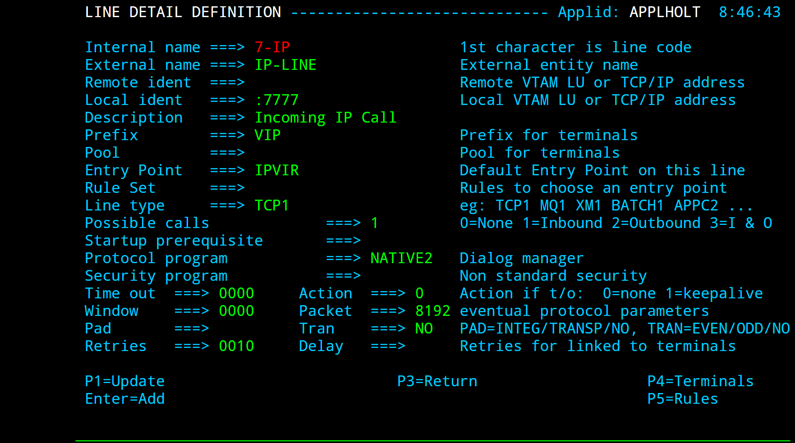
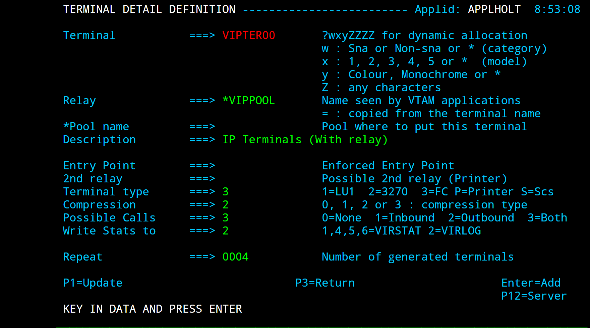

*VIRTEL Version 4 Web Access Guide*
29 Nov 2013
VIRTEL Version 4.52
**¶
*NOTICE*
Reproduction, transfer, distribution, or storage, in any form, of all or any part of the contents of this document, except by prior authorization of *SysperTec Communication*, is prohibited.
Every possible effort has been made by *SysperTec Communication* to ensure that this document is complete and relevant. In no case can *SysperTec Communication* be held responsible for any damages, direct or indirect, caused by errors or omissions in this document.
As *SysperTec Communication* uses a continuous development methodology; the information contained in this document may be subject to change without notice. Nothing in this document should be construed in any manner as conferring a right to use, in whole or in part, the products or trademarks quoted herein.
*SysperTec Communication* and *VIRTEL* are registered trademarks. Names of other products and companies mentioned in this document may be trademarks or registered trademarks of their respective owners.
Table of Contents¶
1.1.4 Creating HTML and XML template pages 27
1.1.5 Correspondent management 81
1.1.7 Web Access customization 105
1.1.8 Application selection menu 116
1.1.9 Printing with Web Access 120
1.1.11 Accessing VTAM applications 134
1.1.12 Site customization of colors and logo 136
1.1.13 Site customization of Javascript functions 140
1.1.14 Customizing the help page 146
1.2 VIRTEL Web Modernisation 150
1.3 VIRTEL Web Integration 234
1.3.1 VIRTEL Web Integration scenarios 234
1.4.1 Rules of the SMTP line 253
1.4.2 File transfer by e-mail 254
1.4.3 Starting an application by e-mail 255
1.5.1 Assembling the VIRTCT for VIRTEL Batch 258
1.5.2 Building the configuration file for VIRTEL Batch 259
1.5.3 Allocating the page template file for VIRTEL Batch 260
1.5.4 Allocating work files for VIRTEL Batch 261
1.5.5 Running the VIRTEL Batch job 262
1.5.6 VIRTEL Batch commands 263
1.5.7 VIRTEL Batch return codes 265
3.1.2 How to determine if running under VIRTEL 269
3.2 VIRTEL Web Integration 272
3.2.1 FA88: Transmit large data message to application 272
3.2.2 FAC8: Selection of page template 273
3.2.3 FAE5, FAE6: Sending a table variable 275
3.3.1 FAC8: Retrieve data from an e-mail 290
3.3.2 FAD4: Sending an e-mail from a host application 294
4.1 VIRTEL Web Access Security 297
4.1.2 Technical characteristics 297
5.1.1 How to use different screen sizes 304
5.1.2 How to override the codepage by URL parameter 307
5.1.3 How to handle host session termination 308
5.1.4 How to access a host application directly 310
5.1.5 How to change the font for Web Access 311
5.1.6 How to customize the Enter key settings 311
5.1.7 How to change the default user settings 311
5.1.8 How to define a reverse proxy 312
List of figures¶
Figure 1‑1 Transactions under entry point WEB2HOST 13
Figure 1‑2 Example of a directory transaction 14
Figure 1‑3 Example of a default transaction with default URL 15
Figure 1‑4 Custom Javascript function to generate a VirtelSession cookie 19
Figure 1‑5 Directory management summary screen 23
Figure 1‑6 Directory management detail screen 24
Figure 1‑7 Directory contents management screen 25
Figure 1‑8 Example set of ON-ATTRIBUTE and ON-END-OF-ATTRIBUTE tags 41
Figure 1‑9 Example set of ADD-TO-FIELDS tags 42
Figure 1‑10 Example styles for ADD-TO-FIELDS tags 43
Figure 1‑11 Function key values for pfkField 48
Figure 1‑12 Exampleof a JSON structure generated by TRACING-SCENARIO 63
Figure 1‑13 Country Codes for EBCDIC to ASCII translation 69
Figure 1‑14 Summary of correspondents 82
Figure 1‑15 Correspondent detail screen (e-mail correspondent) 82
Figure 1‑16 Correspondent detail screen (local correspondent) 83
Figure 1‑17 Page upload by SMTP: Creating an e-mail correspondent 85
Figure 1‑18 Page upload by SMTP : activation e-mail 86
Figure 1‑19 Page upload by SMTP : upload response e-mail 86
Figure 1‑20 Page upload by HTTP with cookie : Creating the ‘upload’ transaction 87
Figure 1‑21 Page upload by HTTP with cookie : Creating the e-mail correspondent 88
Figure 1‑22 Page upload by HTTP with cookie : Creating rule UPLOAD1B 88
Figure 1‑23 Page upload by HTTP with cookie : Rules of the HTTP line 89
Figure 1‑24 Page upload by HTTP with cookie : activation e-mail 90
Figure 1‑25 Page upload by HTTP with cookie : Displaying the upload.htm page 90
Figure 1‑26 Page upload by HTTP with cookie : File selection dialog 91
Figure 1‑27 Page upload by HTTP with cookie : Sending the file 91
Figure 1‑28 Page upload by HTTP with cookie : Confirmation of file uploadr 92
Figure 1‑29 Page upload by HTTP with signon : Transaction ‘dirlist’ 93
Figure 1‑30 Page upload by HTTP with signon : Transactions ‘uplxxx’ 94
Figure 1‑31 Page upload by HTTP with signon : Entering the userid and password 95
Figure 1‑32 Page upload by HTTP with signon : Displaying the upload4.htm page 96
Figure 1‑33 Page upload by HTTP with signon : File selection dialog 96
Figure 1‑34 Page upload by HTTP with signon : Sending the file 97
Figure 1‑35 Page upload by HTTP with signon : Confirmation of file upload 98
Figure 1‑36 Drag and drop upload interface 99
Figure 1‑37 Displaying upload results 100
Figure 1‑38 Upload summary report 101
Figure 1‑39 VIRTEL Web Access Settings menu (part 1 of 3) 106
Figure 1‑40 VIRTEL Web Access Settings menu (part 2 of 3) 107
Figure 1‑41 VIRTEL Web Access Settings menu (part 3 of 3) 108
Figure 1‑42 w2hparm.js: Default settings for VIRTEL Web Access 113
Figure 1‑43 w2hparm.js: List of keywords and possible values 115
Figure 1‑44 w2hparm.js: Hiding VIRTEL Web Access settings 115
Figure 1‑45 Application selection menu 116
Figure 1‑46 Definition of applist transaction 118
Figure 1‑47 Specifying the application selection menu in the default transaction 119
Figure 1‑48 VIRTEL definition of LUTYPE1 virtual printers 120
Figure 1‑49 VIRTEL definition of LUTYPE1 virtual printers 121
Figure 1‑50 VIRTEL terminal definitions for virtual printers 121
Figure 1‑51 Entry point definition for virtual printer autoconnect 122
Figure 1‑52 Transaction definition for virtual printer autoconnect 122
Figure 1‑53 VTAM definitions for virtual printers 123
Figure 1‑54 CICS TYPETERM definitions for virtual printers 123
Figure 1‑55 VIRTEL line definition for PCL2PDF server 124
Figure 1‑56 TSO transaction definition for file transfer 125
Figure 1‑57 VIRTEL Web Access toolbar for TSO file transfer 125
Figure 1‑58 VIRTEL IND$FILE receive dialog (part 1) 126
Figure 1‑59 VIRTEL IND$FILE receive dialog (part 2) 127
Figure 1‑60 VIRTEL IND$FILE receive dialog (part 3) 127
Figure 1‑61 VIRTEL IND$FILE receive dialog (part 4) 128
Figure 1‑62 VIRTEL IND$FILE send dialog (part 1) 129
Figure 1‑63 VIRTEL IND$FILE send dialog (part 2) 130
Figure 1‑64 VIRTEL IND$FILE send dialog (part 3) 131
Figure 1‑65 VIRTEL IND$FILE send dialog (part 4) 132
*Figure 1‑66 VIRTEL IND$FILE receive dialog (saved transfers)* 133
*Figure 1‑67 Saving the file transfer parameters* 133
Figure 1‑68 VTAM logon screen in VIRTEL Web Access mode 134
Figure 1‑69 Example VIRTEL transaction for VTAM logon via Web Access 135
Figure 1‑70 Example custom.css for coloring the toolbar according to CICS region 136
Figure 1‑71 Web Access screen with yellow toolbar for SPCICSP 137
Figure 1‑72 Web Access screen with pink toolbar for SPCICSQ 137
Figure 1‑73 Example custom.css for adding custom text to the toolbar 137
Figure 1‑74 Web Access screen with custom text in the toolbar 138
Figure 1‑75 Example custom.css for hiding the toolbar 138
Figure 1‑76 Example custom.css for modifying the 3270 colors 138
Figure 1‑77 Example custom.css for displaying company logo in the toolbar 139
Figure 1‑78 Example custom.css for replacing the Virtel logo by a company logo 139
Figure 1‑79 Example custom.js to customize the toolbar icons 142
Figure 1‑80 Example custom.js to remove selected toolbar icons 142
Figure 1‑81 Example custom.js to modify the text of the status bar 143
Figure 1‑82 Example custom.js to modify PF key hotspot recognition 143
Figure 1‑83 Example custom.js to add a watermark to the Web Access 3270 screen 143
Figure 1‑84 Example custom.css to define the style of the watermark 144
Figure 1‑85 Web Access screen with application name as watermark 144
Figure 1‑86 Example custom.js to modify Settings values 145
Figure 1‑87 Standard help page for Web Access 146
Figure 1‑88 custom.js to activate the VirtelMacros function 148
Figure 1‑89 Display macros for VirtelMacros function 148
Figure 1‑90 Example of a macros.json file 149
Figure 1‑91 Example of an empty macros.json file 149
Figure 1‑92 HTTP presentation module: List of values for input field 223
Figure 1‑93 HTTP presentation module: Clickable fields using DECLARE$ 224
Figure 1‑94 HTTP presentation module: Defining calendar fields 225
Figure 1‑95 HTML page template for calendar fields 226
Figure 1‑96 HTTP presentation module: Defining VIRTEL Suggest fields 227
Figure 1‑97 HTML page template for VIRTEL Suggest fields 229
Figure 1‑98 HTTP presentation module: 3270 auto-refresh 230
Figure 1‑99 Settings for 3270 auto-refresh 231
Figure 1‑100 HTML page template for 3270 auto-refresh 231
Figure 1‑101 HTTP presentation module: PDF output generation 232
Figure 1‑102 MakePDF INPUT.TXT file for PDF generation 232
Figure 1‑103 MakePDF DOCOPT.TXT file for PDF generation 233
Figure 1‑104 MakePDF LAYOUT.TXT file for PDF generation 233
Figure 1‑105 HTML form for generating Query input data (GET method) 234
Figure 1‑106 Example HTTP request with Query data (GET method) 234
Figure 1‑107 Example HTTP request with Query data (POST method) 235
Figure 1‑108 HTTP presentation module for Query input data 235
Figure 1‑109 Commarea generated from Query data 235
Figure 1‑110 VIRTEL transaction definition for Query input data 236
Figure 1‑111 Example HTTP request with XML input data 237
Figure 1‑112 HTTP presentation module for XML input data 237
Figure 1‑113 Commarea generated from XML input data 238
Figure 1‑114 HTML form with XML input data embedded in a text field 238
Figure 1‑115 XML input data in URL-encoded format (HTTP GET method) 238
Figure 1‑116 XML input data in URL-encoded format (HTTP POST method) 239
Figure 1‑117 VIRTEL transaction definition for XML input data 239
Figure 1‑118 Example XML input data with attributes and repeating groups 240
Figure 1‑119 Presentation module for XML input with attributes and repeating groups 240
Figure 1‑120 Commarea generated from XML input with attributes and repeating groups 240
Figure 1‑121 Example XML input data with redefinition of fields 241
Figure 1‑122 Presentation module for XML input with redefinition of fields 242
Figure 1‑123 Commarea generated from XML input with redefinition of fields 242
Figure 1‑124 HTTP presentation module for XML output 243
Figure 1‑125 Example page template for XML output data 244
Figure 1‑126 MAP$ statements for VIRTEL XML parser/generator 245
Figure 1‑127 VIRTEL transaction definition for XML-to-commarea conversion 246
Figure 1‑128 Initial scenario for XML-to-commarea conversion 246
Figure 1‑129 Input request for XML-to-commarea conversion 247
Figure 1‑130 Page template for XML-to-commarea conversion 247
Figure 1‑131 Output response from XML-to-commarea conversion 247
Figure 1‑132 VIRTEL transaction definition for commarea-to-XML conversion 248
Figure 1‑133 Initial scenario for commarea-to-XML conversion 248
Figure 1‑134 Input request for commarea-to-XML conversion 248
Figure 1‑135 Page template for commarea-to-XML conversion 249
Figure 1‑136 Output response from commarea-to-XML conversion 249
Figure 1‑137 Automatic scenario generation: MAPGJCL job 250
Figure 1‑138 Rule for routing an incoming e-mail on an SMTP line 253
Figure 1‑139 Entry point for file transfer by SMTP 254
Figure 1‑140 Transaction for file transfer by SMTP 254
Figure 1‑141 Entry point for application started by SMTP 255
Figure 1‑142 Transaction for application started by SMTP 255
Figure 1‑143 CICS definitions for application started by e-mail 256
Figure 1‑144 Example VIRTCT for VIRTEL Batch 258
Figure 1‑145 Job to build configuration file for VIRTEL Batch 259
Figure 1‑146 Job to allocate page template file for VIRTEL Batch 260
Figure 1‑147 Job to allocate work files for VIRTEL Batch 261
Figure 1‑148 Example JCL for VIRTEL Batch 262
Figure 1‑149 Example VIRTEL Batch GET commands 263
Figure 1‑150 Example VIRTEL Batch GET requests 263
Figure 1‑151 Example VIRTEL Batch POST command 264
Figure 1‑152 Example VIRTEL Batch POST request 264
Figure 1‑153 Example VIRTEL Batch RAW command 265
Figure 2‑1 Transaction definition for outgoing e-mails 266
Figure 3‑1 Defining an alternate CICS transaction code for an application 269
Figure 3‑2 Invoking the alternate transaction code from VIRTEL 269
Figure 3‑3 Detecting VIRTEL by testing the transaction code 269
Figure 3‑4 Invoking a CICS transaction with additional parameters 270
Figure 3‑5 Detecting VIRTEL by inspecting the contents of the TIOA 270
Figure 3‑6 Defining the VIRTEL terminal pool 271
Figure 3‑7 VTAM definition for the VIRTEL terminal pool 271
Figure 3‑8 Detecting VIRTEL by testing the CICS terminal id 271
Figure 3‑9 Detecting VIRTEL by testing the VTAM LU name 271
Figure 3‑10 Format of structured field FA88 272
Figure 3‑11 Format of structured field response FA88 272
Figure 3‑12 Format of structured field FAC8 code 06 273
Figure 3‑13 Format of structured field FAC8 code 07 273
Figure 3‑14 Example of sending structured field FAC8 274
Figure 3‑15 Format of structured field FAE5 – format 1 275
Figure 3‑16 Format of structured field FAE5 – format 2 275
Figure 3‑17 Example of sending structured field FAE5 276
Figure 3‑18 Example of VIRTEL Web Integration application using CALL VIRSETA 278
Figure 3‑19 Example of VIRTEL Web Integration application using CALL VIRSETV 280
Figure 3‑20 Example of VIRTEL Web Integration application using CALL VIRSETAI 282
Figure 3‑21 Example of VIRTEL Web Integration application using CALL VIRSETVI 283
Figure 3‑22 Example of VIRTEL Web Integration application using CALL VIRTEL 285
Figure 3‑23 Format of structured field FAC8 code 12 290
Figure 3‑24 Format of the response to structured field FAC8 code 12 290
Figure 3‑25 Format of structured field FAC8 code 13 291
Figure 3‑26 Format of the response to structured field FAC8 code 13 291
Figure 3‑27 Example of sending structured field FAC8 code 12 and 13 293
Figure 3‑28 Format of structured field FAD4 294
Figure 3‑29 Example of sending structured field FAD4 295
Figure 3‑30 Example of e-mail generated by structured field FAD4 296
Figure 4‑1 Example of signon dialog box displayed by browser 298
Figure 4‑2 CRYPTn parameter for password encryption using WEB2AJAX.htm 300
Figure 4‑3 HTML security: Example transaction with security type 4 300
Figure 4‑4 HTML security: Example page template 301
Figure 4‑5 HTTP security by rule: List of rules 302
Figure 4‑6 HTTP security by rule: Users authorized by cookie 302
Figure 4‑7 HTTP security by rule: Internal network, working hours 303
Figure 4‑8 HTTP security by rule: Other users 303
Figure 5‑1 Example of TSO transaction TSO specifying logmode SNX32705 305
Figure 5‑2 VTAM definition of terminal groups 305
Figure 5‑3 Example rule for selection of logmode by URL 306
Figure 5‑4 Definition of model 5 terminals in the W2HPOOL pool 306
Incoming Calls¶
VIRTEL Web Access¶
Introduction¶
VIRTEL Web Access (VWA)¶
VIRTEL Web Access, formerly known as “Web-to-Host” (W2H), is a set of functions which enable information produced by host applications to be presented in an Internet browser.
The principle of operation of this program relies on the production of HTML pages stored in a directory at the host site containing standard tags and also tags specific to VIRTEL. Invoked by a browser or a program, these pages form the basis of translation “on the fly” of the specific tags, thus enabling the dynamic generation of pages sent to the browser. The VWA model also includes functions which allow dynamic modification of the presentation of the 3270 screens in an HTML page, with the aim of making the interface as “clickable” as possible. This chapter describes the set of functions required to support this function and presupposes a certain knowledge of the development of HTML pages.
Some fundamental principles must be taken into consideration:
- Sessions between a browser and an HTTP server are in disconnected mode, while they are in connected mode between VIRTEL and the host application.
- The flow of information between an HTTP server and a client’s browser always occurs on the initiative of the client.
- A single request from the browser will only invoke a single response from the HTTP server, while the transmission of a message to an application on the host may generate several response messages at once (for example, a message to clear the screen followed by a new screen image).
These differences give rise to a need to ensure maintenance of session context between a client and a host application. This is done by the SESSION-CODE tag embedded in each template page.
Although the HTML pages used to display 3270 data contain specific VIRTEL tags, these pages can be developed using standard web development tools. The pages containing VIRTEL specific tags are stored in a VIRTEL directory along with any images and other elements required.
VIRTEL Web Modernisation (VWM)¶
VIRTEL Web Modernisation, formerly known as “Host-Web-Services” (HWS), allows the presentation of host applications to be modified, without modifying the application itself. The presentation can be adapted to a format (HTML, XML, Excel, etc) suited to the requester, while hiding the details of navigation within the 3270 transactions.
This function is implemented through a combination of the VIRTEL Web Access functions described in “Creating HTML and XML template pages” sur la page 27 and the “scenario language” described in “Web-to-Host Scenarios” sur la page 115.
VIRTEL Web Modernisation allows “frozen” or “untouchable” 3270 transactions to be accessed by intermediate servers (n-tier architecture) or from a browser, while hiding the details of navigation within the transactions. Variable input data for the transaction can either be included in the URL (GET method), or sent as data with the HTTP request (POST method).
VIRTEL Web Integration (VWI)¶
The objective of VIRTEL Web Integration, formerly known as “Host-for-Web” (H4W), is to allow a host application to take maximum control of its web interface. This is in complete contrast to VWA/VWM, whose objective is to avoid modification of host applications.
To control its web interface, an application has at its disposal primarily the 3270 screen, the VIRTEL table variable facility, the HTML page template, and a set of VIRTEL commands contained in structured fields. Additionally, for browser requests which enter VIRTEL using an entry point which specifies emulation type “HOST4WEB”, the application can also use a set of VIRTEL control commands which can be embedded in the 3270 screen via a BMS map, ISPF panel, or 3270 datastream. These HOST4WEB commands, available from VIRTEL version 4.28 onwards, provide the same general functions as the structured field commands in earlier versions.
Table variables, structured field commands, and HOST4WEB commands, are sent by the application to the 3270 session using standard methods (EXEC CICS SEND, ISPEXEC DISPLAY PANEL, TSO TPUT, etc). VIRTEL intercepts and acts upon these commands, for example by selecting the page template or loading data which can be referenced by VIRTEL orders embedded in the page templates and used to build lists of values or data tables.
For more information, refer to the VIRTEL Programming Interface documentation sur la page 267.
Service Transactions¶
A Service Transaction is a long-running VIRTEL transaction which maintains a session with a host application and uses this session to serve a series of HTTP request / responses. Unlike a regular HTTP transaction, which serves requests only from its originating user, identified by a specific VIRTEL SESSION-CODE, a service transaction can serve a different user each time it processes an HTTP request. Service transactions are typically used to provide fast access to public information such as the lists of field values displayed by the “VIRTEL Suggest” feature.
A service transaction is started by an HTTP URL in exactly the same way as a regular transaction, but when it has finished processing its first HTTP request, it indicates its readiness to serve another user, either by means of the script command &) described under the heading “Transactions — Connection / Disconnection Scripts” in the VIRTEL Connectivity Reference documentation, or by means of the ACTION$ SERVE-ANOTHER-USER command in a scenario (see “Dynamic modification of 3270 screen presentation” sur la page 154).
A service transaction remains connected to the host application between input messages. It is then eligible to process any HTTP request which specifies the same entry point and transaction name. Since service transactions can potentially be used by many different users, a typical service transaction will provide information which is not sensitive to being signed-on as a particular user.
VIRTEL URL formats¶
Static pages¶
The general form of the URL for an HTML page stored in a VIRTEL directory is:
http://ipaddr:port/pathname/pagename
- ipaddr:port corresponds to the “Local ident” field of an HTTP line defined to VIRTEL. The rules of the line are used to select the entry point. This entry point, which must specify emulation type HTML, contains the list of transactions which the user is authorized to invoke.
- pathname represents a VIRTEL directory containing HTML pages or other elements. Refer to the section “How the path name corresponds to a VIRTEL directory” below for details of how the pathname is used to select the VIRTEL directory.
- pagename is the name of an element (HTML page, etc.) in the specified directory. VIRTEL converts the element name to upper case (unless “case sensitive” is specified in the directory definition), and truncates the name if necessary to the maximum length specified in the directory definition (see “Directory management” sur la page 20).
VIRTEL also accepts certain abbreviated forms of the URL:
- ipaddr:port is the address of the HTTP line, as before.
- pathname represents a VIRTEL directory, as described above. In this case, VIRTEL loads a default page from this directory. The default page name is the same as the entry point name. Note: the trailing slash is compulsory.
- ipaddr:port is the address of the HTTP line, as before.
- pagename is the name of a page to be loaded from the default directory. The default directory corresponds to a default pathname equal to the entry point name.
- ipaddr:port is the address of the HTTP line, as before.
- In this case, VIRTEL loads the default URL. VIRTEL obtains the default URL from the “TIOA at logon” field of the default transaction. The default transaction is a type 4 transaction which has the same name as the entry point. See example 7 below for an example of a default URL. If the “TIOA at logon” field of the default transaction is blank, then VIRTEL loads the default page from the default directory. The default page has the same name as the entry point, and the default directory corresponds to a default pathname equal to the entry point name.
How the path name corresponds to a VIRTEL directory¶
The pathname specified in a VIRTEL URL is used to select a VIRTEL directory which contains HTML page templates and other elements such as CSS stylesheets, JavaScript procedures, and GIF or JPEG images. VIRTEL directories have a simple 8-character case-insensitive name, whereas the pathname is expressed in Unix-style syntax (one or more case-sensitive components separated by slashes), as is conventional for web applications. VIRTEL must therefore translate the Unix-style pathname into a VIRTEL directory name.
The process of mapping a pathname to a VIRTEL directory name is carried out by means of VIRTEL transactions which are defined under the entry point selected for each request by the rules of the HTTP line. The entry point contains both processing transactions (application types 1, 2, and 3) and directory transactions (application type 4).
To find the directory which corresponds to the pathname, VIRTEL looks for a type 4 transaction whose external name matches the first component of the pathname, and whose “Check URL prefix” field is either blank or matches the start of the pathname. The name of the VIRTEL directory is contained in the “Application name” field of the first such matching transaction found under the entry point.
Notes:
- The comparison of the first component of the pathname with the transaction external name is case insensitive, and if the first component of the pathname is longer than 8 characters, only the first 8 characters are compared.
- The comparison of the beginning of the pathname against the transaction’s “Check URL prefix” field is case sensitive.
- The “Check URL prefix” field may contain “%20” to represent a blank and “?” to ignore a character position.
- If the “Check URL prefix” field is completely blank it is considered to match any pathname whose first component matches the transaction external name.
Examples¶
Assume that entry point WEB2HOST contains the following transactions:
LIST of TRANSACTIONS prefixed by: W2H ———– Applid: SPVIRH2 17:53:47
Internal External Description Application
Name Name
W2H-00 WEB2HOST Default HTML directory (URL prefix blank) W2H-DIR
W2H-04 home User directory (URL prefix /home/user1) USER1DIR
W2H-05 home User directory (URL prefix /home/user2) USER2DIR
W2H-06 IMAGES All /images directories (URL prefix blank) W2H-DIR
W2H-10 cics CICS application DBDCCICS
W2H-20 tso TSO application TSO
Figure 1‑1 Transactions under entry point WEB2HOST
In this example, transactions W2H-00, W2H-04, W2H-05, and W2H-06 are “application type 4” (directory transactions). Transactions W2H-10 and W2H-20 are “application type 1” (processing transactions) and play no part in the directory selection process.
The figure below shows an example of the detail of a directory transaction:
TRANSACTION DETAIL DEFINITION ———————- Applid: SPVIRH2 15:18:38
Internal name ===> W2H-04 To associate with an entry point name
External name ===> home Name displayed on user menu
Description ===> User directory (URL prefix /home/user1)
Application ===> USER1DIR Application to be called
PassTicket ===> 0 Name ===> 0=no 1=yes 2=unsigned
Application type ===> 4 1=VTAM 2=VIRTEL 3=SERV 4=PAGE 5=LINE
Pseudo-terminals ===> DELOC Prefix of name of partner terminals
Logmode ===> Specify when LOGMODE must be changed
How started ===> 2 1=menu 2=sub-menu 3=auto
Security ===> 0 0=none 1=basic 2=NTLM 3=TLS 4=HTML
H4W commands ? ===> 0=no 1=yes 2=if2VIRTEL 4=auto
Check URL Prefix ===> /home/user1
TIOA at logon ===>
TIOA at logoff ===>
Initial Scenario ===> Final Scenario ===>
Input Scenario ===> Output Scenario ===>
P1=Update P3=Return P12=Server
Figure 1‑2 Example of a directory transaction
Example 1: Neither pathname nor pagename specified
The pathname defaults to the entry point name, WEB2HOST, which matches transaction W2H-00. The pagename also defaults to WEB2HOST. VIRTEL therefore fetches page WEB2HOST from the directory W2H-DIR.
Example 2: Pagename specified
The pathname defaults to the entry point name, WEB2HOST, which matches transaction W2H-00. VIRTEL therefore fetches page menu.htm from the directory W2H-DIR.
Example 3: Pathname specified
http://ipaddr:port/home/user1/
The pathname /home/user1 matches transaction W2H-04. The pagename defaults to the entry point name, WEB2HOST. VIRTEL therefore fetches page WEB2HOST from the directory USER1DIR.
Example 4: Pathname and pagename specified
http://ipaddr:port/home/user2/index.html
The pathname /home/user2 matches transaction W2H-05. VIRTEL therefore fetches page index.html from the directory USER2DIR.
Example 5: Undefined pathname specified
http://ipaddr:port/home/user3/index.html
In this case the pathname /home/user3 does not match any transaction. VIRTEL therefore rejects the request.
Example 6: Partly-defined pathname specified
http://ipaddr:port/images/misc/square.gif
{kind=link}
The pathname /images/misc is not specifically defined to VIRTEL. However there is a transaction W2H-06 whose external name is IMAGES and whose “Check URL prefix” field is blank, which matches all pathnames whose first component is /images. VIRTEL therefore fetches the page square.gif from the directory W2H-DIR.
Example 7: Entry point with default URL
When a user connects to a VIRTEL line without specifying either pathname or pagename, as in the example below, the entry point may be configured to redirect the request to a default URL:
A default URL may be specified in the transaction whose external name is the same as the entry point name. In the example type 4 transaction W2H-00 shown below, the default URL for the entry point WEB2HOST is /w2h/WEB2VIRT.htm+Cics and thus the URL http://ipaddr:port is processed by VIRTEL as if http://ipaddr:port/w2h/WEB2VIRT.htm+Cics had been specified.
TRANSACTION DETAIL DEFINITION ———————- Applid: SPVIRH2 15:19:57
Internal name ===> W2H-00 To associate with an entry point name
External name ===> WEB2HOST Name displayed on user menu
Description ===> Répertoire des pages HTML - (Accés par défaut)
Application ===> W2H-DIR Application to be called
PassTicket ===> 0 Name ===> 0=no 1=yes 2=unsigned
Application type ===> 4 1=VTAM 2=VIRTEL 3=SERV 4=PAGE 5=LINE
Pseudo-terminals ===> DELOC Prefix of name of partner terminals
Logmode ===> Specify when LOGMODE must be changed
How started ===> 2 1=menu 2=sub-menu 3=auto
Security ===> 0 0=none 1=basic 2=NTLM 3=TLS 4=HTML
H4W commands ? ===> 0=no 1=yes 2=if2VIRTEL 4=auto
Check URL Prefix ===>
TIOA at logon ===> /w2h/WEB2VIRT.htm+Cics
TIOA at logoff ===>
Initial Scenario ===> Final Scenario ===>
Input Scenario ===> Output Scenario ===>
P1=Update P3=Return P12=Server
Figure 1‑3 Example of a default transaction with default URL
Dynamic pages¶
The general form of the URL for a VIRTEL Web Access, VIRTEL Web Integration, or VIRTEL Web Modernisation transaction is:
http://ipaddr:port/pathname/pagename+tranname
- ipaddr:port is the address of the HTTP line, as before.
- pathname represents a VIRTEL directory, as described earlier.
- pagename is the name of an element (HTML or XML) in the specified directory. This name may be converted to upper case and truncated to the maximum length defined in the directory definition, as previously described. This element is used as the “template page” into which VIRTEL inserts dynamic data.
- tranname is the external name of a transaction defined under the entry point. The application program (which may be a CICS transaction or other VTAM application, a VIRTEL sub-application, or an external server) invoked by this transaction provides the dynamic data which VIRTEL inserts into the template page.
Dynamic URL with userdata¶
A second form of URL allows user data to be passed to VIRTEL:
http://ipaddr:port/pathname/pagename+tranname+userdata
- ipaddr:port is the address of the HTTP line, as before.
- pathname represents a VIRTEL directory, as described earlier.
- pagename is the name of a template page, as before.
- tranname is the name of the transaction which provides the dynamic data for the template page.
- userdata is a character string which can be tested by the “User Data” field in the rules of the HTTP line (see “Rules” in the VIRTEL Connectivity Reference documentation). This allows the administrator to assign an entry point to the request based upon the contents of the userdata in the URL. The userdata also becomes the value of the “routing parameter” associated with the tranname transaction. The routing parameter can be referenced by the variable &1 in the “TIOA at logon” field of the tranname transaction (see “Defining transaction parameters” in the VIRTEL Connectivity Reference documentation). Additionally, if the rule which is selected specifies “$URL$” in its “Parameter” field, and if the HTTP terminal relays are defined in a logical pool (see “HTTP Terminals” under the heading “Definition of an HTTP line” in the VIRTEL Connectivity Reference documentation), then the routing parameter is used by VIRTEL to select a relay LU for the tranname transaction.
Dynamic URL with parameters¶
A third form of URL allows one or more parameters to be passed to a transaction by means of an “Input Scenario” or by a “Connection / Disconnection Script”:
http://ipaddr:port/pathname/pagename+tranname?param1=value¶m2=value
- ipaddr:port is the address of the HTTP line, as before.
- pathname represents a VIRTEL directory, as described earlier.
- pagename is the name of a template page, as before.
- tranname is the name of the transaction which provides the dynamic data for the template page. This transaction must be defined with the name of a presentation module in its “Output Scenario” field.
- param1, param2, ... are the names of the parameters which the scenario can pick up using the COPY$ INPUT-TO-VARIABLE or COPY$ INPUT-TO-SCREEN instructions (described sur la page 161) or which can be substituted in a script by means of the &=paramn= system variable (see “Transactions – Connection / Disconnection Scripts” in the VIRTEL Connectivity Reference documentation. The cumulative length of the URL parameters is limited by the BUFSIZE parameter of the VIRTCT. If blanks or other special characters are required in the parameter value, then the special characters must be coded in the standard URL escape format %xx where xx is the hexadecimal value of the character in ASCII. For example, a blank is represented as %20.
Dynamic URL with userdata and parameters¶
A URL may contain both userdata and query parameters, as shown in the following example. The various components of the URL have the same meaning as described in the preceding two sections.
http://ipaddr:port/pathname/pagename+tranname+userdata?param1=value¶m2=value
3270 session management¶
VirtelSession parameter¶
Once a session has been established with the host 3270 application, the template page allows the user to link to the next screen in the 3270 application dialog by means of a URL in the following format:
http://ipaddr:port/pathname/pagename++VirtelSession=sessionid
- ipaddr:port is the address of the HTTP line, as before.
- pathname represents a VIRTEL directory, as described earlier.
- pagename is the name of the template page to be used for displaying the next 3270 screen (usually the same as the current template page).
- sessionid is a VIRTEL-generated code which allows VIRTEL to identify the user as being already connected to an existing host session. The parameter VirtelSession=sessionid is inserted by the {{{SESSION-CODE}}} tag embedded in the template page (see “Session and context management” sur la page 28).
PrintVirtelSession parameter¶
A second form of the URL with SESSION-CODE allows display of print data sent by the application to the virtual printer associated with the specified session. Normally this URL will be embedded in a template page and will be triggered by the {{{IF-PRINT-IS-READY}}} tag.
http://ipaddr:port/pathname/pagename++PrintVirtelSession=sessionid
ipaddr:port is the address of the HTTP line, as before.
pathname represents a VIRTEL directory, as described earlier.
pagename is the name of the template page to be used for displaying the print data. This page must contain the special {{{PRINT}}} tag (see “3287 printing” sur la page 78) at the point at which the print data are to be inserted in the page.
- sessionid is a code which allows VIRTEL to identify the printer associated with the user’s 3270 session. The parameter PrintVirtelSession=sessionid (where sessionid is the associated 3270 session identifier), is generated by the {{{SESSION-CODE}}} tag as in the following example:imprim.htm++Print{{{SESSION-CODE}}}
ValidateVirtelSession parameter¶
A third form of URL with SESSION-CODE allows a JavaScript procedure embedded in a template page to determine whether there are pending updates to the 3270 screen image. For this type of URL, VIRTEL returns no data, only an HTTP response code. The possible response codes are:
- 205 (Reset Content) the host application has updated the 3270
- screen image since the last time it was sent to the user
- 304 (Not Modified) the host application has not updated the 3270
- screen image
- 404 (Not Found) the sessionid code does not represent a valid
- host session
When response code 205 is indicated, the JavaScript procedure sends a further request to VIRTEL to retrieve the updated 3270 screen image. This technique can be useful in handling host applications which use multiple 3270 write commands to paint a single 3270 screen, where the user might otherwise be presented with a partially updated screen. An example of this technique is contained in the WEB2VIRT.htm page delivered in the VIRTEL sample directory W2H-DIR.
http://ipaddr:port/pathname/pagename++ValidateVirtelSession=sessionid
ipaddr:port is the address of the HTTP line, as before.
pathname represents a VIRTEL directory, as described earlier.
pagename may be specified but is not used.
- sessionid is a code which allows VIRTEL to identify the 3270 session whose status is being queried. The parameter ValidateVirtelSession=sessionid (where sessionid is the associated 3270 session identifier), is generated by the {{{SESSION-CODE}}} tag as in the following example:check.htm++Validate{{{SESSION-CODE}}}
For compatability with previous versions, the keyword VerifyVirtelSession is also accepted. VerifyVirtelSession is similar to ValidateVirtelSession except that it produces only two possible return codes: 205 (screen updated) and 304 (screen not updated or session invalid).
$UseCookieSession$ parameter¶
As an alternative to specifying the VirtelSession parameter in the URL, the SESSION-CODE may be sent to VIRTEL in a cookie. An example URL is shown below:
http://ipaddr:port/pathname/pagename++$UseCookieSession$
- ipaddr:port is the address of the HTTP line, as before.
- pathname represents a VIRTEL directory, as described earlier.
- pagename is the name of the template page to be used for displaying the next 3270 screen (usually the same as the current template page).
- $UseCookieSession$ indicates that the SESSION-CODE is contained in the VirtelSession cookie.
The VirtelSession cookie should be generated by Javascript as shown in the example below. This function may be added to the custom.js script (see “Site customization of Javascript functions sur la page 140):
/* Save VirtelSession cookie after each subpage is loaded */
function after_responseHandle(o, url, xtim) {
var node = document.getElementById(“sesscode”);
if (node) {
var text = node.textContent || node.innerText;
var sess = text.replace(/^VirtelSession=/i,””);
createCookie(“VirtelSession”, sess, 1);
}
}
Figure 1‑4 Custom Javascript function to generate a VirtelSession cookie
Capability URLs¶
A URL may contain a “capability token” generated by another terminal. In this case the URL inherits certain rights or capabilities conferred by the other terminal. The capabilities inherited depend on the parameters specified in the SET-HEADER tag which generated the capability token. For further details, see “Capability tokens” on page 75.
http://ipaddr:port/pathname/pagename+tranname+capabilitytoken
- ipaddr:port is the address of the HTTP line, as before.
- pathname represents a VIRTEL directory, as described earlier.
- pagename is the name of a template page, as before.
- tranname (optional) is the name of the transaction which supplies the dynamic data for the page. If the transaction name is omitted then two “+” signs must separate the pagename from the capabilitytoken
- capabilitytoken is a token which grants rights to another terminal’s resources. This code, whose format is x-Virtel-name:token, is generated by the {{{SET-HEADER}}} tag (see page 75). The code is case-sensitive and so the capitalization must be exactly the same as the generated token.
Transmission of upload cookie by URL¶
The security code, which identifies a user during page upload by HTTP, is normally transmitted between the browser and VIRTEL as a cookie (see “Uploading HTML pages” sur la page 85). If, for security or other reasons, your browser does not allow the use of cookies, then the security code can, as an alternative, be embedded in a URL of the form shown below:
http://ipaddr:port/pathname/pagename+tranname+securitycode
ipaddr:port is the address of the HTTP line, as before.
pathname represents a VIRTEL directory, as described earlier.
pagename is the name of a template page, as before.
tranname is the name of the transaction which supplies the dynamic data for the page.
- securitycode is the code which allows VIRTEL to identify the user. This code, whose format is VirtelCookie=xxxxxxxxxxxxxxxx, is generated by the {{{SECURITY-TOKEN}}} tag, as shown in the example below:upload2.htm+upload+VirtelCookie={{{SECURITY-TOKEN}}}
The following format allows a static page to be displayed:
http://ipaddr:port/pathname/pagename++securitycode
- ipaddr:port is the address of the HTTP line, as before.
- pathname represents a VIRTEL directory, as described earlier.
- pagename is the name of the page.
- securitycode is a code of format VirtelCookie=xxxxxxxxxxxxxxxx which allows VIRTEL to identify the user, as before.
On receipt of this URL, VIRTEL treats the VirtelCookie= parameter as if it were a cookie transmitted by the browser.
Propagation of signon by URL¶
A URL embedded in a page sent by VIRTEL may contain a VirtelUserSignon parameter in order to propagate the user’s signon credentials to another page. The value of the parameter is generated by the {{{USER-SIGNON-CODE}}} tag, described sur la page 65. This can be useful in cases where the browser does not propagate the user name and password from one page to another, for example when using VIRTEL transaction security type 4. The format of a URL containing a signon code is shown below:
http://ipaddr:port/pathname/pagename+tranname+VirtelUserSignon=signoncode
ipaddr:port is the address of the HTTP line, as before.
pathname represents a VIRTEL directory, as described earlier.
pagename is the name of a template page, as before.
tranname is the name of the transaction which supplies the dynamic data for the page.
- signoncode is a code which allows VIRTEL to identify the signed-on user. This code is generated by the {{{USER-SIGNON-CODE}}} tag, as shown in the example below:http://web2virt.htm+cics+VirtelUserSignon={{{USER-SIGNON-CODE}}}
The Universal Transaction¶
A transaction may be defined with an external name consisting of an asterisk, and this is considered to be a “universal” transaction. A universal transaction matches any URL not already matched by a preceding transaction in the entry point. This allows VIRTEL to process URLs whose format does not conform to the classic VIRTEL formats previously described.
Directory management¶
HTML and XML template pages and other entities such as CSS stylesheets, JavaScript procedures, and GIF or JPEG images used by VIRTEL Web Access are stored in directories within a VSAM KSDS managed by VIRTEL. Each KSDS defined to VIRTEL can contain one or more directories. The system administrator can upload pages and other elements into a VIRTEL directory by using a web browser or by e-mail, as described in detail in the section “Uploading HTML pages” sur la page 85.
Accessing the application¶
The directory management sub-application allows the administrator to define directories. The sub-application is accessible by [PF6] from the configuration menu, or by [PF12] from the system services menu followed by option 3, or from the VIRTEL Multi-Session menu via a transaction which invokes VIRTEL module VIR0042.
Security¶
If security is active, access to the directory management sub-application from the configuration menu or the system services menu is controlled by resource $$PCPC$$.
When invoked via a transaction, normal transaction security rules apply.
In addition, each directory is protected by a resource whose name is the same as the directory name. The administrator must have access to this resource in order to view or manage the contents of the directory, or to upload pages to the directory. When an external security product is used, the resource is defined in the class named by the RNODE parameter in the VIRTCT (see “Parameters of the VIRTCT” in the VIRTEL Installation Guide).
Security management is described in the Virtel Security documentation.
Creating, modifying, and deleting directories¶
When the directory management sub-application is invoked, it displays a list of the directories already defined in the system:
LIST of DIRECTORIES ——————————– Applid: SPVIRH2 15:33:07
Name Description T DD name Keyword Names Case Down Up Del
length load load
HTMLBAS Pages for DEMOHTTP V HTMLTRSF SAMPLE 0008 X X X
PLUGSRCE Installation PLUGIN V PLUGTRSF PLUGSRCE 0008 X X X
USER1DIR Pages for /home/user1 V HTMLTRSF USER1KEY 0044 X X X X
USER2DIR Pages for /home/user2 V HTMLTRSF USER2KEY 0064 X X X X
W2H-DIR Pages for WEB2HOST V HTMLTRSF W2H-KEY 0008 X X X
P1=Update P2=Delete P3=Return P4=List
P6=First page P7=Previous P8=Next P12=Add
Figure 1‑5 Directory management summary screen
Associated functions¶
Deleting a directory definition¶
To delete a directory definition, place the cursor on the name of the directory to be deleted and press [PF2]. The message CONFIRM DELETE appears at the bottom of the screen. Press [PF2] again. The message DELETE OK indicates that the deletion of the directory definition was successful. While the message CONFIRM DELETE is displayed, you can press any function key other than [PF2] to cancel the operation.
Displaying directory contents¶
To display the contents of a directory, place the cursor on the directory name and press [PF4]. VIRTEL displays the directory contents management screen described below.
Adding a directory definition¶
To create a new directory definition, place the cursor on the blank line after the last directory, and press [PF12] to display an empty directory detail screen. Fill in all of the fields and press [ENTER]. The message CREATION OK indicates that the directory definition was successfully created.
Scrolling the list of directories¶
To scroll to the top of the list, press [PF6]. To scroll up or down the list, press [PF7] or [PF8].
Exiting from directory management¶
To return to the configuration menu, press [PF3].
Defining directory parameters¶
To access the detail screen for any directory, place the cursor on the directory name and press [PF12]:
DIRECTORY DETAIL DEFINITION ———————— Applid: SPVIRH2 15:35:31
Name ===> W2H-DIR Name of this directory
Description ===> Pages for WEB2HOST Describes directory
Type ===> V V=VSAM
DD name ===> HTMLTRSF DD name in Virtel JCL
Keyword ===> W2H-KEY Directory internal name
Size of names ===> 0008 Significant length of filenames
Case ===> Filenames are case sensitive
If a user has access to this directory, he may:
(mark with ‘X’)
Copy up ===> X upload a file
Copy down ===> X download a file
Delete ===> X delete a file
P1=Update P3=Return P4=List
Figure 1‑6 Directory management detail screen
Contents of the fields¶
Name The name of the directory as known by VIRTEL. If security is active, this name must also be defined as a resource to which the user must be authorized.
Description Comment associated with the directory.
Type V (or blank) indicates that the directory is held in a VSAM KSDS.
DD name The file name of the VSAM KSDS which contains the directory. This name must be defined in one of the UFILEn parameters in the VIRTCT, and a DD statement with the same name must appear in the VIRTEL started task JCL.
Keyword This is an 8-byte key which allows multiple directories to be stored within a single VSAM KSDS. Each directory in a KSDS must have a unique key.
Size of names The maximum length of the names of HTML pages and other elements stored in this directory. The minimum (and default) value is 8. The maximum value is 64.
Case Any non-blank character in this field indicates that the element names stored in this directory are case sensitive. Blank indicates that the names are not case sensitive.
Copy up This field is used by VIRTEL/PC. For VIRTEL Web Access directories, the value X must be coded.
Copy down This field is used by VIRTEL/PC. For VIRTEL Web Access directories, the value X must be coded.
Delete This field is used by VIRTEL/PC. For VIRTEL Web Access directories, the value X must be coded.
Directory contents management¶
After pressing [PF4] at the directory management summary screen or detail screen, VIRTEL displays a list of the files in the directory:
DIRECTORY : W2H-DIR [1] 55 FILE(S)———— Applid: SPVIRH2 10:50:31
Pages for WEB2HOST [2]
Name Size Date Time
WEBSERV0 5572 20050208 15:52:23
ES.GIF 517 20050208 15:51:35
CALENDAR K 53 20050208 15:51:25
FAVICON. 2998 20050208 15:51:36
NOIR.GIF 161 20050208 15:51:48
TXTSERV2 K 15 20050208 15:52:05
STYLNOIR 2709 20050208 15:51:56
CAL-EN.J 3830 20050208 15:51:24
BLUE.GIF 161 20050208 15:51:23
WEB2PLUG 6370 20050208 15:52:21
VERT.GIF 161 20050208 15:52:12
RED.GIF 161 20050208 15:51:50
IMPRIM.H 826 20050208 15:51:40
VIRLOAD. 1346 20050208 15:52:13
VIRTNOIR 3737 20050208 15:52:16
[3] [4] [5] [6]
F2=Delete F3=Return F7=First page F8=Next page
F6=Copy to ... HTMLBAS
[7]
Figure 1‑7 Directory contents management screen
Contents of the fields¶
[1] Name of directory.
[2] Directory description.
[3] Name of elements contained in the directory.
[4] Approximate size of element (K indicates that the size is displayed in kilo-bytes).
[5] Date when element was loaded into the directory.
[6] Time when element was loaded into the directory.
[7] Name of target directory for file copy.
Associated functions¶
Deleting an element¶
To delete an element from a directory, place the cursor on the name of the element to be deleted and press [PF2]. The message CONFIRM DELETE appears at the bottom of the screen. Press [PF2] again. The message DELETE OK indicates that the deletion of the element was successful. While the message CONFIRM DELETE is displayed, you can press any function key other than [PF2] to cancel the operation.
Copying an element to another directory¶
To copy an element from directory A to directory B, first display the contents of directory A. In field [7] type the name of the target directory B, then press [ENTER]. Next, place the cursor on the name of the element to be copied, then press [PF6]. The message COPY COMPLETED indicates that the operation was successful. If the element exists in the target directory, the copy fails and the message THIS FILE IS ALREADY IN THE TARGET DIRECTORY is displayed at the bottom of the screen.
Scrolling the list¶
The list of elements can be scrolled up and down using [PF7] and [PF8].
Exiting from directory contents management¶
To return to the list of directories, press [PF3].
Creating HTML and XML template pages¶
Template pages are the means by which VIRTEL presents host application data to the user via a web browser. In addition to standard HTML or XML tags, template pages contain VIRTEL-specific tags enabling integration of information delivered by the mainframe application programs. HTML template pages may contain GIF or JPEG images, sounds, scripts such as JavaScript or any other function or program elements that are compatible with the browser. Template pages may be produced either by hand or by using standard HTML or XML design tools available on the market,
Defining the tag delimiters¶
VIRTEL-specific tags are used to insert data originating at the host into an HTML or XML page, and to manage colours and function keys in an HTML page. VIRTEL-specific tags are identified by special begin and end delimiters.
The delimiters themselves are defined by means of a comment placed between the tags <HEAD> and </HEAD> of the HTML page. The actual delimiters may vary from one page to another.
<!–VIRTEL start=”{{{” end=”}}}” –>
In this example, VIRTEL-specific tags are defined as being represented by a succession of 3 opening braces and terminated by a succession of 3 closing braces. This convention is maintained throughout the remainder of this chapter.
Session and context management¶
VIRTEL uses the concept of a sessioncode to maintain the context between a client using a browser and the host application to which the client is connected. This code allows VIRTEL to identify the client and to associate the client with a session already established with a host application.
SESSION-CODE tag¶
The SESSION-CODE tag is used to create the URL associated with form submission.
{{{ SESSION-CODE }}}
The SESSION-CODE tag allows a sessioncode to be inserted in the template page in the format VirtelSession=xxxxxxxxxxxxxxxx. The value of the sessioncode changes after each message. For examples of its use, see “Transmitting data to the host” au-dessous, and “3287 printing” sur la page 78.
AJAX-SESSION-CODE tag¶
The AJAX-SESSION-CODE tag is similar to the SESSION-CODE tag, but it generates the code in a different format which does not change with each request. This is useful when implementing an AJAX dialog between the application and the browser. For this type of application, it is not always possible to transmit the VIRTEL session code to the browser, especially if a Javascript library is used.
{{{ AJAX-SESSION-CODE }}}
The AJAX-SESSION-CODE tag allows a sessioncode to be inserted in the template page in the format AjaxSession=xxxxxxxxxxxxxxxx. For example:
result.txt+cics+{{{ AJAX-SESSION-CODE }}}
SET-INITIAL-TIMEOUT tag¶
The SET-INITIAL-TIMEOUT tag allows a timeout to be started when VIRTEL builds the page.
{{{ SET-INITIAL-TIMEOUT “n” }}}
For example, if the instruction
{{{ SET-INITIAL-TIMEOUT “10” }}}
is coded in a page or a sub-page, then VIRTEL will cancel the session if the workstation has not sent another request after 10 seconds.
Transmitting data to the host¶
Transmission of data to the host uses the principle of sending an HTML form. In conjunction with the SESSION-CODE tag, the form allows the transmission of input fields to the host application, and the display of the subsequent application screen.
The form is defined as follows:
<FORM name=”FormName” action=”VirtelURL” method=”POST”>
</FORM>
*name* Form name. The name of the form is used in JavaScript procedures to refer to various elements of the form. For an example, see the section “Cursor management” sur la page 44.
*action* URL transmitted to the server, in the following format:
action=”pagename++{{{SESSION-CODE}}}”
pagename is the name of the template page to be used to display the subsequent screen sent by the host application (usually the same as the current template page)
{{{SESSION-CODE}}} identifies the session established with the host application
*method* Transmission mode.
Always POST.
Example :
<form name=”Virtel” action=”WEB2VIRT.htm++{{{SESSION-CODE}}}” method=”post”>
Where to position the elements of an HTML page¶
By design, an HTML page starts with the <HTML> tag and is terminated by the </HTML> tag. In order to be able to be correctly interpreted by the browser, other tags are necessary, for example <HEAD> and </HEAD> as well as <BODY> and </BODY>. All other tags are optional.
As shown previously, data transmitted to the HTTP server by the client is itself placed in the tag fields <FORM> and </FORM>. In order to minimise traffic, it is also advisable to place only useful data in the tag fields for example, generated fields or copies resulting from GENERATE-HTML and COPY-FROM tags, as well as indispensable fields such as focusField and pfkField. Other data may be placed anywhere in the area of the HTML page, provided that their position conforms to the standards. The following presents an example of the possible structure.
<HTML>
<HEAD><!—————— *start of HTML page header* ——————–>
<style><!– définition des classes de style
.GREEN {font-family: monospace; background: #000000; color: #00FF00; }
//–></style>
<!–VIRTEL start=”{{{” end=”}}}” –>
{{{ON-ATTRIBUTE (PROTECTED,WHITE)<font color=white>}}}
{{{ON-END-OF-ATTRIBUTE (PROTECTED,WHITE)</font>}}}
{{{ADD-TO-FIELDS (NORMAL,NOCOLOR) class=”GREEN” }}}
{{{DEFINE-HTML-PFKEY “PFKFIELD“}}}
{{{DEFINE-HTML-FOCUS-FIELD “FOCUSFIELD“}}}
<title>Sample HTML page</title>
</HEAD><!—————— *end of HTML page header* ——————–>
<script language=”JavaScript”><!–
function SetFocus()
{ document.virtelForm.{{{FIELD-WITH-CURSOR}}}.focus(); }
function SaveFocus(CurrentFieldName)
{ document.virtelForm.FOCUSFIELD.value = CurrentFieldName; }
function SubmitForm(valeur)
{ document.virtelForm.PFKFIELD.value = valeur;
document.virtelForm.submit(); }
function ShowPopup()
{ var popup = window.open(“”,”PopupImpression”,’width=614,height=129’);
popup.location = “imprim.htm++Print{{{SESSION-CODE}}}”; }
–></script>
<!———————- *start of HTML* *page body* ——————–>
<BODY onLoad=”SetFocus()”>
<!————————- *start of HTML form* ———————–>
<FORM name=”virtelForm“
action=”example.html++{{{SESSION-CODE}}}”
method==”POST”>
{{{ GENERATE-HTML (1,1,1920) }}}
<input name=”PFKFIELD” type=”HIDDEN” value=”“>
<input name=”FOCUSFIELD” type=”HIDDEN” value=”{{{FIELD-WITH-CURSOR}}}”>
</FORM><!——————— *end of HTML form* ———————->
<!—-Place submit buttons and hypertext links here. For example:–>
<a href=”javascript:submitform(‘PF1‘)” >soumettre avec PF01</a>
<INPUT TYPE=”BUTTON” size=”5” onclick=”SubmitForm(this.value)” value=”PF01”>
<script language=”JavaScript”><!–
{{{IF-PRINT-IS-READY
ShowPopUp();
}}}
–></script>
</BODY><!—————— *end of HTML page body* ——————–>
</HTML>
For a full example, see the WEB2VIRT.htm page delivered with VIRTEL.
Inserting host application data in a page¶
Insertion of host application data in an HTML or XML page is achieved with the GENERATE-HTML and COPY-FROM tags.
GENERATE-HTML tag¶
The GENERATE-HTML tag instructs VIRTEL to convert all or part of the 3270 screen into HTML form data. Output fields are converted into text, while input fields are converted into HTML input statements. The generated text and input fields are aligned so as to correspond as far as possible with the layout of the original 3270 screen. The resulting generation takes account of the nature of the data as well as the information specified in the ON-ATTRIBUTE, ON-END-OF-ATTRIBUTE and ADD-TO-FIELDS tags.
{{{ GENERATE-HTML (row, col, len) }}}
*row,col* Starting position (row and column number on the 3270 screen) of the data to be copied. This starting position will usually contain a 3270 attribute character.
*len* Length of the data to be copied (including attribute characters).
For example, the command {{{ GENERATE-HTML (01,01,1920) }}} will generate the total contents of the 3270 screen.
An alternative form of the GENERATE-HTML tag allows the position and length to be specified by means of a symbolic name defined in a previous DEFINE-DFHMDF-NAME or DEFINE-DFHMDF-COLUMN tag (described sur la page 36).
{{{ GENERATE-HTML “name” }}}
*name* symbolic name defined in a previous DEFINE-DFHMDF-NAME or DEFINE-DFHMDF-COLUMN tag.
COPY-FROM tag¶
The COPY-FROM tag copies data into the HTML page from a specific location on the 3270 screen. Unlike the GENERATE-HTML tag, the COPY-FROM tag copies only the data and does not process any associated 3270 field attributes.
{{{ COPY-FROM (row, col, len) }}}
*row,col* Starting position (row and column number on the 3270 screen) of the data to be copied. This will typically be the first character after the attribute character which defines the start of the field.
*len* Length of the data to be copied.
An alternative form of the COPY-FROM tag allows the position and length to be specified by means of a symbolic name defined in a previous DEFINE-DFHMDF-NAME or DEFINE-DFHMDF-COLUMN tag (described sur la page 36).
{{{ COPY-FROM “name” }}}
*name* symbolic name defined in a previous DEFINE-DFHMDF-NAME or DEFINE-DFHMDF-COLUMN tag.
Normally, any binary zeroes in the copied data will be removed. However, if the BLANK-BINARY-ZEROES option is set (see “Setting and unsetting local options” sur la page 49) then binary zeroes will be converted to blanks.
CREATE-VARIABLE-FROM tag¶
The CREATE-VARIABLE-FROM tag copies data from the 3270 screen into a VIRTEL variable. There are several formats of the COPY-VARIABLE-FROM tag, as described below.
In the first form of CREATE-VARIABLE-FROM, the name of a variable is specified within the tag. Data is extracted from the indicated location on the screen, continuing until an attribute character is found or until the specified length is reached. Any non-alphanumeric characters are removed, all alphabetic characters are converted to upper case, and the resulting data is copied into the variable. If the variable does not exist, it will be created. If the variable already exists, the new value will be appended to any existing values.
{{{ CREATE-VARIABLE-FROM (row, col, len) “varname” }}}
*row,col* Starting position (row and column number on the 3270 screen) of the data to be copied. This will typically be the first character after an attribute character which defines the start of a field.
*len* Length of the data to be copied.
*varname* The name of the variable to be created
The second form of CREATE-VARIABLE-FROM is distinguished by the absence of a variable name within the tag. In this case, the variable name is obtained from the 3270 screen. Data is extracted from the indicated location on the screen, continuing until an attribute character is found or until the specified length is reached. Any non-alphanumeric characters are removed, all alphabetic characters are converted to upper case, and the resulting string is used as a variable name. If the variable does not exist, it will be created. If the variable already exists, a new value will be appended to any existing values. If the variable name was terminated by an attribute character, then the data in the following field is used as the value of the variable. Otherwise the string “EMPTY” will be used as the value of the variable.
{{{ CREATE-VARIABLE-FROM (row, col, len) }}}
*row,col* Line and column number on the 3270 screen containing the variable name.
*len* Total length of the variable name and value to be copied.
The third form of CREATE-VARIABLE-FROM allows a rectangle to be copied from the screen. With a fourth sub-parameter specified, the instruction will not stop collecting data after encountering an attribute, but will continue adding values to the variable for the specified height on the screen. Any attributes found in the rectangle will be copied as blanks. If the variable does not exist, it will be created. If the variable already exists, the new values will be appended to any existing values.
{{{ CREATE-VARIABLE-FROM (row, col, width, height) “varname” }}}
*row,col* Starting position (row and column number on the 3270 screen) of the data to be copied.
*width,height* Size (in columns and rows) of the rectangle to be copied.
*varname* The name of the variable to be created
DEFINE-HTML-FIELD-NAME tag¶
The DEFINE-HTML-FIELD-NAME tag requests that VIRTEL should use a specific HTML input field name for the specified 3270 field, instead of an automatically generated name. The DEFINE-HTML-FIELD-NAME tag may be followed by a GENERATE-HTML tag, in which case VIRTEL will generate an HTML input field with the specified name, or the input field may be explicitly coded in the page template, in which case VIRTEL will use the name to associate the HTML input field with the 3270 field at the specified position. Normally this tag is not needed because the automatically generated field names are adequate for all except certain specialised applications.
{{{ DEFINE-HTML-FIELD-NAME (row, col, len) “name”}}}
*row,col* Line and column number of the start of the field on the 3270 screen. This must be the first character after the attribute character.
*len* Length of the input field (excluding attribute character).
*name* Name to be associated with the HTML input field.
DEFINE-HTML-FIELD tag¶
The DEFINE-HTML-FIELD tag is equivalent to a DEFINE-HTML-FIELD-NAME tag followed by a GENERATE-HTML tag.
{{{ DEFINE-HTML-FIELD (row, col, len) “name”}}}
*row,col* Line and column number of the start of the field on the 3270 screen. This must be the first character after the attribute character.
*len* Length of the input field (excluding attribute character).
*name* Name to be associated with the HTML input field.
DEFINE-DFHMDF-NAME tag¶
The DEFINE-DFHMDF-NAME tag allows a field on the 3270 screen to be given a symbolic name which can be used in a subsequent GENERATE-HTML tag or COPY-FROM tag.
{{{ DEFINE-DFHMDF-NAME (row, col, len) “name”}}}
*row,col* Position (row and column number on the 3270 screen) of the attribute character which precedes the field on the 3270 screen.
*len* Length of the 3270 field (excluding attribute character).
*name* Name to be associated with the field.
The name specified by the DEFINE-DFHMDF-NAME tag can then be used in subsequent GENERATE-HTML tags or COPY-FROM tags, instead of specifying an explicit row, column, and length. In addition, the DEFINE-DFHMDF-NAME tag generates an implicit DEFINE-HTML-FIELD-NAME tag.
For example:
The following tag defines a 10-character input field having attribute byte at row 1 column 59. The field itself occupies row 1 columns 60 to 69:
{{{ DEFINE-DFHMDF-NAME (1,59,10) “XDAT10” }}}
Subsequently:
{{{ GENERATE-HTML “XDAT10” }}} is interpreted as {{{ GENERATE-HTML (1,59,11) }}}
{{{ COPY-FROM “XDAT10” }}} is interpreted as {{{ COPY-FROM (1,60,10) }}}
and the following tag will be automatically generated:
{{{ DEFINE-HTML-FIELD-NAME (1,60,10) “XDAT10” }}}
Notice that VIRTEL automatically adjusts the starting position and length as necessary to account for the attribute byte.
DEFINE-DFHMDF-COLUMN tag¶
The DEFINE-DFHMDF-COLUMN tag is similar to the DEFINE-DFHMDF-NAME tag except that it allows the definition of a field which is repeated in the same column position on several consecutive lines of the screen.
{{{ DEFINE-DFHMDF-COLUMN (row, col, len, ht) “name”}}}
*row,col* Position (row and column number on the 3270 screen) of the attribute character which precedes the first occurrence of the field on the 3270 screen.
*len* Length of each 3270 field (excluding attribute character).
*ht* Height of column (number of lines).
*name* Name to be associated with the field.
The name specified by the DEFINE-DFHMDF-COLUMN tag can be used in subsequent GENERATE-HTML tags or COPY-FROM tags instead of specifying an explicit row, column, and length. The first time the field name is referenced in a GENERATE-HTML or COPY-FROM tag, the first occurrence of the field will be used. Each time the field name is referenced subsequently, the row number is incremented automatically. After the end of the series is reached, any subsequent reference wraps back to the first row number. In addition, the DEFINE-DFHMDF-COLUMN tag implicitly generates a series of DEFINE-HTML-FIELD-NAME tags, each of which contains the field name suffixed by _1, _2, etc.
For example:
The following tag defines a column of 5-character input fields having attribute bytes in column 1. The fields themselves occupy columns 2 to 6. The first field is in row 9 and there are 12 occurrences:
{{{DEFINE-DFHMDF-COLUMN (9,1,5,12) “NBLIGN” }}}
Subsequently:
{{{ GENERATE-HTML “NBLIGN” }}} is interpreted as {{{ GENERATE-HTML (n,1,6) }}}
{{{ COPY-FROM “NBLIGN” }}} is interpreted as {{{ COPY-FROM (n,2,5) }}}
where n takes the next value in the range 9 to 20
The following tags will be automatically generated:
{{{DEFINE-HTML-FIELD-NAME (9,2,5) “NBLIGN_1” }}}
{{{DEFINE-HTML-FIELD-NAME (10,2,5) “NBLIGN_2” }}}
and so on until
{{{DEFINE-HTML-FIELD-NAME (20,2,5) “NBLIGN_12” }}}
Notice that VIRTEL automatically adjusts the starting positions and lengths as necessary to account for the attribute byte.
GENERATE-VARIABLES tag¶
The GENERATE-VARIABLES tag functions like GENERATE-HTML except that, instead of generating HTML, it generates a set of table variables for each attribute found in the designated portion of the screen.
{{{ GENERATE-VARIABLES (row, col, len) “prefix” }}}
*row,col* Starting position (row and column number on the 3270 screen) of the data to be copied. This starting position will usually contain a 3270 attribute character.
*len* Length of the data to be copied (including attribute characters).
*prefix* The prefix of the generated variable names.
A set of these variables is generated for each field found on the screen:
| Variable name | Meaning | Notes |
| prefixNAME | Field name | Example : V00002E9 for an input field, blank for an output field |
| prefixLINE | Line | Line position of the field attribute (first line = 1) |
| prefixCOLUMN | Column | Column position of the field attribute (first column = 1) |
| prefixLENGTH | Length | Field length (excluding attribute) |
| prefixATTRB | Attribute | ASKIP, PROT, UNPROT, NUM, BRT, NORM, DET, MDT |
| prefixCOLOR | Color | NEUTRAL, BLUE, RED, PINK, GREEN, TURQUOISE, YELLOW, WHITE |
| prefixHILIGHT | Highlight | BLINK, REVERSE, UNDERLINE, OFF |
| prefixVALUE | Contents | The text contained in the field (excluding attribute) |
For example, the tag {{{ GENERATE-VARIABLES (01,01,1920) “MYPREFIX” }}} generates a set of table variables describing the entire contents of the 3270 screen.
Normally, any binary zeroes in the field will be removed from the VALUE. However, if the BLANK-BINARY-ZEROES option is set (see “Setting and unsetting local options” sur la page 49) then binary zeroes will be converted to blanks.
GENERATE-VIR3270 tag¶
GENERATE-VIR3270, in conjunction with supporting JavaScript functions, is used by VIRTEL Web Access to generate an HTML page which reproduces as closely as possible the look and feel of a classic 3270 screen.
The GENERATE-VIR3270 tag functions like GENERATE-HTML except that, instead of generating HTML form fields corresponding to 3270 input fields, it generates all 3270 fields as HTML spans. Special attribute keywords are added to each span to indicate the type of field, the screen position, and the 3270 field attributes. A subspan is generated for characters whose character attributes differ from the field attributes. In addition, GENERATE-VIR3270 generates a hidden HTML form field for each 3270 input field, and these fields are written as HTML fragments into a VIRTEL table variable so that they can be inserted later in the page.
{{{ GENERATE-VIR3270 (row, col, len) “fragvar” }}}
*row,col* Starting position (row and column number on the 3270 screen) of the data to be copied.
*len* Length of the data to be copied.
*fragvar* The name of the table variable for the hidden HTML form fields.
The table below shows the HTML attributes generated for each field and 3270 attribute position on the screen:
| Attribute name | Meaning | Values |
| vt= | Field type | O = Output, I = Input, A = 3270 attribute, C = Character subspan |
| vr= | Row | Row number (first row = 1) |
| vc= | Column | Column number (first column = 1) |
| vp= | Position | Offset from start of screen (R1C1 = 0) |
| vl= | Length | Length of span or subspan |
An example of the GENERATE-VIR3270 tag is shown below:
<pre><div id=”printReady”>{{{GENERATE-VIR3270 (1,1,1920) “INFIELDS”}}}
</div></pre>
{{{DEFINE-HTML-PFKEY “pf”}}}<input name=”pf” type=”HIDDEN”>
<div id=”infields”>
{{{FOR-EACH-VALUE-IN “INFIELDS”}}}{{{CURRENT-VALUE-OF “INFIELDS”}}}
{{{END-FOR “INFIELDS”}}}
</div>
Colour and font management¶
The management of the size and the colours of the text is effected for all fields by means of the ON-ATTRIBUTE and ON-END-OF-ATTRIBUTE tags. For applications which use 3270 character attributes (order code x’28’), the colour and highlighting of individual characters within a field can be managed by means of the ON-CHARACTER-ATTRIBUTE and ON-END-OF-CHARACTER-ATTRIBUTE tags. Input fields may be supplied with additional information by way of the ADD-TO-FIELDS tag.
ON-ATTRIBUTE tag¶
The ON-ATTRIBUTE and ON-END-OF-ATTRIBUTE tags allow HTML tags to be inserted before and after each field depending on the 3270 attributes specified by the host application.
{{{ ON-ATTRIBUTE (p1,p2,..,pn) <standard HTML tag> }}}
Inserts the value specified by “standard html tag” before the field when the conditions p1 to pn are fulfilled. The parameters p1 to pn may appear in any order, each parameter representing one of the following values:
*p1* Type of field
PROTECTED, UNPROTECTED, NON-DISPLAY, NUMERIC, MDTON,
DETECTABLE. ALPHANUMERIC, INTENSIFIED, BRIGHT, NORMAL
*p2* Highlighting
NOHILIGHT, BLINK, REVERSE, UNDERSCORE
*p3* Colour
NOCOLOR, BLUE, RED, PINK, GREEN, YELLOW, TURQUOISE, WHITE
When more than one ON-ATTRIBUTE tag matches the same field, the tags are processed in reverse order and the generated HTML is accumulated from each matching ON-ATTRIBUTE tag. The WITH-NO-MATCH-BELOW keyword allows an ON-ATTRIBUTE tag to match the field only if no match has been found with the ON-ATTRIBUTE tags already processed.
ON-END-OF-ATTRIBUTE tag¶
The presence of the ON-ATTRIBUTE tag requires the presence of an ON-END-OF-ATTRIBUTE tag having the same values for the p1 to pn parameters.
{{{ ON-END-OF-ATTRIBUTE (p1,p2,..,pn) <standard HTML tag>}}}
Inserts the value specified by “standard html tag” after the field when the conditions p1 to pn are fulfilled.
As previously described for the ON-ATTRIBUTE tag, multiple matching ON-END-OF-ATTRIBUTE tags are processed in reverse order, and the optional WITH-NO-MATCH-BELOW keyword causes the ON-END-OF-ATTRIBUTE tag to match only if no match has been found with the ON-END-OF-ATTRIBUTE tags already processed.
Example:
{{{ ON-ATTRIBUTE (PROTECTED,WITH-NO-MATCH-BELOW)<font color=green>}}}
{{{ ON-END-OF-ATTRIBUTE (PROTECTED, WITH-NO-MATCH-BELOW)</font>}}}
{{{ ON-ATTRIBUTE (PROTECTED,NORMAL,NOCOLOR)<font color=#00CCFF>}}}
{{{ ON-END-OF-ATTRIBUTE (PROTECTED,NORMAL,NOCOLOR)</font>}}}
{{{ ON-ATTRIBUTE (PROTECTED,INTENSIFIED,NOCOLOR)<font color=white>}}}
{{{ ON-END-OF-ATTRIBUTE (PROTECTED,INTENSIFIED,NOCOLOR)</font>}}}
{{{ ON-ATTRIBUTE (PROTECTED,BLUE)<font color=#00CCFF>}}}
{{{ ON-END-OF-ATTRIBUTE (PROTECTED,BLUE)</font>}}}
{{{ ON-ATTRIBUTE (PROTECTED,RED)<font color=#c41200>}}}
{{{ ON-END-OF-ATTRIBUTE (PROTECTED,RED)</font>}}}
{{{ ON-ATTRIBUTE (PROTECTED,PINK)<font color=pink>}}}
{{{ ON-END-OF-ATTRIBUTE (PROTECTED,PINK)</font>}}}
{{{ ON-ATTRIBUTE (PROTECTED,GREEN)<font color=#00FF00>}}}
{{{ ON-END-OF-ATTRIBUTE (PROTECTED,GREEN)</font>}}}
{{{ ON-ATTRIBUTE (PROTECTED,TURQUOISE)<font color=#40E0D0>}}}
{{{ ON-END-OF-ATTRIBUTE (PROTECTED,TURQUOISE)</font>}}}
{{{ ON-ATTRIBUTE (PROTECTED,YELLOW)<font color=#FFFF33>}}}
{{{ ON-END-OF-ATTRIBUTE (PROTECTED,YELLOW)</font>}}}
{{{ ON-ATTRIBUTE (PROTECTED,WHITE)<font color=white>}}}
{{{ ON-END-OF-ATTRIBUTE (PROTECTED,WHITE)</font>}}}
Figure 1‑8 Example set of ON-ATTRIBUTE and ON-END-OF-ATTRIBUTE tags
ON-CHARACTER-ATTRIBUTE tag¶
If the page template contains ON-CHARACTER-ATTRIBUTE and ON-END-OF-CHARACTER-ATTRIBUTE tags, changes in colour or highlighting of individual characters within a field are surrounded by the specified HTML code during processing by GENERATE-HTML. Since HTML code cannot be included in the “value” clause of an input field, GENERATE-HTML does not generate HTML code for character attributes within input fields.
{{{ ON-CHARACTER-ATTRIBUTE (p1,p2) <standard HTML tag> }}}
*p1,p2* Highlighting and colour parameters as specified for the ON-ATTRIBUTE tag.
ON-END-OF-CHARACTER-ATTRIBUTE tag¶
The ON-END-OF-CHARACTER-ATTRIBUTE tag specifies the HTML code to be inserted at the termination of a character string opened by an ON-CHARACTER-ATTRIBUTE tag.
{{{ ON-END-OF-CHARACTER-ATTRIBUTE (p1,p2) <standard HTML tag>}}}
ADD-TO-FIELDS tag¶
The presence of an ADD-TO-FIELDS tag allows the definition of each HTML input field to be modified according to the 3270 attributes specified by the host application.
{{{ ADD-TO-FIELDS (p1,p2,..,pn) part of standard HTML tag }}}
Inserts the value specified by “part of standard html tag” into the HTML <INPUT> tag when the conditions p1 to pn (described in the previous paragraph) are fulfilled.
When more than one ADD-TO-FIELDS tag matches the same field, the tags are processed in order of appearance and the generated HTML is accumulated from each matching ADD-TO-FIELDS tag. The WITH-NO-MATCH-ABOVE keyword allows an ADD-TO-FIELDS tag to match the field only if no match has been found with the ADD-TO-FIELDS tags already processed.
Example:
{{{ ADD-TO-FIELDS (NORMAL,NOCOLOR) class=”GREEN” }}}
{{{ ADD-TO-FIELDS (INTENSIFIED,NOCOLOR) class=”RED” }}}
{{{ ADD-TO-FIELDS (BLUE) class=”BLUE” }}}
{{{ ADD-TO-FIELDS (RED) class=”RED” }}}
{{{ ADD-TO-FIELDS (PINK) class=”PINK” }}}
{{{ ADD-TO-FIELDS (GREEN) class=”GREEN” }}}
{{{ ADD-TO-FIELDS (TURQUOISE) class=”TURQUOISE” }}}
{{{ ADD-TO-FIELDS (YELLOW) class=”YELLOW” }}}
{{{ ADD-TO-FIELDS (WHITE) class=”WHITE” }}}
{{{ ADD-TO-FIELDS (DISPLAY,WITH-NO-MATCH-ABOVE) class=”GREEN” }}}
Figure 1‑9 Example set of ADD-TO-FIELDS tags
In the above example, the parameter class makes reference to a style class defined in the HTML page header:
<head>
<meta http-equiv=”Content-Type” content=”text/html; charset=iso-8859-1”>
<style><!–
.BLUE {font-family: monospace; background: #00CCFF; }
.RED {font-family: monospace; background: red; }
.PINK {font-family: monospace; background: pink; }
.GREEN {font-family: monospace; background: #00FF00;}
.TURQUOISE {font-family: monospace; background: #40E0D0; }
.YELLOW {font-family: monospace; background: #FFFF33;}
.WHITE {font-family: monospace; background: #FFFFFF; }
//–></style>
<!–VIRTEL start=”{{{” end=”}}}” –>
<title>Syspertec - example of generation of HTML pages}}} </title>
</head>
Figure 1‑10 Example styles for ADD-TO-FIELDS tags
For certain fields, the action of the ADD-TO-FIELDS tag may be nullified by the NO-ADD-TO-CHECKBOX and NO-ADD-TO-LISTBOX local options (see “Setting and unsetting local options” sur la page 49).
The ADD-TO-FIELDS tag affects input fields only
Cursor management¶
In each message sent from the host application to the browser, VIRTEL automatically manages the positioning of the cursor insofar as is possible. Conversely, when a message is sent to VIRTEL from the browser, it is necessary to know the position of the cursor in order to inform the application on the host side. The cursor position cannot be handled relatively therefore, the cursor’s exact position is communicated via a hidden field specifying the name of the field having the focus at the time of transmission.
Cursor management is determined by the tags DEFINE-HTML-FOCUS-FIELD, FIELD-WITH-CURSOR, DEFAULT-FIELD-WITH-CURSOR and by two JavaScript procedures. More precise positioning of the cursor can be controlled by the optional tags DEFINE-CURSOR-POSITION-FIELD and POSITION-OF-THE-CURSOR.
DEFINE-HTML-FOCUS-FIELD tag¶
The DEFINE-HTML-FOCUS-FIELD tag informs VIRTEL of the existence of the focusField.
{{{ DEFINE-HTML-FOCUS-FIELD “focusField” }}}
The focusField is a hidden field which will receive the name of the field having the focus, that is to say the input field on which the cursor is positioned, at the moment of transmission of a message from the browser to VIRTEL.
This field must be defined in the following way:
<INPUT NAME=”focusField” TYPE=”HIDDEN” VALUE=”{{{FIELD-WITH-CURSOR}}}”>
DEFINE-CURSOR-POSITION-FIELD tag¶
The DEFINE-CURSOR-POSITION-FIELD tag informs VIRTEL of the existence of the cursorField.
{{{ DEFINE-CURSOR-POSITION-FIELD “cursorField” }}}
The cursorField is an optional hidden field in which the JavaScript routines may place the exact position of the cursor when a message is transmitted from the browser to VIRTEL. The cursor position is indicated by a string of the format Vnnnnnnn or Pnnnnnnn, where V indicates that the cursor is in a non-protected (input) field, P indicates a protected (output) field, and nnnnnnn is the hexadecimal offset of the cursor from the start of the screen (where 0000000 represents row 1 column 1).
The cursorField must be defined in the following way:
<INPUT NAME=”cursorField” TYPE=”HIDDEN” VALUE=”“>
If both focusField and cursorField are sent to VIRTEL, then VIRTEL will use cursorField to determine the position of the cursor.
FIELD-WITH-CURSOR tag¶
The FIELD-WITH-CURSOR tag enables VIRTEL to insert the name of the field having the focus at the time of transmission of the message to the browser.
{{{ FIELD-WITH-CURSOR }}}
DEFAULT-FIELD-WITH-CURSOR tag¶
The DEFAULT-FIELD-WITH-CURSOR tag specifies the name generated by the FIELD-WITH-CURSOR tag when the 3270 screen contains no input fields.
{{{ DEFAULT-FIELD-WITH-CURSOR “fieldname” }}}
In the DEFAULT-FIELD-WITH-CURSOR tag, fieldname must be the name of an HTML input field defined in the template page. If no DEFAULT-FIELD-WITH-CURSOR tag is present, and the screen contains no input fields, VIRTEL will convert the first field on the screen into an input field, so that the FIELD-WITH-CURSOR tag can generate the name of a valid input field.
Positioning the focus when a message is sent to the browser¶
The positioning of the focus is done with the help of a JavaScript procedure referenced by the <BODY> tag of the HTML page:
*Script for focus position management*
<script language=”Javascript”>
<!– comment to mask script for some browsers
function setfocus()
{
document.virtelForm.{{{ FIELD-WITH-CURSOR }}}.focus();
}
//–>
</script>
*Cursor position initialisation*
<body onload=”setfocus()”>
Positioning the focus in the browser¶
Once present in the client’s browser, the user may need to move the focus to a different field, either by using the TAB key on the keyboard or by using the mouse. The focusField field is automatically updated if the ADD-TO-FIELDS tag calls a script which updates the focus field.
*Script for saving the name of the field having the focus*
<script language=”Javascript”>
<!– comment to mask script for some browsers
function savefocus(CurrentFieldName)
{
document.virtelForm.focusField.value = CurrentFieldName;
}
//–>
</script>
*Automatic call of the update script*
{{{ ADD-TO-FIELDS onfocus = “savefocus(this.name)” }}}
POSITION-OF-THE-CURSOR tag¶
The POSITION-OF-THE-CURSOR tag allows VIRTEL to send the exact position of the cursor to the browser by including a string of the format Vnnnnnnn or Pnnnnnnn in the HTML page. Vnnnnnnn means that the cursor is in a non-protected (input) field. Pnnnnnnn means that the cursor is in a protected (output) field. In both cases, nnnnnnn is the hexadecimal offset of the cursor from the start of the screen (where 0000000 represents row 1 column 1).
{{{ POSITION-OF-THE-CURSOR }}}
Function key management¶
By design, the transmission of information delivered by a 3270 application is effected by using only the function keys, usually the PF and PA keys. Also by design, the navigation from an HTML page is radically different, generally using the mouse to submit requests to the HTTP server. This difference in philosophy makes it difficult, even impossible in certain instances, to detect the use of a function key via the browser. Conserving the ergonomic aspects of the web in an application that allows full use of the function keys is naturally not an easy thing to do, it is, however, made possible by the following functions.
Definition of the pfkField field¶
As with the management of the cursor, the pfkField is a hidden field designed to accept the name of the function key that VIRTEL must use to transmit data to the application on the host.
<INPUT NAME=”pfkField” TYPE=”HIDDEN” VALUE=”ENTER”>
VIRTEL is notified of the existence of the field by the following tag:
{{{ DEFINE-HTML-PFKEY = “pfkField” }}}
Updating the pfkField¶
The field pfkField is updated by using a JavaScript procedure called at the time of the submission of the request. The script used is referenced in the BUTTON field definition or in the HTML link used for the submission.
*Save the name of the field having the focus*
<script language=”Javascript”>
<!– comment to mask script for some browsers
function submitform(pfkey)
{
document.virtelForm.pfkField.value = pfkey;
document.virtelForm.submit();
}
//–>
</script>
*Automatic call of the update script from a field of type BUTTON*
<INPUT TYPE=”BUTTON” size=”5” VALUE=”PF01”
onclick=”submitform(this.value)”>
*Automatic call of the SCRIPT from a hypertext link*
<a href=”javascript:submitform(‘PF1‘)” >submit with PF01</a>
The function keys may be defined in the following manner in the “value” keyword of the INPUT TYPE=BUTTON field.
| 3270 function key | PfkField value |
| ENTER | ENTER |
| CLEAR SCREEN | CLEAR |
| PA1, PA2, PA3 | PA1, PA2, PA3 |
| PF1 to PF24 | PF01 to PF24 (variations PF1, F1, F01, P1, P01 are also accepted) |
| Attention | ATTN |
Figure 1‑11 Function key values for pfkField
Disallowed function keys¶
Certain function keys may be explicitly restricted by means of the INVALID-PFKEYS tag containing the list of prohibited PF keys.
{{{ INVALID-PFKEYS (pfk1, pfk2, .. , pfkn) }}}
On the other hand, an exhaustive list of authorised function keys may be specified with the VALID-PFKEYS tag.
{{{ VALID-PFKEYS (pfk1, pfk2, .. , pfkn) }}}
For example,
*Disallow ATTN, PF08 and PF24*
{{{ INVALID-PFKEYS (ATTN,PF08,PF24) }}}
*Disallow all function keys except ENTER and PF03*
{{{ VALID-PFKEYS (ENTER,PF03) }}}
PF key processing by scenario¶
A page template can generate a “pseudo-PFkey” intended to be interpreted by an INPUT scenario. This is done by setting the pfkField to a value beginning with SCENARIO. The pseudo-PFKey will be accepted by VIRTEL and treated as ENTER, but it will not be transmitted to the application. The scenario can retrieve the value of the pfkField by means of the COPY$ INPUT-TO-VARIABLE instruction. For example:
*Definition of the BUTTON field in the page template:*
{{{ DEFINE-HTML-PFKEY “pf” }}}
<INPUT TYPE=”BUTTON” size=”5” VALUE=”SCENARIO-DFHMDF”
onclick=”submitform(this.value)”>
*Retrieving and testing the PF key value in the INPUT scenario:*
COPY$ INPUT-TO-VARIABLE,FIELD=’pf’,VAR=’PF’
IF$ NOT-FOUND,THEN=NOPARAMS
CASE$ ‘PF’,(NE,’SCENARIO-DFHMDF’,NOPARAMS)
* generate the screen capture:
COPY$ OUTPUT-FILE-TO-VARIABLE, *
FILE=’DFHMDF.TXT’,VAR=’CAPTURE’
* send result to browser
SEND$ AS-FILE,VAR=’CAPTURE’, *
TYPE=’text/plain’,NAME=’dfhmdf.asm’
NOPARAMS EQU *
The Null PF key¶
A page template or JavaScript program can request VIRTEL to resend the contents of the current 3270 screen, without sending any input to the host application, by setting the pfkField to the value NULL-PF
Setting and unsetting local options¶
The SET-LOCAL-OPTIONS and UNSET-LOCAL-OPTIONS tags allow the activation or deactivation of miscellaneous processing options associated with HTML generation. These options are normally deactivated, but any or all of them can be activated by default using the HTSETn parameters in the VIRTCT. Refer to the VIRTEL Installation Guide for details of the HTSETn parameters. The SET-LOCAL-OPTIONS and UNSET-LOCAL-OPTIONS tags apply only to the current page, and take effect from the point in the page at which they appear.
The options which can be specified are:
MAXLENGTH Indicates that VIRTEL will generate HTML input fields with the parameter “maxlength” in addition to “size”. The “maxlength” parameter ensures that the number of characters that can be entered into an HTML field does not exceed the 3270 field length. By default, VIRTEL does not generate “maxlength”, which allows an unlimited number of characters to be entered in each HTML field, and VIRTEL truncates the value as necessary before sending the data to the host application.
ID Indicates that VIRTEL will generate HTML input fields with the parameter “id” in addition to the “name” parameter. The “id” has the same value as the “name”. This is intended for use with JavaScript code which refers to VIRTEL-generated fields using the getElementById method.
HTML-ESCAPES, JAVASCRIPT-ESCAPES, JSON-ESCAPES,
TRACE-LINE Setting this option within a page starts a VIRTEL line trace on the HTTP line. Unsetting this option stops the line trace. Refer to the VIRTEL Messages and Operations Guide for more information about line traces.
TRACE-RELAY Setting this option within a page starts a VIRTEL terminal trace on the VTAM session. Unsetting this option stops the terminal trace. Refer to the VIRTEL Messages and Operations Guide for more information about terminal traces.
SET-LOCAL-OPTIONS tag¶
The SET-LOCAL-OPTIONS tag activates one or more HTML processing options for the remainder of the current page, or until deactivated by UNSET-LOCAL-OPTIONS:
{{{ SET-LOCAL-OPTIONS (option, option, ...) }}}
*option* one or more HTML processing options as described above.
UNSET-LOCAL-OPTIONS tag¶
The UNSET-LOCAL-OPTIONS tag deactivates one or more HTML processing options previously activated by SET-LOCAL-OPTIONS or by HTSETn. The specified options are deactivated for the remainder of the current page, or until reactivated by SET-LOCAL-OPTIONS:
{{{ UNSET-LOCAL-OPTIONS (option, option, ...) }}}
*option* one or more HTML processing options as described above.
Handling table variables¶
A table variable is a list of values sent to VIRTEL by a host application in a structured field of type FAE5 or FAE6 (described sur la page 275). Table variables may also be created by means of a VIRTEL tag embedded in the page template (see “CREATE-VARIABLE-FROM tag” sur la page 34), via a scenario (see “COPY$ instruction” sur la page 157), or by means of a S VARIABLE command contained in the host 3270 datastream (see “HOST4WEB commands” sur la page 287).
FOR-EACH-VALUE-IN tag¶
{{{FOR-EACH-VALUE-IN “varname”}}}
The FOR-EACH-VALUE-IN tag marks the start of a loop. varname is the name of a table variable. VIRTEL generates everything between the FOR-EACH-VALUE-IN tag and the END-FOR tag once for each value in varname. If varname has no values then nothing is generated. The current value of varname, and of any other table variables referenced in the loop, changes when the END-FOR tag is encountered.
CURRENT-VALUE-OF tag¶
{{{CURRENT-VALUE-OF “varname”}}}
The CURRENT-VALUE-OF tag is used in a loop bracketed by the FOR-EACH-VALUE-IN and END-FOR tags. varname is the name of a table variable. If it is the variable named in the FOR-EACH-VALUE-IN tag, it determines the number of iterations of the loops. Otherwise, its value is simply changed when the END-FOR tag is encountered.
The CURRENT-VALUE-OF tag also allows variables to be inserted in a template page outside of a FOR-EACH-VALUE-IN loop. In this case, the variable varname must have been created from the HTTP request by an INPUT scenario by means of the COPY$ INPUT-TO-VARIABLE instruction.
The local options HTML-ESCAPES, JAVASCRIPT-ESCAPES, JSON-ESCAPES, NO-ESCAPES, and XML-ESCAPES (see “Setting and unsetting local options” sur la page 49) may affect the processing of this tag.
If the HTML-ESCAPES local option is set, special characters in the value of the variable will be replaced by the corresponding HTML escape sequence as shown in the table below:
| Character | HTML escape sequence | Character | HTML escape sequence |
| < | > | > | < |
| “ | "e; | & | & |
If the JAVASCRIPT-ESCAPES local option is set, special characters in the value of the variable will be replaced by the corresponding JavaScript escape sequence as shown in the table below:
| Character | JavaScript escape sequence | Character | JavaScript escape sequence |
| “ | \” | \ | |
| ‘ | \’ |
If the JSON-ESCAPES local option is set, special characters in the value of the variable will be replaced by the corresponding JSON escape sequence as shown in the table below:
| Character | JSON escape sequence | Character | JSON escape sequence |
| “ | \” | \ | |
| Hex 00 to 1f | \uxxxx |
If the XML-ESCAPES local option is set, special characters in the value of the variable will be replaced by the corresponding XML escape sequence as shown in the table below:
| Character | XML escape sequence | Character | XML escape sequence |
| < | < | > | > |
| “ | " | & | & |
| ‘ | ' |
Setting any of the HTML-ESCAPES, JAVASCRIPT-ESCAPES, JSON-ESCAPES, or XML-ESCAPES local options causes the other options to be automatically unset.
Setting the NO-ESCAPES local option disables all escape processing.
NO-BLANKS-VALUE-OF tag¶
{{{NO-BLANKS-VALUE-OF “varname”}}}
The NO-BLANKS-VALUE-OF tag is similar to the CURRENT-VALUE-OF tag, but the value is truncated at the first blank.
TRIMMED-VALUE-OF tag¶
{{{TRIMMED-VALUE-OF “varname”}}}
The TRIMMED-VALUE-OF tag is similar to the CURRENT-VALUE-OF tag, except that leading and trailing blanks (if any) are removed from the value before it is substituted in the page.
END-FOR tag¶
{{{END-FOR “varname”}}}
The END-FOR tag marks the end of a loop started by the FOR-EACH-VALUE-IN tag.
ADVANCE-TO-NEXT-VALUE-OF tag¶
{{{ADVANCE-TO-NEXT-VALUE-OF “varname”}}}
The ADVANCE-TO-NEXT-VALUE-OF tag causes subsequent references to the table variable varname (via the CURRENT-VALUE-OF tag, the TRIMMED-VALUE-OF tag, or the NO-BLANKS-VALUE-OF tag) to refer to the next value in the table.
DO-COUNT-UP-WITH tag¶
{{{DO-COUNT-UP-WITH “varname”}}}
The DO-COUNT-UP-WITH tag marks the start of a loop. varname is the name of a variable. VIRTEL generates everything between the DO-COUNT-UP-WITH tag and the END-DO-COUNT tag n times, where n is the current value of varname. During the execution of the loop, the value of varname varies from 1 to n, and other table variables referenced in the loop change when the END-DO-COUNT tag is encountered.
END-DO-COUNT tag¶
{{{END-DO-COUNT “varname”}}}
The END-DO-COUNT tag marks the end of a loop started by the DO-COUNT-UP-WITH tag.
DEFINE-AUTOMATIC-COUNTER tag¶
{{{DEFINE-AUTOMATIC-COUNTER (init, incr, max) “varname”}}}
The DEFINE-AUTOMATIC-COUNTER tag allows automatic generation of a counter variable in a loop started by the FOR-EACH-VALUE-IN tag. The parameters are:
*init* the initial value of the counter variable
*incr* the increment added at each END-FOR
*max* the maximum value of the counter variable
*varname* the name of the counter variable
The variable generated can be the loop master variable (the variable named in the FOR-EACH-VALUE-IN) or a slave variable. When the counter reaches its maximum value, the loop terminates if it is the master, or continues if it is the slave. In the latter case the counter variable starts again from its initial value.
DEFINE-SUB-VARIABLE tag¶
{{{DEFINE-SUB-VARIABLE (offset, length, count) “subname”}}}
The DEFINE-SUB-VARIABLE tag allows a sub-variable to be defined. A sub-variable remaps part of the current value of the loop master variable in a FOR-EACH-VALUE-IN loop. The parameters are:
*offset* the offset of the sub-variable in the loop master variable
*length* the length (in characters) of the sub-variable
*count* the number of occurrences of the sub-variable
*subname* the name of the sub-variable
A sub-variable consists of count values, each of length bytes, starting at offset in the loop master variable. The first byte of the loop master variable is considered to be offset 0. Sub-variables are defined outside but referenced within a FOR-EACH-VALUE-IN loop. A sub-variable can be referenced wherever a normal table variable would be valid, including the loop master variable of an inner FOR-EACH-VALUE-IN loop, which could in itself be redefined by other sub-variables. When the sub-variable is referenced, it acts as an implicit redefinition of the current value of the master variable of the innermost FOR-EACH-VALUE-IN loop in which the reference appears. Thus, the same sub-variable could possibly redefine different loop master variables if it is referenced in more than one place.
DELETE-ALL-VARIABLES tag¶
{{{DELETE-ALL-VARIABLES}}}
{{{DELETE-ALL-VARIABLES “prefix”}}}
The DELETE-ALL-VARIABLES tag deletes all variables in the VIRTEL variable pool. An optional *prefix* parameter allows deletion of only those variables whose names begin with the specified prefix.
Examples¶
A host application uses an FAE5 structured field to create a table variable called HOSTDATA. The HOSTDATA variable consists of an array of 20-byte records. Each record consists of an 8-byte key, followed by six 2-byte codes. The following code generates an HTML table from this data. Each row of the table contains the row number, the key, and the codes. A hyperlink is generated for each code, by removing any trailing blanks from the code and appending “.html”:
{{{DEFINE-AUTOMATIC-COUNTER (1,1,9999) “ROWNUM” }}}
{{{DEFINE-SUB-VARIABLE (0, 8, 1) “KEY”}}}
{{{DEFINE-SUB-VARIABLE (8, 2, 6) “CODES”}}}
<table><tr><td>Row</td><td>Key</td><td colspan=6>Codes</td></tr>
{{{FOR-EACH-VALUE-IN “HOSTDATA”}}}
<tr>
<td>{{{CURRENT-VALUE-OF “ROWNUM”}}}</td>
<td>{{{CURRENT-VALUE-OF “KEY”}}}</td>
{{{FOR-EACH-VALUE-IN “CODES”}}}
<td><a href=’{{{NO-BLANKS-VALUE-OF “CODES”}}}.html’>
{{{CURRENT-VALUE-OF “CODES”}}}</a>
</td>
{{{END-FOR “CODES”}}}
</tr>
{{{END-FOR “HOSTDATA”}}}
</table>
Inserting VIRTEL configuration values in a page¶
IP-ADDRESS-OF-LINE tag¶
{{{IP-ADDRESS-OF-LINE “n-xxxxxx”}}}
The IP-ADDRESS-OF-LINE tag will be replaced by the IP address of the specified VIRTEL line. For example, {{{IP-ADDRESS-OF-LINE “H-HTTP”}}} might generate 192.168.229.147
IP-PORT-OF-LINE tag¶
{{{IP-PORT-OF-LINE “n-xxxxxx”}}}
The IP-PORT-OF-LINE tag will be replaced by the port number of the specified VIRTEL line. For example, {{{IP-PORT-OF-LINE “H-HTTP”}}} might generate 41000
NAME-OF tag¶
{{{NAME-OF (xxxxxx)}}}
{{{NAME-OF (xxxxxx, len)}}}
The NAME-OF tag allows the insertion in a page of various data items related to the VIRTEL transaction in progress.
*xxxxxx* the name of the data item to be inserted. Valid values are:
VIRTEL The VIRTEL APPLID specified in the VIRTCT
RELAY The relay LU name used to connect to the host application
PRINT-RELAY The relay LU name of the associated printer
PSEUDO-TERMINAL The VIRTEL terminal name
ENTRY-POINT The VIRTEL entry point name
LINE-INTERNAL The internal name of the VIRTEL line
LINE-EXTERNAL The external name of the VIRTEL line
USER The user name, if signon has occurred
PASSWORD The user’s password, if signon has occurred
USER-IP-ADDRESS The IP address of the client terminal
SNA-STATUS The status of the host LU2 session:X input is inhibitedblank input is allowedTRANSACTION-INTERNAL The internal name of the VIRTEL transaction
TRANSACTION-EXTERNAL The external name of the VIRTEL transaction
URL The URL excluding the query string
QUERY The query string from the URL
PAGE The name of the current HTML page template
PAGE-INTERNAL The name of the original HTML page template specified in the URL
DIRECTORY The current VIRTEL directory name
CHARACTER-SET The name of the current UTF-8 character set, or the country code if the page is not in UTF-8 mode (see “EBCDIC translation management” sur la page 69)
DATE-TIME The current date and time (14 characters in the format YYYYMMDDHHMMSS)
VIRTEL-VERSION The VIRTEL version number
*xxx*-SYMBOL The value of the system symbol xxx (only if SYSPLUS=YES is specified in the VIRTCT). Example: SYSNAME-SYMBOL
*len* an optional length. If specified, the value of the data item will be padded with blanks or truncated on the right to the specified length.
NUMBER-OF tag¶
{{{NUMBER-OF (xxxxxx)}}}
The NUMBER-OF tag allows the insertion in a page of various data items related to the VIRTEL transaction in progress.
*xxxxxx* the name of the data item to be inserted. Valid values are:
SCREEN-COLUMNS The width of the current host 3270 screen
SCREEN-LINES The depth of the current host 3270 screen
Conditional generation¶
AFTER-NOT-LAST-VALUE-OF tag¶
{{{AFTER-NOT-LAST-VALUE-OF “varname” ...}}}
The AFTER-NOT-LAST-VALUE-OF tag brackets a section of the page which is to be generated for all except the last iteration of a FOR-EACH-VALUE-IN loop. The HTML content represented by “...” is generated unless the current value of the variable varname is the last in the table.
The AFTER-NOT-LAST-VALUE-OF tag is useful, for example, when generating a comma-separated list of values, as shown in the example below:
[ {{{FOR-EACH-VALUE-IN “MYVAR”}}} “{{{CURRENT-VALUE-OF “MYVAR”}}} “
{{{AFTER-NOT-LAST-VALUE-OF “MYVAR” ,}}}{{{END-FOR “MYVAR”}}} ]
If the variable myvar contains the values 1, 2, and 3, then this example would generate [ ”1”, ”2”, ”3” ]
IF-USER-IS-ALLOWED-TO tag¶
{{{IF-USER-IS-ALLOWED-TO “resourcename” ...}}}
The IF-USER-IS-ALLOWED-TO tag brackets a section of the page whose appearance is conditional on the user’s authorization to access the resource resourcename. The HTML content represented by “...” is generated only if the signed-on user is authorized to access the specified resource.
WHEN-EXISTS and END-WHEN-EXISTS tags¶
{{{WHEN-EXISTS “varname”}}}
...
{{{END-WHEN-EXISTS “varname”}}}
The WHEN-EXISTS and END-WHEN-EXISTS tags bracket a section of the page whose appearance is conditional on the existence of a named table variable. The variable can be created by a VIRTEL Web Integration application using the FAE5 or FAE6 structured fields, or it can be created by a scenario. The HTML content represented by “...” is generated only if the named variable exists in the context of the current page and has at least one value.
WHEN-NOT-EXISTS and END-WHEN-NOT-EXISTS tags¶
{{{WHEN-NOT-EXISTS “varname”}}}
...
{{{END-WHEN-NOT-EXISTS “varname”}}}
The WHEN-NOT-EXISTS and END-WHEN-NOT-EXISTS tags are similar to the WHEN-EXISTS and END-WHEN-EXISTS tags, except that the section of the page enclosed by the tags is generated only if the named table variable does not exist.
WHEN-NOT-BLANK and END-WHEN-NOT-BLANK tags¶
{{{WHEN-NOT-BLANK “varname”}}}
...
{{{END-WHEN-NOT-BLANK “varname”}}}
The WHEN-NOT-BLANK and END-WHEN-NOT-BLANK tags bracket a section of the page which is generated only if the current value of a named table variable is non-blank. The HTML content represented by “...” is omitted if the named variable does not exist, or if its current value is null or all blanks.
WHEN-NEXT-EVENT and END-WHEN-NEXT-EVENT tags¶
{{{WHEN-NEXT-EVENT “eventname”}}}
...
{{{END-WHEN-NEXT-EVENT “eventname”}}}
The WHEN-NEXT-EVENT and END-WHEN-NEXT-EVENT tags allow an XML template to be written which uses variables generated by a commarea-to-output conversion scenario. These tags work in conjunction with the $EVENT$ variable generated by the MAP$ EVENTUAL-AREA and MAP$ ELSETHEN-AREA instructions described sur la page 195. The section of the page enclosed by the WHEN-NEXT-EVENT and END-WHEN-NEXT-EVENT tags is generated only if the current value of the $EVENT$ variable matches the specified eventname.
WHILE-EVENT and END-WHILE-EVENT tags¶
{{{WHILE-EVENT “eventname”}}}
...
{{{END-WHILE-EVENT “eventname”}}}
The WHILE-EVENT and END-WHILE-EVENT tags work in conjunction with the $EVENT$ variable generated by the MAP$ EVENTUAL-AREA and MAP$ ELSETHEN-AREA instructions described sur la page 195. The WHILE-EVENT tag marks the start of a loop. Everything between the WHILE-EVENT and END-WHILE-EVENT tags is generated once for each value of the $EVENT$ variable, as long as the current value of the $EVENT$ variable matches the specified eventname.
Debugging facilities¶
CREATE-VARIABLE-IF tag¶
{{{CREATE-VARIABLE-IF (TRACING-SCENARIO) “varname”}}}
The CREATE-VARIABLE-IF tag with the TRACING-SCENARIO parameter retrieves the contents of the scenario trace created by the DEBUG$ TRACE-SCENARIO instruction (see page 176). If the trace is active, the variable varname will be created. The value of this variable is a JSON structure (see example below) which can be used by Virtel Studio.
The trace data for a specific terminal may be obtained by specifying an x-Virtel-Debug=capability-token parameter in the URL. The capability-token is generated by a SET-HEADER tag issued by the terminal which owns the trace data. Capability tokens are described on page 75.
{ “scenario”:”EXECUTE3”, “externalName”:”EXECUTE3”,
“compiled”:”02/04/13 18.49 ”, “terminal”:”HTVTA012”, “relay”:”R5HVT511”,
“trace”:[
{“t”:”20:38:41.14”,”o”:”00014A”,”i”:”COPY$”},
{“t”:”20:38:41.14”,”o”:”00015E”,”i”:”TOVAR$”},
{“t”:”20:38:41.14”,”o”:”000046”,”i”:”MAP$”},
{“t”:”20:38:41.14”,”o”:”000058”,”i”:”MAP$”,”p”:[{“Customer”:”A0111115”}]},
{“t”:”20:38:41.14”,”o”:”000066”,”i”:”MAP$”},
{“t”:”20:38:41.14”,”o”:”000078”,”i”:”MAP$”,”p”:[{“Datemin”:”20110505”}]},
{“t”:”20:38:41.14”,”o”:”000086”,”i”:”MAP$”,”p”:[{“Datemax”:”20110525”}]},
{“t”:”20:38:41.14”,”o”:”000110”,”i”:”MAP$”},
{“t”:”20:38:41.14”,”o”:”000170”,”i”:”CASE$”,”p”:[{“CURLINE”:”0”}]},
{“t”:”20:38:41.14”,”o”:”0001FC”,”i”:”COPY$”},
{“t”:”20:38:41.14”,”o”:”000214”,”i”:”COPY$”}]}
Figure 1‑12 Exampleof a JSON structure generated by TRACING-SCENARIO
For other uses of the CREATE-VARIABLE-IF tag, see “Signon and password management” on page 64.
Signon and password management¶
CREATE-VARIABLE-IF tag¶
{{{CREATE-VARIABLE-IF (condition) “varname”}}}
The CREATE-VARIABLE-IF tag allows the conditional creation of a VIRTEL variable. If the specified condition is true, the variable varname will be created and initialized with a value as shown in the list of condition names below. This variable can be used subsequently to conditionally generate a section of the page bracketed by WHEN-EXISTS and END-WHEN-EXISTS tags.
The possible values of the condition parameter for the CREATE-VARIABLE-IF tag are listed below:
**SIGNON-IS-NEEDED **The variable varname is created if a signon is needed, i.e. if the transaction security type is non-zero and the user has not yet successfully signed on at the terminal.
SIGNON-IS-OK ** **The variable varname is created if the user has successfully signed on at the terminal. The initial value of the variable is the user name.
APPLICATION-IS-CONNECTED ** **The variable varname is created if the terminal is connected to a host application. The initial value of the variable is either the VTAM application name, or the external name of the VIRTEL transaction, depending on the value of the AIC parameter in the VIRTCT (see “Parameters of the VIRTCT” in the VIRTEL Installation Guide).
For other uses of the CREATE-VARIABLE-IF tag, see “Debugging facilities” on page 63.
DECLARE-FIELD-AS tag¶
When used in conjunction with a security type 4 transaction, the DECLARE-FIELD-AS tag allows VIRTEL to obtain the userid and password from fields embedded in the HTML page. For an example, see “Signon using HTML fields” sur la page 300.
{{{DECLARE-FIELD-AS (attribute,...) “fieldname”}}}
The DECLARE-FIELD-AS tag indicates to VIRTEL that the HTML field whose name is fieldname is to be treated as a userid or password field when used with a transaction defined as having security type 4. One of more attribute values must be specified. The possible attributes are listed below:
USERNAME indicates that the field contains the name of the user (userid) to be signed on.
PASSWORD indicates that the field contains the user’s password.
NEW-PASSWORD indicates that the field contains a new password. VIRTEL will request the security product to change the user’s current password to the new value if the signon is successful.
HEX indicates that VIRTEL expects the browser to encode the field in hexadecimal.
BASE64 indicates that VIRTEL expects the browser to encode the field in base64 format.
ENCRYPTED indicates that VIRTEL expects the browser to encrypt the field using the session key specified elsewhere in the page (see “DECLARE-FIELD-AS CRYPTO-SESSION-KEY tag” sur la page 67)
Examples:
{{{DECLARE-FIELD-AS (USERNAME) “USERNAME” }}}
{{{DECLARE-FIELD-AS (PASSWORD,BASE64) “PASSWORD” }}}
{{{DECLARE-FIELD-AS (NEW-PASSWORD,ENCRYPTED) “NEWPASS” }}}
The same field can be both declared and defined:
{{{DEFINE-HTML-FIELD-NAME (04,06,08) “NOM” }}}
{{{DECLARE-FIELD-AS (BASE64) “NOM” }}}
The above example indicates that the field NOM is transmitted to VIRTEL in base64 format. In this case, the DEFINE must precede the DECLARE.
USER-SIGNON-CODE tag¶
{{{USER-SIGNON-CODE}}}
The USER-SIGNON-CODE tag generates a unique value called a signoncode which may be used with the VirtelUserSignon parameter of the URL to propagate the signed-on user’s credentials to another page (see “Propagation of signon by URL” sur la page 20).
Encryption management¶
The presence of certain tags in a page template causes VIRTEL to generate encryption keys and to encrypt and decrypt selected data in the page. The use of these tags is dependent upon the specification of a CRYPTn parameter in the VIRTCT (see “Parameters of the VIRTCT”) in the VIRTEL Installation Guide manual.
ENCRYPTION-PARAMETERS tag¶
{{{ENCRYPTION-PARAMETERS “cryptname”}}}
{{{ENCRYPTION-PARAMETERS (field) “cryptname”}}}
The ENCRYPTION-PARAMETERS tag inserts into the page the contents of one or all fields of the CRYPTn parameter whose name field is cryptname. If the VIRTCT does not contain a CRYPTn parameter with name cryptname then the ENCRYPTION-PARAMETERS tag returns a null value.
If the optional field parameter is specified, the ENCRYPTION-PARAMETERS tag returns the specified or defaulted value of one field of the CRYPTn parameter, without quotes. The names of the fields are:
NAME The name of this set of encryption parameters.
ALGORITHM The symmetric encryption algorithm.
INITIAL-ALGORITHM The asymmetric encryption algorithm.
DRIVER The name of the encryption engine.
FORMAT The encoding used for encrypted text.
CHAINING The chaining method for symmetric encryption.
PADDING The padding method for symmetric encryption.
If the field parameter is not specified, then the ENCRYPTION-PARAMETERS tag returns the specified or defaulted values of all fields of the CRYPTn parameter. Each value is surrounded by single quotes and the values are separated by commas.
Examples
If the VIRTCT contains the following parameters:
CRYPT1=(CRYPTNULL,NONE,NONE,NO-ENCRYPTION,HEX), *
CRYPT2=(CRYPT3270,3TDEA,RSA-1024,ICSF,HEX), *
then the tag {{{ENCRYPTION-PARAMETERS (ALGORITHM) “CRYPT3270”}}} returns the value 3TDEA, and the tag {{{ENCRYPTION-PARAMETERS “CRYPT3270”}}} returns the value ‘CRYPT3270’,‘3TDEA’,’RSA-1024’,’ICSF’,’HEX’,’CBC’,’PKCS7’
PUBLIC-KEY tag¶
{{{PUBLIC-KEY (component) “cryptname”}}}
The presence of one or more PUBLIC-KEY tags in a page template causes VIRTEL to generate a public/private key pair for the session, and to insert the value of the specified component of the public key into the page. The public/private key pair is generated according to the INITIAL-ALGORITHM specified in the CRYPTn parameter whose name field is cryptname. If the VIRTCT does not contain a CRYPTn parameter with name cryptname then no key is generated and the PUBLIC-KEY tag returns a null value.
component is the name of the public key component to be inserted into the page. Possible values are:
EXPONENT The hexadecimal value of the public exponent.
MODULUS The hexadecimal value of the modulus.
DECLARE-FIELD-AS tag¶
{{{DECLARE-FIELD-AS (attribute) “fieldname”}}}
When used in conjunction with the PUBLIC-KEY tag, the DECLARE-FIELD-AS tag indicates to VIRTEL that the HTML field whose name is fieldname is to be treated as an encrypted session key. VIRTEL decrypts the contents of the field using the corresponding private key (which is known only to VIRTEL) and uses it as the session key when symmetric encryption is requested by the SET-LOCAL-OPTIONS (ENCRYPT-PASSWORD-FIELDS) tag. The possible attributes are listed below:
CRYPTO-SESSION-KEY indicates that the field contains the session key encrypted under the public key specified by the PUBLIC-KEY tag.
SET-LOCAL-OPTIONS tag¶
When used in conjunction with the PUBLIC-KEY and DECLARE-FIELD-AS (CRYPTO-SESSION-KEY) tags, the SET-LOCAL-OPTIONS tag activates encryption for selected fields that are sent and received in HTML pages.
{{{ SET-LOCAL-OPTIONS (option, option, ...) }}}
*option* the following values indicate the use of encryption:
ENCRYPT-PASSWORD-FIELDS indicates that 3270 non-display unprotected (data entry) fields are encrypted in both inbound and outbound messages, and that 3270 non-display protected (output only) fields are replaced by blanks in outbound messages.
Encryption is performed according to the symmetric encryption method indicated by the CRYPTn parameter specified by the PUBLIC-KEY tag, using the session key specified by the DECLARE-FIELD-AS (CRYPTO-SESSION-KEY) tag. The GENERATE-HTML tag automatically adds an additional VCRYPT attribute to each encrypted field.
EBCDIC translation management¶
By default, VIRTEL translates host application EBCDIC data into ISO-8859-1 before sending it to the browser. This default behaviour is suitable for Western European and English speaking countries. The COUNTRY parameter in the VIRTCT indicates which EBCDIC country codepage is used by host applications, and serves to select the appropriate default EBCDIC-to-ISO-8859-1 translation table within VIRTEL. Translation tables other than the default may be selected by means of the SET-COUNTRY-CODE tag.
SET-COUNTRY-CODE tag¶
{{{SET-COUNTRY-CODE “countryname”}}}
The SET-COUNTRY-CODE tag allows the 3270 host application data to be translated to ISO-8859-1 according to an EBCDIC codepage other than the default codepage implied by the COUNTRY parameter in the VIRTCT. It may also be used to translate from the French EBCDIC codepage to ASCII Western European codepage 850, or to translate from Latin-2 EBCDIC Multilingual (CP870) to either ISO-8859-2 Latin-2 (CP912) or PC Latin-2 (CP852).
This tag takes effect starting from the point where it appears in the template page, and it may appear multiple times in a single page. The possible values for the countryname parameter are shown in the table below:
| Country name | EBCDIC codepage | ASCII codepage | Country name | EBCDIC codepage | ASCII codepage | |
| US | CP 037 | ISO-8859-1 | DE | CP 273 | ISO-8859-1 | |
| FR | CP 297 | ISO-8859-1 | BE | CP 500 | ISO-8859-1 | |
| NO | CP 277 | ISO-8859-1 | FI | CP 278 | ISO-8859-1 | |
| IT | CP 280 | ISO-8859-1 | ES (SP) | CP 284 | ISO-8859-1 | |
| GB (UK) | CP 285 | ISO-8859-1 | IS (IC) | CP 871 | ISO-8859-1 | |
| FR-850 | CP 297 | CP 850 | ||||
| L2 | CP 870 | ISO-8859-2 | ||||
| P2 | CP 870 | CP 852 |
Figure 1‑13 Country Codes for EBCDIC to ASCII translation
Note: Values in parentheses are accepted for compatibility with previous versions of VIRTEL
COUNTRY-CODE tag¶
{{{COUNTRY-CODE}}}
The COUNTRY-CODE tag inserts the country code into the page, where it can be tested by JavaScript.
SET-OUTPUT-ENCODING-UTF-8 tag¶
For countries which use a non-Western European language, VIRTEL can generate data in UTF-8 encoding instead of ISO-8859-1. This is done by embedding the SET-OUTPUT-ENCODING-UTF-8 tag in the page template:
{{{ SET-OUTPUT-ENCODING-UTF-8 “charset” }}}
The SET-OUTPUT-ENCODING-UTF-8 tag indicates that host data inserted in the template page by VIRTEL is to be in UTF-8 format, translated according to the EBCDIC country codepage whose name is specified within quotes. The possible values for charset are given under the description of the DEFUTF8 parameter of the VIRTCT. If no charset value is specified, as for example {{{SET-OUTPUT-ENCODING-UTF-8 ”“}}}, then the default value of charset is the codepage specified by the DEFUTF8 parameter of the VIRTCT described in the VIRTEL Installation Guide.
When SET-OUTPUT-ENCODING-UTF-8 is specified, the rest of the template page must also be coded in UTF-8, and, in the case of an HTML page, must contain the HTML tag:
<meta http-equiv=”Content-Type” content=”text/html; charset=UTF-8”>
In the case of an XML page, no such instruction is needed because XML is considered to be encoded in UTF8 by default.
Examples
A 3270 application generates US EBCDIC (CECP 037). The following statements, coded between the <HEAD> and </HEAD> tags in the template page, ensure the correct translation of this application’s data:
{{{SET-COUNTRY-CODE “US”}}}
<meta http-equiv=”Content-Type” content=”text/html; charset=iso-8859-1”>
Another 3270 application generates output using the Chinese Simplified EBCDIC character set (IBM1388). The output is to be translated to UTF-8 and inserted into a template page which must also be encoded in UTF-8:
{{{SET-OUTPUT-ENCODING-UTF-8 “IBM1388”}}}
<meta http-equiv=”Content-Type” content=”text/html; charset=UTF-8”>
A third 3270 application generates output using the Spanish EBCDIC character set, which is to be translated to UTF-8 and inserted into the template page. In this example, we assume that the parameter DEFUTF8=IBM1145 has been specified in the VIRTCT, so we can use this as the default value for the SET-OUTPUT-ENCODING-UTF-8 tag:
{{{SET-OUTPUT-ENCODING-UTF-8 “”}}}
<meta http-equiv=”Content-Type” content=”text/html; charset=UTF-8”>
In each case, the {{{SET}}} statement tells VIRTEL what character set to generate, while the <META> statement tells the browser what character set to expect.
If you specify neither SET-OUTPUT-ENCODING-UTF-8 nor SET-COUNTRY-CODE, then VIRTEL will generate ISO-8859-1 according to the default COUNTRY parameter specified in the VIRTCT.
HTTP protocol management¶
Normally when VIRTEL delivers a page via HTTP it includes an HTTP response status code of “200 OK”. The SET-HTTP-RETURN-CODE allows the page to specify an alternative HTTP response status code. This may be useful, for example, in a page which contains an error message from an application.
SET-HTTP-RETURN-CODE tag¶
{{{ SET-HTTP-RETURN-CODE “rc text” }}}
The SET-HTTP-RETURN-CODE tag indicates to VIRTEL the HTTP status code and supplementary text which will be sent in the HTTP response message when this page is delivered. rc is a 3-digit numeric status code, as defined by RFC 2616, and text is the text which accompanies the numeric code.
Example:
<!–VIRTEL start=”{{{” end=”}}}” –>
<html><body><h1>Database record not found</h1>
{{{SET-HTTP-RETURN-CODE “404 Not in DB2”}}}
<p>The requested record was not found in the database.
</body></html>
Cache management¶
When delivering static elements such as menu pages, images, and JavaScript programs, VIRTEL indicates to the browser that the element is eligible to be stored in the browser’s cache. This improves performance because the browser does not have to request the element from VIRTEL each time it is required. By contrast, dynamic elements (i.e. elements which contain VIRTEL tags) are generally marked as non-cacheable because their content is likely to change each time the page is requested.
The VIRTEL tags described in this section are used to override the default cacheable/non-cacheable behavior.
SET-PAGE-CACHEABLE tag¶
{{{ SET-PAGE-CACHEABLE }}}
When an element contains a SET-PAGE-CACHEABLE tag, VIRTEL will generate two HTTP headers: an Expires: header which indicates that the browser may cache the element until midnight, and a Last-Modified:.header which contains the date that the element was uploaded to VIRTEL. This is the default for static elements.
SET-PAGE-NOT-CACHEABLE tag¶
{{{ SET-PAGE-NOT-CACHEABLE }}}
When an element contains a SET-PAGE-NOT-CACHEABLE tag, VIRTEL will generate an Expires: 0 HTTP header indicating that the browser should not store the element in its cache. This is the default for dynamic elements.
SET-MAX-AGE tag¶
{{{ SET-MAX-AGE “secs” }}}
When an element contains a SET-MAX-AGE tag, VIRTEL will not generate the normal Expires: and Last-Modified:.HTTP headers, but instead it will generate a Cache-Control: max-age=secs header, where secs represents the validity time (in seconds) during which the browser may keep the element in its cache.
MIME type management¶
VIRTEL associates a MIME-type with each page template or other element stored in a directory. VIRTEL always sends the MIME-type to the browser when the browser requests any element. Some browsers use the MIME-type to determine how to display the element. For example, HTML pages must have MIME-type “text/html”, XML pages must have MIME-type “text/xml”, JPG files must have MIME-type “image/jpeg”, etc.
VIRTEL normally sets the MIME-type to the value indicated by the browser or mailer at the time the page is uploaded. However, in certain cases VIRTEL may force the MIME-type to a different value:
- If the filename extension is .HTM or .HTML, or is absent, VIRTEL will force the MIME-type to be “text/html”. This is because some versions of Internet Explorer upload HTML files using MIME-type “text/plain”
- If the file contains a SET-CONTENT-TYPE tag, then VIRTEL will force the MIME-type to the value specified in the tag
SET-CONTENT-TYPE tag¶
{{{SET-CONTENT-TYPE “mimetype”}}}
The SET-CONTENT-TYPE tag allows the administrator to override the MIME-type supplied by the browser or mailer when the element is uploaded. VIRTEL stores the value of the parameter mimetype in the directory with the element.
In the following example, the page template is to be stored with a MIME-type which will cause the browser to process it as speadsheet data:
{{{SET-CONTENT-TYPE “application/vnd.ms-excel”}}}
Capability tokens¶
VIRTEL capability tokens permit an HTTP transaction to access data associated with an transaction running on another terminal. The token is delivered by VIRTEL by means of an x-Virtel HTTP response header from the terminal which owns the capability, and the same token is returned to VIRTEL in a subsequent URL sent by the terminal which wishes to use the capability (see “Capability URLs” on page 19). The x-Virtel HTTP header is generated by a SET-HEADER tag embedded in a page template sent by the terminal which owns the capablity.
SET-HEADER tag¶
{{{ SET-HEADER (type) “header-string” }}}
When the SET-HEADER tag is present in a page template, VIRTEL generates an HTTP response header.
When type is one of the VIRTEL capability types listed below, the quoted string header-string is the name of the header; this name should start with x-Virtel- should end with a colon (:) and should not contain blanks. The capability value is an opaque string added by VIRTEL.
When type is AS-IS the quoted string header-string is a complete header (including value) to be added as-is. No capability processing is performed in this case.
The VIRTEL capability types are:
Examples:
{{{ SET-HEADER (AS-IS) “Cache-control: no-cache” }}}
{{{ SET-HEADER (TO-ALLOW-READ-OF-SCENARIO-TRACE) “x-Virtel-Debug:” }}}
{{{ SET-HEADER (GIVING-ACCESS-TO-%USER%-DIRECTORY-IN-VARIABLE-%USER%)
“x-Virtel-User-Directory:” }}}
{{{ SET-HEADER (GIVING-ACCESS-TO-%USER%-DIRECTORY-WITH-MY-USERID)
“x-Virtel-User-Directory:” }}}
{{{ SET-HEADER (GIVING-ACCESS-TO-%GROUP%-DIRECTORY-IN-VARIABLE-%GROUP%)
“x-Virtel-Group-Directory:” }}}
{{{ SET-HEADER (GIVING-ACCESS-TO-%GROUP%-DIRECTORY-WITH-MY-USERID)
“x-Virtel-Group-Directory:” }}}
Page upload¶
The SECURITY-TOKEN and IF-SECURITY-TOKEN-IS-READY tags are used during uploading of HTML pages from a browser (see “Page upload by HTTP secured by cookie”).
SECURITY-TOKEN tag¶
{{{ SECURITY-TOKEN }}}
If the SECURITY-TOKEN tag is present in a template page, VIRTEL substitutes a newly generated user security code to be used for the next transfer. For example,
<script language=”JavaScript”><!–
var VirtelRef = “{{{SECURITY-TOKEN}}}”;
–></script>
If a security code exists, the above code might generate:
var VirtelRef = “20040427130843.07F5D1DC.56A85680Bgpamk4WZRKKBiZWjS4OTlqSES4OWlA==”;
otherwise it will generate:
var VirtelRef = “”;
Two examples of the use of the SECURITY-TOKEN tag are supplied in the HTMLBAS directory used by VIRTEL entry point DEMOHTTP. The upload.htm page stores and retransmits the user security code in the form of a cookie (VirtelRef=xxxxxxxxxxxxxxxx). The upload2.htm page retransmits the user security code using the VirtelCookie= parameter of the URL (see “Transmission of cookie by URL” sur la page 18), but it does not store the code.
IF-SECURITY-TOKEN-IS-READY tag¶
{{{IF-SECURITY-TOKEN-IS-READY
SetHostWarning();
}}}
The IF-SECURITY-TOKEN-IS-READY tag encloses HTML or JavaScript code to be generated only if a non-empty SECURITY-TOKEN is present.
Note that the total size of this tag, including the enclosed code, must not exceed the size of an inter-block buffer (120 characters) otherwise it will not be correctly processed if it spans blocks.
3287 printing¶
Each relay LU, through which a user connects to a host application, can be associated with a second LU which represents a virtual printer (see the description of HTTP terminals in the VIRTEL Connectivity Reference documentation). Data sent to this virtual printer by a host application (such as CICS) are stored by VIRTEL and can be retrieved by means of the tags IF-PRINT-IS-READY, SESSION-CODE, and PRINT embedded in a template page.
IF-PRINT-IS-READY tag¶
{{{ IF-PRINT-IS-READY ... }}}
The IF-PRINT-IS-READY tag encloses a section of the page which is generated only if print data exists on the virtual printer associated with the user’s session. The HTML content represented by “...” is generated only if VIRTEL has data ready to be printed.
SESSION-CODE tag¶
The SESSION-CODE tag, prefixed by the word “Print”, generates a sessioncode which allows a subsidiary window to be opened for the print data associated with the specified session. The template page displayed in this window can retrieve the stored print data by means of the PRINT tag. The user can then view the print data, and can, if desired, send the data to a physical workstation printer using the normal procedure for printing from a browser.
For example:
<script language=”javascript” type=”text/javascript”>
<!–
function ShowPopup()
{
var popupURL = “imprim.htm++Print{{{ SESSION-CODE }}}”
var popupName = “PopupImpression”;
var popup = window.open(“”, popupName,
‘status=yes,resizable=yes,scrollbars=yes,toolbar=yes,’ +
‘menubar=yes,width=614,height=129’);
popup.location = popupURL;
}
{{{IF-PRINT-IS-READY
ShowPopup();
}}}
// –>
</script>
PRINT tag¶
{{{ PRINT (0) }}}
The PRINT tag allows a template page, such as the imprim.htm page supplied with VIRTEL, to retrieve 3287 print data. The structured field FAD3 also allows print data to be fed to VIRTEL for retrieval with the PRINT tag.
Generating PDF output¶
When a page template is processed in a scenario by a COPY$ OUTPUT-FILE-TO-VARIABLE instruction with the TYPE=LINEBUFFER parameter, the page template may contain additional tags. These tags are used to assist in the construction of INPUT, DOCOPT, and LAYOUT files in the “LINEBUF” format required by the MakePDF program product. These files may then be passed to the VIRSVPDF service program which invokes MakePDF to generate output files in PDF format. Refer to “PDF output generation” sur la page 232 for an example scenario.
PDF-LINES-PER-PAGE tag¶
{{{ PDF-LINES-PER-PAGE “nn”}}}
The PDF-LINES-PER-PAGE tag inserts “1” in the ASA carriage control character position after every nn lines.
PDF-NEW-DOCOPT tag¶
{{{ PDF-NEW-DOCOPT “n”}}}
The PDF-NEW-DOCOPT tag is used only in a MakePDF DOCOPT file. It identifies the DOCOPT file by the character “n”. This allows the DOCOPT file to be referenced by the PDF-USE-DOCOPT tag in the corresponding INPUT file.
PDF-NEW-INPUT tag¶
{{{ PDF-NEW-INPUT }}}
The PDF-NEW-INPUT tag is used only in a MakePDF INPUT file. It identifies the start of a new segment in the INPUT file.
PDF-NEW-LAYOUT tag¶
{{{ PDF-NEW-LAYOUT “n”}}}
The PDF-NEW-LAYOUT tag is used only in a MakePDF LAYOUT file. It identifies the LAYOUT file by the character “n”. This allows the LAYOUT file to be referenced by the PDF-USE-LAYOUT tag in the corresponding INPUT file.
PDF-OUTLINE tag¶
{{{ PDF-OUTLINE }}}
The PDF-OUTLINE tag inserts “@” in the ASA carriage control character position.
PDF-PAGE-BREAK tag¶
{{{ PDF-PAGE-BREAK }}}
The PDF-PAGE-BREAK tag inserts “1” in the ASA carriage control character position.
PDF-USE-DOCOPT tag¶
{{{ PDF-USE-DOCOPT “n”}}}
The PDF-USE-DOCOPT tag is used only in a MakePDF INPUT file. It specifies that the INPUT file is associated with the DOCOPT file identified by the character “n”
PDF-USE-LAYOUT tag¶
{{{ PDF-USE-LAYOUT “n”}}}
The PDF-USE-LAYOUT tag is used only in a MakePDF INPUT file. It specifies that the INPUT file is associated with the LAYOUT file identified by the character “n”
PDF-VARIABLE tag¶
{{{ PDF-VARIABLE }}}
The PDF-VARIABLE tag inserts “=” in the ASA carriage control character position.
Correspondent management¶
Introduction¶
One of the methods which VIRTEL may use to identify users is by means of a security code which the user presents to VIRTEL, either in an incoming e-mail, or by means of a “cookie” included in an HTTP request by the browser. A user which VIRTEL recognizes in this way is known as a “Correspondent”. VIRTEL stores the list of correspondents in a VSAM file known as the “Correspondent file”, also known as the “VIRHTML” file.
VIRTEL uses the correspondent file for the following purposes:
- the rules of an HTTP line permit VIRTEL to distinguish between correspondents and non-correspondents when processing incoming HTTP requests. When the requesting user is identified as a correspondent, a special entry point may be assigned, or a set of rules specific to the user may be executed. Refer to “Rules” in the VIRTEL Connectivity Reference manual for further details.
- the rules of an HTTP line may assign a specific LU name to a correspondent connecting to a host application via web access. This is known as “LU nailing” and is described in more detail in the VIRTEL LU Nailing HOWTO manual.
- a correspondent may be authorized to upload HTML pages and other elements into an HTMLTRSF file. For further details, refer to “Uploading pages by SMTP” sur la page 85 and “Uploading pages by HTTP (secured by cookie) sur la page 87.
There are two types of correspondent: an e-mail correspondent and a local correspondent:
- An e-mail correspondent is always defined by the VIRTEL administrator. When the administrator activates an e-mail correspondent, VIRTEL sends an e-mail message to the correspondent containing the security code. The correspondent then either replies to the e-mail message or clicks on a link in the message to connect to VIRTEL.
- A local correspondent is activated by the correspondent using a procedure known as “self-registration”. The self-registration procedure creates a clickable link which delivers the security code to the correspondent’s browser via a cookie. The VIRTEL administrator may optionally pre-define or change the characteristics of a correspondent by using the correspondent management sub-application. Self-registration is described in the VIRTEL LU Nailing HOWTO manual.
Access to the application¶
The correspondent management sub-application, which allows the VIRTEL administrator to define the parameters associated with a correspondent, is accessible by pressing [PF5] in the VIRTEL configuration menu, or [PF12] in the system services sub-application menu, or from the VIRTEL Multi-Session screen via an application referencing the module VIR0041A.
Security¶
When security is active, access to the correspondent management sub-application from the configuration menu or from the system services sub-application menu is controlled by the resource $$PCPC$$.
When it is accessed by a transaction, the rules of security management of transactions will apply.
Security management is described under the heading “Security” sur la page 297.
Objectives¶
This sub-application initially displays a summary screen of existing definitions presented in alphanumeric order. Access to the detail of a correspondent is achieved by positioning the cursor and pressing [PF12].
LIST of CORRESPONDENTS —————————– Applid: SPVIRE2 16:30:30
Id Rules VTAM name Last connection Contacts
upload1@saint.cloud.com ADMRSET1 20 Feb 2009 09:35:37 00000011
upload2@saint.cloud.com ADMRSET1 QUEUE ACTIVATION 00000000
user1@saint.cloud.com RHTVT003 QUEUE ACTIVATION 00000011
WKSTN-A2FE/SYSPERTEC RRVTC006 30 Jun 2009 11:24:49 00000010
P1=Update P2=Delete P3=Return P6=Rules
P7=Previous P8=Next P12=Edit
Figure 1‑14 Summary of correspondents
CORRESPONDENT DETAIL DEFINITION ——————– Applid: SPVIRE2 16:37:59
Id ===> user1@saint.cloud.com
email address with ‘@’ sign
Type of Id ===> 1 1:Email 2:Local+fixed 3:Local+changing
Activation message ===> To activate your VIRTEL connection, click:&Rhttp://192.
168.5.30:41001/web2host.htm++&C
Text of ‘OK’ message to user.
VTAM name ===> RHTVT003 &1 parameter to specify VTAM LU name
Rule Set ===> Rules to choose an entry point
Directory ===> Where data is to be uploaded
Last contact ===> QUEUE ACTIVATION
Contacts ===> 00000000 Number of times cookie was updated
Date created ===> 08 Jan 2009 17:02:12
Created by ===> VIRDBA
Date activated ===> 20 Oct 2009 11:07:34
Activated by ===> VIRDBA
Date disabled ===> 16 Jan 2009 16:55:22
Disabled by ===> SPTBOWL
P1=Update P3=Return Enter=Add
P4=Activate P5=Disable P6=Rules
Figure 1‑15 Correspondent detail screen (e-mail correspondent)
CORRESPONDENT DETAIL DEFINITION ——————– Applid: SPVIRE2 16:40:04
Id ===> WKSTN-A2FE/SYSPERTEC
workstation/lan
Type of Id ===> 2 1:Email 2:Local+fixed 3:Local+changing
Activation message ===>
Text of ‘OK’ message to user.
VTAM name ===> RRVTC006 &1 parameter to specify VTAM LU name
Rule Set ===> Rules to choose an entry point
Directory ===> Where data is to be uploaded
Last contact ===> 30 Jun 2009 11:24:49 192.168.002.082
Contacts ===> 00000010 Number of times cookie was updated
Date created ===> 30 Jun 2009 10:35:30
Created by ===> VIRDBA
Date activated ===> 30 Jun 2009 10:35:30
Activated by ===> VIRDBA
Date disabled ===>
Disabled by ===>
P1=Update P3=Return Enter=Add
P4=Activate P5=Disable P6=Rules
Figure 1‑16 Correspondent detail screen (local correspondent)
Contents of the fields¶
Rule Set (optional) The name of the rule set associated with this user.
Credit Loading of HTML pages in a directory on the host is secured and cannot be initiated except by a response to a previous message sent by VIRTEL. The message may either be generated by a request for activation, or it may be a response to a previous transfer. The credit field defines the maximum number of times a message may be re-utilized by submitting multiple replies.
Directory (optional) Name of the directory into which this correspondent may upload files.
Last contact Date and time of the last transfer, and the IP address of the correspondent.
Contacts The number of contacts since the last activation.
Account activation¶
In order to be operational, a correspondent account must be activated. This is achieved by pressing [PF4] at the CORRESPONDENT DETAIL DEFINITION screen. In the case of an e-mail correspondent, VIRTEL will transmit an initial e-mail to the correspondent containing the security code to be used for the transfers. The message ACTIVATION WAS REQUESTED indicates that the correspondent’s security code has been activated, and, in the case of an e-mail correspondent, that the e-mail was sent successfully. The number of contacts is reset to zero.
To activate an e-mail correspondent, the administrator must be logged on to VIRTEL via an entry point containing a transaction with external name $MAIL$ (application type=3) which contains, in the application field, the name of the SMTP line used by VIRTEL. The message YOU ARE NOT AUTHORISED TO USE THIS APPLICATION indicates that the $MAIL$ transaction is not defined.
Account deactivation¶
A correspondent’s security code may be cancelled by deactivating with the [PF5] key. The message DISABLE WAS DONE indicates that the deactivation was successful.
Access to associated rule set¶
To display the list of rules associated with this correspondent, press the [PF6] key.
Uploading HTML pages¶
HTML pages and other elements such as graphics can be uploaded to VIRTEL by any of the following methods:
- by e-mail (SMTP)
- by web browser (HTTP), with cookie security
- by web browser (HTTP), with signon security
Uploading pages by SMTP¶
Upload by SMTP allows the administrator to load HTML pages into VIRTEL by e-mail. VIRTEL sends the administrator an e-mail, and the administrator replies to this e-mail with the pages to be uploaded included as attachments. VIRTEL sends another e-mail to inform the administrator that the upload was successful. The administrator saves this e-mail and replies to it the next time he has a set of pages to upload.
Definitions for page upload by SMTP¶
- Check the definition of your SMTP line (F1 then F12 from the Configuration Menu, see the VIRTEL Connectivity Reference documentation).
- Press F5 from the Configuration Menu and define an e-mail correspondent specifying W2H-DIR as the directory name:
CORRESPONDENT DETAIL DEFINITION ——————– Applid: SPVIRE2 14:19:33
Id ===> upload2@saint.cloud.com
email address with ‘@’ sign
Type of Id ===> 1 1:Email 2:Local+fixed 3:Local+changing
Activation message ===> To upload file(s) to VIRTEL, reply to this message.
Text of ‘OK’ message to user.
VTAM name ===> &1 parameter to specify VTAM LU name
Rule Set ===> ADMRSET1 Rules to choose an entry point
Directory ===> W2H-DIR Where data is to be uploaded
Last contact ===> QUEUE ACTIVATION
Contacts ===> 00000000 Number of times cookie was updated
Date created ===> 11 May 2004 14:19:29
Created by ===> VIRDBA
Date activated ===> 11 May 2004 14:19:33
Activated by ===> VIRDBA
Date disabled ===>
Disabled by ===>
P1=Update P3=Return Enter=Add
P4=Activate P5=Disable P6=Rules
ACTIVATION WAS REQUESTED
Figure 1‑17 Page upload by SMTP: Creating an e-mail correspondent
Procedure for page upload by SMTP¶
1. Activate the e-mail correspondent: see “Account activation” under the heading “Correspondent management” sur la page 84. This triggers the sending of an e-mail containing the security code, as in the following example:
Date: Tue, 27 Apr 2004 12:04:40 +0100
From: virtel@client.com
Organization: SYSPERTEC COMMUNICATION
Message-id: <20040427120439.07F5DA7C.5E416500Bgpamk4WZRKKBiZWjS4OTlqSES4OWlA==>
Subject: OK : < W2H-DIR >
SECURITY TOKEN: 20040427120439.07F5DA7C.5E416500Bgpamk4WZRKKBiZWjS4OTlqSES4OWlA==
To upload file(s) to VIRTEL, reply to this message.
Figure 1‑18 Page upload by SMTP : activation e-mail
2. Reply to this e-mail, with the files to be uploaded (HTML pages, graphics, etc) included as attachments. VIRTEL recognizes the security code returned automatically by the e-mail client in the “Message-id” field, and loads the attached files into the directory defined in the definition of the correspondent.
3. VIRTEL replies by sending an e-mail containing the result of the upload. The following example shows the reply sent by VIRTEL to a request to upload two files: LOGOVERT.GIF and WEB2VIRT.HTM. The “Message-id” field in this e-mail contains the new security code. You can reply to this e-mail the next time you have files to upload.
Date: Tue, 27 Apr 2004 12:39:14 +0100
From: virtel@client.com
Organization: SYSPERTEC COMMUNICATION
Message-id: <20040427123911.07F5CDC4.F669FC80Bgpamk4WZRKKBiZWjS4OTlqSES4OWlA==>
Subject: OK : <W2H-DIR >
VirtelCookie=20040427123911.07F5CDC4.F669FC80Bgpamk4WZRKKBiZWjS4OTlqSES4OWlA==
RETURN CODE IS: 00
123911 MESSAGE RECEIVED
123912 LOADING FILE: LOGOVERT
123912 SIZE : 14357 BYTES (BINARY)
123912 MIME : image/jpeg
123914 LOADING FILE: WEB2VIRT
123914 SIZE : 11477 BYTES (TEXT)
123914 MIME : text/html
123914 FIELD : SET-OUTPUT-ENCODING-UTF-8 “”
123914 FIELD : COPY-FROM (1,1,43)
123914 FIELD : FIELD-WITH-CURSOR
123914 FIELD : FIELD-WITH-CURSOR
Figure 1‑19 Page upload by SMTP : upload response e-mail
Depending on the values specified in the directory definition, VIRTEL may convert the filename to upper case, and truncate the filename to a maximum length, before storing it in the directory. The filename after conversion and truncation must not duplicate any other filename in the directory. For example, when uploading to a directory defined using the default parameters (not case sensitive, with maximum filename length 8), the file links.gif would be stored under the name LINKS.GI
Uploading pages by HTTP (secured by cookie)¶
The upload.htm page allows HTML pages or graphics to be uploaded to VIRTEL. The user’s identity is guaranteed by a cookie named VirtelRef= whose value changes after each upload. The value of the cookie is the same as the security code used for uploading by SMTP.
To upload a page, a user must:
- have a valid cookie (obtained by activation of the VIRTEL e-mail correspondent)
- click on the link contained in the e-mail, which displays the upload.htm page and loads the cookie into the browser (first time only)
- click the “Browse” button and select a file
- click the “Send” button
The VIRTEL response is displayed in the page and is similar to the response received by e-mail when uploading via SMTP.
Definitions for page upload secured by cookie¶
All the elements needed for page upload by HTTP secured by cookie are contained in the base configuration delivered with VIRTEL 4.27. Users who upgrade to VIRTEL 4.27 while keeping their existing configuration need to add certain elements to their existing configuration to benefit from the new “page upload secured by cookie” function.
The following steps show how to upgrade your configuration based on entry point WEB2HOST. You can also carry out these steps in batch by running the DEFUPLOD job in the SAMPLIB delivered with VIRTEL version 4.27. Having updated the configuration, you then need to upload three new elements (upload.htm, default.js, and logo_3.gif) to the W2H-DIR directory using the existing SMTP upload method.
- In entry point WEB2HOST, define a new transaction W2H–70, with external name upload. This transaction specifies VIR0041C as the application name and application type 2. The “Logon message” field is blank to indicate to VIRTEL that the name of the target directory is to be found in the definition of the e-mail correspondent:
TRANSACTION DETAIL DEFINITION ———————- Applid: SPVIRE2 14:34:08
Internal name ===> W2H-70 To associate with an entry point name
External name ===> upload Name displayed on user menu
Description ===> Upload HTML pages (secured by cookie)
Application ===> VIR0041C Application to be called
PassTicket ===> 0 Name ===> 0=no 1=yes 2=unsigned
Application type ===> 2 1=VTAM 2=VIRTEL 3=SERV 4=PAGE 5=LINE
Pseudo-terminals ===> DELOC Prefix of name of partner terminals
Logmode ===> Specify when LOGMODE must be changed
How started ===> 2 1=menu 2=sub-menu 3=auto
Security ===> 0 0=none 1=basic 2=NTLM 3=TLS 4=HTML
H4W commands ? ===> 0=no 1=yes 2=if2VIRTEL 4=auto
Logon message ===>
TIOA at logon ===>
TIOA at logoff ===>
Initial Scenario ===> Final Scenario ===>
Input Scenario ===> Output Scenario ===>
P1=Update P3=Return P12=Server
Figure 1‑20 Page upload by HTTP with cookie : Creating the ‘upload’ transaction
- Check the definition of your SMTP line (F1 then F12 from the Configuration Menu, see the VIRTEL Connectivity Reference documentation).
- Press F5 from the Configuration Menu and define an e-mail correspondent specifying directory name W2H-DIR and ruleset name ADMRSET1 :
CORRESPONDENT DETAIL DEFINITION ——————– Applid: SPVIRE2 14:39:04
e-mail address ===> upload2@saint.cloud.com
email address with ‘@’ sign
Type of Id ===> 1 1:Email 2:Local+fixed 3:Local+changing
Activation message ===> To upload to VIRTEL, click:&Rhttp://192.168.229.20:4100
1/web2host/upload.htm+upload+&C
Text of ‘OK’ message to user.
VTAM name ===> &1 parameter to specify VTAM LU name
Rule Set ===> ADMRSET1 Rules to choose an entry point
Directory ===> W2H-DIR Where data is to be uploaded
Last contact ===>
Contacts ===> 00000000 Number of times cookie was updated
Date created ===> 11 May 2004 14:19:29
Created by ===> VIRDBA
Date activated ===> 11 May 2004 14:39:04
Activated by ===> VIRDBA
Date disabled ===>
Disabled by ===>
P1=Update P3=Return Enter=Add
P4=Activate P5=Disable P6=Rules
ACTIVATION WAS REQUESTED
Figure 1‑21 Page upload by HTTP with cookie : Creating the e-mail correspondent
- Press F6 then F12 to create rule UPLOAD1B in ruleset ADMRSET1 :
DETAIL of RULE from RULE SET: ADMRSET1 ————- Applid: SPVIRE2 14:40:59
Name ===> UPLOAD1B Rule priority is per name
Status ===> ACTIVE Mon, 24 Sep 2001 14:19:14
Description ===> Rule for WEB2HOST administrator
Entry point ===> WEB2HOST Target Entry Point
Parameter ===> optional &1 value
Trace ===> 1=commands 2=data 3=partner
C : 0=IGNORE 1=IS 2=IS NOT 3=STARTS WITH 4=DOES NOT 5=ENDS WITH 6=DOES NOT
0 IP Subnet ===> Mask ===>
5 HTTP Host ===> :41001
0 eMail ===>
0 Calling DTE ===> Calling DTE address
0 Called ===> Called DTE address
0 CUD0 (Hex) ===> First 4 bytes of CUD (X25 protocol)
0 User Data ===>
0 Days ===> M: T: W: T: F: S: S:
0 Start time ===> H: M: S: End time ===> H: M: S:
P1=Update P3=Return Enter=Add
P4=Activate P5=Inactivate P12=Entry P.
Figure 1‑22 Page upload by HTTP with cookie : Creating rule UPLOAD1B
- Define two new rules attached to the HTTP line. The first rule, which specifies $COOKIE$ as the entry point name, will be used for administrators; the second rule, which specifies entry point WEB2HOST, is for all other users:
LIST of RULES in RULE SET: W-HTTP —————- Applid: SPVIRE2 14:44:14
Name Status Description Entry
Point
WHT00100 ACTIVE HTTP access (users authorised by cookie) $COOKIE$
WHT00200 ACTIVE HTTP access (other users) WEB2HOST
P1=Update P2=Suppress P3=Return
P6=1st page P7=Page-1 P8=Page+1 P12=Edit
DETAIL of RULE from RULE SET: W-HTTP ————- Applid: SPVIRE2 14:45:34
Name ===> WHT00100 Rule priority is per name
Status ===> ACTIVE Mon, 24 Sep 2001 14:19:14
Description ===> HTTP access (users authorised by cookie)
Entry point ===> $COOKIE$ Target Entry Point
Parameter ===> optional &1 value
Trace ===> 1=commands 2=data 3=partner
C : 0=IGNORE 1=IS 2=IS NOT 3=STARTS WITH 4=DOES NOT 5=ENDS WITH 6=DOES NOT
0 IP Subnet ===> Mask ===>
0 HTTP Host ===>
0 eMail ===>
0 Calling DTE ===> Calling DTE address
0 Called ===> Called DTE address
0 CUD0 (Hex) ===> First 4 bytes of CUD (X25 protocol)
0 User Data ===>
0 Days ===> M: T: W: T: F: S: S:
0 Start time ===> H: M: S: End time ===> H: M: S:
P1=Update P3=Return Enter=Add
P4=Activate P5=Inactivate P12=Entry P.
DETAIL of RULE from RULE SET: W-HTTP ————- Applid: SPVIRE2 14:45:56
Name ===> WHT00200 Rule priority is per name
Status ===> ACTIVE Mon, 24 Sep 2001 14:19:14
Description ===> HTTP access (other users)
Entry point ===> WEB2HOST Target Entry Point
Parameter ===> optional &1 value
Trace ===> 1=commands 2=data 3=partner
C : 0=IGNORE 1=IS 2=IS NOT 3=STARTS WITH 4=DOES NOT 5=ENDS WITH 6=DOES NOT
0 IP Subnet ===> Mask ===>
0 HTTP Host ===>
0 eMail ===>
0 Calling DTE ===> Calling DTE address
0 Called ===> Called DTE address
0 CUD0 (Hex) ===> First 4 bytes of CUD (X25 protocol)
0 User Data ===>
0 Days ===> M: T: W: T: F: S: S:
0 Start time ===> H: M: S: End time ===> H: M: S:
P1=Update P3=Return Enter=Add
P4=Activate P5=Inactivate P12=Entry P.
Figure 1‑23 Page upload by HTTP with cookie : Rules of the HTTP line
Procedure for page upload secured by cookie¶
1. (First time only) Activate the e-mail correspondent: see “Account activation” under the heading “Correspondent management” sur la page 84. This triggers the sending of an e-mail containing the security code, as in the following example:
Date: Tue, 27 Apr 2004 13:08:44 +0100
From: virtel@client.com
Organization: SYSPERTEC COMMUNICATION
Message-id: <20040427130843.07F5D1DC.56A85680Bgpamk4WZRKKBiZWjS4OTlqSES4OWlA==>
Subject: OK : < W2H-DIR >
SECURITY TOKEN: 20040427130843.07F5D1DC.56A85680Bgpamk4WZRKKBiZWjS4OTlqSES4OWlA==
To upload to VIRTEL, click:
Figure 1‑24 Page upload by HTTP with cookie : activation e-mail
- Click the link in the e-mail to open the upload.htm page:

Figure 1‑25 Page upload by HTTP with cookie : Displaying the upload.htm page
3. Click the “Browse” button and the file selection dialog will be displayed:
Figure 1‑26 Page upload by HTTP with cookie : File selection dialog
4. Select the file you want to upload, then press the “Open” button. The name of the selected file will be displayed in the input field:
Figure 1‑27 Page upload by HTTP with cookie : Sending the file
5. Press the “Send File” button to upload the file to VIRTEL. VIRTEL stores the file in the directory (W2H-DIR in this example) specified in the definition of the correspondent associated with the cookie. VIRTEL then displays the result of the upload:
Figure 1‑28 Page upload by HTTP with cookie : Confirmation of file uploadr
From now on, the cookies are managed automatically. After each upload, VIRTEL sends a new cookie to the browser, as indicated by the message “Upload code was set by the remote host”.
Depending on the values specified in the directory definition, VIRTEL may convert the file name to upper case, and truncate the filename to a maximum length, before storing it in the directory. The filename after conversion and truncation must not duplicate any other filename in the directory. For example, when uploading to a directory defined using the default parameters (not case sensitive, with maximum filename length 8), the file links.gif would be stored under the name LINKS.GI
Uploading pages by HTTP (secured by signon)¶
The upload4.htm page allows the administrator to upload HTML pages and graphics to VIRTEL. When this page is first loaded, the web browser displays a signon dialog box requesting a userid and password. The userid allows the security product (RACF, ACF2, TSS, or VIRTEL) to determine which, if any, of the page upload transactions the user is authorized to use. Each VIRTEL directory has its own upload transaction, so that upload security can be applied individually to each directory, by authorizing users to the corresponding directory’s upload transaction.
Definitions for page upload secured by signon¶
All the elements needed for page upload by HTTP secured by signon are contained in the base configuration delivered with VIRTEL. Users who upgrade from a version prior to VIRTEL 4.27 while keeping their existing configuration need to add certain elements to their existing configuration to benefit from the new “page upload secured by signon” function.
The following steps show how to upgrade your configuration based on entry point WEB2HOST. You can also carry out these steps in batch by running the DEFUPLOD job in the SAMPLIB delivered with VIRTEL. Having updated the configuration, you then need to upload one new page (upload4.htm) to the W2H-DIR directory using the existing SMTP upload method.
- In entry point WEB2HOST, define a new transaction W2H-68 with external name dirlist, application name VIR0041S and application type 2:
TRANSACTION DETAIL DEFINITION ———————- Applid: SPVIRBW 15:01:19
Internal name ===> W2H-68 To associate with an entry point name
External name ===> dirlist Name displayed on user menu
Description ===> List of directories for page upload
Application ===> VIR0041S Application to be called
PassTicket ===> 0 Name ===> 0=no 1=yes 2=unsigned
Application type ===> 2 1=VTAM 2=VIRTEL 3=SERV 4=PAGE 5=LINE
Pseudo-terminals ===> DELOC Prefix of name of partner terminals
Logmode ===> Specify when LOGMODE must be changed
How started ===> 2 1=menu 2=sub-menu 3=auto
Security ===> 0 0=none 1=basic 2=NTLM 3=TLS 4=HTML
H4W commands ? ===> 0=no 1=yes 2=if2VIRTEL 4=auto
Logon message ===>
TIOA at logon ===>
TIOA at logoff ===>
Initial Scenario ===> Final Scenario ===>
Input Scenario ===> Output Scenario ===>
P1=Update P3=Return P12=Server
Figure 1‑29 Page upload by HTTP with signon : Transaction ‘dirlist’
- Still in entry point WEB2HOST, define three new transactions W2H–71, W2H-72, W2H-73 with external names uplbas, uplw2h, and uplcli. Each of these transactions specifies VIR0041C as the application name and application type 2. The “Logon message” field contains the name of the target directory: HTMLBAS for transaction uplbas, W2H-DIR for transaction uplw2h, and CLI-DIR for uplcli :
TRANSACTION DETAIL DEFINITION ———————- Applid: SPVIRE2 15:02:23
Internal name ===> W2H-71 To associate with an entry point name
External name ===> uplbas Name displayed on user menu
Description ===> Chargement des pages HTML (répertoire HTMLBAS)
Application ===> VIR0041C Application to be called
PassTicket ===> 0 Name ===> 0=no 1=yes 2=unsigned
Application type ===> 2 1=VTAM 2=VIRTEL 3=SERV 4=PAGE 5=LINE
Pseudo-terminals ===> DELOC Prefix of name of partner terminals
Logmode ===> Specify when LOGMODE must be changed
How started ===> 2 1=menu 2=sub-menu 3=auto
Security ===> 1 0=none 1=basic 2=NTLM 3=TLS 4=HTML
H4W commands ? ===> 0=no 1=yes 2=if2VIRTEL 4=auto
Logon message ===> HTMLBAS
TIOA at logon ===>
TIOA at logoff ===>
Initial Scenario ===> Final Scenario ===>
Input Scenario ===> Output Scenario ===>
P1=Update P3=Return P12=Server
TRANSACTION DETAIL DEFINITION ———————- Applid: SPVIRE2 15:03:01
Internal name ===> W2H-72 To associate with an entry point name
External name ===> uplw2h Name displayed on user menu
Description ===> Chargement des pages HTML (répertoire W2H-DIR)
Application ===> VIR0041C Application to be called
PassTicket ===> 0 Name ===> 0=no 1=yes 2=unsigned
Application type ===> 2 1=VTAM 2=VIRTEL 3=SERV 4=PAGE 5=LINE
Pseudo-terminals ===> DELOC Prefix of name of partner terminals
Logmode ===> Specify when LOGMODE must be changed
How started ===> 2 1=menu 2=sub-menu 3=auto
Security ===> 1 0=none 1=basic 2=NTLM 3=TLS 4=HTML
H4W commands ? ===> 0=no 1=yes 2=if2VIRTEL 4=auto
Logon message ===> W2H-DIR
TIOA at logon ===>
TIOA at logoff ===>
Initial Scenario ===> Final Scenario ===>
Input Scenario ===> Output Scenario ===>
P1=Update P3=Return P12=Server
TRANSACTION DETAIL DEFINITION ———————- Applid: SPVIRE2 15:03:21
Internal name ===> W2H-73 To associate with an entry point name
External name ===> uplcli Name displayed on user menu
Description ===> Chargement des pages HTML (répertoire CLI-DIR)
Application ===> VIR0041C Application to be called
PassTicket ===> 0 Name ===> 0=no 1=yes 2=unsigned
Application type ===> 2 1=VTAM 2=VIRTEL 3=SERV 4=PAGE 5=LINE
Pseudo-terminals ===> DELOC Prefix of name of partner terminals
Logmode ===> Specify when LOGMODE must be changed
How started ===> 2 1=menu 2=sub-menu 3=auto
Security ===> 1 0=none 1=basic 2=NTLM 3=TLS 4=HTML
H4W commands ? ===> 0=no 1=yes 2=if2VIRTEL 4=auto
Logon message ===> CLI-DIR
TIOA at logon ===>
TIOA at logoff ===>
Initial Scenario ===> Final Scenario ===>
Input Scenario ===> Output Scenario ===>
P1=Update P3=Return P12=Server
Figure 1‑30 Page upload by HTTP with signon : Transactions ‘uplxxx’
- Use your security package (VIRTEL/SECURITE, RACF, TOP SECRET, ACF2) to grant access to resources W2H-71 and HTMLBAS (for users authorized to upload pages to the HTMLBAS directory) and/or to resources W2H-72 and W2H-DIR (for users authorized to upload pages to the W2H-DIR directory) and/or to resources W2H-73 and CLI-DIR (for users authorized to upload pages to the CLI-DIR directory). For more details, refer to the “Virtel Security Guide” manual.
Procedure for page upload secured by signon¶
1. Display the upload4.htm page by entering the URL http://ipaddr:port/SECURE/upload4.htm+dirlist in your browser, or by clicking the “Upload” link on the VIRTEL Web2Host welcome page. Because the directory named SECURE is defined as a secure transaction, VIRTEL first requests the browser to display the password dialog box shown below:
Figure 1‑31 Page upload by HTTP with signon : Entering the userid and password
The user must have authority to access the resource represented by the internal name of the page upload transaction for the desired directory.
2. After entering the user name and password, the upload4.htm page will be displayed:
Figure 1‑32 Page upload by HTTP with signon : Displaying the upload4.htm page
- Press the “Browse” button to display the file selection dialog:
Figure 1‑33 Page upload by HTTP with signon : File selection dialog
4. Select the file you want to upload, then press the “Open” button. The name of the selected file will be displayed in the input field:
Figure 1‑34 Page upload by HTTP with signon : Sending the file
5. Press the button corresponding to the target directory (W2H-DIR in this example) to upload the file to VIRTEL. VIRTEL stores the file in the chosen directory, and displays the result:
Figure 1‑35 Page upload by HTTP with signon : Confirmation of file upload
Depending on the values specified in the directory definition, VIRTEL may convert the filename to upper case, and truncate the filename to a maximum length, before storing it in the directory. The filename after conversion and truncation must not duplicate any other filename in the directory. For example, when uploading to a directory defined using the default parameters (not case sensitive, with maximum filename length 8), the file links.gif would be stored under the name LINKS.GI
Uploading pages by drag and drop¶
The VIRTEL administrator can upload pages to a VIRTEL directory using the drag and drop upload interface with the Firefox or Chrome browser. This method has the advantage that multiple pages can be uploaded to a VIRTEL directory (for example, W2H-DIR) in a single operation.
{kind=link}
Displaying upload results¶

Figure 1‑37 Displaying upload results
The results of the upload are displayed on the screen with a return code for each file uploaded. Each file should produce the message RETURN CODE IS: 00 In addition, by clicking on + or -, the administrator can open and close the detail display for each file uploaded.
Upload summary report¶
After multiple files have been uploaded, the drag and drop upload interface will display a summary showing the number of files processed with return code 00, and, in case of error, the number of files which failed to upload non-zero return codes.
The summary is not displayed when files are dragged and dropped one at a time.
In this example, one file has failed to upload because of an invalid VIRTEL tag, and the user has clicked on the + sign to the left of the file to expand the error messages:

Figure 1‑38 Upload summary report
Extracting upload results as an Excel spreadsheet¶
The Excel button  allows the administrator to export the results
log as a .SLK file which can be opened as an Excel spreadsheet.
allows the administrator to export the results
log as a .SLK file which can be opened as an Excel spreadsheet.
| directory | file name | report | time |
|---|---|---|---|
| CLI-DIR | custom.css | RETURN CODE IS: 00 | Thu, 13 Sep 2012 08:13:16 GMT |
| CLI-DIR | custom.js | RETURN CODE IS: 00 | Thu, 13 Sep 2012 08:13:16 GMT |
The Delete button  allows the administrator to clear the results
log.
allows the administrator to clear the results
log.
Uploading pages in batch¶
Uploading with cURL¶
You can upload multiple pages (or other elements) at a time from a Windows workstation by using a command-line HTTP-client program, such as *cURL* from www.haxx.se.
The following example shows a Windows command to upload all files of type *.htm* from the current directory to VIRTEL:
for %F in (*.htm) do curl -v -F “file=@%F;type=text/html” -u virdba:virdbapw http://192.168.235.30:41001/SECURE/virmsg.txt+uplbas
In this example:
**.htm* = the files to be uploaded
*virdba:virdbapw* = userid and password for VIRTEL
*192.168.235.30:41001* = identifies the VIRTEL HTTP line
*virmsg.txt* = page template for displaying upload result messages
*uplbas* = external name of the upload transaction in VIRTEL which specifies the target directory (HTMLBAS). See “Definitions for page upload secured by signon” sur la page 93 for a list of upload transactions.
Note: %F appears twice in the command shown above. In conformance with the syntax requirements of the Windows command interpreter, you must use %F if you execute the command from the command prompt, but %%F if you execute the command from within a command (.cmd) file.
The upl2virt command procedure¶
For users of Windows XP and above, the command procedure upl2virt.cmd may be used to upload elements to VIRTEL from the Windows command prompt, or from Windows Explorer. upl2virt automatically generates the required cURL commands as described in the previous section.
Pre-requisites
upl2virt requires as a pre-requisite the *cURL* package described in the previous section.
Optionally, Bill Stewart’s editvar freeware package from www.westmesatech.com may also be installed. This package allows upl2virt to securely prompt the administrator for a password. If the editvar package is not installed, then upl2virt can still prompt for a password but it will be unable to mask the password as the administrator types it into the command window.
Installation
upl2virt may be downloaded from VIRTEL to the workstation by entering the following URL in your browser: http://n.n.n.n:41001/upl2virt.cmd (where n.n.n.n is the IP address of VIRTEL). When prompted, save the upl2virt.cmd file in a directory in your path (for example, C:\WINDOWS).
Using upl2virt at the command prompt
To execute upl2virt as a command, open a Windows command prompt, navigate to the directory which contains the file(s) to be uploaded, and execute the command:
upl2virt [-u userid:password] -d directory -a n.n.n.n
[-p port] [-r] [-f ctlfile] [-k] [file1 file2 ...]
In the above command:
*userid*:*password* is your VIRTEL userid and password. If not specified, upl2virt will prompt for userid and password. If userid is specified without the password, then upl2virt will prompt for password.
*directory* is the name of the target VIRTEL directory (for example, CLI-DIR)
*n.n.n.n* is the IP address of VIRTEL
*port* is the VIRTEL administration port number (default 41001).
Note: this is the port number for the WEB2HOST entry point, not the port number associated with the directory you are uploading to.
*ctlfile* specifies the name of a control file containing a list of file names to be uploaded
*file1 file2* ... are the names of files to be uploaded
-r specifies recursion into subdirectories
-k keeps the command window open after the last upload
If no file names are specified, and no control file is specified, the default is to upload all web elements from the current directory (and also from all subdirectories if the –r option is specified).
Using upl2virt from Windows Explorer
The upl2virt command may also be used to upload elements to VIRTEL from the Windows Explorer interface. Having selected one or more files in Windows Explorer, the administrator right-clicks on the selected files and chooses the “Send To” option, then chooses “Upload to VIRTEL” from the “Send To” menu.
To activate the “Upload to VIRTEL” option in the “Send To” menu, use Windows Explorer to navigate to the “c:\Documents and Settings\username\SendTo” folder, where username is your Windows username. If you cannot see the SendTo folder, then click on “Tools” – “Folder options” – “View”, tick the option “Display hidden files and folders”, and click “OK”.
In the “SendTo” folder, right click and select “New” – “Shortcut”. Then click “Browse”, navigate to the place where you stored the upl2virt.cmd file, and click on it. Click “Next” and enter a descriptive title for the menu item, such as “Upload to VIRTEL”. Then click “Finish”.
You now have an item in the “SendTo” folder named “Upload to VIRTEL”. Right-click on this item and choose “Properties”. In the “Target” field you will see the path to the upl2virt.cmd file which you specified. Update this field with parameters as shown in the example below:
C:\WINDOWS\upl2virt.cmd -u MYUSERID -d CLI-DIR -a 10.1.12.101 –k
where MYUSERID is your VIRTEL userid, CLI-DIR is the name of the VIRTEL directory that this shortcut will upload to, and 10.1.12.101 is the IP address of VIRTEL. You may omit the –u MYUSERID parameter and upl2virt will prompt you for your userid.
Web Access customization¶
The VIRTEL Web Access user can use the Settings menu to modify certain options such as font size, 3270 key mappings, and color schemes. The user’s settings are stored in a browser local storage which remains valid so long as cookies are not deleted from the workstation. The settings stored in the user’s local storage override the default settings for VIRTEL Web Access which are stored in the w2hparm.js file. See “Global modification of Web Access settings” sur la page 113.
Web Access Settings menu¶
When the user clicks the  button on the VIRTEL Web Access
toolbar, the window shown below opens:
button on the VIRTEL Web Access
toolbar, the window shown below opens:
{kind=link}
Figure 1‑39 VIRTEL Web Access Settings menu (part 1 of 3)

Figure 1‑40 VIRTEL Web Access Settings menu (part 2 of 3)

Figure 1‑41 VIRTEL Web Access Settings menu (part 3 of 3)
Contents of the fields¶
Font Size Size of font. Possible values are:
Font family Name of font. The panel displays a list of fonts known to VIRTEL and installed on the workstation, in addition to the fonts supplied by VIRTEL. If the required font is not in the list, click the ellipsis to the right of the selection box and type the name of the font in the box. Any fixed-width font installed on the workstation may be specified.
Auto-capture When activated, causes a snapshot of each screen displayed by the host application to be automatically appended to the screen capture window.
Auto-print When activated, causes the Windows print function to be launched automatically in the print window as a result of a screen snapshot or print request.
Cursor The shape of the 3270 cursor. The possible settings are:
Bar The character at the cursor position is underlined
Block The character at the cursor position is in reverse video
Blink The character at the cursor position is in blinking reverse video
Note: For Internet Explorer versions 6 and 7, Blink is the same as Block
**Vertical line, Horiz line **When activated, causes the position of the cursor to be marked with a vertical line and/or a horizontal line extending to the edges of the 3270 window (also known as a “crosshair cursor”).
Esc key to **Alt+F3 **Defines the mapping of workstation keyboard to 3270 keys. The value “no” indicates that the keystroke is ignored.
For example the 3270 PA1 key may be assigned to the PageUp key, to the Alt+PageUp key, and/or to the Alt+F1 key on the user’s keyboard.
Note: For Internet Explorer, the “Ctrl key” setting refers to the right Ctrl key. For Firefox, Chrome, and Safari the “Ctrl key” setting applies to both the left and right Ctrl keys identically. For Firefox, the “Keypad Enter” setting is ignored. For Internet Explorer versions 6, 7, and 8, a browser helper object (virtkey.dll) must be installed to allow recognition of the keypad Enter key. This BHO is not needed for Internet Explorer 9.
The ChgCur setting allows the user to toggle the cursor between the “bar”, “block”, “bar+crosshairs”, and “block+crosshairs” style.
Keypad /*-+. Allows keys on the numeric keypad to be assigned to certain 3270 functions including PA1, PA2, Tab, Backtab, and Newline. Also allows the decimal point on the numeric keypad to be remapped to comma for European countries.
Note: Remapping of the numeric keypad is only supported for Internet Explorer, Chrome, and Safari. Keypad settings are ignored for Firefox and Opera.
Double click Specifies the action taken for a mouse double-click. Possible settings are:
Word draws a box around the word that the mouse is pointing in preparation for a copy or cut operation.
ENTER Activates the “point-and-shoot” function. When set to ENTER, double clicking the mouse moves the cursor to the mouse position and sends a 3270 ENTER to the host application.
no indicates that the double-click function is deactivated.
URL hotspots When activated, any text starting with http, https, mailto, file, or ftp (except in 3270 input fields) is transformed into a hyperlink.
**PF key hotspots **When activated, any text starting with Fnn= or PFnn= (except in 3270 input fields) is transformed into a clickable area. Clicking on the area is equivalent to pressing PF nn.
**Paste erase EOF **When activated, a paste operation will erase the rest of an input field to the right of the pasted text
**Move cursor on activate **This setting takes effect only when the user clicks on a background 3270 window in order to bring the window to the foreground. When the option is activated, the window is brought to the foreground and the 3270 cursor moves to the location in the window where the user clicked; the copy/paste box and context menu are removed if present. When the option is not activated, the window is brought to the foreground and the cursor remains in its previous position; the copy/paste box and context menu remain displayed if present.
Style Allows a choice of color schemes by selection of CSS style sheet. Possible values are:
3270 extended colors on black background
Gray extended colors on gray background
White gray characters on white background
Print style Allows a choice of color schemes for the screen capture window. Possible values are:
3270 extended colors on black background
Color extended colors on white background
White black characters on white background
Response time monitor **When activated, two counters are displayed on the status line below the 3270 screen, for example: **H:110ms J:31ms. The first number (H=Host) represents the response time of the VIRTEL server, from the last Enter or PF key until the receipt of the most recent message from the server. The second number (J=JavaScript) is the time taken by the browser scripts to prepare the screen for display. The sum of the two numbers is the response time perceived by the user.
Note: The response time monitor is active in Ajax mode only
**Omit nulls from input **When activated, VIRTEL Web Access will remove all nulls from modified input fields before sending to the server, in strict conformance with 3270 protocol. When not activated, leading and embedded nulls are converted to blanks, and only trailing nulls are suppressed, which many users find more convenient.
**Keep macro pad open **If checked, the macro window remains open all the time. If not, it disappears as soon as you have clicked a macro.
**Keep keypad open **If checked, the keypad window remains open all the time. If not, it disappears as soon as you have clicked a function key in it.
**Highlight input fields **Permits the user to display a different background color for 3270 input fields. When this option is selected, all input fields will have a class designator HIGHLIGHTED_INPUTFIELD in addition to their regular class. The style definition may be overridden by the administrator in the custom.css file.
**Remap caret to logical not **If checked, translates the “caret” sign (Shift+6 on a US keyboard) to EBCDIC X‘5F’, which is the “logical not” sign (¬) in codepage 037/1140.
**Adapt font size ratio **If checked, characters will be stretched to fill the window. This option functions in Internet Explorer versions 9 and later, in Firefox, and Chrome. For Internet Explorer versions 6, 7, and 8 this option has no effect.
**Character spacing **If checked, blank space will be added between characters if necessary to make the 3270 screen fill the browser window horizontally.
**Line spacing **If checked, blank space will be added between lines if necessary to make the 3270 screen fill the browser window vertically. This option is incompatible with IE6 and will be ignored if used with IE6. Additionally, if “Adapt font size ratio” is specified and the browser supports it, then the “Line spacing” option is ignored.
Associated functions¶
After modifying the Settings menu, the user presses one of the buttons:
Save save the options in browser local storage.
Cancel exit without saving the modifications made to this menu.
Defaults returns all of the settings to their default values. The default values are specified by the installation in w2hparm.js.
Deletion of browser cookies may delete the values saved in local storage. For Internet Explorer, ensure that the option “Delete browsing history on exit” in Tools – Internet Options” is not checked.
Where user settings are stored¶
The user’s Web Access settings and macros are stored in browser local storage.
For Internet Explorer 6, local storage is stored in the folder:
%userprofile%/UserData
For Internet Explorer 8 and 9, local storage is stored in the folder:
%userprofile%/Local Settings/Application Data/Microsoft/Internet Explorer/DOMStore
Note: to see DOMStore you must untick “hide protected operating system files” in Windows folder options.
For other browsers, see
http://www.sitepoint.com/building-web-pages-with-local-storage/
Global modification of Web Access settings¶
Those installations who wish to modify the default Web Access settings for all users can do so by uploading the w2hparm.js file. This file is included in the sources.zip file which can be obtained from the VIRTEL Web Access menu accessible by URL http://n.n.n.n:41001
The w2hparm.js file as delivered contains the following source code:
// w2hparm default values
// see w2hparmdefns in js01.js for parameters and allowable values
var w2hparm = {
“fontsize”:”window”,
“ctrl”:”ENTER”,
“enter”:”Newline”,
“home”:”Home”,
“end”:”ErEof”,
“pgup”:”PF7”,
“pgdn”:”PF8”,
“pause”:”CLEAR”,
“style”:”3270”};
Figure 1‑42 w2hparm.js: Default settings for VIRTEL Web Access
Default values may be changed or added.
For example, installations who wish to map the 3270 ATTN key to the Esc (Escape) key for use with Multisession applications such as NVAS (IBM® NetView™ Access Services) can add the following instruction to the w2hparm.js file:
“escape”:”ATTN”,
Modifications to the global settings are only effective after the expiry of the w2hparm.js file in the browser’s cache which occurs at midnight each day. A user can force the use of the updated global settings file by clearing the browser cache, deleting any cookies associated with the VIRTEL server, and refreshing the 3270 page using the Ctrl-R key.
After modifying the w2hparm.js file, it must be uploaded to VIRTEL’s CLI-DIR directory by means of the “Upload” link on the VIRTEL Web Access menu (URL *http://n.n.n.n:41001*). Then you must check the Entry Point (usually CLIWHOST) and check that the transaction whose “External name” is w2h and whose “Check URL Prefix” field is set to /w2h/w2hparm-js specifies CLI-DIR in the “Application” field. For the CLIWHOST entry point this is transaction CLI-03P.
The list of keywords and possible values which can be coded in the w2hparm.js file is shown below:
| Keyword | Caption | Possible values |
| “fontsize” | Font size | “window”, “screen”, “8”, “10”, “12”, “14”, “16” |
| “font” | Font family | “font name“ |
| “autocapture” | Auto-capture | true, false |
| “autoprint” | Auto-print | true, false |
| “cursor” | Cursor | “Bar”, “Blink”, “Block” |
| “vline” | Vertical line | true, false |
| “hline” | Horiz line | true, false |
| “esc” | Esc key | “no”, “ATTN”, “CLEAR”, “Reset” |
| “ctrl” | Ctrl key | “no”, “ENTER”, “Newline” |
| “cmdleft” | Left Cmd key | “no”, “Reset” |
| “cmdright” | Right Cmd key | “no”, “ENTER” |
| “enter” | Enter key | “ENTER”, “Newline” |
| “home” | Home key | “no”, “Home” |
| “end” | End key | “no”, “ErEof”, “End” |
| “pgup” | PageUp key | “PF7”, “PF19”, “PA1”, “no” |
| “pgdn” | PageDown key | “PF8”, “PF20”, “PA2”, “no” |
| “pause” | Pause key | “CLEAR”, “ATTN”, “PA3”, “no” |
| “kpenter” | Keypad Enter | “ENTER”, “Newline” |
| “shiftenter” | Shift+Enter | “no”,”ENTER”, “Newline” |
| “shiftesc” | Shift+Esc | “no”, “ATTN”, “CLEAR”, “Reset” |
| “shiftins” | Shift+Insert | “no”, “Dup” |
| “shiftdel” | Shift+Delete | “no”, “ErEof” |
| “shifthome” | Shift+Home | “no”, “FieldMark”, “Home” |
| “shiftend” | Shift+End | “no”, “ErEof”, “End” |
| “shiftpgdn” | Shift+PageDown | “no”, “PA3” |
| “ctrlenter” | Ctrl+Enter | “no”,”ENTER”, “Newline” |
| “ctrlins” | Ctrl+Insert | “no”, “PA1” |
| “ctrldel” | Ctrl+Delete | “no”, “PA2”, “ErEof” |
| “ctrlhome” | Ctrl+Home | “no”, “PA3”, “Home”, “ChgCur” |
| “ctrlend” | Ctrl+End | “no”, “ErEof”, “End” |
| “altins” | Alt+Ins | “no”, “PA1” |
| “althome” | Alt+Home | “no”, “PA2” |
| “altpgup” | Alt+PageUp | “no”, “PA1” |
| “altpgdn” | Alt+PageDown | “no”, “PA2” |
| “altpause” | Alt+Pause | “no”, “ATTN”, “CLEAR”, “PA3” |
| “altf1” | Alt+F1 | “no”, “PA1”, “ENTER” |
| “altf2” | Alt+F2 | “no”, “PA2” |
| “altf3” | Alt+F3 | “no”, “PA3”, “ChgCur” |
| “kpslash” | Keypad / | “/”, “PA1” |
| “kpaster” | Keypad * | “*”, “PA2” |
| “kpminus” | Keypad - | “-”, “Backtab” |
| “kpplus” | Keypad + | “+”, “Tab”, “Newline” |
| “kpdot” | Keypad . | ”.”, ”,” |
| “dblclick” | Double Click | “Word”, “ENTER”, “no” |
| “urlhotspot” | URL hotspots | true, false |
| “pfkhotspot” | PF key hotspots | true, false |
| “pasteereof” | Paste erase EOF | true, false |
| “movecursor” | Move cursor on activate | true, false |
| “style” | Style | “3270”, “gray”, “white” |
| “printstyle” | Print style | “3270”, “color”, “white” |
| “rtm” | Response time monitor | true, false |
| “omitnulls” | Omit nulls from input | true, false |
| “keepmacpad” | Keep macro pad open | true, false |
| “keepkeypad” | Keep keypad open | true, false |
| “hiliteinput” | Highlight input fields | true, false |
| “caretnot” | Remap caret to logical not | true, false |
| “adaptfontratio” | Adapt font size ratio | true, false |
| “charspace” | Character spacing | true, false |
| “linespace” | Line spacing | true, false |
Figure 1‑43 w2hparm.js: List of keywords and possible values
Hiding Web Access settings¶
To prevent the user from overriding the site defaults, the administrator can remove individual settings from the user’s Web Access Settings menu. The names of settings to be hidden are specified in the w2hparmHide variable in the w2hparm.js file.
The example below shows how to hide the default font, font size, and style settings from the menu:
// w2hparm default values
var w2hparm = {
“fontsize”:”window”,
“font”:”Lucida Console”,
“ctrl”:”ENTER”,
“enter”:”Newline”,
“home”:”Home”,
“style”:”3270”};
var w2hparmHide = [“font”, “fontsize”, “style”];
Figure 1‑44 w2hparm.js: Hiding VIRTEL Web Access settings
Application selection menu¶
The VIRTEL application selection menu is dynamically generated by the appmenu.htm page in conjunction with the applist transaction. For example, the following URL displays the application selection menu for the CLIWHOST entry point (line C-HTTP port 41002):
http://n.n.n.n:41002/w2h/appmenu.htm+applist
The application selection menu for the WEB2HOST entry point (line W-HTTP port 41001) is accessible from the “Other applications” link on the VIRTEL Web Access main menu.
Contents of menu¶
An example of the application selection menu is shown in the figure below:

Figure 1‑45 Application selection menu
The application selection menu contains clickable links to the transactions defined under the entry point. A transaction will appear in the menu if all of the following conditions are met:
- The “Application type” is 1 (VTAM) or 2 (VIRTEL)
- The “How started” field is 1 (menu)
- The user is logged on and authorized via the security subsystem to the security resource whose name is the internal name of the transaction (except when the transaction “Security” field is 0)
If the user is not logged on, then only public transactions (security type 0) are displayed.
If the APPSTAT=YES parameter is specified in the VIRTCT (see “Parameters of the VIRTCT” in the VIRTEL Installation Guide) then the status of VTAM applications is indicated by a green bar for active applications, and by a red bar for inactive applications.
To add an application to the menu, use the VIRTEL administration panels to define a transaction under the entry point, press F1 to update the entry point, then refresh the appmenu.htm page in the browser.
Presentation modes¶
The application selection menu offers a choice of several different presentation modes, selectable by clicking one of the buttons at the top right of the screen. The selected presentation mode determines which page template will be used to access the selected host applications.
Definition of the applist transaction¶
A transaction with external name applist must be present in the list of transactions at the entry point associated with the line. VIRTEL supplies as standard transactions W2H-90 (for entry point WEB2HOST, line W-HTTP port 41001) and CLI-90 (for entry point CLIWHOST, line C-HTTP port 41002). The applist transaction must specify application name VIR0021S and application type 2. Security type 1 requires the user to sign on so that the transaction can determine which applications the user is authorized to. The user must also be authorized to the applist transaction itself by its internal name (W2H-90 or CLI-90).
The figure below shows the definition of the applist transaction CLI-90:
TRANSACTION DETAIL DEFINITION ———————- Applid: VIRTEL 10:28:44
Internal name ===> CLI-90 To associate with an entry point name
External name ===> applist Name displayed on user menu
Description ===> List of applications for appmenu.htm
Application ===> VIR0021S Application to be called
PassTicket ===> 0 Name ===> 0=no 1=yes 2=unsigned
Application type ===> 2 1=VTAM 2=VIRTEL 3=SERV 4=PAGE 5=LINE
Pseudo-terminals ===> CLLOC Prefix of name of partner terminals
Logmode ===> Specify when LOGMODE must be changed
How started ===> 2 1=menu 2=sub-menu 3=auto
Security ===> 1 0=none 1=basic 2=NTLM 3=TLS 4=HTML
H4W commands ? ===> 0=no 1=yes 2=if2VIRTEL 4=auto
Logon message ===>
TIOA at logon ===>
TIOA at logoff ===>
Initial Scenario ===> Final Scenario ===>
Input Scenario ===> Output Scenario ===>
P1=Update P3=Return P12=Server
Figure 1‑46 Definition of applist transaction
Printing with Web Access¶
VIRTEL provides printing support by means of virtual 3287 type printers. Each user connected to VIRTEL Web Access has a virtual 3287 printer associated with the user’s 3270 display terminal. The name of the virtual printer is displayed in the status bar at the bottom of the Web Access window. Data sent to the virtual printer from a host application (for example, CICS, QMF, or VPS) is captured by VIRTEL and is saved in virtual storage.
A printer icon  appears in
the Web Access toolbar to notify the user that print data is available.
When the user clicks on this icon, VIRTEL sends the print data to the
user’s browser, either as an attached file or in a pop-up window.
appears in
the Web Access toolbar to notify the user that print data is available.
When the user clicks on this icon, VIRTEL sends the print data to the
user’s browser, either as an attached file or in a pop-up window.
Two types of virtual printer are supported: LUTYPE1 (SCS) and LUTYPE3 (3270 data stream). For LUTYPE1 printers VIRTEL sends the print data to the browser as an attached file. For LUTYPE3 printers VIRTEL converts the print data to HTML and the browser displays it in a pop-up window.
VIRTEL definitions for virtual printers¶
In the VIRTEL configuration file, LUTYPE1 virtual printers are defined with the “Terminal type” field set to 1 or S. The “Relay” field contains the VTAM LU name known to the host application. The figure below shows an example definition of 80 LUTYPE1 virtual printers with LU names RHTIM000 to RHTIM079:
TERMINAL DETAIL DEFINITION ————————- Applid: VIRTEL 16:37:16
Terminal ===> W2HIM000 ?wxyZZZZ for dynamic allocation
w : Sna or Non-sna or * (category)
x : 1, 2, 3, 4, 5 or * (model)
y : Colour, Monochrome or *
Z : any characters
Relay ===> RHTIM000 Name seen by VTAM applications
= : copied from the terminal name
*Pool name ===> Pool where to put this terminal
Description ===> SCS printers (LUTYPE1) for HTTP
Entry Point ===> Enforced Entry Point
2nd relay ===> Possible 2nd relay (Printer)
Terminal type ===> S 1=LU1 2=3270 3=FC P=Printer S=Scs
Compression ===> 2 0, 1, 2 or 3 : compression type
Possible Calls ===> 1 0=None 1=Inbound 2=Outbound 3=Both
Write Stats to ===> 12 1,4=VIRSTAT 2=VIRLOG
Repeat ===> 0080 Number of generated terminals
P1=Update P3=Return Enter=Add
P12=Server
Figure 1‑48 VIRTEL definition of LUTYPE1 virtual printers
Similarly, LUTYPE3 virtual printers are defined with the “Terminal type” field set to 2 or P. The figure below shows an example definition of 80 LUTYPE3 virtual printers with LU names RHTIP000 to RHTIP079:
TERMINAL DETAIL DEFINITION ————————- Applid: VIRTEL 10:26:51
Terminal ===> W2HIP000 ?wxyZZZZ for dynamic allocation
w : Sna or Non-sna or * (category)
x : 1, 2, 3, 4, 5 or * (model)
y : Colour, Monochrome or *
Z : any characters
Relay ===> RHTIP000 Name seen by VTAM applications
= : copied from the terminal name
*Pool name ===> Pool where to put this terminal
Description ===> 3270 printers (LUTYPE3) for HTTP
Entry Point ===> Enforced Entry Point
2nd relay ===> Possible 2nd relay (Printer)
Terminal type ===> P 1=LU1 2=3270 3=FC P=Printer S=Scs
Compression ===> 2 0, 1, 2 or 3 : compression type
Possible Calls ===> 1 0=None 1=Inbound 2=Outbound 3=Both
Write Stats to ===> 26 1,4,5,6=VIRSTAT 2=VIRLOG
Repeat ===> 0080 Number of generated terminals
P1=Update P3=Return Enter=Add
P12=Server
Figure 1‑49 VIRTEL definition of LUTYPE1 virtual printers
Associating virtual printers with terminals¶
To associate virtual printers with the corresponding terminal LU names, define the printer LU name in the “2nd relay” field of the terminal pool definition. In the example below, Web Access terminals with LU names RHTVT000-079 are associated with virtual printer LU names RHTIP000-079 (LUTYPE3). Similarly, terminal LU names RHTVT100-179 are associated with virtual printer LU names RHTIM000-079 (LUTYPE1). There is a one-for-one correspondence between the display terminal’s LU name and the printer LU name.
LIST of TERMINALS ———————————- Applid: VIRTEL 10:07:08
Terminal Repeated Relay Entry Type I/O Pool 2nd Relay
CLLOC000 0050 3 3
CLVTA000 0080 *W2HPOOL 3 3
DELOC000 0010 3 3
DEVTA000 0016 *W2HPOOL 3 3
W2HIM000 0080 RHTIM000 S 1
W2HIP000 0080 RHTIP000 P 1
W2HTP000 0080 RHTVT000 3 3 *W2HPOOL RHTIP000
W2HTP100 0080 RHTVT100 3 3 *W2HPOOL RHTIM000
P1=Update P2=Delete P3=Return P6=1st Page
P7=Page-1 P8=Page+1 P12=Details
Figure 1‑50 VIRTEL terminal definitions for virtual printers
Autoconnect for virtual printers¶
When a virtual printer is defined with terminal type 1 or 2, the associated LU is activated by VIRTEL at startup time, and will remain in ACTIV state until acquired by the application. The application must initiate the acquire (for example, by CEMT SET TERM(xxxx) ACQ in CICS).
By contrast, the LU associated with a virtual printer of type P or S is opened when the user starts a Web Access session and closed when the Web Access session is terminated. This type of virtual printer may be automatically connected to a controlling host application when a user starts a Web Access session. The “Entry Point” field of the virtual printer definition should contain the name of an entry point which specifies VIR0021B as its menu program. The entry point must have one transaction whose “Application” field contains the name of the host application to which the printer is to be connected.
The example below shows an entry point definition for connecting printers to CICS:
ENTRY POINT DETAIL DEFINITION ———————- Applid: VIRTEL 14:58:34
Name ===> PRTAPPL Name this ENTRY POINT (LOGON DATA)
Description ===> Connect printers to host application
Transactions ===> PRTA Prefix for associated transactions
Last page ===> Displayed at end of session
Transparency ===> Server types NOT to emulate
Time out ===> 0000 minutes Maximum inactive time
Do if timeout ===> 0=logoff 1=bip+logoff 2=anti pad
Emulation ===> HTML Type of terminal:
HOST4WEB : program driven HTML : Web Browser
SCENARIO : script driven EMAIL : SMTP client
Directory for scenarios ===> If scenarios in VSAM, not LOADLIB
Signon program ===> Controls user name and password
Menu program ===> VIR0021B List of transactions
Identification scenario ===> eg XML identification
Type 3 compression ===> Discover typical screens (Virtel/PC)
Mandatory identification ===> (PC or minitel)
3270 swap key ===> eg P24
Extended colors ===> E: extended X: extended + DBCS
P1=Update P3=Return P4=Transactions
Enter=Add
Figure 1‑51 Entry point definition for virtual printer autoconnect
TRANSACTION DETAIL DEFINITION ———————- Applid: VIRTEL 14:59:52
Internal name ===> PRTA-01 To associate with an entry point name
External name ===> PRTAPPL Name displayed on user menu
Description ===> Connect printers to host application
Application ===> DBDCCICS Application to be called
PassTicket ===> Name ===> 0=no 1=yes 2=unsigned
Application type ===> 1 1=VTAM 2=VIRTEL 3=SERV 4=PAGE 5=LINE
Pseudo-terminals ===> Prefix of name of partner terminals
Logmode ===> Specify when LOGMODE must be changed
How started ===> 1 1=menu 2=sub-menu 3=auto
Security ===> 0 0=none 1=basic 2=NTLM 3=TLS 4=HTML
H4W commands ? ===> 0=no 1=yes 2=if2VIRTEL 4=auto
Logon message ===>
TIOA at logon ===>
TIOA at logoff ===>
Initial Scenario ===> Final Scenario ===>
Input Scenario ===> Output Scenario ===>
P1=Update P3=Return P12=Server
Figure 1‑52 Transaction definition for virtual printer autoconnect
VTAM definitions for virtual printers¶
Virtual printer LUs must be defined to VTAM with an appropriate LOGMODE (normally SCS for LUTYPE1, or DSILGMOD for LUTYPE3). The necessary APPL statements may be coded in the VIRTAPPL member of the VTAMLST library, as shown in the example below:
RHTIM??? APPL AUTH=(ACQ,PASS),MODETAB=ISTINCLM,DLOGMOD=SCS,EAS=1
RHTIP??? APPL AUTH=(ACQ,PASS),MODETAB=ISTINCLM,DLOGMOD=DSILGMOD,EAS=1
Figure 1‑53 VTAM definitions for virtual printers
CICS definitions for virtual printers¶
If the virtual printer is defined to CICS via RDO, use an appropriate TYPETERM as shown in the table below:
| VIRTEL Terminal Type | CICS TYPETERM | CICS DEVICE type |
|---|---|---|
| 1 or S | DFHSCSP | SCSPRINT |
| 2 or P | DFHLU3 or DFH3270P | LUTYPE3 or 3270P |
Figure 1‑54 CICS TYPETERM definitions for virtual printers
Note: from version 4.50 onwards, VIRTEL supports the QUERY parameter for SCS printers as well as for LUTYPE3 printers.
Scenarios for SCS printing¶
When virtual printers are defined with terminal type 1 or S, all
VIRTEL transactions defined under an entry point which offers printing
must indicate the name of an “Input Scenario”. The scenario processes
the HTTP request containing a PF=SCENARIO-PRINT parameter which is
issued when the user presses the “Get print data” icon
on the VIRTEL Web Access toolbar. The scenario accesses the SCS print
data which is accumulated in a VIRTEL variable called $PRINT$, and
instructs VIRTEL to send the print data to the browser as an attached
file.
Several suitable scenarios are delivered as standard in the VIRTEL SAMPLIB and LOADLIB:
SCENFPDF converts an SCS datastream into a PDF document
SCENFPCL downloads PCL data into a raw printer file
SCENPPDF converts PCL data into a PDF document (requires additional VIRTEL PCL2PDF feature running on a Windows server)
SCS to PDF conversion¶
When the SCENFPDF input scenario is specified in the VIRTEL transaction definition, the SCS data produced by the application is passed to VIRTEL’s MAKEPDF component, and the resulting PDF file is sent to the browser. The browser normally displays a dialog giving the user the choice of opening or saving the PDF file.
PCL printing¶
Certain applications such as VPS are capable of sending print data in PCL (HP Printer Command Language) format to SNA printers. The PCL commands and data are sent as SCS transparent data on sessions with LUTYPE1 logical units.
The transparent data (contained in blocks of up to 253 ASCII characters preceded by a X’35’ SCS command) is extracted from the SCS datastream and is copied into the VIRTEL variable $PRINT$.
PCL data may also be delivered in EBCDIC as part of the normal SCS datastream, and this data will be converted to ASCII using the codepage defined by the COUNTRY parameter in the VIRTCT (see “Parameters of the VIRTCT” in the VIRTEL Installation Guide).
The SCENFPCL scenario delivered as standard in the VIRTEL SAMPLIB and LOADLIB allows PCL data to be downloaded to the user’s workstation as an attached file. The user may either save the file, or open it using an appropriate program (such as PCL Reader from Page Technology Marketing, Inc.) to display and optionally print the PCL data.
PCL-to-PDF conversion¶
For customers who have licensed the optional PCL2PDF feature of VIRTEL, PCL output from host applications can be delivered to the workstation as PDF documents.
The SCENPPDF scenario captures PCL data and sends it to an external server for conversion. The external server is a Windows Server 2008R2 platform running the Syspertec PCL2PDF application. The VIRTEL configuration must include a line with external name PCL2PDF which defines the IP address of the Windows server, as shown in the example below:
LINE DETAIL DEFINITION —————————– Applid: VIRTEL 15:49:23
Internal name ===> P-PCLPDF 1st character is line code
External name ===> PCL2PDF External entity name
Remote ident ===> 192.168.92.29:80 Remote VTAM LU or TCP/IP address
Local ident ===> $NONE$ Local VTAM LU or TCP/IP address
Description ===> HTTP connexions to PCL2PDF server
Prefix ===> Prefix for terminals
Pool ===> Pool for terminals
Entry Point ===> Default Entry Point on this line
Rule Set ===> P-PCLPDF Rules to choose an entry point
Line type ===> TCP1 eg: TCP1 MQ1 XM1 BATCH1 APPC2 ...
Possible calls ===> 2 0=None 1=Inbound 2=Outbound 3=I & O
Startup prerequisite ===>
Protocol program ===> VIRHTTP Dialog manager
Security program ===> Non standard security
Time out ===> 0000 Action ===> 0 Action if t/o: 0=none 1=keepalive
Window ===> 0000 Packet ===> 0000 eventual protocol parameters
Pad ===> Tran ===> PAD=INTEG/TRANSP/NO, TRAN=EVEN/ODD/NO
Retries ===> 0010 Delay ===> Retries for linked to terminals
P1=Update P3=Return P4=Terminals
Enter=Add P5=Rules
Figure 1‑55 VIRTEL line definition for PCL2PDF server
A batch job, supplied as member PCL2PDF of the VIRTEL SAMPLIB, allows the definition of the PCL2PDF line to be added to the VIRTEL configuration.
TSO file transfer¶
VIRTEL Web Access supports transfer of files between the browser and a TSO session using the IND$FILE protocol.
Definitions required for file transfer¶
To activate the file transfer function you must access TSO via a VIRTEL transaction which specifies SCENINDT in both the “Input scenario” and the “Output scenario” fields of the transaction definition. The figure below shows the sample TSO transaction W2H-13 supplied with VIRTEL:
TRANSACTION DETAIL DEFINITION ———————- Applid: VIRTEL 13:49:35
Internal name ===> W2H-13 To associate with an entry point name
External name ===> Tso Name displayed on user menu
Description ===> Logon to Tso
Application ===> TSO Application to be called
PassTicket ===> 0 Name ===> 0=no 1=yes 2=unsigned
Application type ===> 1 1=VTAM 2=VIRTEL 3=SERV 4=PAGE 5=LINE
Pseudo-terminals ===> DEVT Prefix of name of partner terminals
Logmode ===> Specify when LOGMODE must be changed
How started ===> 1 1=menu 2=sub-menu 3=auto
Security ===> 0 0=none 1=basic 2=NTLM 3=TLS 4=HTML
H4W commands ? ===> 0=no 1=yes 2=if2VIRTEL 4=auto
Logon message ===>
TIOA at logon ===>
TIOA at logoff ===>
Initial Scenario ===> Final Scenario ===>
Input Scenario ===> SCENINDT Output Scenario ===> SCENINDT
P1=Update P3=Return P12=Server
Figure 1‑56 TSO transaction definition for file transfer
The source code of the SCENINDT scenario is supplied in the VIRTEL SAMPLIB.
To activate the file transfer function when a user-written scenario is specified in the transaction definition, the INDSCEN$ macro instruction must be added to both the input and output sections of the scenario.
Toolbar icons for file transfer¶
When file transfer is activated, two new icons  (receive file) and (send file) appear on the VIRTEL Web Access toolbar:
{kind=link}
{kind=link}

Figure 1‑57 VIRTEL Web Access toolbar for TSO file transfer
Receiving a file¶
To transfer a file from TSO to your workstation, go to ISPF option 6 (or TSO READY) and click the “Receive” icon on the toolbar. The “Receive File” dialog will open:
{kind=link}
Figure 1‑58 VIRTEL IND$FILE receive dialog (part 1)
Specify the TSO dataset name, surrounded by quotes if necessary. Dataset names without quotes will be prefixed by your TSO prefix (usually your userid). Click either “Text” or “Binary”. “Text” translates the file from EBCDIC to ASCII and inserts carriage return line feed sequences (x’0D0A’) at the end of each record. “Binary” performs no translation. Finally click “Receive” to start the transfer.
When the file transfer is complete, the browser’s “Download” dialog appears:

Figure 1‑59 VIRTEL IND$FILE receive dialog (part 2)
Click “Save”. The “Save As” dialog will open to allow you to specify the name and location of the destination file on your workstation:
{kind=link}
Figure 1‑60 VIRTEL IND$FILE receive dialog (part 3)
Now select the destination file and click “Save”. If the file already exists you will be prompted for permission to overwrite it. The “Download Complete” dialog appears when the file has been saved:

Figure 1‑61 VIRTEL IND$FILE receive dialog (part 4)
Sending a file¶
To transfer a file from your workstation to TSO, go to ISPF option 6 (or TSO READY) and click the “Send” icon on the toolbar. The “Send File” dialog will open:

Figure 1‑62 VIRTEL IND$FILE send dialog (part 1)
Click the “Browse...” button and the “Choose File to Upload” dialog will appear:

Figure 1‑63 VIRTEL IND$FILE send dialog (part 2)
Choose the file you want to upload, and click “Open” to return to the “Send File” dialog:

Figure 1‑64 VIRTEL IND$FILE send dialog (part 3)
Specify the TSO dataset name, surrounded by quotes if necessary. Dataset names without quotes will be prefixed by your TSO prefix (usually your userid).
If the TSO dataset does not yet exist, you may optionally specify space (units, primary quantity, and secondary quantity), and DCB attributes (record format, logical record length, and block size). If you do not specify these attributes, the TSO IND$FILE will use its default values.
Check the “Append” checkbox to append the file to the end of an existing TSO file. The “New” checkbox indicates that the TSO file must not already exist.
Click either “Text” or “Binary”. “Text” translates the file from ASCII to EBCDIC and treats carriage return line feed sequences (x’0D0A’) as end of each record markers. “Binary” performs no translation. Finally click “Send” to start the transfer.

Figure 1‑65 VIRTEL IND$FILE send dialog (part 4)
The message “File transfer complete” is displayed upon successful completion of the upload.
Saving and reusing file transfer parameters¶
Users who frequently carry out the same or similar file transfers can save the file transfer parameters for later reuse. To save a file transfer, enter the dataset name and the type of transfer, then click the “Save” button:

Figure 1‑66 VIRTEL IND$FILE receive dialog (saved transfers)
The user can then choose a name for the saved transfer, and click “OK” to save the parameters. At the next transfer, the user clicks the name of the saved transfer to retrieve the parameters, then clicks “Receive” to start the transfer.
{kind=link}
Figure 1‑67 Saving the file transfer parameters
Users can save transfer parameters for both “Send” and “Receive”. The paramters are saved in browser local storage. The number of sets of parameters which can be saved is limited only by the amount of local storage available.
Accessing VTAM applications¶
Normally the VIRTEL administrator provides access to VTAM applications by configuring a specific VIRTEL transaction for each application. However some users require the ability to access any VTAM application, including those not configured by the administrator, similar to the function provided by VTAM’s USSTAB USS10 screen. For these users, VIRTEL provides transactions named W2H-16 and CLI-16 whose external name is VTAM.
This transaction displays a screen on which the user can enter the ACBNAME of the VTAM application, together with optional LOGON DATA and LOGMODE.
VTAM logon screen¶

Figure 1‑68 VTAM logon screen in VIRTEL Web Access mode
To access, for example, TSO with logmode SNX32705, type TSO in the “LOGON APPLID” field and SNX32705 in the “LOGMODE” field, then press enter.
You can exit this screen by pressing F3.
Lines 3 and 4 of the screen indicate the name of your installation and are taken from the TITRE1 and TITRE2 parameters of the VIRTCT (see VIRTEL Installation Guide).
The layout of the VTAM logon screen can be customized by assembling the map in member EIRM00U in the VIRTEL SAMPLIB.
Installing the VTAM logon transaction¶
To permit access to the VTAM logon screen, the administrator defines a VIRTEL transaction which calls VIRTEL program VIR0021U, as shown in the example below. The transaction should have “Securuty” set to 1 to force the user to sign on before the screen is displayed.
The VTAM logon screen is protected by a security resource named prefix.W2H-16 or prefix.CLI-16 (where prefix is the value of the PRFSECU parameter in the VIRTCT) in the RACF FACILITY class. Provided the “Security” field is set to 1, and security is activated in the VIRTCT, only those users having READ access to the resource can obtain the VTAM logon screen.
{kind=link}
Figure 1‑69 Example VIRTEL transaction for VTAM logon via Web Access
Site customization of colors and logo¶
The VIRTEL administrator can customize the color settings for all applications or for specific applications. The custom settings are defined in a style sheet called custom.css which the administrator uploads to a VIRTEL directory designated for storage of customer files (usually CLI-DIR).
VIRTEL definitions required¶
The custom.css file is loaded from the directory designated by the transaction W2H-03CC (for entry point WEB2HOST on port 41001) or CLI-03CC (for entry point CLIWHOST on port 41002). These transactions have external name w2h and specify the path name /w2h/custom-css in the URL Prefix field. When VIRTEL is first installed, these transactions point to directory W2H-DIR which contains a dummy version of the file custom.css.
The procedure for activating customized settings is:
- Download the dummy custom.css from W2H-DIR by opening this URL in your browser: http://n.n.n.n:41001/w2h/custom.css (where n.n.n.n is the IP address of your VIRTEL)
- Save the custom.css file in a directory on your workstation.
- Open the custom.css file using a text editor such as notepad.
- Edit the custom.css file with the color and/or logo settings you require (see examples below), then save the updated file.
- Open the VIRTEL Web Access menu (URL http://n.n.n.n:41001) and click the “Upload” link
- Click “Browse” and navigate to the directory where you saved the updated custom.css. Click on the custom.css file, then click the “CLI-DIR” button to upload the file to VIRTEL.
- From the VIRTEL Web Access menu (URL http://n.n.n.n:41001) click the “Admin” link.
- Press “F3 - Entry Points” then click “CLIWHOST”
- Press “F4 - Transactions” then click “CLI-03CC”
- Press “F12 - View/Add” and type CLI-DIR in the “Application” field, overwriting the original value W2H-DIR
- Press “F1 - Update” at the Transaction Detail Definition screen, then “F3 – Return” twice to return to the List of Entry Points screen, then “F1 – Update” again to update the entry point.
Example: Customizing the toolbar color by application¶
It is sometimes useful for the user to have a clear visual indication of which system he or she is logged on to. This example shows how to set the color of the toolbar to yellow for SPCICSP and pink for SPCICSQ.
/* VIRTEL Web Access style sheet for site customization
* (c)Copyright SysperTec Communication 2007,2010 All Rights Reserved
*/
.SPCICSP #toolbar {background-color:yellow;}
.SPCICSQ #toolbar {background-color:pink;}
/*
Figure 1‑70 Example custom.css for coloring the toolbar according to CICS region

Figure 1‑71 Web Access screen with yellow toolbar for SPCICSP
{kind=link}
Figure 1‑72 Web Access screen with pink toolbar for SPCICSQ
Example: Adding custom text to the toolbar¶
Another way of providing a clear visual indication of which application the user is logged on to is to add a text label to the toolbar. In this example the text “MVS1” is displayed when logged on to application TSO1A, and “MVS2” is displayed for application TSO2A.
/*
* VIRTEL Web Access style sheet for site customisation
* (c)Copyright SysperTec Communication 2007,2010 All Rights Reserved
*/
.TSO1A .toolbarLast:before {
content: “MVS1”;
color: gray;
opacity: 0.25;
font-size: 30px;
width: 100%;
text-align: center;
z-index: 1000;
-webkit-text-stroke: 1px #000;
-webkit-text-fill-color: transparent;
}
.TSO2A .toolbarLast:before {
content: “MVS2”;
color: red;
opacity: 0.25;
font-size: 30px;
width: 100%;
text-align: center;
z-index: 1000;
-webkit-text-stroke: 1px red;
-webkit-text-fill-color: transparent;
}
Figure 1‑73 Example custom.css for adding custom text to the toolbar

Figure 1‑74 Web Access screen with custom text in the toolbar
Example: Hiding the toolbar¶
The administrator may wish to prevent users from accessing features like copy/paste, print, and settings. This example shows how to hide the toolbar using a custom.css file:
/* VIRTEL Web Access style sheet for site customization
* (c)Copyright SysperTec Communication 2007,2010 All Rights Reserved
*/
#toolbar {display:none;}/*
Figure 1‑75 Example custom.css for hiding the toolbar
You can also use custom.js to remove icons individually from the toolbar, see “Removing unwanted toolbar icons” sur la page 142.
Example: Modifying the 3270 colors¶
Some installations prefer to modify the colors displayed on the 3270 screen to make the characters more readable. This example shows how to modify the colors used by VIRTEL Web Access:
/*
* VIRTEL Web Access style sheet customisation for 3270 colors
* (c)Copyright SysperTec Communication 2012 All Rights Reserved
*/
.NBLUE, .UBLUE, .BBLUE {color:#7890F0;}
.RBLUE {background-color:#7890F0;}
.NRED, .URED, .BRED {color:#F21816;}
.RRED {background-color:#F21816;}
.NPINK, .UPINK, .BPINK {color:#FF00FE;}
.RPINK {background-color:#FF00FE;}
.NGREEN, .UGREEN, .BGREEN {color:#24D82F;}
.RGREEN {background-color:#24D82F;}
.NTURQUOISE, .UTURQUOISE, .BTURQUOISE {color:#58F0F1;}
.RTURQUOISE {background-color:#58F0F1;}
.NYELLOW, .UYELLOW, .BYELLOW {color:#FFFF00;}
.RYELLOW {background-color:#FFFF00;}
.NWHITE, .UWHITE, .BWHITE {color:#FFFFFF;}
.RWHITE {background-color:#FFFFFF;}
Figure 1‑76 Example custom.css for modifying the 3270 colors
In this stylesheet, BLUE, RED, PINK, GREEN, TURQUOISE, YELLOW, and WHITE represent the 7 colors of the 3270 pallette, with a prefix indicating the highlighting mode: N=normal, U=underscore, B=blink, R=reverse video.
Example: Adding a company logo¶
This example shows how to display an icon (for example, a company logo) at the left of the toolbar:
/*
* VIRTEL Web Access style sheet customisation for company logo
* (c)Copyright SysperTec Communication 2012 All Rights Reserved
*/
#toolbar td#companyIcon {
height:30px;
display:table-cell;
}
#companyIcon div {
background-image:url(“/w2h/virtblue.jpg”);
background-position:0px -4px;
background-repeat:no-repeat;
height:26px;
width:145px;
}
Figure 1‑77 Example custom.css for displaying company logo in the toolbar
This example shows how to replace the Virtel logo in the VIRTEL Web Access menu and the Application menu by your company logo:
/*
* VIRTEL Web Access style sheet for site customisation
* (c)Copyright SysperTec Communication 2013 All Rights Reserved
* $Id$
*/
#appmenulogo {
background-image: url(“mycompany.gif”);
height: 65px;
width: 266px;
}
Figure 1‑78 Example custom.css for replacing the Virtel logo by a company logo
Note: If no explicit path is given, the company logo will be loaded from the same directory as the custom.css file.
Site customization of Javascript functions¶
To take into account site-specific Javascript extensions for Web Access, the WEB2AJAX.htm page template loads the /w2h/custom-js/custom.js file when a session is started. An empty custom.js file is delivered as standard in the W2H-DIR directory. The CLI-03CJ (/w2h/custom-js) transaction delivered as standard under the CLIWHOST entry point references the W2H-DIR directory, but the administrator can modify this transaction to reference a different directory containing a site-specific version of custom.js. The CLI-DIR directory, which is intended for client-specific files, may be used for this purpose.
To facilitate site-specific modifications to custom.js, VIRTEL Web Access calls various custom exits at strategic points in its processing. These exits are optional Javascript functions which can be codes custom.js if required. The exits are described below.
Exits which can be coded in custom.js¶
after_standardInit()
This function is called after the session with the host application has started.
before_submitForm(pfKey,oForm)
This function is called before submitting a request to the VIRTEL server.
The arguments passed to before_submitForm are:
pfKey the name of the key pressed: “ENTER”, “PF1”, etc.
oForm a DOM object representing the form to be submitted (usually document.virtelForm)
after_responseHandle(o,url,xtim)
This function is called after receiving a response from the VIRTEL server.
The arguments passed to after_responseHandle are:
o the XMLHttpRequest object (contains the status and responseText)
url the URL which was used in the request
xtim a Javascript Date object representing the time the request was sent to the server
modify_settingsValues(name,values)
This function is called before the list of possible values for a parameter is displayed in the VIRTEL Web Access Settings menu. It allows the list of values to be modified.
The arguments passed to modify_settingsValues are:
name the parameter name
values the list of possible values
The return value is treated as the new list of possible values. If the function returns null or undefined, the list remains unchanged.
when_init()
This function is called for each subpage after vir3270 initialisation.
when_focusGained()
This function is called whenever the 3270 window gains the focus.
when_focusLost()
This function is called whenever the 3270 window loses the focus.
Example: Customizing the toolbar icons¶
This example uses the after_standardInit function to insert additional icons into the toolbar when the session is started. Icons may subsequently be added or removed from the toolbar after each screen by means of the after_responseHandle function.
/*
* (c)Copyright SysperTec Communication 2012 All Rights Reserved
* VIRTEL Web Access customer-specific javascript functions
*/
/*
* Adds a button to the toolbar which performs a Google search for
* the text selected in the red box in the 3270 screen, or for the
* word at the cursor if no box is drawn
*/
function after_standardInit() {
addtoolbarbutton(999, “http://www.google.com/favicon.ico”,
“Search engine query”, do_search);
}
function do_search() {
var searcharg = VIR3270.getBoxedText() || VIR3270.getWordAtCursor();
var windowname = “search”;
var searchURL = “http://www.google.com”;
if (searcharg) searchURL += “/search?q=” +
encodeURIComponent(searcharg.replace(/\s+/g,” ”));
var windowopts = “location=yes,status=yes,resizable=yes,”+
“scrollbars=yes,toolbar=yes,menubar=yes,width=640,height=480”;
var searchwin = window.open(searchURL, windowname, windowopts);
if (searchwin) searchwin.focus();
}
Figure 1‑79 Example custom.js to customize the toolbar icons
Example: Removing unwanted toolbar icons¶
This example uses the after_standardInit function to disable macro functions by removing the corresponding icons from the toolbar.
/*
* (c)Copyright SysperTec Communication 2012 All Rights Reserved
* VIRTEL Web Access customer-specific javascript functions
*/
function after_standardInit() {
/* Remove macro buttons from the toolbar */
removetoolbarbutton(“startrecording”);
removetoolbarbutton(“playback”);
}
Figure 1‑80 Example custom.js to remove selected toolbar icons
The names of the other toolbar icons which can be removed in this way are:
keypad, edit-copy, edit-cut, edit-paste, capture, emptybuf, settings, help, disconnect
To hide the toolbar completely, see “Hiding the toolbar” sur la page 138.
Example: Modifying the text of the status bar¶
This example uses the after_responseHandle function to modify the text in the status bar at the bottom of the Web Access screen. The status bar text is enclosed in <span id=relayStatus></span> tags to allow custom.js to modify it. This example displays the text “Your printer name is xxxx” in the status bar:
/*
* (c)Copyright SysperTec Communication 2012 All Rights Reserved
* VIRTEL Web Access customer-specific javascript functions
*/
function after_responseHandle(httpXmlObj, url, xmitTimestamp) {
var o = document.getElementById(“relayStatus”);
var p = document.getElementById(“nameofprintrelay”);
if (o && p) {
o.innerHTML = “Your printer name is ” + p.innerHTML;
}
}
Figure 1‑81 Example custom.js to modify the text of the status bar
Example: Custom hotspot recognition¶
This example uses the after_responseHandle function to modify the regular expression which is used to identify PF key hotspots.
/*
* (c)Copyright SysperTec Communication 2012 All Rights Reserved
* VIRTEL Web Access customer-specific javascript functions
*/
function after_responseHandle(httpXmlObj, url, xmitTimestamp) {
VIR3270.customPfKeysHotspotRegex =
/(P?F\d{1,2}|PA[1-3]|ENTER|CLEAR)((?:\/P?F\d{1,2})?\s*[=:-])/;
}
Figure 1‑82 Example custom.js to modify PF key hotspot recognition
Example: Adding a watermark to the 3270 screen¶
This example uses the after_standardInit function in conjunction with a custom stylesheet to add a watermark to the Web Access screen. The watermark displays the application name in light text behind the 3270 screen content. The application name is obtained from the class attribute of the body tag.
/*
* (c)Copyright SysperTec Communication 2012 All Rights Reserved
* VIRTEL Web Access customer-specific javascript functions
*/
function after_standardInit() {
var o = document.createElement(“div”);
o.className = “watermark”;
o.innerHTML = document.body.className;
document.body.appendChild(o);
}
Figure 1‑83 Example custom.js to add a watermark to the Web Access 3270 screen
/*
* (c)Copyright SysperTec Communication 2012 All Rights Reserved
* VIRTEL Web Access style sheet for site customisation
*/
.watermark {
position: absolute;
pointer-events: none;
left: 150px;
top: 100px;
color: gray;
opacity: 0.25;
font-size: 10em;
width: 60%;
text-align: center;
z-index: 1000;
-webkit-text-stroke: 1px #FFF;
-webkit-text-fill-color: transparent;
-webkit-transform: rotate(-40deg);
-moz-transform: rotate(-40deg);
filter: alpha(opacity=25) progid:DXImageTransform.Microsoft.Matrix(M11=0.819, M12=0.574, M21=-0.574, M22=0.819, sizingMethod=”auto expand”);
}
Figure 1‑84 Example custom.css to define the style of the watermark

Figure 1‑85 Web Access screen with application name as watermark
Example: Modifying Web Access Settings¶
The callback function modify_settingsValues allows the administrator to modify or replace the list of values allowed for specific parameters in the VIRTEL Web Access Settings menu.
The example shown below replaces the list of fonts, and adds two extra values “20” and “24” to the list of fontsizes:
/*
* (c)Copyright SysperTec Communication 2012 All Rights Reserved
* VIRTEL Web Access customer-specific javascript functions
*/
function modify_settingsValues(name, values) {
if (name == “font”)
return [“Courier New”, “Lucida Console”, “Consolas”];
if (name == “fontsize”)
return values.concat(“20”, “24”);
}
Figure 1‑86 Example custom.js to modify Settings values
Customizing the help page¶
Users can obtain help on VIRTEL Web Access functions by clicking the
help icon  in the Web Access toolbar, which causes the browser to
display the page /w2h/custom-help/help.html delivered as standard with
VIRTEL Web Access.
in the Web Access toolbar, which causes the browser to
display the page /w2h/custom-help/help.html delivered as standard with
VIRTEL Web Access.
The administrator can create a custom version of the help.html page and upload it to a VIRTEL directory destined for site-specific pages, such as CLI-DIR.
Standard help page¶
The standard help.html page is shown below:

Figure 1‑87 Standard help page for Web Access
Installing a custom help page¶
To install a customized help.html page, the administrator must perform the following operations:
- Upload the customized help.html file into a VIRTEL directory such
- as CLI-DIR
- Modify the VIRTEL transactions CLI-03CH so that it points to the
- CLI-DIR directory (instead of W2H-DIR as initially installed), then press F1-F3-F3-F1 to update the transaction and the CLIWHOST entry point. Perform the same operation on transaction W2H-03CH and entry point WEB2HOST.
Macros¶
By pressing the  button on the VIRTEL Web Access toolbar, the
user can start recording a sequence of keystrokes. A second click on the
button terminates the recording and allows the user to assign
a name to the macro which has been recorded.
button on the VIRTEL Web Access toolbar, the
user can start recording a sequence of keystrokes. A second click on the
button terminates the recording and allows the user to assign
a name to the macro which has been recorded.
The  button on the toolbar allows the user to display a list of
macros already recorded, and to replay or delete a macro.
button on the toolbar allows the user to display a list of
macros already recorded, and to replay or delete a macro.
Macros in Local Storage¶
By default macros created by the user are saved on the workstation in “Browser Local Storage”.
Macros in Virtel Storage¶
The VirtelMacros function allows global, group, and user macros to be stored under the name macros.json in a VSAM file on the VIRTEL host system.
The SET VMACROS=YES parameter in the ARBOLOAD job allows the definitions needed for the VirtelMacros function to be loaded during VIRTEL installation.
Multiple macros.json files can be defined: a global file containing shared macros for all users, and group and user files where macros specific to a group or to a user are stored.
User macros created by each user are stored in macros.json files loaded into the USR-DIR directory with keyword %USER%. When the macros are loaded into or read from this directory, VIRTEL substitutes the keyword %USER% by the userid.
Global macros accessible to all users are stored in the macros.json file loaded into the GLB-DIR directory.
Group macros are defined for a specific group name recognized by the security subsystem (RACF, TOPS, ACF2). They are stored in a macros.json file loaded into the GRP-DIR directory with keyword %GROUP%.
At execution time, VIRTEL substitutes the keyword %GROUP% by the name of the group supplied by the security subsystem.
A prerequisite for using group and user macros is that the user must sign on to VIRTEL with a userid and password, either by accessing VIRTEL via a secure transaction (one whose “Security” field is non-zero), or by executing a SIGNON$ instruction contained in a scenario.
Activation of the VirtelMacros function¶
When VIRTEL is first installed, no macros.json files exist.
To allow macros to be stored and loaded from the host site, the administrator activates the VirtelMacros function by adding the code shown below to the custom.js file loaded into the CLI-DIR directory (or another site-defined directory):
w2hparm.useVirtelMacros = true;
Figure 1‑88 custom.js to activate the VirtelMacros function
The custom.js file must be activated as described in “Site customization of Javascript functions” on page 140.
Once this has been done, each VIRTEL Web Access user has access to one or more macros.json files.
If no file exists, a 404 error is produced, and no macros are listed in the macro window.
Creation of user macros¶
Each user can create his or her own macros.json file once the user has signed on to VIRTEL.
To create the file, the user only has to sign on to VIRTEL Web Access and record a new macro. When the macro is saved with a user-specified name, the macros.json file is automatically uploaded into VIRTEL’s USR-DIR directory.
For subsequent Web Access sessions, the macros.json file is automatically loaded and the user’s macros are displayed in the macro window (with an X allowing the macro to be deleted):

Figure 1‑89 Display macros for VirtelMacros function
Creation of global and group macros¶
Only the administrator can upload macros.json files into the global (GLB-DIR) and group (GRP-DIR) directories.
Uploads to the user and group directories are performed by means of a command-line script from the Windows prompt.
To define a new global or group macros.json file, the administrator can:
- Edit a new text file and manually code the macro definitions in this file using the appropriate syntax, or
- Convert a set of existing macros (for example, macros created using the 3270 HOB emulator) into a single macros.json file. The administrator script hob2webaccess.js performs this task. Additional scripts may be provided to allow conversion of macros from other emulators.
Then the macros.json file is uploaded to VIRTEL using the administrator script adminupload.js.
These administrator scripts are executed using the node.exe interpreter. The interpreter executable is supplied with the script, but it is also possible to download and install it from http://nodejs.org.
To use the scripts, open a Windows command prompt in the directory containing the macros to be converted, then:
- Convert a set of macros into a macros.json file using the la command:node.exe hob2webaccess.js –o macros.json file1.mac file2.mac file3.mac
- Upload a macros.json file into the user, group, or global directory:node.exe adminupload.js -u admin -h n.n.n.n -p 41001 -t user -n userid macros.jsonnode.exe adminupload.js -u admin -h n.n.n.n -p 41001 -t group -n groupid macros.jsonnode.exe adminupload.js -u admin -h n.n.n.n -p 41001 -t global macros.jsonwhere admin is the name of a user with VIRTEL administration privileges, n.n.n.n is the IP address of VIRTEL, 41001 is the VIRTEL administration port, userid and groupid are the name of the user and group which owns the macros.
The two scripts supplied may be called from a batch file which can scan all users’ macros and then convert and upload them to VIRTEL.
Format of the macros.json file¶
Each macros.json file contains a set of macros as shown in the example below:
{“macros”: [
{“def”:[“PF3”,61,120,”ENTER”,105,115,112,102,”ENTER”,46,53,”ENTER”],
“name”:”macro1”},
{“def”:[105,115,112,102,”ENTER”],
“name”:”macro2”}
],
}
Figure 1‑90 Example of a macros.json file
An empty file (containing no macros) contains only:
{“macros”: []}
Figure 1‑91 Example of an empty macros.json file
VIRTEL Web Modernisation¶
VIRTEL Scenarios¶
Without modifying existing applications, VIRTEL offers several possibilities for dynamic modification of 3270 data extracted by the {{{GENERATE-HTML}}} tag before it is presented in an HTML page. For instance, it is possible to define, for each field selected, a list of permitted values, or to generate a URL as a function of the value of a fixed field.
As opposed to the specific tags presented in the previous paragraphs, this set of presentation rules is not defined in an HTML page, but in a program assembled and link edited in the VIRTEL LOADLIB.
Presentation modules¶
An HTML presentation module is made up of several scenarios composed of the following instructions: SCREENS, SCRNEND, SCENARIO, ACTION$, CONVERT$, COPY$, DECLARE$, ERROR$, FIELD$, GOTO$, IF$, MAP$, SET$, TOVAR$, VIRSV$ and END. These instructions are assembler macros contained in the VIRT452.SCRNAPI.MACLIB library (for MVS) or the VIRT452.VIRSAPI sublibrary (for VSE). The other instructions included in this library are for internal use and must not be used directly. Each module begins with a SCREENS instruction, is terminated by a SCRNEND instruction, and must contain at least one SCENARIO.
VIRTEL scenarios were originally assembled and link-edited into a load library concatenated to the DFHRPL DD statement in the VIRTEL started task. From VIRTEL version 4.48 onwards, there is also the possibility of generating, syntax checking, and compiling scenarios using Virtel Studio on an Eclipse platform, and uploading the resulting executable code into a VIRTEL directory stored in a VSAM file.
Scenarios stored in a load library¶
After compilation, the resulting module must be placed in one of the libraries defined in the DFHRPL concatenation in the VIRTEL started task (for MVS), or in one of the libraries in the LIBDEF SEARCH statement (for VSE). Refer to member ASMSCEN in the VIRTEL SAMPLIB for an example job to assemble and link a presentation module in z/OS.
The F VIRTEL,NEW=scenario-name command (see VIRTEL Messages and Operations Guide) allows VIRTEL to take into account the new version of a scenario assembled and link-edited into a load library.
Scenarios stored in a VSAM directory¶
If the “Directory for scenarios” field in the Entry Point is non-blank, VIRTEL will load scenarios from the specified directory instead of from the DFHRPL load library.
Scenarios in VSAM are ordinary VIRTEL files and their extension must be .390; they are normally assembled on a workstation and uploaded to the “Directory for scenarios” by means of Virtel Studio.
If a new version of a scenario is uploaded in a VSAM directory, the new version will be used immediately whenever a new connection needs it; no VIRTEL command is necessary. If a terminal is already executing the old version of the scenario, it is not affected, and continues with a copy of the old version. If another scenario with the same name exists in another directory, it is not modified by the upload.
Using a presentation module¶
In order to be used, the name of the HTML presentation module must be specified in the “Initial Scenario”, “Final Scenario”, “Input Scenario” or “Output Scenario” field of the transaction supporting access to the application (see “Parameters of the transaction” in the VIRTEL Connectivity Reference manual), or in the “Identification scenario” field of the entry point (see “Parameters of the entry point” in the VIRTEL Connectivity Reference manual).
Types of scenario¶
A presentation module can contain one of each of the following types of scenario:
IDENTIFICATION SCENARIO
An identification scenario is invoked when an inbound call is assigned to an entry point. Because an identification scenario is executed before a transaction is selected and before connecting to a host application, the scenario may use the SET$ TRANSACTION instruction to select the transaction which specifies the host application (if any) to be used. The identification scenario is required when the entry point specifies the name of this presentation module in its “Identification scenario” field.
INITIAL SCENARIO
An initial scenario is invoked when an &/S order is processed in a connection script (see “Connection / Disconnection Scripts” in the VIRTEL Connectivity Reference manual). The initial scenario is required when the “TIOA at logon” field of the transaction contains &/S and the name of the presentation module is coded in the “Initial Scenario” field of the transaction.
FINAL SCENARIO
A final scenario is invoked when an &/S order is processed in a disconnection script (see “Connection / Disconnection Scripts” in the VIRTEL Connectivity Reference manual). The final scenario is required when the “TIOA at logoff” field of the transaction contains &/S and the name of the presentation module is coded in the “Final Scenario” field of the transaction.
INPUT SCENARIO
An input scenario is invoked once at the start of the session (on receipt of the first message from the application to the terminal after the connection has been established with the host application), and again on receipt of each inbound message (from the terminal to the application). The input scenario is required when the name of the presentation module is coded in the “Input Scenario” field of the transaction.
When the input scenario is invoked on receipt of the first outbound message (from the application to the terminal), the scenario may terminate with a CASE$ FAIL or an IF$ FAIL instruction. In this case, the outbound message is discarded and the input scenario is invoked again on receipt on the next outbound message from the application. This process continues until the input scenario terminates with a CASE$ SUCCESS or IF$ SUCCESS instruction, or reaches SCENARIO END, after which the input scenario stops processing outbound messages and is subsequently invoked for each inbound message.
OUTPUT SCENARIO
An output scenario is invoked on receipt of each outbound message (sent from the application to the terminal). The output scenario is required when the name of the presentation module is coded in the “Output Scenario” field of the transaction.
VIRTEL Multi-Session scenarios¶
A scenario may also be specified in the “Output Scenario” field of a transaction invoked by VIRTEL Multi-Session. By executing an OUTPUT scenario on a 3270 terminal, VIRTEL allows automated 3270 navigation (for example, logon to VTAM application) from the Multi-Session screen.
When the same VTAM application is re-invoked from a VIRTEL Multi-Session screen using a different transaction from the one which was previously active, VIRTEL will call the OUTPUT scenario of the new transaction so that the scenario can terminate the previous transaction and start the new one. In this case the IF$ SESSION-SWITCH instruction is useful (refer to “IF$ instruction” sur la page 185 for further details).
SCREENS instruction¶
This instruction specifies the name of the presentation module and its execution mode. Each SCREENS instructions is terminated by a SCRNEND instruction and may contain only SCENARIO or ERROR$ instructions.
modname SCREENS APPL=value1,EXEC=value2
modname Name of the presentation module (8 characters maximum). Under certain conditions, this value will allow calls to a script from a subsystem by way of a CALL command.
APPL Specifies the name of the target transaction when the presentation module is called by a program.
EXEC Determines the mode in which the script is used. The possible values are:
YES : The script may be called by a CALL from a subsystem with the possible passing of parameters
NO : The script may not be externally called.
SCENARIO instruction¶
This instruction encloses ACTION$, CONVERT$, COPY$, DECLARE$, ERROR$, FIELD$, GOTO$, IF$, MAP$, SET$, TOVAR$, and VIRSV$ instructions.
SCENARIO value
value Determines the type of processing. The permitted values are:
IDENTIFICATION Marks the start of the identification scenario.
INITIAL Marks the start of the initial scenario.
FINAL Marks the start of the final scenario.
INPUT Marks the start of the input scenario.
OUTPUT Marks the start of the output scenario.
END Marks the end of a scenario. In the case of an input or output scenario, the scenario is stopped, but will resume on receipt of the next input or output message.
DISCARD Marks the end of a scenario. In the case of an input or output scenario, the scenario stops, and does not resume for the remainder of the life of the VIRTEL transaction.
ACTION$ instruction¶
This instruction specifies actions to be taken.
ACTION$ DISCONNECT
Terminate the application.
ACTION$ DISCONNECT
ACTION$ SERVE-ANOTHER-USER
Indicates that the transaction is now a service transaction (see “Service Transactions” sur la page 11).
ACTION$ SERVE-ANOTHER-USER
ACTION$ TERMSESS
Requests disconnection from the host application after the next message has been sent to the client’s browser.
ACTION$ TERMSESS
ACTION$ TO-APPLICATION
Send a message to the application, consisting of the input fields in the screen image buffer and the function key specified by pfkey.
ACTION$ TO-APPLICATION,KEY=pfkey,
AND=(WAIT|SCRIPT,’string’),
AND=(PROCESS-RESPONSE,’string’),
AND=(DO-NOT-PROCESS-RESPONSE),
MAXTIME=nnn,
LASTMSG=YES,ASYNCH=YES
*pfkey* a 3270 AID key. The allowable values are:
| Value | Meaning | Value | Meaning |
|---|---|---|---|
| F1-F9 | PF1 to PF9 | 7A-7C | PF10 to PF12 |
| C1-C9 | PF13 to PF21 | 4A-4C | PF22 to PF24 |
| 6C | PA1 | 6E | PA2 |
| 6B | PA3 | 6D | Clear |
| 7D | Enter | FD | Attn |
**AND=(WAIT,’string‘) **(optional) after sending the message to the application, the scenario waits until the application sends a message containing the specified character string. Intervening messages are processed by VIRTEL but are not passed to the scenario or sent to the terminal.
For an input scenario, AND=(PROCESS-RESPONSE) is the default value immediately after the connection.
For an input scenario, AND=(DO-NOT-PROCESS-RESPONSE) is the default value once the connection stage is passed.
MAXTIME=*nnn* (optional) specifies the maximum time, in hundredths of a second, that the scenario will wait for a message from the application. When this time expires, the APPLICATION-TIMEOUT flag will be set (see “IF$ instruction” sur la page 185) and the scenario will resume execution. If the MAXTIME parameter is not specified, then the scenario will wait indefinitely, or until VIRTEL disconnects the session when the timeout value of the entry point is exceeded.
LASTMSG=YES (optional) requests disconnection after the application responds to the pfkey sent.
ASYNCH=YES (optional) indicate that the sending of the message to the application is not to prevent the normal screen display.
When the ACTION$ TO-APPLICATION instruction is executed in an output scenario, or in an input scenario before the first message has been delivered to the terminal, the specified function key is sent to the application and the scenario is suspended awaiting the next outbound message from the host application. When the next outbound message arrives, the scenario is resumed starting with the next instruction after the ACTION$ TO-APPLICATION instruction. Subsequent outbound messages will cause the scenario to resume execution again at the instruction after the latest ACTION$ TO-APPLICATION instruction until a SCENARIO END instruction is executed. After a SCENARIO END instruction is executed, subsequent outbound messages will once again cause the output scenario to resume at the beginning.
When the ACTION$ TO-APPLICATION instruction is executed in an input scenario driven by an inbound message, the data in the inbound message is sent to the application together with the 3270 AID key specified in the KEY parameter. Subsequent inbound messages will cause the input scenario to resume execution again at the instruction after the ACTION$ TO-APPLICATION instruction until a SCENARIO END instruction is executed. After a SCENARIO END instruction is executed, subsequent inbound messages will once again cause the input scenario to resume at the beginning.
To allow an input scenario to see the responses from the host application in addition to the input messages from the terminal, the ACTION$ TO-APPLICATION instruction contains an AND= parameter which allows the scenario to explicitly request whether or not it expects to process the application response message following the ACTION$ instruction.
*Examples:*
ACTION$ TO-APPLICATION,KEY=F3
Send F3 (PF3) to the application and wait for the next outbound message. When the application responds, continue with the next instruction in the scenario.
ACTION$ TO-APPLICATION,KEY=7D, *
AND=(WAIT,’Password ===>’),MAXTIME=100
Send ENTER to the application and wait for the application to send a message containing the string “Password ===>”. If the requested message does not arrive within 1 second, then set the APPLICATION-TIMEOUT flags and continue the scenario.
ACTION$ TO-APPLICATION,KEY=7D, *
AND=(SCRIPT, *
‘Signon to CICS&&/W&&*F34BE9&&/A&&/T’)
Send ENTER to the application, wait for the application to send a message containing the string “Signon to CICS”, then send F3 to the application, and send the screen image to the terminal. Note: the ampersands are doubled to conform with assembler syntax requirements.
ACTION$ TO-APPLICATION,KEY=6D,LASTMSG=YES,ASYNCH=YES
Exit from the scenario (equivalent to IF$ ... SUCCESS), display the screen as normal, send 6D (CLEAR) to the application, and when the application responds, disconnect.
ACTION$ TO-APPLICATION,KEY=7D, *
AND=(PROCESS-RESPONSE)
The input scenario will resume at the next instruction when the next message is received from the host application.
ACTION$ TO-APPLICATION,KEY=7D, *
AND=(DO-NOT-PROCESS-RESPONSE)
The input scenario will not be called again for messages received from the host application. It will only be called for input messages.
ACTION$ TO-APPLICATION,KEY=7D, *
AND=(PROCESS-RESPONSE,’&&*F34BE9&&/A’)
This is the same as for PROCESS-RESPONSE but with execution of a script in addition. Note: the ampersands are doubled to conform with assembler syntax requirements.
ACTION$ TO-TERMINAL
Send the current contents of the screen image buffer to the terminal.
ACTION$ TO-TERMINAL
When the ACTION$ TO-TERMINAL instruction is executed in an input scenario, the contents of the screen image buffer are sent to the terminal. The scenario may use instructions such as COPY$ VARIABLE-TO-SCREEN to place data in the screen image buffer before issuing the ACTION$ TO-TERMINAL instruction.
CASE$ instruction¶
This instruction tests a value in a 3270 screen position, or a value in a VIRTEL variable, and directs the subsequent processing flow according to the value.
CASE$ (row,col,len),
(condition,’value’,process1),
(condition,’*varname’,process2),
(condition,STRING,’value’,process3),
(condition,VARIABLE,’varname’,process4),
...
ELSE=processx
CASE$ ‘varname’,
(condition,’value’,process1),
(condition,’*varname’,process2),
(condition,STRING,’value’,process3),
(condition,VARIABLE,’varname’,process4),
...
ELSE=processx
*(row,col,len)* Specifies the row, column, and length of the 3270 screen data
*varname* Specifies the name of a VIRTEL variable (must be placed in quotes)
*condition* Specifies whether the data tested must be equal (EQ), not equal (NE), prefixed by (BEGIN), less than (LT), or greater than (GT), or must contain (CONTAINS) the specified value
*value* Specifies the value against which the data is tested (must be placed in quotes)
*process1,2,...* Specifies the address of the branch exit of the script if the condition is satisfied. Permitted values are:
instruction label at which execution of the scenario is to continue.
FAIL : reserved word indicating that the scenario is to be terminated and the current message is to be discarded. The scenario will be called again on receipt of the next outbound message from the application.
SUCCESS : reserved word indicating that the scenario is to be terminated and the current message is to be presented to the user. This is equivalent to branching to a SCENARIO END instruction.
*processx* Specifies the address of the branch exit of the script if none of the conditions is satisfied. Permitted values are identical to process1.
Notes: Any number of (condition,’value’,process) parameters may be specified, within the limits set by the assembler. Use assembler conventions (non-blank in column 72 and continuation starting in column 16) to continue the statement over more than one line.
CONVERT$ instruction¶
This instruction allows a scenario to translate a VIRTEL variable to or from EBCDIC, or to convert a variable to upper or lower case.
CONVERT$ direction,VAR=’varname’,TABLE=’tabname’
*varname* is the name of a VIRTEL variable. The variable name must be placed in quotes.
*tabname* is the name of the translate table to be used for UTF-8 conversion. The possible values are given under the description of the DEFUTF8 parameter of the VIRTCT. The table name must be placed in quotes. If the TABLE parameter is not specified, then the table specified by the DEFUTF8 parameter is used as a default. VIRTCT parameters are described in the VIRTEL Installation Guide.
COPY$ instruction¶
This instruction allows various copy operations within the context of a scenario.
COPY$ FIELD-NAME-TO-VARIABLE
Copies the name of an HTTP input field into a VIRTEL variable.
COPY$ FIELD-NAME-TO-VARIABLE,SCREEN=(row,col),VAR=’name2’,
TYPE=type
*row,col* starting row and column of the field on the screen.
*name2* the name of a VIRTEL table variable. If the variable does not exist, it will be created.
*type* (optional) may indicate one of the following values:
TYPE=REPLACE ** **indicates that the new value will replace the existing value of the variable. If TYPE=REPLACE is not specified, and the variable already exists, the new value will be appended to any existing values.
COPY$ INPUT-FILE-TO-VARIABLE
Copies the contents of a file into a VIRTEL variable. This instruction can be used in an input scenario which processes an HTTP request or SMTP input message having one or more attached files.
COPY$ INPUT-FILE-TO-VARIABLE,VAR=’varname’,FILE=’filename’
*varname* the name of a VIRTEL table variable. If the variable does not exist, it will be created. If the variable already exists, the new value will be appended to any existing values. If this parameter is omitted, the variable name $INFILE$ is used.
*filename* the name of a file attached to the HTTP request or SMTP message. If this parameter is omitted, the first attached file will be read.
If the input request does not contain the requested file, the NOT-FOUND condition will be raised. This condition can be tested by means of the IF$ instruction.
COPY$ INPUT-TO-SCREEN
Copies the value of an HTTP query parameter to a given position on the 3270 screen.
COPY$ INPUT-TO-SCREEN,FIELD=’name1’,SCREEN=(row,col,len),
TYPE=type
*name1* the name of an HTTP query parameter (see “VIRTEL URL formats” sur la page 12)
*row,col,len* row, column, and length of the destination field on the screen.
*type* (optional) may indicate one of the following values:
TYPE=ERASE-FIELD ** **indicates that the destination field is cleared to nulls before copying the data.
If the parameter name1 is not present in the input request, the NOT-FOUND condition will be raised. This condition can be tested by means of the IF$ instruction.
If the destination row and column specify a protected field of the 3270 screen, the scenario terminates abnormally and message VIRS129E is issued to the system console. If the destination field is unprotected but the input value is too long for the field, the data will be silently truncated.
COPY$ INPUT-TO-VARIABLE
Copies the value of an HTTP query parameter into a VIRTEL variable.
COPY$ INPUT-TO-VARIABLE,FIELD=’name1’,VAR=’name2’,
TYPE=type
*name1* the name of an HTTP query parameter (see “VIRTEL URL formats” sur la page 12)
*name2* the name of a VIRTEL table variable. If the variable does not exist, it will be created.
*type* (optional) may indicate one of the following values:
TYPE=OFFSET-LENGTH ** **indicates that the input parameter consists of two numeric values separated by a comma. The first numeric value is converted to binary and stored in the first 8 bytes of the result variable, and the second numeric value is converted to binary and stored in the next 4 bytes of the result variable. The 12-byte value thus produced is in the format required by the OFFAREA parameter for the read-partial and write-append functions of the VIRSVFIO service program.
TYPE=REPLACE ** **indicates that the new value will replace the existing value of the variable. If TYPE=REPLACE is not specified, and the variable already exists, the new value will be appended to any existing values.
If the parameter name1 is not present in the input request, the NOT-FOUND condition will be raised. This condition can be tested by means of the IF$ instruction.
COPY$ LIST-TO-VARIABLE
Copies a constant value to a variable.
COPY$ LIST-TO-VARIABLE,VAR=’varname’,
LIST=(STRING,’string’,VARIABLE,’fromvar’,
‘string’,’*fromvar’),
TYPE=type
*varname* the name of a VIRTEL table variable. If the variable does not exist, it will be created.
*string* characters to be copied into the variable varname.
*fromvar* the name of a variable whose value is to be copied into the variable varname.
*type* (optional) may indicate one of the following values:
TYPE=REPLACE ** **indicates that the new value will replace the existing value of the variable. If TYPE=REPLACE is not specified, and the variable already exists, the new value will be appended to any existing values.
COPY$ OUTPUT-FILE-TO-VARIABLE
Generates an output page from a page template, and copies the result into a VIRTEL variable. Any VIRTEL tags within the page template are processed as if the page were being generated as the response to an HTTP request, but the generated page is placed in a variable instead of being sent to the terminal.
COPY$ OUTPUT-FILE-TO-VARIABLE,FILE=’filename’,VAR=’varname’,
TYPE=type
*filename* the name of the page template.
*varname* the name of a VIRTEL table variable which will receive the contents of the generated output page. If the variable does not exist, it will be created. If the variable already exists, the new value will be appended to any existing values.
*type* (optional) indicates that the result variable has a special format. The following values are possible:
**TYPE=ASCII **indicates that the result should be converted to ASCII (or UTF-8 if the SET-OUTPUT-ENCODING-UTF-8 tag is present in the page template). This is the default value if the HTTP request is in ASCII.
**TYPE=EBCDIC **indicates that the result should be converted to EBCDIC. This is the default value if the HTTP request is in EBCDIC.
**TYPE=LINEBUFFER **indicates that the result should be converted to MakePDF “LINEBUF” format for input to the VIRSVPDF service program. The page template contains special tags (see “Generating PDF output” sur la page 79) which are converted to the format required by MakePDF.
If the specified file does not exist in the current VIRTEL directory, the NOT-FOUND condition will be raised. This condition can be tested by means of the IF$ instruction.
COPY$ SCREEN-TO-VARIABLE
Copies a portion of the screen into a table variable.
COPY$ SCREEN-TO-VARIABLE,SCREEN=(row,col,len,ht),VAR=’name2’,
TYPE=type
*row* starting row of the portion of the screen to copy.
*col* starting column of the portion of the screen to copy.
*len* width (in columns) of the portion of the screen to copy.
*ht* height (in rows) of the portion of the screen to copy.
*name2* the name of a VIRTEL table variable containing ht values, each of length len. If the variable does not exist, it will be created.
*type* (optional) may indicate one of the following values:
TYPE=REPLACE ** **indicates that the new value will replace the existing value of the variable. If TYPE=REPLACE is not specified, and the variable already exists, the new value will be appended to any existing values.
Note: the fourth sub-parameter (ht) of the SCREEN parameter is optional. If the fourth sub-parameter is specified, then attributes and binary zeroes will be replaced by blanks. To keep compatibility with existing scenarios, the instruction will ignore attributes and binary zeroes if the fourth SCREEN sub-parameter is NOT specified.
COPY$ SYSTEM-TO-VARIABLE
Copies a system information field into a table variable.
COPY$ SYSTEM-TO-VARIABLE,FIELD=(class,item),
VAR=’varname’,LENGTH=len,OFFSET=offset,
TYPE=type
*varname* the name of a VIRTEL table variable into which the system information will be copied.
*class* the type of system information to be copied. The following values may be specified for class:
- HTTP-HEADER Information extracted from an HTTP header in the
incoming HTTP request is copied into the specified variable. When HTTP-HEADER is specified, item represents one of the HTTP headers listed below.
- TCT-HTTP-HEADER | Information extracted from an HTTP header in the incoming HTTP request is copied into the specified variable. When TCT-HTTP-HEADER is specified, item represents one of the HTTP headers specified in the HTHEADR parameter in the VIRTCT (refer to “Parameters of the VIRTCT” in the VIRTEL Installation Guide for more information).
- NAME-OF Information about the VIRTEL environment is copied to the
table variable. When NAME-OF is specified, item represents the name of a VIRTEL data item.
- NUMBER-OF A numeric value is copied to the table variable. When
NUMBER-OF is specified, item represents the name of a VIRTEL numeric data item.
- VALUE-OF Information about the VIRTEL environment is copied to
the table variable. When VALUE-OF is specified, item represents the name of a VIRTEL data item. VALUE-OF is synonymous with NAME-OF.
- USER-SECURITY-PROFILE | Information from the user’s RACF profile is copied to the table variable. When USER-SECURITY-PROFILE is specified, item represents the name of a field in the RACF user profile. The supported fields are listed below.
*item* When class is HTTP-HEADER, the following standard HTTP headers, described in RFC2616, may be specified:
ACCEPT
ACCEPT-LANGUAGE
CONNECTION
CONTENT-TYPE
IF-MODIFIED-SINCE
HOST
USER-AGENT
In addition, the following non-standard HTTP headers, described in the IBM Tivoli Access Manager WebSEAL Administration Guide manual, may be specified:
IV-USER
IV-USERL
IV-GROUPS
IV-CREDS
Note that IV headers provide reliable user identification only when the request comes from a trusted proxy. The proxy IP address can be specified in the “Calling DTE” field of a rule attached to the HTTP line. See the “Rules” chapter of the VIRTEL Configuration Reference manual for further information.
*item* When class is NAME-OF or VALUE-OF, the following VIRTEL data items may be specified:
VIRTEL The VIRTEL APPLID specified in the VIRTCT
RELAY The relay LU name used to connect to the host application
PRINT-RELAY The relay LU name of the associated printer
PSEUDO-TERMINAL The VIRTEL terminal name
ENTRY-POINT The VIRTEL entry point name
LINE-INTERNAL The internal name of the VIRTEL line
LINE-EXTERNAL The external name of the VIRTEL line
USER The user name, if signon has occurred
PASSWORD The password entered during signon
USER-IP-ADDRESS The IP address of the client terminal
SNA-STATUS The status of the host LU2 session:X input is inhibitedblank input is allowedTRANSACTION-INTERNAL The internal name of the VIRTEL transaction
TRANSACTION-EXTERNAL The external name of the VIRTEL transaction
ROUTING-PARAMETER The value specified in the userdata field of the URL or call packet
URL The URL excluding the query string
QUERY The query string from the URL
PAGE The name of the original HTML page template specified in the URL
DIRECTORY The current VIRTEL directory name
CHARACTER-SET The name of the current UTF-8 character set, or the country code if the page is not in UTF-8 mode (see “EBCDIC translation management” sur la page 69)
DATE-TIME The current date and time (14 characters in the format YYYYMMDDHHMMSS)
VIRTEL-VERSION The VIRTEL version number
*xxx*-SYMBOL The value of the system symbol xxx (only if SYSPLUS=YES is specified in the VIRTCT). Example: SYSNAME-SYMBOL
When class is NUMBER-OF, the following VIRTEL numeric data items may be specified:
SCREEN-COLUMNS The width of the current host 3270 screen
SCREEN-LINES The depth of the current host 3270 screen
*item* When class is USER-SECURITY-PROFILE, the following RACF field names may be specified:
USERID The signed-on user id
GROUP The group to which the user belongs
WANAME User name for SYSOUT
WABLDG Building name for delivery
WADEPT Department name for delivery
WAROOM Room for delivery
WAADDR1 Address line 1
WAADDR2 Address line 2
WAADDR3 Address line 3
WAADDR4 Address line 4
WAACCNT Account number
Note: USER-SECURITY-PROFILE information is available only if the user has signed on and SECUR=(RACROUTE,RACF) has been specified in the VIRTCT. Otherwise null values are returned for all fields.
*len* (optional) the variable will be padded or truncated to the specified length. Alphanumeric data items are right-padded with blanks or truncated on the right. Numeric items are left-padded with zeroes on the left. The maximum length for a numeric item is 8. If the LENGTH parameter is omitted, the length of the variable will be equal to the length of the requested value.
*offset* (optional) the starting offset within the data item from which to extract the information to be placed in the variable. If omitted, extraction starts from offset 0. This parameter is valid only when class is USER-SECURITY-PROFILE.
*type* (optional) may indicate one of the following values:
TYPE=REPLACE ** **indicates that the new value will replace the existing value of the variable. If TYPE=REPLACE is not specified, and the variable already exists, the new value will be appended to any existing values.
Example of COPY$ SYSTEM-TO-VARIABLE:
COPY$ SYSTEM-TO-VARIABLE,FIELD=(HTTP-HEADER,HOST), X
VAR=’HOST’
COPY$ SYSTEM-TO-VARIABLE,FIELD=(HTTP-HEADER,USER-AGENT), X
VAR=’BROWSER’
COPY$ SYSTEM-TO-VARIABLE,FIELD=(NAME-OF,VIRTEL), X
VAR=’APPLID’
COPY$ SYSTEM-TO-VARIABLE,FIELD=(NAME-OF,LINE-INTERNAL), X
VAR=’LINEINT’
COPY$ SYSTEM-TO-VARIABLE,FIELD=(NAME-OF,PSEUDO-TERMINAL), X
VAR=’TERMID’
COPY$ SYSTEM-TO-VARIABLE,FIELD=(NAME-OF,RELAY), X
VAR=’LUNAME’
COPY$ SYSTEM-TO-VARIABLE,FIELD=(NAME-OF,ENTRY-POINT), X
VAR=’EPNAME’
COPY$ SYSTEM-TO-VARIABLE,FIELD=(NAME-OF,TRANSACTION-INTERNAL),X
VAR=’TRANINT’
COPY$ SYSTEM-TO-VARIABLE,FIELD=(NAME-OF,TRANSACTION-EXTERNAL),X
VAR=’TRANEXT’
COPY$ SYSTEM-TO-VARIABLE,FIELD=(NAME-OF,ROUTING-PARAMETER), X
VAR=’ROUTPARM’
COPY$ SYSTEM-TO-VARIABLE,FIELD=(NAME-OF,URL), X
VAR=’URL’
COPY$ SYSTEM-TO-VARIABLE,FIELD=(NAME-OF,QUERY), X
VAR=’QSTRING’
COPY$ SYSTEM-TO-VARIABLE,FIELD=(NAME-OF,PAGE), X
VAR=’PAGENAME’
COPY$ SYSTEM-TO-VARIABLE,FIELD=(NAME-OF,DIRECTORY), X
VAR=’DIRNAME’
COPY$ SYSTEM-TO-VARIABLE,FIELD=(NAME-OF,SNA-STATUS), X
VAR=’SNASTAT’
COPY$ SYSTEM-TO-VARIABLE,FIELD=(NAME-OF,USER-IP-ADDRESS), X
VAR=’CLIENT’
COPY$ SYSTEM-TO-VARIABLE,FIELD=(NAME-OF,CHARACTER-SET), X
VAR=’CHARSET’
COPY$ SYSTEM-TO-VARIABLE,FIELD=(VALUE-OF,DATE-TIME), X
VAR=’DATETIME’
COPY$ SYSTEM-TO-VARIABLE,FIELD=(VALUE-OF,VIRTEL-VERSION), X
VAR=’VERSION’
COPY$ SYSTEM-TO-VARIABLE,FIELD=(VALUE-OF,SYSNAME-SYMBOL), X
VAR=’SYSNAME’
COPY$ SYSTEM-TO-VARIABLE,FIELD=(VALUE-OF,SYSPLEX-SYMBOL), X
VAR=’SYSPLEX’
COPY$ SYSTEM-TO-VARIABLE,FIELD=(NUMBER-OF,SCREEN-COLUMNS), X
VAR=’COLS’
COPY$ SYSTEM-TO-VARIABLE,FIELD=(NUMBER-OF,SCREEN-LINES), X
VAR=’ROWS’
COPY$ SYSTEM-TO-VARIABLE, X
FIELD=(USER-SECURITY-PROFILE,WADEPT), X
VAR=’DEPT’
| Variable | Value |
| HOST | “192.168.235.30:41001” |
| BROWSER | “Mozilla/5.0 (Windows) Gecko/20070219 Firefox/2.0.0.2” |
| APPLID | “VIRTEL” |
| LINEINT | “W-HTTP” |
| TERMID | “DEVTA003” |
| LUNAME | “RHTVT000” |
| EPNAME | “WEB2HOST” |
| TRANINT | “W2H-13” |
| TRANEXT | “Tso” |
| ROUTPARM | “model2” |
| URL | “/w2h/WEB2AJAX.htm+Tso+model2” |
| QSTRING | “u=rxb&g=sys1” |
| PAGENAME | “WEB2AJAX.htm” |
| DIRNAME | “W2H-DIR” |
| SNASTAT | ” “ |
| CLIENT | “192.168.000.049” |
| CHARSET | “IBM1140” |
| DATETIME | “20110731093522” |
| VERSION | “4.52 “ |
| SYSNAME | “MVSPROD1” |
| SYSPLEX | “PRODPLEX” |
| COLS | “80” |
| ROWS | “24” |
| DEPT | “SYSPROG” |
COPY$ VALUE-TO-VARIABLE
Copies a constant value to a variable.
COPY$ VALUE-TO-VARIABLE,VALUE=’string’,VAR=’name2’,
TYPE=type
*string* characters to be copied into the variable name2.
*name2* the name of a VIRTEL table variable. If the variable does not exist, it will be created.
*type* (optional) may indicate one of the following values:
TYPE=REPLACE ** **indicates that the new value will replace the existing value of the variable. If TYPE=REPLACE is not specified, and the variable already exists, the new value will be appended to any existing values.
The COPY$ VALUE-TO-VARIABLE instruction allows the DUP (X‘1C’) and FM (X‘1E’) characters to be included in the value of a variable which can subsequently be referenced by the COPY$ VARIABLE-TO-SCREEN instruction.
The following example shows the instructions required to place FIELD MARK (X‘1E’) followed by W (X’E6’) at the cursor position and press ENTER:
COPY$ VALUE-TO-VARIABLE,VAR=’FIELDMARK-W’,TYPE=REPLACE, *
VALUE=X‘1EE6’
COPY$ VARIABLE-TO-SCREEN,VAR=’FIELDMARK-W’
ACTION$ TO-APPLICATION,KEY=7D
COPY$ VALUE-TO-SCREEN
Copies a constant value to a given position on the 3270 screen.
COPY$ VALUE-TO-SCREEN,VALUE=’string’,SCREEN=(row,col,len),
TYPE=type
*string* characters to be copied to the screen.
*row,col,len* row, column, and length of the destination field on the screen.
*type* (optional) may indicate one of the following values:
TYPE=ERASE-FIELD ** **indicates that the destination field is cleared to nulls before copying the data.
If the destination row and column specify a protected field of the 3270 screen, the scenario terminates abnormally and message VIRS129E is issued to the system console. If the destination field is unprotected but the string is too long for the field, the string will be silently truncated.
COPY$ VARIABLE-TO-SCREEN
Copies the value of a variable to a given position on the 3270 screen. In the case of a table variable, only the first value is copied.
COPY$ VARIABLE-TO-SCREEN,VAR=’name2’,SCREEN=(row,col,len),
TYPE=type
*name2* the name of a VIRTEL variable.
*row,col,len* row, column, and length of the destination field on the screen. If the SCREEN parameter is not specified, the variable will be copied to the current cursor position.
*type* (optional) may indicate one of the following values:
TYPE=ERASE-FIELD ** **indicates that the destination field is cleared to nulls before copying the data.
If the variable name2 does not exist, the NOT-FOUND condition will be raised. This condition can be tested by means of the IF$ instruction.
If the destination row and column specify a protected field of the 3270 screen, the scenario terminates abnormally and message VIRS129E is issued to the system console. If the destination field is unprotected but the variable value is too long for the field, the data will be silently truncated.
COPY$ VARIABLE-TO-SYSTEM
Copies the value of a variable to a VIRTEL system field. In the case of a table variable, only the first value is copied.
COPY$ VARIABLE-TO-SYSTEM,VAR=’varname’,FIELD=(class,item)
*varname* the name of a VIRTEL variable.
*class* identifies the type of VIRTEL system field to be updated. The following values may be specified:
*item* When class is NAME-OF or VALUE-OF, the following VIRTEL data items may be specified:
When class is NUMBER-OF, the following VIRTEL data items may be specified:
SCREEN-COLUMNS and SCREEN-LINES can be set in an Identification Scenario. These parameters allow the scenario to specify the desired screen size when a dynamic logmode such as D4A32XX3 is used and the host application places the 3270 session in alternate mode using the Erase Write Alternate command. This command has no effect on the primary screen size which is always 24 rows by 80 columns.
DEBUG$ instruction¶
This instruction allows a scenario to activate various debugging functions.
DEBUG$ [NO]TRACE,LINE|TERMINAL|SCENARIO,
WHEN=(TRANSACTION-NAME-STARTS-WITH,’prefix’)|ALWAYS
DEBUG$ SNAP[,TERMINAL],
WHEN=(TRANSACTION-NAME-STARTS-WITH,’prefix’)|ALWAYS
*TRACE,LINE* or *NOTRACE,LINE *Starts or stops a trace on the current line. The trace is written to the VIRTRACE file.
*SNAP* Generates a snapshot of the VIRTEL internal trace table in the SYSPRINT file (same as the command F VIRTEL,SNAP). SNAP is described in the “Audit and Performance” chapter of the VIRTEL Messages and Operations Guide.
DECLARE$ instruction¶
This instruction defines a portion of the screen as a clickable hyperlink. The hyperlink can invoke either a 3270 key (ENTER or PFnn), a JavaScript procedure, or an external URL. The generation of the hyperlink can optionally be conditional on the presence or absence of a particular value at the 3270 screen position. In any case, the hyperlink is generated only if the specified screen position is non-blank.
DECLARE$ (row,col,len,’value’,Condition),P1,P2,P3,TO=P4
*row* Specifies the row position of the hyperlink
*col* Specifies the column position of the hyperlink
*len* Specifies the length of the hyperlink
*value* Optional, this parameter specifies the value of the data tested at the specified screen position. Must be put in quotes
*Condition* Optional, this parameter determines the type of condition applicable to value
EQ : Equality (value by default).
NE : Inequality.
*P1* Specifies the type of processing applicable. The permissible values are:
**AS-PFKEY **Indicates that the indicated portion of the screen is to be interpreted as a function key hyperlink. The value of the function key (ENTER, PF1, etc) can be specified by parameter P2. If P2 is not specified, then the data at the indicated screen position is interpreted as the name of the function key. The values allowable as function key names are the same as those for pfkField (see Figure 1‑11 sur la page 48)
**AS-PARAMETER **Indicates that the indicated portion of the screen is to be treated as a hyperlink which calls a JavaScript function. The data at the indicated screen position is passed as a parameter to the JavaScript function. The name of the JavaScript function is specified in the TO parameter of the $DECLARE instruction. See “JavaScript functions” sur la page 178 for further details.
**AS-HREF **Indicates that the indicated portion of the screen is to be treated as a hyperlink which invokes the URL specified in the TO parameter of the $DECLARE instruction. The data at the indicated screen position is appended to the URL, followed by the contents of the P2 parameter of the $DECLARE instruction, if specified.
*P2* (optional) Function parameter referenced by P1.
*P3* (optional) Text to be displayed in the status bar of the browser when the mouse pointer is over the indicated screen position.
*P4* Name of JavaScript function (for AS-PARAMETER) or URL (for AS-HREF).
Note that, in conformance with assembler syntax, quotes and ampersands in the URL must be specified as double quotes and double ampersands.
JavaScript functions
For the AS-PARAMETER form of the $DECLARE instruction, the TO parameter specifies the name of a JavaScript function which will be called when the user clicks on the field. The function name is case-sensitive. The following parameters are passed to the JavaScript function:
*Parameter 1* an internally generated field name
*Parameter 2* the data at the indicated screen position
*Parameter 3* the contents of the P2 parameter of the $DECLARE instruction
The JavaScript function itself must be defined in the HTML template page, or in an included page. The following standard functions are provided in the page js01.js delivered with VIRTEL in the W2H-DIR directory:
VClick Moves the cursor to the start of the clickable area and sends the indicated function key (P2 parameter) to the host application
VClick2 Copies the contents of the clickable area to the field containing the cursor and sends the indicated function key (P2 parameter) to the host application
VClick3 Copies the contents of the clickable area to the following input field and sends the indicated function key (P2 parameter) to the host application
Examples
DECLARE$ (23,19,04),AS-PFKEY
Row 23 column 19 length 4 becomes a clickable field. The contents of the field are treated as the name of a PF key. For example, if the field contains “PF12” then clicking on this field is equivalent to pressing the 3270 key PF12.
DECLARE$ (14,17,03),AS-PFKEY,’PA2’
Row 14 column 17 length 3 becomes a clickable field. When clicked it is the equivalent of pressing the 3270 key PA2.
DECLARE$ (24,02,04,’****’,NE),AS-PFKEY
Row 24 column 2 length 4 becomes a clickable field, unless it contains asterisks. The contents of the field are treated as the name of a PF key.
DECLARE$ (20,02,06),AS-PARAMETER,’PF12’,TO=VClick
Row 20 column 2 length 6 becomes a clickable field. It calls the JavaScript function VClick(‘Vxxxxxxx’,’cccccc’,’PF12’) where Vxxxxxxx is an internally generated field name, cccccc is the contents of the field, and PF12 is a constant specified in the DECLARE$ instruction.
DECLARE$ (04,09,17),AS-HREF,’&&hl=fr’, X
TO=’http://www.google.com/search?q=‘
ERROR$ instruction¶
This instruction returns an error code to the calling program. When this instruction is used, the return code in the HTTP response will be *400 Bad Request* instead of *200 Ok.*
ERROR$ value [,’string1’,’string2’,...]
*value* Specifies the error code (decimal 0 to 255). If the error code is non-zero, a message is issued to the console and the scenario returns the error code to the calling program. If the error code is zero, a message is issued to the console and the scenario continues.
*’string1’ [,’string2’, …] (optional)* one or more strings of text to be concatenated together and displayed as a message on the console. If a string begins with an asterisk it represents the name of a VIRTEL variable whose contents is to be included in the message. The number of quoted strings is not limited, but the message itself cannot be larger than 252 characters.
FIELD$ instruction¶
This instruction defines the position and the length of the 3270 selection involved, as well as the set of presentation rules.
FIELD$ (row,col,len),operation,param-1,param-2,...,param-N
*row* Specifies the row position of the field
*col* Specifies the column position of the field
*len* Specifies the length of the field
*operation* Defines the presentation rule. The permissible values are:
**DEFINE-CHOICE **Adds a value of type SELECT
**DEFINE-VARIABLE-CHOICE **Adds multiple values of type SELECT
**IS-BINARY-CHOICE **Defines a field as a checkbox
**HIDE **Defines a field as non-display
*param-N* Depends on the contents of the operation.
The FIELD$ instruction only operates on input fields
FIELD$ DEFINE-CHOICE
Generates a SELECT type entry field for the 3270 field concerned. This instruction requires a VAL parameter and optionally a SHOW parameter.
FIELD$ (row,col,len),DEFINE-CHOICE,VAL=’value’,SHOW=’label’
The VAL parameter generates an OPTION value for the SELECT field.
The optional SHOW parameter allows the specification of the text displayed in the SELECT field for the given value. If the SHOW parameter is omitted, the text displayed is identical to the value.
FIELD$ DEFINE-VARIABLE-CHOICE
Generates a list of SELECT entries for the 3270 field concerned. This instruction requires a VAL parameter.
FIELD$ (row,col,len),DEFINE-VARIABLE-CHOICE,VAL=varname
The VAL parameter of a DEFINE-VARIABLE-CHOICE operation specifies the name of a table variable which contains the OPTION values for the SELECT statement generated for the 3270 field concerned. These values must be supplied by the 3270 application by means of a structured field type FAE5 or FAE6, or by means of the HOST4WEB command S VARIABLE. Structured fields are described in the VIRTEL Programming Interface documentation sur la page 275. HOST4WEB commands are described in the VIRTEL Programming Interface documentation sur la page 287
FIELD$ IS-BINARY-CHOICE
Generates an INPUT TYPE=CHECKBOX field for the 3270 field concerned. This is useful for 3270 fields which can take two values: one value representing a “checked” box and the other value representing an “unchecked” box. This instruction requires a VAL parameter and optionally a NOTVAL parameter.
FIELD$ (row,col,len),IS-BINARY-CHOICE,VAL=’value’,NOTVAL=’value’
For output messages, the box will be displayed as checked if the value of the 3270 field matches the VAL parameter, otherwise it will be displayed as unchecked. For input messages, the VAL parameter specifies the value which will be transmitted to the application in the 3270 field when the box is checked, and the NOTVAL parameter specifies the value to be transmitted to the application if the box is unchecked. If the NOTVAL parameter is omitted then an empty field will be transmitted to the application if the box is unchecked.
FIELD$ HIDE
Generates an INPUT TYPE=HIDDEN field for the 3270 field concerned. This instruction takes no additional parameters.
FIELD$ (row,col,len),HIDE
FILTER$ instruction¶
FILTER$ VARIABLE-TO-VARIABLE
The FILTER$ VARIABLE-TO-VARIABLE instruction creates or adds values to a variable from another variable according to a list of conditions, similar to the conditions in a CASE$ instruction.
FILTER$ VARIABLE-TO-VARIABLE,
FROM=’varname1’,TO=’varname2’,
(WHEN,’YYYY’,THEN,’aaa’),
(BEGIN,’XXXX’,THEN,’bbb’,),
(CONTAINS,’ZZZZ’,THEN,IGNORE),
(OTHERWISE,KEEP)
*FROM,TO* varname1 is the name of the VIRTEL variable whose values are to be inspected, and varname2 is the name of the VIRTEL variable to which values are to be added. The variable varname2 will be created if it does not exist.
*WHEN,THEN* when a value ‘YYYY’ is found in variable varname1, then the value ‘aaa’ will be added to varname2.
*BEGIN,THEN* when a value beginning with ‘XXXX’ is found in varname1, then the value ‘bbb’ will be added to varname2.
*CONTAINS,THEN,IGNORE* when a value containing ‘ZZZZ’ is found in varname1, then no value will be added to varname2.
*OTHERWISE,KEEP* the default action, if none of the preceding conditions is met, is to copy the value from varname1 to a new value in varname2.
GOTO$ instruction¶
This instruction directs the subsequent processing flow to a specified label.
GOTO$ label
*label* Specifies the instruction label at which execution of the scenario is to continue.
IF$ instruction¶
This instruction enables the testing of the presence of a value in a 3270 screen, or a value in a VIRTEL variable, or a condition set by a previous instruction, and directs the subsequent processing flow.
IF$ (row,col,len),EQ=’value’,THEN=process1,ELSE=process2
IF$ VARIABLE,’varname’,EQ=’value’,THEN=process1,ELSE=process2
IF$ EXISTS-VARIABLE,’varname’,THEN=process1,ELSE=process2
IF$ NOT-EXISTS-VARIABLE,’varname’,THEN=process1,ELSE=process2
IF$ APPLICATION-TIMEOUT,THEN=process1,ELSE=process2
IF$ CURSOR,THEN=process1,ELSE=process2
IF$ FIRST-PASS,THEN=process1,ELSE=process2
IF$ IND$FILE-TIMEOUT,THEN=process1,ELSE=process2
IF$ NOT-FOUND,THEN=process1,ELSE=process2
IF$ SCREEN-IS-BLANK,THEN=process1,ELSE=process2
IF$ SCREEN-IS-UNFORMATTED,THEN=process1,ELSE=process2
IF$ SESSION-SWITCH,THEN=process1,ELSE=process2
*row,col,len* Specifies the position (row, column) and length of the data tested
*value* Specifies the value of the data tested (must be placed in quotes)
VARIABLE Specifies that the value of a VIRTEL variable is to be tested.
*varname* Specifies the name of the VIRTEL variable to be tested (must be placed in quotes)
**APPLICATION-TIMEOUT **Tests whether a previous ACTION$ TO-APPLICATION instruction with a MAXTIME parameter ended in timeout.
CURSOR Tests whether the application has turned on the cursor. This option is valid for both 3270 applications and videotex servers.
FIRST-PASS Tests whether the scenario is entered for the first time after connecting to the VTAM application. This condition is no longer true after the scenario has exited for the first time, for example when waiting for the next message. If both an INPUT and an OUTPUT scenario are present, the FIRST-PASS condition is true the first time the INPUT scenario is run, and the first time the OUTPUT scenario is run as well. This condition is always true for other types of scenario.
**IND$FILE-TIMEOUT **Tests whether, having received the 3270 messages which precede an IND$FILE transfer, the transfer itself has still not started after a delay of one second. This condition indicates an IND$FILE error and is usually accompanied by an error message on the TSO screen.
NOT-FOUND Tests the condition code set by the previous COPY$ instruction.
*process1* Specifies the address of the branch exit of the script if the condition is satisfied. Permitted values are:
instruction label at which execution of the scenario is to continue.
FAIL : reserved word indicating that the scenario is to be terminated and the current message is to be discarded. The scenario will be called again on receipt of the next outbound message from the application.
SUCCESS : reserved word indicating that the scenario is to be terminated and the current message is to be presented to the user. This is equivalent to branching to a SCENARIO END instruction.
*process2* Specifies the address of the branch exit of the script if the condition is not satisfied. Permitted values are identical to process1.
INDSCEN$ instruction¶
This instruction allows a scenario to enable the IND$FILE file transfer function. The INDSCEN$ macro instruction must be included in both the input scenario and the output scenario.
INDSCEN$ HOST=type
*type* Specifies the type of host system running the IND$FILE program. TSO is the only allowed value. The default is TSO.
MAP$ instruction¶
The MAP$ instruction defines the format of a flat-format data area known as a “commarea”, and describes how VIRTEL converts XML or Query input data to commarea format. The MAP$ instruction may also be used in conjunction with the TOVAR$ instruction to convert an output commarea to VIRTEL variables, which can be used with an appropriate template to generate XML or other formats.
When the MAP$ instruction is used to convert input data to commarea format, the input data may be supplied either as XML, or as named parameters in a format known as “Query” data. In both cases, the input data may be attached to an inbound HTTP request (GET or POST request), or it may be supplied in a VIRTEL variable. The result of the parsing process is a commarea which is suitable for processing by an application program (typically a COBOL program running under CICS). The commarea is written into a VIRTEL variable so that it can be passed to the application program by means of the VIRTEL transaction script language.
Conversion of input data to commarea format (“input-to-commarea” conversion) is performed by means of an INITIAL scenario. The scenario begins with a group of MAP$ instructions (MAP$ BEGIN, MAP$ END, MAP$ AREA, and MAP$ AREA-ATTRIBUTE) which define the format of the commarea and its relationship to the XML tags or the Query parameters. The scenario continues with a MAP$ FROM-FIELD, MAP$ FROM-INPUT, MAP$ FROM-VARIABLE instruction which defines the source of the XML or Query data. Finally, the scenario ends with a MAP$ TO-VARIABLE instruction which names the VIRTEL variable into which the commarea is to be stored. An example scenario is presented in the section “Examples of presentation scripts” sur la page 227.
Conversion from commarea format to VIRTEL variables (“commarea-to-output” conversion) may be performed by means of an INITIAL scenario or an OUTPUT scenario. The scenario begins with a description of the commarea format (MAP$ BEGIN, MAP$ END, MAP$ AREA, and MAP$ AREA-ATTRIBUTE), and continues with a TOVAR$ instruction which defines the source of the commarea. See the description of the TOVAR$ instruction sur la page 216 for further details of commarea-to-output conversion.
MAP$ ABEND
The MAP$ ABEND instruction is intended for diagnostic purposes only. When VIRTEL encounters a MAP$ ABEND instruction while processing a commarea with the MAP$ TO-VARIABLE or TOVAR$ instructions, the scenario ends and a SNAP dump is produced. The VIRTEL SNAP is described in the “Audit and Performance” chapter of the VIRTEL Messages and Operations Guide.
MAP$ ABEND,WITH=’text’
*text* A free-format description which will be printed in the SNAP at the time of the abend.
MAP$ ABEND-AT
The MAP$ ABEND-AT instruction is similar to MAP$ ABEND except that it produces a SNAP only after it has been executed the number of times indicated by the OCCURS parameter.
MAP$ ABEND-AT,OCCURS=n,WITH=’text’
*text* A free-format description which will be printed in the SNAP at the time of the abend.
*n* The SNAP will be produced after the MAP$ ABEND-AT instruction has been executed n times.
MAP$ AREA
The MAP$ AREA instruction defines a field within a commarea. The MAP$ AREA instruction must be enclosed by a pair of MAP$ BEGIN and MAP$ END instructions which define the start and end of the commarea.
MAP$ AREA,WITH=’name’,
LENGTH=nnn,TYPE=type,FORMAT=(‘pattern’,char)
*name* For input-to-commarea conversion, this is the name of the XML tag or Query parameter which identifies the input data item. For XML input, the WITH parameter may be omitted, and the tag at the current location in the input data is used.
For commarea-to-output conversion, this is the name of the VIRTEL variable which will be generated.
*nnn* Specifies the fixed length of the field in the commarea.
*BASE64* indicates that the data is encoded in Base64 format in the XML datastream
*pattern,char* Specifies an editing pattern to be applied when the field is processed during commarea-to-output conversion. Character positions in pattern which contain char represent variable characters to be obtained from the field in the commarea, other characters in pattern represent constants. For example, if FORMAT=(‘9999-99-99’,9) is specified and the commarea field contains 20060621 then a result value of 2006-06-21 will be generated.
Note: XML tag names are case sensitive. WITH=’Title’ is not the same as WITH=’TITLE’
A variation of the MAP$ AREA instruction allows the value of the field to be copied into a VIRTEL variable, in addition to being placed in the commarea. The variable will be created, if necessary, and its value will be set when the commarea is created by a subsequent MAP$ FROM-FIELD, MAP$ FROM-INPUT, or MAP$ FROM-VARIABLE instruction. The value can then be tested by means of an IF$ VARIABLE instruction (see “Examples of presentation scripts” sur la page 241):
MAP$ AREA,TO-VARIABLE,VAR=’varname’,
WITH=’name’,LENGTH=nnn,TYPE=type
*varname* The name of the VIRTEL variable to which the field value is to be copied. The variable name must be placed in quotes. If the variable already exists, then its current value will be replaced.
The parameters WITH, LENGTH, and TYPE are as previously described.
Another form of the MAP$ AREA instruction defines a field in the commarea and fills the field with either a constant value, or the value of a VIRTEL variable:
MAP$ AREA,FROM-CONSTANT,’value’,LENGTH=nnn,TYPE=type
MAP$ AREA,FROM-VARIABLE,VAR=’varname’,LENGTH=nnn,
TYPE=type,FORMAT=(‘pattern’,char)
*value* The value to be copied to the field. The value must be placed in quotes.
*varname* The name of the VIRTEL variable from which the field value is to be copied. The variable name must be placed in quotes.
The parameters LENGTH, TYPE, and FORMAT are as previously described.
A further variation of the MAP$ AREA instruction places the value of a field into a VIRTEL variable, without copying it into the commarea. The variable will be created or replaced during the processing of a subsequent MAP$ FROM-FIELD, MAP$ FROM-INPUT, or MAP$ FROM-VARIABLE instruction.
MAP$ AREA,TO-VARIABLE-ONLY,VAR=’varname’,
WITH=’name’,LENGTH=nnn,TYPE=type
*varname* The name of the VIRTEL variable to which the field value is to be copied. The variable name must be placed in quotes. If the variable already exists, then its current value will be replaced.
The WITH parameter specifies the name of the XML tag or Query parameter, as previously described. If the LENGTH and TYPE parameters are specified, then the value of the field is edited, as previously described, to conform to the length and type specified. If the LENGTH and TYPE parameters are omitted, then the length and value of the variable are copied exactly from the input data.
Another variation of the MAP$ AREA instruction, TO-TABLE-VARIABLE-ONLY, is similar to TO-VARIABLE-ONLY except that if the variable already exists, the new value will be appended to any existing values instead of erasing the previous value.
MAP$ AREA,TO-TABLE-VARIABLE-ONLY,VAR=’varname’,
WITH=’name’,LENGTH=nnn,TYPE=type
*varname* The name of the VIRTEL variable to which the field value is to be copied. The variable name must be placed in quotes. If the variable already exists, the new value will be appended to any existing values.
The WITH, LENGTH and TYPE parameters are as previously described.
For convenience, if the variable name is the same as the value of the WITH parameter, the variable name may be specified as VAR=’=WITH’ or VAR==WITH.
The FROM-LAST-ELEMENT-FOUND-NAME keyword of the MAP$ AREA instruction copies into the output commarea the name of the last XML element found in the input stream. This may be used in conjunction with the NEXT-ELEMENT keyword of the MAP$ BEGIN instruction.
MAP$ AREA,FROM-LAST-FOUND-ELEMENT-NAME,
LENGTH=nnn,TYPE=X
*nnn* The length of the field in the output commarea where the name is to be placed.
MAP$ AREA-ATTRIBUTE
The MAP$ AREA-ATTRIBUTE instruction defines a field within a commarea. It is similar to MAP$ AREA except that the contents of the field are obtained from the value of an attribute parameter included within the specified XML start tag, instead of from the data enclosed by the XML start and end tags.
MAP$ AREA-ATTRIBUTE,WITH=’xmlname’,VALUEOF=’attrname’,
LENGTH=nnn,TYPE=type
*xmlname* The name of the XML tag in the input data whose attribute is to be copied. If the WITH parameter is omitted, the tag at the current location in the input data is used.
*attrname* The name of the XML attribute whose value is to be copied to the commarea.
*nnn* Specifies the fixed length of the field in the commarea.
*type* Same as type parameter of the MAP$ AREA instruction.
Note: XML tag and attribute names are case sensitive.
A variation of the MAP$ AREA-ATTRIBUTE instruction allows the value of the attribute to be copied into a VIRTEL variable, in addition to being placed in the commarea:
MAP$ AREA-ATTRIBUTE,TO-VARIABLE,VAR=’varname’,
WITH=’xmlname’,VALUEOF=’attrname’,LENGTH=nnn,TYPE=type
*varname* The name of the VIRTEL variable to which the attribute value is to be copied. The variable name must be placed in quotes. If the variable already exists, then its current value will be replaced.
The parameters WITH, VALUEOF, LENGTH, and TYPE are as previously described.
Another variation of the MAP$ AREA-ATTRIBUTE instruction places the value of an attribute into a VIRTEL variable, without copying it into the commarea:
MAP$ AREA-ATTRIBUTE,TO-VARIABLE-ONLY,VAR=’varname’,
WITH=’xmlname’,VALUEOF=’attrname’,LENGTH=nnn,TYPE=type
*varname* The name of the VIRTEL variable to which the attribute value is to be copied. The variable name must be placed in quotes. If the variable already exists, then its current value will be replaced.
The parameters WITH and VALUEOF are as previously described. If the LENGTH and TYPE parameters are specified, then the attribute value is edited, as previously described, to conform to the length and type specified. If the LENGTH and TYPE parameters are omitted, then the length and value of the attribute are copied exactly.
MAP$ BEGIN
The MAP$ BEGIN instruction marks the start of a commarea, or the start of a group of fields within a commarea. The optional WITH parameter indicates a group of fields enclosed by a specific XML tag in the input data. The optional OCCURS parameter indicates a repeating group of fields. Nested pairs of MAP$ BEGIN and MAP$ END instructions are permitted.
groupname MAP$ BEGIN,WITH=’xmlname’,OCCURS=nnn,COUNT=’countvar’
*groupname* The label is required. It specifies the name of the commarea or field group. The MAP$ BEGIN instruction must be matched by a subsequent MAP$ END instruction having the same label.
*xmlname* The name of the XML tag which identifies the start of the group of fields in the input data. If the WITH parameter is omitted, processing for this group of fields starts at the current location in the input data. The special value NEXT-ELEMENT matches with the next XML tag in the input stream, regardless of its name.
*nnn* Specifies the number of occurrences for a repeating group of fields. If the OCCURS parameter is omitted, one occurrence will be generated. The special value OCCURS=UNLIMITED indicates that the field repeats indefinitely until the end of the input data is reached.
*countvar* Specifies the name of a VIRTEL variable which will be created when the MAP$ is processed for commarea-to-output conversion for a repeating group of fields. The value of the variable is the number of occurrences actually processed (which may be less than the value of the OCCURS parameter if the length of the input commarea is insufficient to contain nnn occurrences of the field group). If the COUNT parameter is omitted, the groupname specified in the statement label is used as the variable name.
A variation of the MAP$ BEGIN instruction can be used to force the scan of the XML input stream to be restarted:
groupname MAP$ BEGIN,TOP,WITH=’xmlname’
The TOP parameter specifies that the scan for the tag named xmlname starts from the beginning of the XML stream.
Another variation of the MAP$ BEGIN instruction introduces a group of fields which are conditional on the current value of the $EVENT$ variable:
groupname MAP$ BEGIN,EVENT=’eventname’
The group of fields enclosed by the MAP$ BEGIN and MAP$ END instructions are processed only if the “current event” set by a previous MAP$ EVENTUAL-AREA or MAP$ ELSETHEN-AREA instruction matches the eventname specified. For commarea-to-output conversion, the names of the variables generated for this group are prefixed by eventname/
MAP$ END
The MAP$ END instruction marks the end of a commarea or field group.
groupname MAP$ END
*groupname* The label is required. It must match the label on the corresponding MAP$ BEGIN instruction.
MAP$ EVENTUAL-AREA, MAP$ ELSETHEN-AREA
The MAP$ EVENTUAL-AREA and MAP$ ELSETHEN-AREA instructions generate a field in a commarea whose value depends on the presence of a named tag in the XML stream, or whose value depends on the value of a specific XML tag.
The first form of these instructions tests for the presence of one of a set of named tags, and generates a value which corresponds to the tag which was found:
MAP$ EVENTUAL-AREA, or ELSETHEN-AREA,
FROM-CONSTANT,’value’,
WHEN=(ELEMENT,’xmlname’),
EVENT=’varname’
MAP$ ELSETHEN-AREA,FROM-CONSTANT,’value’
These instructions are coded as a group consisting of one MAP$ EVENTUAL-AREA instruction followed by one or more MAP$ ELSETHEN-AREA instructions. A final MAP$ ELSETHEN-AREA instruction with no WHEN parameter provides a default value for the output field. The group is enclosed by a pair of MAP$ BEGIN and MAP$ END instructions which specify the name of the enclosing XML tag.
The optional EVENT parameter specifies the name of the VIRTEL variable to be created when the MAP$ is processed for commarea-to-output conversion. If the EVENT parameter is omitted, then the variable has the same name as the XML tag xmlname. The value of the EVENT parameter is also added to the $EVENT$ variable, and becomes the “current event” for any subsequent MAP$ BEGIN,EVENT instructions.
The following example illustrates the process. The XML stream in this example consists of an <identity> tag which may enclose one of three different tags <bic> <iban> or <rib>:
<identity><bic>12345678</bic></identity>
*or*
<identity><iban>12345678</iban></identity>
*or*
<identity><rib>12345678</rib></identity>
The objective is to generate an output area which consists of a one-byte code (1=bic, 2=iban, 3=rib) followed by an 8-byte area containing the value of the indicated tag. If none of the indicated tags is found, the code is generated with a space as the default value. This is achieved by means of the following instructions in the scenario:
IDENT MAP$ BEGIN,WITH=’identity’
MAP$ EVENTUAL-AREA,FROM-CONSTANT,‘1’,WHEN=(ELEMENT,’bic’)
MAP$ ELSETHEN-AREA,FROM-CONSTANT,‘2’,WHEN=(ELEMENT,’iban’)
MAP$ ELSETHEN-AREA,FROM-CONSTANT,‘3’,WHEN=(ELEMENT,’rib’)
MAP$ ELSETHEN-AREA,FROM-CONSTANT,’ ‘
MAP$ AREA,LENGTH=8
IDENT MAP$ END
Note: XML tag names are case sensitive.
The second form of the MAP$ EVENTUAL-AREA and MAP$ ELSETHEN-AREA instructions tests the data enclosed by a named tag in the XML stream, and generates an output field with a corresponding value:
MAP$ EVENTUAL-AREA, or ELSETHEN-AREA,
FROM-CONSTANT,’value’,
WHEN=(VALUE,’string’)
MAP$ ELSETHEN-AREA,FROM-CONSTANT,’value’
These instructions are coded as a group consisting of one MAP$ EVENTUAL-AREA instruction followed by one or more MAP$ ELSETHEN-AREA instructions. A final MAP$ ELSETHEN-AREA instruction with no WHEN parameter provides a default value for the output field. The group is enclosed by a pair of MAP$ BEGIN and MAP$ END instructions which specify the name of the XML tag whose value is being tested
The following example illustrates the process. The XML stream in this example consists of an <indicator> tag which can take the value “true” or “false”:
<indicator>true</indicator>
*or*
<indicator>false</indicator>
The objective is to generate an output area which consists of a one-byte code (1=true, 0=false). A default value 0 is generated if the tag data has any other value. This is achieved by means of the following instructions in the scenario:
INDIC MAP$ BEGIN,WITH=’indicator’
MAP$ EVENTUAL-AREA,FROM-CONSTANT,‘0’,WHEN=(VALUE,’false’)
MAP$ ELSETHEN-AREA,FROM-CONSTANT,‘1’,WHEN=(VALUE,’true’)
MAP$ ELSETHEN-AREA,FROM-CONSTANT,‘0’
INDIC MAP$ END
Note: XML tag names are case sensitive.
MAP$ EXECUTE
The MAP$ EXECUTE instruction allows a sequence of MAP$ instructions to be interrupted in order to enter data on the 3270 screen before continuing the analysis. The MAP$ EXECUTE instruction branches to a subroutine defined elsewhere in the scenario. The subroutine ends with a RETURN$ instruction.
subname MAP$ EXECUTE
*subname* The label is required. It specifies the name of the subroutine to be called. The label subname must be defined elsewhere in the scenario.
In the following example the two MAP$ EVENT paragraphs each call a subroutine later in the scenario. After the subroutine executes a RETURN$ instruction, the analysis continues:
LIGNE0 MAP$ BEGIN,EVENT=’LIGNE0’
MAP$ AREA,TO-VARIABLE,VAR=’QTE’,LENGTH=5,TYPE=X,WITH=’QTE’
MAP$ AREA,TO-VARIABLE,VAR=’CAI’,LENGTH=36,TYPE=X,WITH=’CAI’
MAP$ AREA,TO-VARIABLE,VAR=’CCD’,LENGTH=3,TYPE=X,WITH=’CCD’
MAP$ AREA,FROM-CONSTANT,’ ‘,LENGTH=1,TYPE=X
LI0 MAP$ EXECUTE
LIGNE0 MAP$ END
CMDVALID MAP$ BEGIN,EVENT=’CMDVALID’
MAP$ AREA,FROM-CONSTANT,’ ‘,LENGTH=1,TYPE=X
CMDV MAP$ EXECUTE
CMDVALID MAP$ END
LI0 DS 0H
COPY$ VARIABLE-TO-SCREEN,VAR=’LIGNE0/QTE’,SCREEN=(11,6,5), *
TYPE=ERASE-FIELD
COPY$ VARIABLE-TO-SCREEN,VAR=’LIGNE0/CAI’,SCREEN=(11,12,36), *
TYPE=ERASE-FIELD
COPY$ VARIABLE-TO-SCREEN,VAR=’LIGNE0/QTE’,SCREEN=(11,49,3), *
TYPE=ERASE-FIELD
RETURN$
CMDV DS 0H
* Send pf=ENTER
ACTION$ TO-APPLICATION,KEY=7D
* Add an occurrence of the table variable VIRTEL
* = return code after validation request
COPY$ SCREEN-TO-VARIABLE,SCREEN=(22,31,8),VAR=’RETOUR’
RETURN$
MAP$ FROM-FIELD
The MAP$ FROM-FIELD instruction requests VIRTEL to generate a commarea from XML input data (“XML input-to-commarea” conversion). The XML input data is obtained from an HTML form field in the incoming HTTP request.
groupname MAP$ FROM-FIELD,FIELD=’fieldname’
*groupname* The label is required. It specifies the name of the output area to be generated. It must match the label on a preceding MAP$ BEGIN instruction.
*fieldname* The name of the HTML form field which contains the XML input data.
The MAP$ FROM-FIELD instruction expects XML input data to be presented as a character string fieldname=xmldata where xmldata is XML data in URL-encoded format. In URL-encoded format, a “+” sign represents a space, and “%xx” represents the hexadecimal encoding of an ASCII character. The string fieldname=xmldata may either be appended to the URL (HTTP “GET” method) or it may be contained in the body of the HTTP request (HTTP “POST” method). See “Sending XML input as URL-encoded data” sur la page 238 for examples. To process requests containing XML data in plain (unencoded) format, use instead the MAP$ FROM-INPUT instruction described sur la page 199.
MAP$ FROM-INPUT
The MAP$ FROM-INPUT instruction requests VIRTEL to generate a commarea from XML or Query format input data (“input-to-commarea” conversion). The input data is obtained from the incoming HTTP request.
groupname MAP$ FROM-INPUT,format
*groupname* The label is required. It specifies the name of the output area to be generated. It must match the label on a preceding MAP$ BEGIN instruction.
Note: MAP$ FROM-INPUT with a FIELD parameter is accepted and treated as MAP$ FROM-FIELD
The MAP$ FROM-INPUT instruction obtains its input data from an incoming HTTP request. The HTTP request may use either via the GET method (where the input data is appended to the URL) or the POST method (where the input data is contained in the request body).
When the input format is XML, MAP$ FROM-INPUT treats the entire data area as XML data without any translation. See “HTTP request with XML input data” sur la page 237 for an example. MAP$ FROM-FIELD is preferred when using the GET method with XML input, because certain characters cannot be included in a URL without using URL-encoding.
When the input format is QUERY, MAP$ FROM-INPUT expects the input data to contain one or more strings in the form fieldname=data. When the HTTP request uses the GET method, the strings are appended to the URL. The first string is preceded by a “?” character which separates it from the URL, and the remaining strings are separated by “&” characters. When the HTTP request uses the POST method, the strings are contained in the request body, either one per line, or separated by “&” characters if multiple strings are coded on the same line. For both the GET and POST methods, Query strings are expressed in URL-encoded format, where “+” sign represents a space, and “%xx” represents the hexadecimal encoding of an ASCII character. See “Parsing Query input” sur la page 227 for examples.
MAP$ FROM-VARIABLE
The MAP$ FROM-VARIABLE instruction requests VIRTEL to generate a commarea from XML or Query format input data (“input-to-commarea” conversion). The input data is contained in a VIRTEL variable.
groupname MAP$ FROM-VARIABLE,format,VAR=’varname’
*groupname* The label is required. It specifies the name of the output area to be generated. It must match the label on a preceding MAP$ BEGIN instruction.
*varname* The name of the VIRTEL variable which contains the input data.
MAP$ TO-VARIABLE
The MAP$ TO-VARIABLE instruction requests VIRTEL to copy a commarea into a VIRTEL variable. The commarea must have been already generated by a previous MAP$ FROM-FIELD, FROM-INPUT, or FROM-VARIABLE instruction.
groupname MAP$ TO-VARIABLE,VAR=’varname’
*groupname* The label is required. It specifies the name of the output area to be copied. It must match the label on a preceding MAP$ BEGIN instruction.
*varname* The name of the VIRTEL variable into which the commarea is to be copied.
OPTION$ instruction¶
This instruction allows the scenario to set up parameters for a subsequent SEND$ TO-LINE instruction.
OPTION$ FOR-HTTP
The OPTION$ FOR-HTTP instruction, when used in conjunction with a SEND$ TO-LINE instruction referencing an outbound HTTP line, allows a scenario to make a request to an HTTP server and to receive the response. The OPTION$ FOR-HTTP instruction builds the parameter list for the subsequent SEND$ TO-LINE instruction.
OPTION$ FOR-HTTP, *
(METHOD,’method’), *
(SITE,’sitename’), *
(TO,’topath’), *
(TEXT,’querytext’), *
(FROM,’fromuser’), *
(PASSWORD,’password’), *
(HEADER,’header’), *
(FILE-OUT,’varnameo’), *
(FILE-IN,’varnamei’), *
(RET-CODE,’varnamer’), *
TOVAR=’varnamep’
*method* (required) the HTTP method: GET or POST (see note below).
*site* the site portion of the URL (see notes below).
*topath* the path portion of the URL (see note below).
*querytext* optional text to be appended to the URL (see note below).
*fromuser* the userid of the requester (see note below).
*password* the password of the requester (see note below).
*header* additional HTTP headers to be inserted in the message. Multiple headers may be inserted by specifying more than one HEADER parameter.
*varnameo* the name of the VIRTEL variable which contains the HTTP POST data to be sent to the server. This parameter is required when the method is POST.
*varnamei* (required) the name of the VIRTEL variable which will receive the HTTP response data returned by the server.
*varnamer* the name of the VIRTEL variable which will receive the HTTP return code returned by the server.
*varnamep* the name of the VIRTEL variable which will contain the parameter list.
Note: If the field begins with “*” then it is treated as the name of a variable.
Note: You can use the SITE parameter to specify the name and port of the remote HTTP server, provided that the outbound HTTP line specified by the SEND$ TO-LINE instruction is defined with the special value $SITE$ in the “Remote Ident” field. The value of the SITE parameter is also used to build the Host: header of the outbound HTTP request.
Examples:
OPTION$ FOR-HTTP, *
(METHOD,’POST’), *
(SITE,’api.google.com:80’), *
(TO,’/search/beta2’), *
(HEADER,’Content-Type: application/soap+xml’), *
(HEADER,’SOAPAction: urn:GoogleSearchAction‘), *
(FILE-OUT,’QUESTION’), *
(FILE-IN,’ANSWER’), *
(RET-CODE,’HTTP-RETURN-CODE’), *
TOVAR=’MYPARMS’
OPTION$ FOR-HTTP, *
(METHOD,’GET’), *
(SITE,’*SITENAME’), *
(TO,’/search’), *
(TEXT,’?ie=UTF-8&q=test’), *
(HEADER,’Accept: text/xml’), *
(FILE-IN,’ANSWER’), *
TOVAR=’MYPARMS’
In this example, the VIRTEL variable SITENAME contains the value of the SITE parameter.
OPTION$ FOR-IND$FILE
The OPTION$ FOR-IND$FILE instruction prepares a TSO session for a file transfer operation using the IND$FILE protocol. This instruction does not itself perform a file transfer; instead it produces an IND$FILE command in a VIRTEL variable. The scenario must send the command to the TSO session to initiate the file transfer.
The format of the OPTION$ FOR-IND$FILE command for a transfer from TSO to the workstation is shown below:
OPTION$ FOR-IND$FILE-DOWNLOAD, *
(METHOD,’options’), *
(FROM,’dsname’), *
(FILE-OUT,’outvar’), *
(RET-CODE,’retvar’), *
TOVAR=’cmdvar’
*options* optional parameters (for example, ‘ASCII CRLF’) to be appended to the IND$FILE command line (see note 1 below).
*dsname* (required) the TSO dataset name to be downloaded (see notes 1 and 2 below).
*outvar* (required) the name of the VIRTEL variable which is to receive the contents of the downloaded file.
*retvar* the name of the VIRTEL variable which will receive the completion message sent by IND$FILE at the end of the transfer.
*cmdvar* (required) the name of the VIRTEL variable which will contain the generated IND$FILE command.
The format of the OPTION$ FOR-IND$FILE command for a transfer from the workstation to TSO is shown below:
OPTION$ FOR-IND$FILE-UPLOAD, *
(METHOD,’options’), *
(TO,’dsname’), *
(FILE-IN,’invar’), *
(RET-CODE,’retvar’), *
TOVAR=’cmdvar’
*options* optional parameters (for example, ‘ASCII CRLF NEW’) to be appended to the IND$FILE command line (see note 1 below).
*dsname* (required) the destination TSO dataset name (see notes 1 and 2 below).
*invar* (required) the name of the VIRTEL variable which contains the data to be uploaded.
*retvar* the name of the VIRTEL variable which will receive the completion message sent by IND$FILE at the end of the transfer.
*cmdvar* (required) the name of the VIRTEL variable which will contain the generated IND$FILE command.
Note 1: If the field begins with “*” then it is treated as the name of a variable.
Note 2: TSO will prefix the dataset name by your prefix (usually your userid) unless the dataset name is enclosed in quotes. If you specify the dataset name as a literal in the instruction (as opposed to indirectly as the value of a variable) then triple quotes must be used, for example: (FROM,’‘’SYS1.PARMLIB(IEASYS00)’‘’)
Examples:
OPTION$ FOR-IND$FILE-DOWNLOAD, *
(METHOD,’*OPT’), “ASCII CRLF” or null *
(FROM,’*DSN’), TSO dataset name *
(FILE-OUT,’DOWNLOAD’), *
(RET-CODE,’RETURN-CODE’), *
TOVAR=’FTCOMMAND’
In this example, the VIRTEL variable OPT contains the IND$FILE optional parameters and DSN contains the dataset name. On completion of the instruction, FTCOMMAND contains the IND$FILE command to be sent to TSO. When the file transfer completes, the VIRTEL variable DOWNLOAD contains the contents of the downloaded file, and RETURN-CODE contains the IND$FILE completion message TRANS03 File transfer complete or an error message.
OPTION$ FOR-IND$FILE-UPLOAD, *
(METHOD,’*OPT’), “ASCII CRLF” or null *
(TO,’*DSN’), TSO dataset name *
(FILE-IN,’UPLOAD’), *
(RET-CODE,’RETURN-CODE’), *
TOVAR=’FTCOMMAND’
In this example, the VIRTEL variable OPT contains the IND$FILE optional parameters and DSN contains the dataset name. On completion of the instruction, FTCOMMAND contains the IND$FILE command to be sent to TSO. When the file transfer is initiated, VIRTEL sends the contents of the variable UPLOAD to IND$FILE. When the file transfer completes, RETURN-CODE contains the IND$FILE completion message TRANS03 File transfer complete or an error message.
OPTION$ FOR-MQ
Builds a parameter list for a subsequent SEND$ TO-LINE instruction when the line type is MQ.
OPTION$ FOR-MQ, *
(FILE-OUT,’varname1’), *
TOVAR=’varnamep’
*varname1* the name of the VIRTEL variable which contains data to be written to the MQ line.
*varnamep* the name of the VIRTEL variable which will contain the parameter list.
OPTION$ FOR-SMTP
Builds a parameter list for a subsequent SEND$ TO-LINE instruction when the line type is SMTP.
OPTION$ FOR-SMTP, *
(TO,’toaddr’), *
(FROM,’fromaddr’), *
(CC,’ccaddr’), *
(BCC,’bccaddr’), *
(TEXT,’bodytext’), *
(SUBJECT,’subjtext’), *
(CHARSET,’charset’), *
(HEADER,’header’), *
(FILE-OUT,’varname’,’filename’,’filetype’,’disp’), *
(ALTERNATE-TEXT,’altvar’,’altfn’,’altft’,’altdp’), *
TOVAR=’varnamep’
*toaddr* the email address of the recipient (see note below).
*fromaddr* the email address of the sender (see note below).
*ccaddr* the email address(es) of the carbon-copy recipient(s) (see note below).
*bccaddr* the email address(es) of the blind carbon-copy recipient(s) (see note below).
*bodytext* a character string to be placed in the message body (see note below).
*subjtext* a character string to be placed in the message subject line (see note below).
*charset* the character set name to be included in the SMTP Content-type header (see note below). For example, ISO-8859-15
*header* additional SMTP headers to be inserted in the message. Multiple headers may be inserted by specifying more than one HEADER parameter.
*varname* the name of the VIRTEL variable which contains data to be written as an attached file. Multiple files may be attached by specifying more than one FILE-OUT parameter.
*filename* the name of the attached file.
*filetype* the file type to be sent in the Content-type mime header of the attached file. For example text/plain, application/x-tar, etc.
*disp* the Content-Disposition of the attached file. Possible values are inline and attachment. This is an optional subparameter and its default value is attachment.
*altvar* the name of the VIRTEL variable which contains data to be written as an alternate text file. When the ALTERNATE-TEXT parameter is specified, the generated email will be structured as a multipart/alternative message, and the bodytext specified in the TEXT parameter will become a file with content type text/plain
*altfn* the name of the alternate text file.
*altft* the file type of the alternate text file, usually text/html
*altdp* the Content-Disposition of the alternate text file, usually inline.
*varnamep* the name of the VIRTEL variable which will contain the parameter list.
Note: If the field begins with “*” then it is treated as the name of a variable.
Example:
OPTION$ FOR-SMTP, *
(TO,’*DESTADDR’), *
(FROM,’me@y.com‘), *
(CC,’info@y.com‘), *
(BCC,’archive@y.com‘), *
(TEXT,’your file is attached’), *
(SUBJECT,’analysis result’), *
(CHARSET,’ISO-8859-15’), *
(HEADER,’X-Priority: 3’), *
(FILE-OUT,’MYVAR1’,’out.tar’,’application/x-tar’), *
(FILE-OUT,’MYVAR2’,,’application/x-tar’), *
(ALTERNATE-TEXT,’M01’,’Message.html’, *
‘text/html’,’inline’), *
TOVAR=’MYPARMS’
In this example, the variable DESTADDR contains the value of the TO parameter.
RETURN$ instruction¶
This instruction terminates a subroutine called by a MAP$ EXECUTE instruction (see sur la page 197).
RETURN$
POP$ instruction¶
This instruction allows a scenario to delete values from VIRTEL table variables.
POP$ ALL-VALUES-OF,VAR=’varname’
POP$ FIRST-VALUE-OF,VAR=’varname’
POP$ VAR=’varname’
*varname* the name of the VIRTEL variable.
POP$ VAR=’varname’ is equivalent to POP$ FIRST-VALUE-OF,VAR=’varname’
SEND$ instruction¶
This instruction allows a scenario to construct the response to an input request.
SEND$ AS-ANSWER
Sends the contents of a VIRTEL variable as the response to an HTTP request.
SEND$ AS-ANSWER,VAR=’varname’,TYPE=’filetype’,EXPIRES=exphdr
*varname* the name of the VIRTEL variable which contains the response data.
*filetype* the file type to be sent in the Content-Type HTTP header. Typical values are text/plain, text/html, and text/xml
The SEND$ AS-ANSWER instruction is intended for use with files which can be displayed directly by the browser (text, html, xml). For other types of file, which are intended to be saved on the user’s hard drive, use the SEND$ AS-FILE instruction instead.
If the line type is not HTTP, the SEND$ AS-ANSWER and SEND$ AS-FILE instructions are processed as SEND$ VARIABLE-TO-LINE (see sur la page 212) with the LINE parameter set to the line on which the scenario is running.
SEND$ AS-FILE
Sends the contents of a VIRTEL variable as an attached file in response to an HTTP request. Unlike the SEND$ AS-ANSWER instruction, the response includes a Content-Disposition: Attachment header, which means that the browser displays a “Save As” dialog box instead of attempting to display the file in the browser window.
SEND$ AS-FILE,VAR=’varname’,TYPE=’filetype’,NAME=’filename’
*varname* the name of the VIRTEL variable which contains the file.
*filetype* the file type to be sent in the Content-Type HTTP header. This parameter may be specified as a literal, or as ‘**varname*’ where varname is the name of a VIRTEL variable whose value is the filetype. Examples of typical file types are application/pdf, application/x-tar
*filename* the file name to be included in the Content-Disposition HTTP header. This parameter may be specified as a literal, or as ‘**varname*’ where varname is the name of a VIRTEL variable whose value is the filename.
SEND$ TO
Sends an outbound message to a VIRTEL line. The name of the destination line is specified indirectly through a VIRTEL transaction. The SEND$ TO instruction must be preceded by an OPTION$ instruction (see sur la page 201) which sets up the parameters for the outbound message according to the line type.
SEND$ TO,’tranname’,PARMS=’varnamep’,
MAXTIME=maxtime,ERROR=errlabel
*tranname* the external name of a VIRTEL transaction defined under the entry point applicable to this scenario. In the transaction definition, the “Application type” field must be 5 and the “Application” field must be the internal or external name of a VIRTEL line.
*varnamep* the name of the VIRTEL variable which contains the parameter list. This variable must have been created by a previous OPTION$ instruction.
*maxtime* the maximum time, in hundredths of a second, to wait for the response for an outbound HTTP call.
*errlabel* A branch will be made to this label if the message cannot be sent to the requested line or if the maxtime is exceeded.
SEND$ TO-LINE
Sends an outbound message on the specified line. SEND$ TO-LINE is identical to SEND$ TO except that the name of the line is specified directly in the scenario instead of via a transaction. The SEND$ TO-LINE instruction must be preceded by an OPTION$ instruction (see sur la page 201) which sets up the parameters for the outbound message according to the line type.
SEND$ TO-LINE,LINE=’linename’,PARMS=’varnamep’,
MAXTIME=hsecs,ERROR=errlabel
*linename* the name of the VIRTEL line on which the message is to be sent. This may be the internal or external name of a line defined in the VIRTEL configuration.
*varnamep* the name of the VIRTEL variable which contains the parameter list. This variable must have been created by a previous OPTION$ instruction.
*maxtime* the maximum time, in hundredths of a second, to wait for the response for an outbound HTTP call.
*errlabel* A branch will be made to this label if the message cannot be sent to the requested line or if the maxtime is exceeded.
SEND$ VARIABLE-TO
Sends the contents of the specified variable as an outbound message on a VIRTEL line. The name of the destination line is specified indirectly through a VIRTEL transaction. A SEND$ VARIABLE-TO instruction is equivalent to an OPTION$ instruction (see sur la page 203) followed by a SEND$ TO instruction in the case where OPTION$ specifies only a variable name.
SEND$ VARIABLE-TO,tranname,VAR=’varname’,ERROR=label
*tranname* the external name of a VIRTEL transaction defined under the entry point applicable to this scenario. In the transaction definition, the “Application type” field must be 5 and the “Application” field must be the internal or external name of a VIRTEL line.
*varname* the name of the VIRTEL variable which contains data to be written to the line.
*errlabel* A branch will be made to this label if the message cannot be sent to the requested line.
Note: when an input scenario sends a variable to a VIRPASS line, the response from the VIRPASS line is passed to the output scenario in the $VIRPASS$ variable.
SEND$ VARIABLE-TO-LINE
Sends the contents of the specified variable as an outbound message on the specified VIRTEL line. SEND$ VARIABLE-TO-LINE is identical to SEND$ VARIABLE-TO except that the name of the line is specified directly in the scenario instead of via a transaction. A SEND$ VARIABLE-TO-LINE instruction is equivalent to an OPTION$ instruction (see sur la page 203) followed by a SEND$ TO-LINE instruction in the case where OPTION$ specifies only a variable name.
SEND$ VARIABLE-TO-LINE,VAR=’varname’,LINE=’linename’,ERROR=label
*varname* the name of the VIRTEL variable which contains data to be written to the line.
*linename* the name of the VIRTEL line on which the message is to be sent. This may be the internal or external name of a line defined in the VIRTEL configuration.
*errlabel* A branch will be made to this label if the message cannot be sent to the requested line.
SET$ instruction¶
This instruction allows various parameters to be set.
SET$ ENCODING
The SET$ ENCODING instruction allows a scenario specify the default encoding for subsequent pages sent to the terminal, and the encoding of subsequent URLs for this session.
SET$ ENCODING,UTF-8,’charset’
SET$ ENCODING,UTF-8
SET$ ENCODING,ISO-FOR-COUNTRY,’country’
SET$ ENCODING,ISO-FOR-COUNTRY
*UTF-8* specifies that the terminal will be placed in UTF-8 mode.
*charset* specifies the name of the UTF-8 translation table to be used. Refer to the DEFUTF8 parameter in the section “Parameters of the VIRTCT” in the VIRTEL Installation Guide for a list of valid translation table names. If charset is not specified, the value of the DEFUTF8 parameter in the VIRTCT is used.
*country* specifies the name of the ISO translation table to be used. Refer to the SET-COUNTRY-CODE tag sur la page 69 for a list of valid country names. If country is not specified, the value of the COUNTRY parameter in the VIRTCT is used.
By default, VIRTEL expects query parameters in the URL to be encoded in the same character set as the last page sent to the user. For the first URL of a session, where no page has yet been sent to the user, VIRTEL assumes the ISO encoding for the default country. The SET$ ENCODING instruction allows a scenario to override this default.
The following example shows part of an input scenario. The scenario allows the user to override the default input encoding for query parameters by specifying either IE=UTF-8 or IE=ISO as an additional parameter of the URL.
COPY$ INPUT-TO-VARIABLE,FIELD=’IE’,VAR=’IE’
IF$ NOT-FOUND,THEN=SUITE
CASE$ ‘IE’, *
(EQ,’UTF-8’,SETUTF8), *
(EQ,’ISO’,SETISO), *
ELSE=SUITE
SETUTF8 SET$ ENCODING,UTF-8,’IBM1147’
GOTO$ SUITE
SETISO SET$ ENCODING,ISO-FOR-COUNTRY,’US’
SUITE EQU *
See also the SET$ URL-ENCODING instruction, described sur la page 216.
SET$ PAGE
Indicates the name of the page template to be used for the current 3270 screen and all subsequent screens. This instruction has the same effect as the HOST4WEB command S GLOBAL PAGE.
SET$ PAGE,’pagename’
SET$ PAGE-FROM-VARIABLE
This instruction is similar to SET$ PAGE except that the name of the page template is contained in a VIRTEL variable.
SET$ PAGE-FROM-VARIABLE,’varname’,’suffix’
*varname* the name of the VIRTEL variable which contains the page name. Trailing blanks are removed.
*suffix* a character string to be appended to the page name.
Example:
COPY$ SCREEN-TO-VARIABLE,SCREEN=(02,12,05),VAR=’MYSCREEN’
SET$ PAGE-FROM-VARIABLE,’MYSCREEN’,’.html’
In this example, if row 2 column 12 of the 3270 screen contains the characters “MAPъъ” (where ъ represents a blank) then the page name will be set to “MAP.html”
SET$ PRIORITY
Allows a running scenario to reduce its priority in order to limit its CPU consumption.
SET$ PRIORITY,level
*level* specifies the priority to be assigned to the scenario. The following values may be specified:
*LOW* the scenario runs at low priority
*MEDIUM* the scenario runs at medium priority
*HIGH* the scenario runs at high priority. This is the default priority assigned to a scenario if no SET$ PRIORITY instruction is executed.
SET$ SIGNON
Allows an IDENTIFICATION scenario to sign on to the security manager.
SET$ SIGNON,’userid’,’password’,[‘newpassword’],’retvar’
*userid* The user name.
*password* The user’s current password.
*newpassword* The new password, if the user’s current password is to be changed.
*retvar* The name of a VIRTEL variable into which the security manager return code will be stored. The return code is stored as a decimal string (for example, ‘0’).
The user name and password fields may be specified as a string constant (not recommended), or as the name of a VIRTEL variable preceded by an asterisk. The retvar variable name is not preceded by an asterisk.
SET$ TEMPORARY-PAGE
Indicates the name of the page template to be used for the current 3270 screen (but not for subsequent screens). This instruction has the same effect as the HOST4WEB command S PAGE.
SET$ TEMPORARY-PAGE,’pagename’
SET$ TRANSACTION
Allows an IDENTIFICATION scenario to select the transaction which will be executed.
SET$ TRANSACTION,’tranname’
*tranname* The external name of the transaction to be executed.
SET$ URL-ENCODING
The SET$ URL-ENCODING instruction is similar to the SET$ ENCODING instruction, except that SET$ URL-ENCODING applies only to URLs received from the terminal, without affecting the default encoding for pages sent to the terminal.
SET$ URL-ENCODING,UTF-8,’charset’
SET$ URL-ENCODING,UTF-8
SET$ URL-ENCODING,ISO-FOR-COUNTRY,’country’
SET$ URL-ENCODING,ISO-FOR-COUNTRY
Refer to the SET$ ENCODING instruction sur la page 213 for a description of the parameters.
The SET$ URL-ENCODING instruction can be used in an identification scenario to specify the encoding for the first URL of a session, where no page has yet been sent to the user. If the encoding is not set by a scenario, VIRTEL assumes that the first URL of a session is encoded using the ISO encoding for the default country.
TOVAR$ instruction¶
The TOVAR$ instruction assists in the generation of XML from a fixed-format data area known as a commarea. The TOVAR$ instruction works in conjunction with the MAP$ instruction, which describes the format of the commarea and its relation to the XML datastream.
Whereas the MAP$ instruction allows the XML stream to be converted into commarea format, the TOVAR$ instruction uses the MAP$ instructions to perform the reverse operation (“commarea-to-output” conversion). In other words, it takes a commarea as input and generates a series of VIRTEL variables, which, with the aid of a suitable page template, can be used to generate XML. See “VIRTEL as an XML parser/generator” sur la page 245.
The input commarea is specified according to one of the several formats of the TOVAR$ instruction, as shown in the following paragraphs.
TOVAR$ FROM-FIELD
The TOVAR$ FROM-FIELD instruction requests VIRTEL to generate a set of VIRTEL variables from an input commarea. The input commarea is obtained from an HTML form field in the incoming HTTP request. The TOVAR$ FROM-FIELD instruction is normally contained in an INITIAL scenario.
groupname TOVAR$ FROM-FIELD,FIELD=’fieldname’
*groupname* The label is required. It specifies the name of the input commarea. It must match the label on a preceding MAP$ BEGIN instruction.
*fieldname* The name of the HTML form field which contains the input commarea data.
TOVAR$ FROM-INPUT
The TOVAR$ FROM-INPUT instruction requests VIRTEL to generate a set of VIRTEL variables from an input commarea. The input commarea is obtained from the data area of the incoming HTTP request. The TOVAR$ FROM-INPUT instruction is normally contained in an INITIAL scenario.
groupname TOVAR$ FROM-INPUT
*groupname* The label is required. It specifies the name of the input commarea. It must match the label on a preceding MAP$ BEGIN instruction.
Note: TOVAR$ FROM-INPUT with a FIELD parameter is accepted and treated as TOVAR$ FROM-FIELD
The TOVAR$ FROM-FIELD and TOVAR$ FROM-INPUT instructions both obtain their data from an incoming HTTP request. The HTTP request may use either via the GET method (where the input data is appended to the URL) or the POST method (where the input data is contained in the request body). The difference between the two instructions is that TOVAR$ FROM-INPUT treats the entire data area as commarea data without any translation, whereas TOVAR$ FROM-FIELD expects the data to be in the format fieldname=commareadata where commareadata is interpreted as URL-encoded data (a “+” sign represents a space, and “%xx” represents the hexadecimal encoding of an ASCII character). TOVAR$ FROM-FIELD is preferred when using the GET method, because certain characters cannot be included in a URL without using URL-encoding.
TOVAR$ FROM-VARIABLE
The TOVAR$ FROM-VARIABLE instruction requests VIRTEL to generate a set of VIRTEL variables from an input commarea. The input commarea is contained in a VIRTEL variable. The TOVAR$ FROM-VARIABLE instruction is normally contained in an OUTPUT scenario.
groupname TOVAR$ FROM-VARIABLE,VAR=’varname’
*groupname* The label is required. It specifies the name of the input commarea. It must match the label on a preceding MAP$ BEGIN instruction.
*varname* The name of the VIRTEL variable which contains the input commarea data.
VIRSV$ instruction¶
The VIRSV$ instruction allows a service program to be called from a scenario. A service program is an external program which is not part of VIRTEL but which executes in the VIRTEL address space. The VIRSV service request manager dispatches work to service programs. Refer to the document Using VIRSV for details of writing service programs which execute under the control of VIRSV.
VIRSV$ CALL or CALL-REUSE or TRANSACTION,
(‘servname’,’progname’),
(NUMBER,’n’),
(STRINGZ,’cc..cc’),
(IN-VARIABLE,’varname’,len),
(OUT-VARIABLE,’varname’,len),
OPTION=(option,option,...),
TRACE=(traceopt,traceopt,...),
ERROR=errlabel,TASKS=count
*CALL* Indicates that a new instance of the service program will be created for each request.
*CALL-REUSE* Indicates that the request will be routed to an existing instance of the service program, if one is available. Otherwise a new instance of the service program will be started to process this request, after which the service program will remain active and available to process further requests.
*TRANSACTION* Indicates a call to the service program which is part of a VIRSV transaction.
*servname* The name assigned to this service. The VIRSV service request manager uses this name to identify the request queue which will process this service request. Choose a unique service name for each service program. If more than one scenario calls the same service program, the same service name can be used by each scenario, and in this case the scenarios will all share the same request queue. Alternatively, each scenario can specify a different service name, in which case there will be an independent request queue for each scenario. The service name must consist of at least 6 alphanumeric characters and must be in quotes.
*progname* The name of the service program to be called. The program name must be in quotes.
*option* One or more of the following options may be specified:
**CLOSE **for a transaction call, specifies that the transaction is to be closed after processing this VIRSV$ instruction.
*traceopt* Specifies activation or deactivation of the VIRSV trace facility. One or more of the following options may be specified:
APPLICATION-TRACE or **NO-APPLICATION-TRACE **activates or deactivates tracing by the service program (if the service program supports this type of trace).
CALLS-TRACE or **NO-CALLS-TRACE **activates or deactivates tracing of the requests and responses passed between VIRTEL and VIRSV.
DISPATCH-TRACE or **NO-DISPATCH-TRACE **activates or deactivates tracing of the VIRSV request queue and task dispatcher.
MEMORY-TRACE or **NO-MEMORY-TRACE **activates or deactivates tracing of the memory blocks used by VIRSV and the service program.
The default value of each trace option is determined by VIRSV. The trace is written to the VSVTRACE file of the VIRTEL started task.
*errlabel* A branch will be made to this label if the service cannot be called, or if VIRSV or the service program returned a non-zero return code.
*count* The maximum number of concurrent instances of the service program which can be started for this service name. If there are already count instances of the requested service program active and in-use under this service name, the scenario will wait until an instance becomes available. The default value is 1. This parameter applies only if the call type is CALL-REUSE.
The remaining fields indicate parameters passed to the service program. Any number of parameters may be specified in any order. For each parameter, VIRTEL places either one or two fullwords into the request input area. Depending on the parameter type, these fullwords may contain a binary value, an address, or a pair of addresses, as described below. The address of the request input area is passed to the service program in the LIST-ADR-REQU field of the LIST-POINTER structure built by the CALL VSVPSYNC routine.
For a scenario which processes an inbound request on an MQ line, the special variable name ‘$INFILE$’ denotes the contents of the input request.
Allocating variable length output buffers
A special form of the len parameter may be used to allocate output buffers whose length varies depending on the length of an input variable. This is done by specifying the len parameter in the form *n where n is a decimal number. When the len parameter of an input variable is specified as *n this means that the actual length of the variable is divided by n to obtain the unit of measurement. Subsequent output variables may then specify length *m where m is a number. This means that the buffer length for that output variable will be m times the unit of measurement.
For example:
VIRSV$ CALL-REUSE,(‘SERVTAR’,’VENTAR’), *
(NUMBER,‘2’), *
(IN-VARIABLE,’$INFILE$’,*3), *
(OUT-VARIABLE,’HEADER’,*1), *
(OUT-VARIABLE,’BODY’,*3), *
(OUT-VARIABLE,’SIGNATURE’,4), *
ERROR=REJECTQ,TASKS=5
In this example, assume that the variable $INFILE$ has length 4500 bytes. Because its len parameter is specified as *3, VIRTEL calculates the unit of measurement as 1500. The output variable HEADER has len set to *1 which means that the buffer length allocated is one unit, or 1500 bytes. The output variable BODY has len *3 which means that its buffer length is 3 units, or 4500 bytes. By contrast, the output variable SIGNATURE has a fixed buffer length of 4 bytes.
If more than one input variable specifies a len parameter in the format *n then the largest value is taken as the unit of measurement.
Examples of VIRTEL Web Modernisation Scenarios¶
Creation of a list of values for a selected field¶
Many 3270 applications consist of fields which can take only one of a restricted set of values. In this case, it is possible to offer the end user a list of allowable values by requesting VIRTEL to generate the field in the form of a SELECT rather than in the form of a normal field. This type of modification is performed by the FIELD$ instruction.
* —————————————————————- *
* Example of SELECT, CHECKBOX, and HIDDEN fields *
* —————————————————————- *
*
VIRMM01 SCREENS APPL=SYNAPSE,EXEC=NO
*
SCENARIO OUTPUT
*
TMG IF$ (01,12,12),EQ=’General Menu’,THEN=MENUG,ELSE=ERRSCRN
*
MENUG FIELD$ (03,20,1),DEFINE-CHOICE,VAL=9
FIELD$ (03,20,1),DEFINE-CHOICE,VAL=8
FIELD$ (03,20,1),DEFINE-CHOICE,VAL=4
FIELD$ (03,20,1),DEFINE-CHOICE,VAL=3
FIELD$ (03,20,1),DEFINE-CHOICE,VAL=2
FIELD$ (03,20,1),DEFINE-CHOICE,VAL=1
*
FIELD$ (05,20,1),IS-BINARY-CHOICE,VAL=’X’
*
FIELD$ (07,20,8),HIDE
*
SCENARIO END
*
ERRSCRN ERROR$ 0099
SCRNEND
END
Figure 1‑92 HTTP presentation module: List of values for input field
Making clickable fields¶
TESTCT1 SCREENS APPL=Demopfks,EXEC=NO
*
SCENARIO OUTPUT
*
IF$ (02,27,27),EQ=’C O N T A C T C L I E N T’,THEN=CONTACT
IF$ (02,27,09),EQ=’STATEMENT’,THEN=STATMNT,ELSE=ERRSCRN
*
CONTACT DECLARE$ (23,03,02,‘06’),AS-PFKEY,’PF6’
DECLARE$ (23,08,02,’EF’),AS-PFKEY,’CLEAR’
DECLARE$ (23,18,02,‘02’),AS-PFKEY,’PF2’
DECLARE$ (23,28,02,‘09’),AS-PFKEY,’PF9’
DECLARE$ (23,38,02,‘13’),AS-PFKEY,’PF13’
DECLARE$ (23,48,02,‘14’),AS-PFKEY,’PF14’
DECLARE$ (23,58,02,‘15’),AS-PFKEY,’PF15’
DECLARE$ (23,68,02,‘16’),AS-PFKEY,’PF16’
SCENARIO END
*
STATMNT DECLARE$ (23,03,02,‘06’),AS-PFKEY,’PF6’
DECLARE$ (23,08,02),AS-PFKEY,’CLEAR’
DECLARE$ (23,18,02),AS-PFKEY,’PF7’
DECLARE$ (23,28,02),AS-PFKEY,’PF9’
DECLARE$ (23,38,02),AS-PFKEY,’PF13’
DECLARE$ (23,48,02),AS-PFKEY,’PF14’
DECLARE$ (23,58,02),AS-PFKEY,’PF15’
DECLARE$ (23,68,02),AS-PFKEY,’PF17’
*
* One click, sends PF9 with the cursor position.
DECLARE$ (09,23,08,’Echéance’), C
AS-PARAMETER,’P9’,’ZOOM’,TO=VClick
* A click in position 11,23 sends PF9 with the cursor position.
DECLARE$ (11,23,08),AS-PARAMETER,’PF9’,’ZOOM’,TO=VClick
*
* A click on the client name invokes an internet google search.
DECLARE$ (04,09,17),AS-HREF,’&&hl=en&&csr=’, C
TO=’http://www.google.com/search?q=‘
*
SCENARIO END
*
ERRSCRN ERROR$ 0099
SCRNEND
END
Figure 1‑93 HTTP presentation module: Clickable fields using DECLARE$
Adding calendars to date fields¶
By using a combination of an output scenario and a JavaScript application, date fields on the 3270 screen can be transformed into HTML fields on which a small calendar window appears when the user clicks on the field. The user chooses the desired date from the calendar, and VIRTEL inserts the date in the correct format into the 3270 input field.
An example scenario for declaring date fields is shown below. As usual, the name of this scenario must be specified in the “Output Scenario” field of the VIRTEL transaction which calls the host application.
In this example, the correct screen is first identified by using its screen identifier “DEM275” in row 1 column 2, then three calendar fields are declared at row 8 column 28, row 8 column 64, and row 9 column 28. For the purposes of illustration, a different date format is declared for each field:
SCENCALR SCREENS EXEC=NO
SCENARIO OUTPUT
*
* Identify the correct screen
*
IF$ (01,02,06),EQ=’DEM275’,THEN=MENU275
SCENARIO END
*
* Declare the calendar fields
*
MENU275 EQU *
CALENDR$ SCREEN=(8,28),DATEFMT=’%Y%m%d’
CALENDR$ SCREEN=(8,64),DATEFMT=’%m/%d/%y’
CALENDR$ SCREEN=(9,28),DATEFMT=’%e-%b-%Y’
SCENARIO END
SCRNEND
END
Figure 1‑94 HTTP presentation module: Defining calendar fields
In the DATEFMT parameter:
%Y represents the year (4 digits)
%y represents the year (2 digits)
%d represents the day of the month (01-31)
%e represents the day of the month (1-31)
%m represents the month (01-12)
%b represents the abbreviated month name (Jan, Feb, etc)
Refer to the Date.prototype.print function in the calendar.js file for details of all of the allowable date formats.
The CALENDR$ macro generates two VIRTEL table variables: CALENDAR and DATEFMT. The CALENDAR variable contains the VIRTEL-generated names of the 3270 fields which are to be processed as calendar fields. The DATEFMT variable contains the corresponding date formats for each field.
The page template must include logic to call the calendar application whenever the output screen has declared calendar fields. The extract below shows the necessary statements which are included in the VIRTEL sample page WEB2VIRT.htm:
*In the <head> section:*
{{{ WHEN-EXISTS “CALENDAR” }}}
<link rel=”stylesheet” type=”text/css” media=”all”
href=”dynarch/cal-w2k-c1.css” title=”win2k-cold-1” />
<script type=”text/javascript” src=”dynarch/calendar.js”></script>
<script type=”text/javascript” src=”dynarch/cal-en.js”></script>
<script type=”text/javascript” src=”dynarch/cal-setup.js”></script>
{{{ SET-LOCAL-OPTIONS (ID) }}}
{{{ END-WHEN-EXISTS “CALENDAR” }}}
*After the <form> section:*
{{{ WHEN-EXISTS “CALENDAR” }}}
<script language=”javascript” type=”text/javascript”>
{{{ FOR-EACH-VALUE-IN “CALENDAR” }}}
Calendar.setup({inputField:”{{{CURRENT-VALUE-OF “CALENDAR”}}}”,
ifFormat:”{{{CURRENT-VALUE-OF “DATEFMT”}}}”});
{{{ END-FOR “CALENDAR” }}}
</script>
{{{ END-WHEN-EXISTS “CALENDAR” }}}
Figure 1‑95 HTML page template for calendar fields
VIRTEL suggest¶
VIRTEL Suggest is a facility which presents lists of suggested values for specific 3270 fields. The suggested values are presented in a drop-down list which appears automatically when the user starts typing into a field. The list modifies itself dynamically as the user types. At any time the user can select one of the suggested values by clicking or moving the cursor to the desired value.
Fields eligible for processing by VIRTEL Suggest are identified by means of an output scenario containing SUGGEST$ macros. Each SUGGEST$ macro identifies a “suggest” field and indicates the data source for the list of suggested values. The data source may be a DB2 table, a FLECS application [1], or a user-written CICS transaction.
An example scenario for declaring a “suggest” field is shown below. As usual, the name of this scenario must be specified in the “Output Scenario” field of the VIRTEL transaction which calls the host application.
In this example, the correct screen is first identified by using its screen identifier “VIR0091” in row 1 column 2, then a VIRTEL Suggest field is declared at row 8 column 21. The data source for this field is column “LASTNAME” in the DB2 table named “DSN8810.EMP”:
SCENAJAX SCREENS EXEC=NO
*
* DEMONSTRATION SCENARIO FOR VIRTEL-SUGGEST FUNCTIONS
*
* The purpose of this scenario is to activate
* a VIRTEL-Suggest field in the demo application VIR0091.
*
SCENARIO OUTPUT
IF$ (1,2,7),EQ=’VIR0091’,THEN=DEMOAPPL
SCENARIO END
*
* The test panel identifier is VIR0091
*
DEMOAPPL EQU *
*
* Activate VIRTEL-Suggest in the NAME field
*
SUGGEST$ TRAN=’suggestD’
SUGGEST$ TABLE=’DSN8810.EMP’
SUGGEST$ SCREEN=(8,21),FIELD=’LASTNAME’
*
SCENARIO END
SCRNEND
END
Figure 1‑96 HTTP presentation module: Defining VIRTEL Suggest fields
SUGGEST$ instruction
The parameters of the SUGGEST$ macro instruction are as follows:
TABLE=’name’ the name of the DB2 table, or the name of the FLECS application
FIELD=’name’ the name of the DB2 column, or the name of the FLECS field
A SUGGEST$ instruction containing only TRAN and/or TABLE parameters may be used to set the values for subsequent SUGGEST$ instructions. Each SUGGEST$ instruction which contains a SCREEN parameter and a FIELD parameter generates a VIRTEL Suggest field. If the TRAN and TABLE parameters are not specified then the values from the previous SUGGEST$ instruction are used.
Installation pre-requisites
Before you can use the suggestD transaction, you must install the program VDBSUGST in your CICS system with transaction code VDBS. The JCL to compile, link, and bind this program is in member DB2COBC of VIRTEL.SAMPLIB. You must also update the definition of the suggestD transaction (W2H-53 in the WEB2HOST entry point) to specify the VTAM applid of the appropriate CICS region.
The suggestF transaction requires the FLECS product to be installed in your CICS system. You must also update the definition of the suggestF transaction (W2H-51 in the WEB2HOST entry point) to specify the VTAM applid of the CICS region in which FLECS is installed.
If you plan to use the suggestV transaction, you must add DD statements to the VIRTEL started task JCL specifying the FLECS catalog file (F20CAT) and the pointer files it references. You must also update the VIRTCT by adding UFILEn parameters for the FLECS catalog file and each pointer file, together with the corresponding ACB definitions.
Page template for VIRTEL Suggest
The page template must include logic to call the data source transaction whenever the output screen has declared VIRTEL Suggest fields. The extract below shows the necessary statements which are included in the VIRTEL sample page WEB2VIRT.htm:
*In the <head> section:*
{{{ WHEN-EXISTS “SUGGEST-ELEMENT” }}}
<link rel=”stylesheet” type=”text/css” href=”suggest.css” />
<script type=”text/javascript” src=”suggest.js”></script>
{{{ END-WHEN-EXISTS “SUGGEST-ELEMENT” }}}
*After the <form> section:*
{{{ WHEN-EXISTS “SUGGEST-ELEMENT” }}}
{{{ FOR-EACH-VALUE-IN “SUGGEST-ELEMENT” }}}
var o{{{CURRENT-VALUE-OF “SUGGEST-ELEMENT”}}}box = new AutoSuggestControl(
“{{{CURRENT-VALUE-OF “SUGGEST-ELEMENT”}}}”,
new VirtelSuggestions(),
“{{{CURRENT-VALUE-OF “SUGGEST-TRANSNAME”}}}”,
“{{{CURRENT-VALUE-OF “SUGGEST-TABLENAME”}}}”,
“{{{CURRENT-VALUE-OF “SUGGEST-FIELDNAME”}}}”);
{{{ END-FOR “SUGGEST-ELEMENT” }}}
{{{ END-WHEN-EXISTS “SUGGEST-ELEMENT” }}}
Figure 1‑97 HTML page template for VIRTEL Suggest fields
The SUGGEST$ macro instruction generates four VIRTEL table variables: SUGGEST-ELEMENT, SUGGEST-TRANSNAME, SUGGEST-TABLENAME, SUGGEST-FIELDNAME. The first entry in each table corresponds to the first VIRTEL Suggest field on the page, the second entry corresponds to the second VIRTEL Suggest field on the page, and so on.
Auto-refresh¶
The majority of host applications use the 3270 protocol in a synchronous manner, meaning that each user input (ENTER or PF key) generates one response consisting of a 3270 screen built by a single VTAM message. Certain host applications, however, may build a 3270 screen in two or more segments, by sending more than one VTAM message to the terminal. Other applications may send asynchronous updates to a 3270 screen which are not a direct result of user input. Such applications need special handling to ensure that VIRTEL can present the updated 3270 screen image to the user without requiring the user to press ENTER to refresh the screen. VIRTEL handles this situation by means of an AJAX request containing the VerifyVirtelSession keyword (see “3270 session management” sur la page 17). By using an output scenario with a suitable page template, the HTML page can determine whether the 3270 screen image has been updated, and if so can dynamically refresh the data displayed in the browser.
An example scenario is shown below. As usual, the name of this scenario must be specified in the “Output Scenario” field of the VIRTEL transaction which calls the host application. This scenario is supplied as member SCENREFR in the VIRTEL SAMPLIB:
SCENREFR SCREENS EXEC=NO
*
* SCENARIO FOR MVS CONSOLE APPLICATION
*
SCENARIO OUTPUT
IF$ (1,11,7),EQ=’SNACONS’,THEN=REFR1
IF$ (21,3,7),EQ=’IEE612I’,THEN=REFR2
SCENARIO END
*
* SET AUTOREFRESH ONCE FOR SIGNON SCREEN
*
REFR1 EQU *
COPY$ VALUE-TO-VARIABLE,VAR=’AUTOREFRESH’,VALUE=’ONCE’
SCENARIO END
*
* SET AUTOREFRESH EVERY 2 SECONDS FOR CONSOLE SCREEN
*
REFR2 EQU *
COPY$ VALUE-TO-VARIABLE,VAR=’AUTOREFRESH’,VALUE=‘2’
SCENARIO END
*
SCRNEND
END
Figure 1‑98 HTTP presentation module: 3270 auto-refresh
This example activates auto-refresh for two specific application screens. The first screen, identified by the word “SNACONS” in row 1 column 11, is built by the application in two parts. For this screen, the AUTOREFRESH variable is set to “ONCE” which causes the page template to return to VIRTEL one time only to request the second part of the screen. The second screen, identified by “IEE612I” in row 21 column 3, is updated continuously by the application. For this screen, the AUTOREFRESH variable is set to “2” which causes the browser to issue an AJAX request every two seconds to ask VIRTEL if the screen has been updated. A positive response from VIRTEL triggers a request to refresh the screen.
The following table shows the permissible values for the AUTOREFRESH variable:
| Value | Meaning |
| nnn | refresh once, then every nnn seconds |
| nnn,max | refresh once, then after nnn seconds, then double the interval after each refresh, with a maximum interval of max seconds |
| ONCE | refresh once only |
| NO or NONE | do not refresh |
Figure 1‑99 Settings for 3270 auto-refresh
The page template must include logic to process the AUTOREFRESH variable and issue the necessary AJAX functions. The extract below shows the necessary statements which are included in the VIRTEL sample page WEB2VIRT.htm:
*In the <head> section:*
<script src=”js01.js” type=”text/javascript”></script>
*After the <form> section:*
<script>
{{{ WHEN-EXISTS “AUTOREFRESH” }}}
AutoRefresh(“{{{CURRENT-VALUE-OF “AUTOREFRESH”}}}”,sesscode);
{{{ END-WHEN-EXISTS “AUTOREFRESH” }}}
{{{ WHEN-NOT-EXISTS “AUTOREFRESH” }}}
AutoRefresh(“1.2,10”,sesscode);
{{{ END-WHEN-NOT-EXISTS “AUTOREFRESH” }}}
</script>
Figure 1‑100 HTML page template for 3270 auto-refresh
This page supplies a default value which takes effect if no AUTOREFRESH variable is specified by the scenario. The default value is set to ‘1.2,10’ which means that a refresh will occur immediately after each screen is loaded, another refresh will occur 1.2 seconds later, then at intervals of 2.4 seconds, 4.8 seconds, and 9.6 seconds, and finally a refresh will occur every 10 seconds thereafter.
The autorefresh function may be disabled by specifying SCENAUTN in the “Output scenario” field of the VIRTEL transaction definition. The source code for the SCENAUTN scenario is supplied in the VIRTEL SAMPLIB.
PDF output generation¶
This example shows a scenario which generates a PDF output file using the MakePDF program product via the service program VIRSVPDF.
SCENPDF SCREENS EXEC=NO
*
* Scenario for generating PDF output using MakePDF
*
SCENARIO IDENTIFICATION
*
* Create INPUT file for MakePDF
COPY$ OUTPUT-FILE-TO-VARIABLE,TYPE=LINEBUFFER, -
FILE=’INPUT.TXT’,VAR=’INPUT’
* Create DOCOPT file for MakePDF
COPY$ OUTPUT-FILE-TO-VARIABLE,TYPE=LINEBUFFER, -
FILE=’DOCOPT.TXT’,VAR=’DOCOPT’
* Create LAYOUT file for MakePDF
COPY$ OUTPUT-FILE-TO-VARIABLE,TYPE=LINEBUFFER, -
FILE=’LAYOUT.TXT’,VAR=’LAYOUT’
* Call service program VIRSVPDF which calls MakePDF
VIRSV$ CALL-REUSE,(‘SERVPDF’,’VIRSVPDF’), -
(IN-VARIABLE,’INPUT’,*3), -
(IN-VARIABLE,’DOCOPT’,*1), -
(IN-VARIABLE,’LAYOUT’,*1), -
(OUT-VARIABLE,’OUTPUT’,500K), -
(OUT-VARIABLE,’MAKEPDFMESSAGE’,160), -
(NUMBER,‘3’), MakePDF trace level -
TRACE=(APPLICATION-TRACE, Virsv trace level -
NO-CALLS-TRACE,NO-DISPATCH-TRACE,NO-MEMORY-TRACE), -
ERROR=REJECT,TASKS=1
* Send result to browser
SEND$ AS-FILE,VAR=’OUTPUT’, -
TYPE=’application/pdf’,NAME=’my.pdf’
REJECT EQU *
SCENARIO END
SCRNEND
END
Figure 1‑101 HTTP presentation module: PDF output generation
For the purpose of this scenario, INPUT.TXT, DOCOPT.TXT and LAYOUT.TXT are files created on a PC, then uploaded to VIRTEL as page templates (see “Uploading HTML pages” sur la page 85). The TYPE=LINEBUFFER parameters on the COPY$ statements tell VIRTEL that these files should be converted to MakePDF “LINEBUF” format. The VIRSV$ statement calls an intermediary service program VIRSVPDF which sets up the commarea and calls MakePDF. Then the SEND$ statement sends back the result file to the browser, giving it the name *my.pdf*.
The files INPUT.TXT, DOCOPT.TXT, and LAYOUT.TXT for this example are shown below:
<!–VIRTEL start=”{{{” end=”}}}” –>
{{{PDF-NEW-INPUT }}}{{{PDF-USE-DOCOPT “1”}}}{{{PDF-USE-LAYOUT “1”}}}
{{{PDF-LINES-PER-PAGE (5) }}}
PAGE 1 FIRST INPUT
{{{CURRENT-VALUE-OF “I1”}}}
{{{PDF-NEW-INPUT }}}{{{PDF-USE-DOCOPT “1”}}}{{{PDF-USE-LAYOUT “2”}}}
PAGE 2 SECOND INPUT
{{{CURRENT-VALUE-OF “I2”}}}
{{{PDF-NEW-INPUT }}}{{{PDF-USE-DOCOPT “1”}}}{{{PDF-USE-LAYOUT “3”}}}
PAGE 3 THIRD INPUT
{{{CURRENT-VALUE-OF “I3”}}}
Figure 1‑102 MakePDF INPUT.TXT file for PDF generation
<!–VIRTEL start=”{{{” end=”}}}” –>
{{{PDF-NEW-DOCOPT “1”}}}
OPTIONS COMPRESS=YES
PAGE SIZE=A4 PORTRAIT
DEFINEFONT DEFAULT NATIVE=COURIER-BOLD
DEFAULTFONTSIZE 8 9
DefineFont Font1 Native={{{CURRENT-VALUE-OF “IF1”}}}
DefineFont Font2 Native={{{CURRENT-VALUE-OF “IF2”}}}
DefineFont Font3 Native={{{CURRENT-VALUE-OF “IF3”}}}
DOCINFO AUTHOR=”SYSPERTEC”
DEFINEOVERLAY FORM1 FILE=OVERLAY1
DEFINEOVERLAY FORM2 FILE=OVERLAY2
DEFINEOVERLAY FORM3 FILE=OVERLAY3
Figure 1‑103 MakePDF DOCOPT.TXT file for PDF generation
<!–VIRTEL start=”{{{” end=”}}}” –>
{{{PDF-NEW-LAYOUT “1”}}}
APPLYOVERLAY FORM1
AT (3.0’ 18.0’)
TEXTBEGIN
Font Font1 size(8 9)
PAGECONTENTS LINES(ALL)
TEXTEND
;
{{{PDF-NEW-LAYOUT “2”}}}
APPLYOVERLAY FORM2
AT (3.0’ 18.0’)
TEXTBEGIN
Font Font2 size(8 9)
PAGECONTENTS LINES(ALL)
TEXTEND
;
{{{PDF-NEW-LAYOUT “3”}}}
APPLYOVERLAY FORM3
AT (3.0’ 18.0’)
TEXTBEGIN
Font Font3 size(8 9)
PAGECONTENTS LINES(ALL)
TEXTEND
;
Figure 1‑104 MakePDF LAYOUT.TXT file for PDF generation
VIRTEL Web Integration¶
VIRTEL Web Integration allows XML or other web services requests to be interpreted and transformed into requests which can be processed by legacy applications such as CICS/COBOL, with the results being transformed back into XML format for transmission via HTTP or SMTP.
VIRTEL Web Integration scenarios¶
By using the scenario language described in section “VIRTEL Scenarios” sur la page 150, legacy transactions can be converted into Web Services.
Examples of scenarios¶
Parsing Query input¶
By using a combination of an INITIAL scenario and a VIRTEL transaction script, VIRTEL can transform Query parameters in an HTTP request into a fixed-format data area for processing by a COBOL legacy application program.
HTTP request with Query data (GET method)
The HTML page shown below generates an HTTP request with Query parameters:
<html><head><title>Syspertec - Query data for VIRTEL</title></head>
<body>
<FORM METHOD=”GET” action=”querydemo.htm+tranq”>
<p>Ident number: <input type=”text” name=”num”></input>
<p>Check digits: <input type=”text” name=”key”></input>
<p>Request date: <input type=”text” name=”date”></input>
<p><button type=”submit”>Submit</button>
</form>
</body></html>
Figure 1‑105 HTML form for generating Query input data (GET method)
If the user enters, for example, the values “1531499136”, “05”, and “07/01/15” in the three fields and presses the Submit button, an HTTP request is presented to VIRTEL in the format shown below:
GET querydemo.htm+tranq?num=1531499136&key=05&date=07%2F01%2F15 HTTP/1.0
Host: 192.168.235.30:41000
Accept: */*
Figure 1‑106 Example HTTP request with Query data (GET method)
Note that the “/” characters in the user’s input have been encoded by the browser as “%2F” because Query parameters are always transmitted in URL-encoded format in the HTTP request.
HTTP request with Query data (POST method)
By changing the FORM METHOD to POST (instead of GET) in the HTML form, the HTTP request can be presented to VIRTEL in the alternative format shown below:
POST /demohttp/querydemo.htm+tran4 HTTP/1.0
Host: 192.168.235.30:41000
Accept: */*
Content-Type: application/x-www-form-urlencoded
Content-Length: 31
num=1531499136&key=05&date=07%2F01%2F15
Figure 1‑107 Example HTTP request with Query data (POST method)
VIRTEL considers this POST request to be identical to the GET request presented in the previous paragraph.
Presentation module for Query input data
An example INITIAL scenario for converting this Query data to commarea format is coded in the presentation module SCENQRYI shown below:
SCENQRYI SCREENS APPL=SCENQRYI
SCENARIO INITIAL
COMMAREA MAP$ BEGIN
MAP$ AREA,WITH=’num’,LENGTH=10,TYPE=9
MAP$ AREA,WITH=’key’,LENGTH=2,TYPE=9
MAP$ AREA,WITH=’date’,LENGTH=8,TYPE=X
COMMAREA MAP$ END
COMMAREA MAP$ FROM-INPUT,QUERY
COMMAREA MAP$ TO-VARIABLE,VAR=’MYAREA’
SCENARIO END
SCRNEND
END
Figure 1‑108 HTTP presentation module for Query input data
The same presentation module may be used to process both GET and POST requests.
Contents of generated commarea
The figure below shows the 20-byte commarea generated in the VIRTEL variable MYAREA:
—-+—-1—-+—-2
15314991360507/01/15
Figure 1‑109 Commarea generated from Query data
Transaction definition for Query input data
The HTTP requests shown in the GET and POST examples above use the URL querydemo.htm+tranq to invoke the VIRTEL transaction shown below (tranq is the “external name” of the transaction). The “TIOA at logon” field contains a connection script. After signing on to CICS, the connection script uses the &/S order to process the INITIAL scenario in the presentation module SCENQRYI. This scenario converts the Query parameter input data into a VIRTEL variable named MYAREA. The script then invokes a CICS transaction VQRY, passing the contents of MYAREA as input data. The CICS transaction performs an EXEC CICS RECEIVE to obtain the input data.
TRANSACTION DETAIL DEFINITION ———————- Applid: VIRTELD2 15:32:33
Internal name ===> CLI-17Q To associate with an entry point name
External name ===> tranq Name displayed on user menu
Description ===> Demonstration VIRTEL Query
Application ===> CICSPROD Application to be called
PassTicket ===> 0 Name ===> 0=no 1=yes 2=unsigned
Application type ===> 1 1=VTAM 2=VIRTEL 3=SERV 4=PAGE 5=LINE
Pseudo-terminals ===> CLVTA Prefix of name of partner terminals
Logmode ===> Specify when LOGMODE must be changed
How started ===> 1 1=menu 2=sub-menu 3=auto
Security ===> 0 0=none 1=basic 2=NTLM 3=TLS 4=HTML
H4W commands ? ===> 024 0=no 1=yes 2=if2VIRTEL 4=auto
Logon message ===>
TIOA at logon ===> Signon to CICS&/W&*F34BE9&/A
&(&/S VQRY&=MYAREA=&/A&)
TIOA at logoff ===>
Initial Scenario ===> SCENQRYI Final Scenario ===>
Input Scenario ===> Output Scenario ===>
P1=Update P3=Return P12=Server
Figure 1‑110 VIRTEL transaction definition for Query input data
Parsing XML input¶
By using a combination of an INITIAL scenario and a VIRTEL transaction script, VIRTEL can transform XML input data in an HTTP request into a fixed-format data area for processing by a COBOL legacy application program.
HTTP request with XML input data
The simplest method of sending XML data to VIRTEL is to build an HTTP POST request containing the raw XML data in the request body. This is the format expected by the MAP$ FROM-INPUT instruction described sur la page 198. The figure below shows an example of an HTTP request containing XML input data:
POST /demohttp/xmldemo.xml+tran3 HTTP/1.0
Host: 192.168.235.30
Accept: */*
Content-Length: 197
<?xml version=”1.0” ?>
<methodCall>
<screenname>T000-GAL</screenname>
<screentype>3270</screentype>
<params>
<fieldname>FIELD001</fieldname>
<uinput>A</uinput>
</params>
</methodCall>
Figure 1‑111 Example HTTP request with XML input data
Presentation module for XML input data
An example INITIAL scenario for processing this XML input data is coded in the presentation module SCENXMLI shown below:
SCENXMLI SCREENS APPL=SCENXMLI
*
SCENARIO INITIAL
OUTAREA MAP$ BEGIN
MAP$ AREA,WITH=’screenname’,LENGTH=8,TYPE=X
PARAMS MAP$ BEGIN,WITH=’params’
MAP$ AREA,WITH=’fieldname’,LENGTH=8,TYPE=X
MAP$ AREA,WITH=’uinput’,LENGTH=20,TYPE=X
PARAMS MAP$ END
OUTAREA MAP$ END
*
OUTAREA MAP$ FROM-INPUT
OUTAREA MAP$ TO-VARIABLE,VAR=’MYAREA’
SCENARIO END
*
SCRNEND
END ,
Figure 1‑112 HTTP presentation module for XML input data
Contents of generated commarea
The figure below shows the 36-byte commarea generated in the VIRTEL variable MYAREA:
—-+—-1—-+—-2—-+—-3—-+-
T000-GALFIELD001A
Figure 1‑113 Commarea generated from XML input data
Sending XML input as URL-encoded data
For some applications it may be more convenient to send the XML data as part of the URL. To conform with URL syntax rules, the XML data is embedded in an HTML text field, and blanks and other special characters in the XML data are replaced by their corresponding URL-encoded values (“+” signs and “%xx” sequences). This format can be generated by means of an HTML form, as shown in the example below:
<HTML><HEAD><TITLE>Syspertec - XML Application with VIRTEL</TITLE></HEAD>
<BODY><CENTER>
<FORM method=GET name=”VirtelForm” action=”/demohttp/xmldemo.xml+tran3”>
<TEXTAREA cols=”45” rows=”20” name=”MYINPUT”>
<?xml version=”1.0” ?>
<methodCall>
<screenname>T000-GAL</screenname>
<screentype>3270</screentype>
<params>
<fieldname>FIELD001</fieldname>
<uinput>A</uinput>
</params>
</methodCall>
</TEXTAREA>
<p><BUTTON type=”submit”>Submit</BUTTON>
</FORM></CENTER>
</BODY>
</HTML>
Figure 1‑114 HTML form with XML input data embedded in a text field
The HTTP request generated by the above HTML form is presented to VIRTEL in the format shown below:
GET /demohttp/xmldemo.xml+tran3?MYINPUT=%3C%3Fxml+version%3D%221.0%22%3F%
3E%0D%0A%3CmethodCall%3E%0D%0A%3Cscreenname%3ET000-GAL%3C%2Fscreenname%3E
%0D%0A%3Cscreentype%3E3270%3C%2Fscreentype%3E%0D%0A%3Cparams%3E%0D%0A++%3
Cfieldname%3EFIELD001%3C%2Ffieldname%3E%0D%0A++%3Cuinput%3EA%3C%2Fuinput%
3E%0D%0A%3C%2Fparams%3E%0D%0A%3C%2FmethodCall%3E%0D%0A HTTP/1.0
Host: 192.168.235.30
Accept: */*
Figure 1‑115 XML input data in URL-encoded format (HTTP GET method)
By changing the FORM METHOD to POST (instead of GET), the HTTP request can be presented to VIRTEL in the alternative format shown below:
POST /demohttp/xmldemo.xml+tran3 HTTP/1.0
Host: 192.168.235.30
Accept: */*
Content-Type: application/x-www-form-urlencoded
Content-Length: 314
MYINPUT=%3C%3Fxml+version%3D%221.0%22%3F%3E%0D%0A%3CmethodCall%3E%0D%0A%3C
screenname%3ET000-GAL%3C%2Fscreenname%3E%0D%0A%3Cscreentype%3E3270%3C%2Fsc
reentype%3E%0D%0A%3Cparams%3E%0D%0A++%3Cfieldname%3EFIELD001%3C%2Ffieldnam
e%3E%0D%0A++%3Cuinput%3EA%3C%2Fuinput%3E%0D%0A%3C%2Fparams%3E%0D%0A%3C%2Fm
ethodCall%3E%0D%0A
Figure 1‑116 XML input data in URL-encoded format (HTTP POST method)
Both of these request formats can be processed by a presentation module similar to the SCENXMLI module shown previously. The only change necessary to process URL-encoded data is that the statement OUTAREA MAP$ FROM-INPUT must be replaced by the statement OUTAREA MAP$ FROM-FIELD,FIELD=’MYINPUT’
Transaction definition for XML input data
The HTTP requests shown above use the URL /demohttp/xmldemo.xml+tran3 to invoke the VIRTEL transaction shown below (tran3 is the “external name” of the transaction). The “TIOA at logon” field contains a connection script. After signing on to CICS, the connection script uses the &/S order to process the INITIAL scenario in the presentation module SCENXMLI. This scenario converts the XML data into a VIRTEL variable named MYAREA. The script then invokes a CICS transaction VHLP, passing the contents of MYAREA as input data. The CICS transaction performs an EXEC CICS RECEIVE to obtain the input data.
TRANSACTION DETAIL DEFINITION ———————- Applid: VIRTELD2 15:32:33
Internal name ===> CLI-16E To associate with an entry point name
External name ===> tran3 Name displayed on user menu
Description ===> Demonstration VIRTEL XML
Application ===> CICSPROD Application to be called
PassTicket ===> 0 Name ===> 0=no 1=yes 2=unsigned
Application type ===> 1 1=VTAM 2=VIRTEL 3=SERV 4=PAGE 5=LINE
Pseudo-terminals ===> CLVTA Prefix of name of partner terminals
Logmode ===> Specify when LOGMODE must be changed
How started ===> 1 1=menu 2=sub-menu 3=auto
Security ===> 0 0=none 1=basic 2=NTLM 3=TLS 4=HTML
H4W commands ? ===> 024 0=no 1=yes 2=if2VIRTEL 4=auto
Logon message ===>
TIOA at logon ===> Signon to CICS&/W&*F34BE9&/A
&(&/S VHLP&=MYAREA=&/A&)
TIOA at logoff ===>
Initial Scenario ===> SCENXMLI Final Scenario ===>
Input Scenario ===> Output Scenario ===> SCENXMLO
P1=Update P3=Return P12=Server
Figure 1‑117 VIRTEL transaction definition for XML input data
XML input with attributes and repeating groups
The figure below shows an example of XML input data containing attributes and repeating groups of fields:
<?xml version=”1.0” ?>
<request>
<id type=”RP” date=”20.01.2006” numreq=”2”>8019A</id>
<part>
<key suffix=”01”>GROMMET</key>
<stat>3</stat>
<type>C</type>
</part>
<part>
<key suffix=”02”>GREVILE</key>
<type>D</type>
<stat>3</stat>
</part>
</request>
Figure 1‑118 Example XML input data with attributes and repeating groups
An INITIAL scenario for processing this XML input data is coded in the presentation module SCENXMLA shown below:
SCENXMLA SCREENS APPL=SCENXMLA
*
SCENARIO INITIAL
*
COMMAREA MAP$ BEGIN
MAP$ AREA,WITH=’id’,LENGTH=5
MAP$ AREA-ATTRIBUTE,VALUEOF=’date’,LENGTH=8,TYPE=ONLY9
MAP$ AREA-ATTRIBUTE,VALUEOF=’type’,LENGTH=2
MAP$ AREA-ATTRIBUTE,VALUEOF=’numreq’,LENGTH=2,TYPE=9
DETAIL MAP$ BEGIN,WITH=’part’,OCCURS=5
MAP$ AREA-ATTRIBUTE,WITH=’key’,VALUEOF=’suffix’, *
LENGTH=2,TYPE=9
MAP$ AREA,LENGTH=8
MAP$ AREA,WITH=’type’,LENGTH=1
MAP$ AREA,WITH=’stat’,LENGTH=1
DETAIL MAP$ END
COMMAREA MAP$ END
*
COMMAREA MAP$ FROM-INPUT
COMMAREA MAP$ TO-VARIABLE,VAR=’MYCOMMAREA’
SCENARIO END
*
SCRNEND
END
Figure 1‑119 Presentation module for XML input with attributes and repeating groups
The figure below shows the 77-byte commarea generated in the VIRTEL variable MYCOMMAREA:
—-+—-1—-+—-2—-+—-3—-+—-4—-+—-5—-+—-6—-+—-7—-+–
8019A20012006RP0201GROMMET C302GREVILE D300 00 00
Figure 1‑120 Commarea generated from XML input with attributes and repeating groups
XML input with redefinition of fields
This example shows how the commarea can be redefined according to the value of a field in the XML input. In this example, the input can be in one of two formats, depending on the value of the field whose name is “reqtype”:
*Request type A*
<?xml version=”1.0” ?>
<request>
<reqid>1234</reqid>
<reqtype>A</reqtype>
<itemcode>12345</itemcode>
<details>
<color>blue</color>
<quantity>5</quantity>
</details>
</request>
*Request type B*
<?xml version=”1.0” ?>
<request>
<reqid>2345</reqid>
<reqtype>B</reqtype>
<itemcode>23456</itemcode>
<details>
<lang>EN</lang>
<format>quarto</format>
</details>
</request>
Figure 1‑121 Example XML input data with redefinition of fields
An INITIAL scenario for processing this XML input data is coded in the presentation module SCENXMLR shown below:
SCENXMLR SCREENS APPL=SCENXMLR
*
SCENARIO INITIAL
*
HEADER MAP$ BEGIN
MAP$ AREA,WITH=’reqid’,LENGTH=4,TYPE=9
MAP$ AREA,WITH=’reqtype’,LENGTH=1,TYPE=X,VAR=’TRIGGER’
MAP$ AREA,WITH=’itemcode’,LENGTH=6,TYPE=9
HEADER MAP$ END
*
HEADER MAP$ FROM-INPUT,FIELD=’MYINPUT’
HEADER MAP$ TO-VARIABLE,VAR=’MYHEAD’
*
IF$ VARIABLE,’TRIGGER’,EQ=’A’,THEN=TYPEA
IF$ VARIABLE,’TRIGGER’,EQ=’B’,THEN=TYPEB
SCENARIO END
*
TYPEA EQU *
DETAILA MAP$ BEGIN,WITH=’details’
MAP$ AREA,WITH=’color’,LENGTH=8,TYPE=X
MAP$ AREA,WITH=’quantity’,LENGTH=5,TYPE=9
DETAILA MAP$ END
*
DETAILA MAP$ FROM-INPUT,FIELD=’MYINPUT’
DETAILA MAP$ TO-VARIABLE,VAR=’MYBODY’
SCENARIO END
*
TYPEB EQU *
DETAILB MAP$ BEGIN,WITH=’details’
MAP$ AREA,WITH=’lang’,LENGTH=2,TYPE=X
MAP$ AREA,WITH=’format’,LENGTH=8,TYPE=X
DETAILB MAP$ END
*
DETAILB MAP$ FROM-INPUT,FIELD=’MYINPUT’
DETAILB MAP$ TO-VARIABLE,VAR=’MYBODY’
SCENARIO END
*
SCRNEND
END
Figure 1‑122 Presentation module for XML input with redefinition of fields
This scenario generates two commareas, which are saved in VIRTEL variables MYHEAD and MYBODY, as shown below:
*Request type A*
—-+—-1—-+—-2—-+—-3
MYHEAD: 1234A012345
MYBODY: blue 00005
*Request type B*
—-+—-1—-+—-2—-+—-3
MYHEAD: 2345B023456
MYBODY: ENquarto
Figure 1‑123 Commarea generated from XML input with redefinition of fields
Presentation of XML output¶
By using an output scenario and a suitable page template, VIRTEL can transform application program output into XML when the result is sent back in the HTTP response.
Presentation module for XML output
An output scenario is used to extract data from the output 3270 data stream of the transaction and place it into one or more table variables. The example presentation module SCENXMLO shown below contains an OUTPUT scenario which creates two variables, ACCTNUM and FULLNAME, from a table of values displayed on the 3270 screen:
SCENXMLO SCREENS EXEC=NO
SCENARIO OUTPUT
IF$ (04,2,6),EQ=’ ‘,THEN=SKIP04
COPY$ SCREEN-TO-VARIABLE,SCREEN=(04,2,6),VAR=’ACCTNUM’
COPY$ SCREEN-TO-VARIABLE,SCREEN=(04,10,20),VAR=’FULLNAME’
SKIP04 EQU *
IF$ (05,2,6),EQ=’ ‘,THEN=SKIP05
COPY$ SCREEN-TO-VARIABLE,SCREEN=(05,2,6),VAR=’ACCTNUM’
COPY$ SCREEN-TO-VARIABLE,SCREEN=(05,10,20),VAR=’FULLNAME’
SKIP05 EQU *
IF$ (06,2,6),EQ=’ ‘,THEN=SKIP06
COPY$ SCREEN-TO-VARIABLE,SCREEN=(06,2,6),VAR=’ACCTNUM’
COPY$ SCREEN-TO-VARIABLE,SCREEN=(06,10,20),VAR=’FULLNAME’
SKIP06 EQU *
IF$ (07,2,6),EQ=’ ‘,THEN=SKIP07
COPY$ SCREEN-TO-VARIABLE,SCREEN=(07,2,6),VAR=’ACCTNUM’
COPY$ SCREEN-TO-VARIABLE,SCREEN=(07,10,20),VAR=’FULLNAME’
SKIP07 EQU *
SCENARIO END
SCRNEND
END
Figure 1‑124 HTTP presentation module for XML output
Note: It is also possible for the application program to create VIRTEL table variables directly, either by means of an FAE5 structured field (described sur la page 275), or via the HOST4WEB command “SET VARIABLE” (described sur la page 289). The FAE5 structured field allows the application to pass large amounts of raw data to VIRTEL without being constrained by the limitations of the 3270 screen geometry. For such “VIRTEL-aware” applications, an output scenario is not necessary.
Page template for XML output
The URL in this example is /demohttp/xmldemo.xml+tran3 which requests VIRTEL to use the page template xmldemo.xml to process the output of the tran3 transaction. The purpose of the page template is to convert the transaction output into XML format.
In the page template xmldemo.xml shown below, the output data is obtained from the VIRTEL table variables ACCTNUM and FULLNAME which were created either by the output scenario SCENXMLO, or directly by the application program:
<?xml version=”1.0”?>
<!–VIRTEL start=”{{{” end=”}}}” –>
{{{SET-OUTPUT-ENCODING-UTF-8 “”}}}
<accounts>
{{{FOR-EACH-VALUE-IN “ACCTNUM”}}}
<account>
<id>{{{TRIMMED-VALUE-OF “ACCTNUM”}}}</id>
<name>{{{TRIMMED-VALUE-OF “FULLNAME”}}}</name>
<account>
{{{END-FOR “ACCTNUM”}}}
</accounts>
Figure 1‑125 Example page template for XML output data
VIRTEL as an XML parser/generator¶
An application can use the VIRTEL HTTP server as an XML parser/generator engine. A client program establishes a TCP/IP session with the VIRTEL HTTP server, and sends XML or commarea data to VIRTEL in an HTTP request. VIRTEL performs conversion to or from XML, and returns the resulting commarea or XML data to the client program in the HTTP response.
It is the INITIAL scenario associated with the VIRTEL transaction which determines whether the conversion is from XML to commarea format, or vice versa. Conversion from XML to commarea format is performed by a transaction whose INITIAL scenario contains a MAP$ FROM-FIELD or MAP$ FROM-INPUT instruction. Conversion from commarea to XML format is performed by a transaction whose INITIAL scenario contains a TOVAR$ FROM-FIELD or TOVAR$ FROM-INPUT instruction. Both scenarios can reference a common set of MAP$ statements which describe the relationship between the XML stream and the commarea. In each case an appropriate page template must also be used, as shown in the detailed examples which follow.
Communication via VIRKIX
A client program running under CICS on MVS can use VIRKIX to establish the HTTP connection, send the request, and receive the response. The client program may send the request in either ASCII or EBCDIC; both formats are recognized and supported by VIRTEL. Notice the use of the special header GIVE-LENGTH-PREFIX which requests VIRTEL to add a 4-byte length prefix to the HTTP response, to conform with the format expected by VIRKIX CALL type ‘M’.
Example MAP$ statements
The copy member SCONVMAP shown below contains the MAP$ statements common to both examples presented in this section. This member is copied into each of the scenarios SCONVXML and SCONVPLA by means of an assembler COPY statement.
*Member name SCONVMAP*
CAREA MAP$ BEGIN
MAP$ AREA,WITH=’date’,LENGTH=8,TYPE=(ONLY9,LEFT-ALIGNED), *
FORMAT=(‘9999-99-99’,9)
IDENT MAP$ BEGIN,WITH=’identity’
MAP$ EVENTUAL-AREA,FROM-CONSTANT,‘1’,WHEN=(ELEMENT,’bic’)
MAP$ ELSETHEN-AREA,FROM-CONSTANT,‘2’,WHEN=(ELEMENT,’iban’)
MAP$ ELSETHEN-AREA,FROM-CONSTANT,‘3’,WHEN=(ELEMENT,’rib’)
MAP$ ELSETHEN-AREA,FROM-CONSTANT,’ ‘
MAP$ AREA,LENGTH=8
IDENT MAP$ END
VERIF MAP$ BEGIN,WITH=’verified’
MAP$ EVENTUAL-AREA,FROM-CONSTANT,‘1’,WHEN=(VALUE,’yes’)
MAP$ ELSETHEN-AREA,FROM-CONSTANT,‘0’,WHEN=(VALUE,’no’)
MAP$ ELSETHEN-AREA,FROM-CONSTANT,‘0’
VERIF MAP$ END
MAP$ AREA,WITH=’amount’,LENGTH=5,TYPE=ONLY9, *
FORMAT=(‘$999.99’,9)
CAREA MAP$ END
Figure 1‑126 MAP$ statements for VIRTEL XML parser/generator
XML-to-commarea conversion using the VIRTEL XML parser
The figure below shows an example transaction definition to be used for XML-to-commarea conversion using the VIRTEL XML parser. The external name “tranxml” is the name referenced in the URL of the HTTP request which calls the transaction. The special application name $NONE$ indicates that no host application is to be called. The /&S order specified in the “TIOA at Logon” field causes the INITIAL scenario SCONVXML (see Figure 1‑128) to be executed.
TRANSACTION DETAIL DEFINITION ———————- Applid: VIRTELD2 16:39:25
Internal name ===> HTTP-16X To associate with an entry point name
External name ===> tranxml Name displayed on user menu
Description ===> VIRTEL XML parser
Application ===> $NONE$ Application to be called
PassTicket ===> 0 Name ===> 0=no 1=yes 2=unsigned
Application type ===> 2 1=VTAM 2=VIRTEL 3=SERV 4=PAGE 5=LINE
Pseudo-terminals ===> HTLOC Prefix of name of partner terminals
Logmode ===> Specify when LOGMODE must be changed
How started ===> 1 1=menu 2=sub-menu 3=auto
Security ===> 0 0=none 1=basic 2=NTLM 3=TLS 4=HTML
H4W commands ? ===> 0=no 1=yes 2=if2VIRTEL 4=auto
Logon message ===>
TIOA at logon ===> &/S &/T
TIOA at logoff ===>
Initial Scenario ===> SCONVXML Final Scenario ===>
Input Scenario ===> Output Scenario ===>
P1=Update P3=Return P12=Server
Figure 1‑127 VIRTEL transaction definition for XML-to-commarea conversion
The initial scenario for XML-to-commarea conversion is shown below:
*Member name SCONVXML*
SCONVXML SCREENS APPL=SCONVXML
SCENARIO INITIAL
COPY SCONVMAP *(copy member shown in* Figure 1‑126*)*
CAREA MAP$ FROM-INPUT
CAREA MAP$ TO-VARIABLE,VAR=’MYAREA’
SCENARIO END
SCRNEND
END
Figure 1‑128 Initial scenario for XML-to-commarea conversion
An example request for XML-to-commarea conversion using the VIRTEL XML parser is shown in the figure below:
POST /demohttp/myarea.txt+tranxml HTTP/1.1
Host: 192.168.235.30
Accept: */*
Content-Length: 172
Special: GIVE-LENGTH-PREFIX
<?xml version=”1.0” ?>
<request>
<date>2006-06-21</date>
<identity><iban>AB1234CD</iban></identity>
<verified>yes</verified>
<amount>$123.45</amount>
</request>
Figure 1‑129 Input request for XML-to-commarea conversion
The HTTP request shown in Figure 1‑129 specifies the use of a page template named myarea.txt which is stored in a VIRTEL directory and is shown in the figure below. By use of this page template, the commarea MYAREA created by the INITIAL scenario SCONVXML is inserted into the HTTP response data:
*Page template myarea.txt*
<!–VIRTEL start=”{{{” end=”}}}” –>
{{{ SET-CONTENT-TYPE “text/plain”}}}
{{{ CURRENT-VALUE-OF “MYAREA” }}}
Figure 1‑130 Page template for XML-to-commarea conversion
The figure below shows the HTTP response returned by VIRTEL. The body of the response contains the input data converted to commarea format:
HTTP/1.1 200 Ok
Server: Virtel/4.32
Date: Wed, 21 Jun 2006 15:31:02 GMT
Expires: 0
Content-length: 00000029
Content-type: text/plain
200606212AB1234CD112345
Figure 1‑131 Output response from XML-to-commarea conversion
Commarea-to-XML conversion using the VIRTEL XML generator
The figure below shows an example transaction definition to be used for commarea-to-XML conversion using the VIRTEL XML generator. The external name “trancom” is the name referenced in the URL of the HTTP request which calls the transaction. The special application name $NONE$ indicates that no host application is to be called. The /&S order specified in the “TIOA at Logon” field causes the INITIAL scenario SCONVPLA (see Figure 1‑133) to be executed.
TRANSACTION DETAIL DEFINITION ———————- Applid: VIRTELD2 16:39:58
Internal name ===> HTTP-16Y To associate with an entry point name
External name ===> trancom Name displayed on user menu
Description ===> VIRTEL XML generator
Application ===> $NONE$ Application to be called
PassTicket ===> 0 Name ===> 0=no 1=yes 2=unsigned
Application type ===> 2 1=VTAM 2=VIRTEL 3=SERV 4=PAGE 5=LINE
Pseudo-terminals ===> HTLOC Prefix of name of partner terminals
Logmode ===> Specify when LOGMODE must be changed
How started ===> 1 1=menu 2=sub-menu 3=auto
Security ===> 0 0=none 1=basic 2=NTLM 3=TLS 4=HTML
H4W commands ? ===> 0=no 1=yes 2=if2VIRTEL 4=auto
Logon message ===>
TIOA at logon ===> &/S &/T
TIOA at logoff ===>
Initial Scenario ===> SCONVPLA Final Scenario ===>
Input Scenario ===> Output Scenario ===>
P1=Update P3=Return P12=Server
Figure 1‑132 VIRTEL transaction definition for commarea-to-XML conversion
The initial scenario for commarea-to-XML conversion is shown below:
*Member name SCONVPLA*
SCONVPLA SCREENS APPL=SCONVPLA
SCENARIO INITIAL
COPY SCONVMAP *(copy member shown in* Figure 1‑126*)*
CAREA TOVAR$ FROM-INPUT
SCENARIO END
SCRNEND
END
Figure 1‑133 Initial scenario for commarea-to-XML conversion
An example request for commarea-to-XML conversion using the VIRTEL XML parser is shown in the figure below:
POST /demohttp/mydata.xml+trancom HTTP/1.1
Host: 192.168.235.30
Accept: */*
Content-Length: 27
Special: GIVE-LENGTH-PREFIX
200606212AB1234CD112345
Figure 1‑134 Input request for commarea-to-XML conversion
The HTTP request shown in Figure 1‑134 specifies the use of a page template named mydata.xml which is stored in a VIRTEL directory and is shown in the figure below. By use of this page template, the output variables created by the TOVAR$ instruction in the INITIAL scenario SCONVPLA are inserted into the HTTP response data:
*Page template mydata.xml*
<?xml version=”1.0” encoding=”UTF-8”?>
<!–VIRTEL start=”{{{” end=”}}}” –>
{{{ SET-CONTENT-TYPE “text/xml”}}}{{{SET-OUTPUT-ENCODING-UTF-8 “”}}}
<request>
<date>{{{CURRENT-VALUE-OF “date”}}}</date>
<identity>
{{{WHEN-EXISTS “bic”}}}<bic>{{{CURRENT-VALUE-OF “bic”}}}</bic>{{{END-WHEN-EXISTS “bic”}}}
{{{WHEN-EXISTS “iban”}}}<iban>{{{CURRENT-VALUE-OF “iban”}}}</iban>{{{END-WHEN-EXISTS “iban”}}}
{{{WHEN-EXISTS “rib”}}}<rib>{{{CURRENT-VALUE-OF “rib”}}}</rib>{{{END-WHEN-EXISTS “rib”}}}
</identity>
<verified>{{{CURRENT-VALUE-OF “verified”}}}</verified>
<amount>{{{CURRENT-VALUE-OF “amount”}}}</amount>
</request>
Figure 1‑135 Page template for commarea-to-XML conversion
The figure below shows the HTTP response returned by VIRTEL. The body of the response contains the input commarea data converted to XML format:
HTTP/1.1 200 Ok
Server: Virtel/4.32
Date: Wed, 21 Jun 2006 16:02:55 GMT
Expires: 0
Content-length: 00000207
Content-type: text/xml
<?xml version=”1.0” encoding=”UTF-8”?>
<request>
<date>2006-06-21</date>
<identity>
<iban>AB1234CD</iban>
</identity>
<verified>yes</verified>
<amount>$123.45</amount>
</request>
Figure 1‑136 Output response from commarea-to-XML conversion
Automatic scenario generation¶
MAPGEN program¶
The MAPGEN program allows the automatic generation of scenarios from COBOL copybooks.
The input to the MAPGEN program is a COBOL copybook containing data division definitions of a commarea. The output from the MAPGEN program may be:
- a scenario for “input-to-commarea” conversion
- a scenario for “commarea-to-output” conversion
- an optional page template to convert the generated output variables into XML format
The MAPGEN program (MAPGREX) and the JCL to execute it (MAPGJCL) are delivered as members of the VIRTEL SAMPLIB. The start of the MAPGJCL job is shown below:
//VIRMAPGN JOB 1,MAPGEN,CLASS=A,MSGCLASS=X,NOTIFY=&SYSUID
//*
//* MAPGEN : Generate VIRTEL SCENARIO from COBOL copybook
//*
// SET QUAL=yourqual.VIRTnnn Prefix of VIRTEL dataset names
// SET COPYLIB=your.cobol.srcelib Library containing copybook
// SET MEMBER=copybook Copybook member name
// SET STYLE=APOST APOST or QUOTE
// SET PREFIX=’TIOA-‘ Field name prefix to be removed
// SET CASE=LOWER Field names UPPER or LOWER case
// SET CODE=’ENC=IE’ UTF-8 or ISO or ENC=varname
// SET FORMAT=QUERY XML QUERY ‘XML=f’ COM ‘COM=x’
// SET VAR=MYCOMMAREA Output (XML/QUERY) Input (COM)
// SET XMLGEN=NO YES or NO to run XMLGEN step
//*
Figure 1‑137 Automatic scenario generation: MAPGJCL job
The parameters required to customize this job are coded as SET statements at the start of the job. The meaning of the parameters is as follows:
PREFIX=’*prefix*’ *(optional) *If specified, the prefix will be removed from the field names in the copybook
CASE=LOWER|UPPER *(optional) *If specified, all field names in the copybook will be converted to LOWER or UPPER case. If not specified, the case will be preserved.
CODE=*encoding* *(optional) *Specifies the encoding of HTML form-field parameters in the input URL. The following encodings may be specified:
If CODE is not specified, or if CODE=’ENC=fieldname‘ is specified and the URL does not contain the parameter fieldname=UTF-8 or fieldname=ISO, then the VIRTEL default encoding (ISO) is assumed.
Incoming E-mails¶
The arrival of an e-mail on an SMTP line can trigger one of two types of action in VIRTEL, depending on the entry point chosen by the rules of the SMTP line:
- Transfer of attached files to a VIRTEL directory
- Start a CICS transaction (or other VTAM application)
Rules of the SMTP line¶
When an e-mail arrives on an SMTP line, VIRTEL examines the rules of the line to determine which entry point will be used to process the incoming message. In the example below, the rule specifies that when the e-mail destination address is cicsmail@sample.com, and the sender address is customer@client.com, then entry point SMTPCICS will be used:
DETAIL of RULE from RULE SET: S-SMTP ————- Applid: SPVIRE2 15:46:00
Name ===> SM200EML Rule priority is per name
Status ===> ACTIVE 19 May 2004 15:46:00 VIRDBA
Description ===> Appels entrants SMTP
Entry point ===> SMTPCICS Target Entry Point
Parameter ===> optional &1 value
Trace ===> 1=commands 2=data 3=partner
C : 0=IGNORE 1=IS 2=IS NOT 3=STARTS WITH 4=DOES NOT 5=ENDS WITH 6=DOES NOT
0 IP Subnet ===> 000.000.000.000 Mask ===> 000.000.000.000
1 Host ===> cicsmail@sample.com
1 eMail ===> customer@client.com
0 Calling DTE ===> Calling DTE address
0 Called ===> Called DTE address
0 CUD0 (Hex) ===> First 4 bytes of CUD (X25 protocol)
0 User Data ===>
0 Days ===> M: T: W: T: F: S: S:
0 Start time ===> H: M: S: End time ===> H: M: S:
P1=Update P3=Return Enter=Add
P4=Activate P5=Inactivate P12=Entry P.
CREATION OK
Figure 1‑138 Rule for routing an incoming e-mail on an SMTP line
File transfer by e-mail¶
An entry point which is used for file file transfer (including the upload of HTML pages) has a single transaction which calls VIRTEL module VIR0041B. This transaction is defined with application type 2 and startup mode 1. The menu program specified in the entry point must be VIR0021B.
Only authorized users (see “Correspondent management” sur la page 81) can perform transfers.
ENTRY POINT DETAIL DEFINITION ———————- Applid: SPVIRE2 15:52:26
Name ===> SMTP Name this ENTRY POINT (LOGON DATA)
Description ===> Receive e-mail for file transfer
Transactions ===> SMTP Prefix for associated transactions
Videotex key ===> If videotex, keyword or $NONE$
Transparency ===> Server types NOT to emulate
Time out ===> 0005 minutes Maximum inactive time
Do if timeout ===> 0 0=logoff 1=bip+logoff 2=anti pad
Emulation ===> EMAIL Type of terminal:
MINITEL : 40 or 80 columns PC : Emulation done by VirtelPC
HTML : Web Browser VT : VT 100
EBCDIC : not translated X25 : uses low level dialog
Signon program ===> Controls user name and password
Menu program ===> VIR0021B List of transactions
Identification scenario ===> eg XML identification
Type 3 compression ===> Discover typical screens (Virtel/PC)
Mandatory identification ===> (PC or minitel)
3270 swap key ===> eg P24
Extended colors ===> E: extended X: extended + DBCS
P1=Update P3=Return P4=Transactions
Enter=Add
Figure 1‑139 Entry point for file transfer by SMTP
TRANSACTION DETAIL DEFINITION ———————- Applid: SPVIRE2 15:56:00
Internal name ===> SMTP-05 To associate with an entry point name
External name ===> E-Mail Name displayed on user menu
Description ===> File transfer by SMTP
Application ===> VIR0041B Application to be called
PassTicket ===> 0 Name ===> 0=no 1=yes 2=unsigned
Application type ===> 2 1=VTAM 2=VIRTEL 3=SERV 4=PAGE 5=LINE
Pseudo-terminals ===> Prefix of name of partner terminals
Logmode ===> Specify when LOGMODE must be changed
How started ===> 1 1=menu 2=sub-menu 3=auto
Security ===> 1 0=none 1=basic 2=NTLM 3=TLS 4=HTML
Translation(s) ===> 0=idem 1=8040 2=8080 3=4040 4=auto
Logon message ===>
TIOA at logon ===>
TIOA at logoff ===>
Initial Scenario ===> Final Scenario ===>
Input Scenario ===> Output Scenario ===>
P1=Update P3=Return P12=Server
Figure 1‑140 Transaction for file transfer by SMTP
Starting an application by e-mail¶
When an entry point is used for starting an application by e-mail, the application must be associated with a relay (or pseudo-3270 terminal) through which the application can retrieve the contents of the e-mail. It is therefore necessary to specify the name of a relay LU in the definition of the terminals attached to the SMTP line (refer to the VIRTEL Connectivity Reference documentation for details of defining an SMTP line).
For this type of application, the entry point chosen by the rules of the SMTP line has a single VIRTEL transaction, defined with application type 1 and startup mode 1, which calls the target VTAM application (such as CICS). The name of the CICS transaction to be started can be specified in the “TIOA at logon” field of the VIRTEL transaction definition. The menu program specified in the entry point must be VIR0021B.
ENTRY POINT DETAIL DEFINITION ———————- Applid: SPVIRE2 16:07:14
Name ===> SMTPCICS Name this ENTRY POINT (LOGON DATA)
Description ===> CICS transaction started by e-mail
Transactions ===> SMCICS Prefix for associated transactions
Videotex key ===> If videotex, keyword or $NONE$
Transparency ===> Server types NOT to emulate
Time out ===> 0001 minutes Maximum inactive time
Do if timeout ===> 0 0=logoff 1=bip+logoff 2=anti pad
Emulation ===> EMAIL Type of terminal:
MINITEL : 40 or 80 columns PC : Emulation done by VirtelPC
HTML : Web Browser VT : VT 100
EBCDIC : not translated X25 : uses low level dialog
Signon program ===> Controls user name and password
Menu program ===> VIR0021B List of transactions
Identification scenario ===> eg XML identification
Type 3 compression ===> Discover typical screens (Virtel/PC)
Mandatory identification ===> (PC or minitel)
3270 swap key ===> eg P24
Extended colors ===> E: extended X: extended + DBCS
P1=Update P3=Return P4=Transactions
Enter=Add
Figure 1‑141 Entry point for application started by SMTP
TRANSACTION DETAIL DEFINITION ———————- Applid: SPVIRE2 16:09:12
Internal name ===> SMCICS-1 To associate with an entry point name
External name ===> MAILIN Name displayed on user menu
Description ===> CICS transaction started by e-mail
Application ===> SPCICST Application to be called
PassTicket ===> 0 Name ===> 0=no 1=yes 2=unsigned
Application type ===> 1 1=VTAM 2=VIRTEL 3=SERV 4=PAGE 5=LINE
Pseudo-terminals ===> Prefix of name of partner terminals
Logmode ===> Specify when LOGMODE must be changed
How started ===> 1 1=menu 2=sub-menu 3=auto
Security ===> 1 0=none 1=basic 2=NTLM 3=TLS 4=HTML
Translation(s) ===> 0=idem 1=8040 2=8080 3=4040 4=auto
Logon message ===>
TIOA at logon ===> MELI
TIOA at logoff ===>
Initial Scenario ===> Final Scenario ===>
Input Scenario ===> Output Scenario ===>
P1=Update P3=Return P12=Server
Figure 1‑142 Transaction for application started by SMTP
The corresponding CICS definition is shown in the example below:
DEFINE PROFILE(MELPROF) GROUP(VIRTSMTP)
DESCRIPTION(TRANSACTION TO PROCESS INCOMING EMAILS)
UCTRAN(NO)
DEFINE TRANSACTION(MELI) GROUP(VIRTSMTP)
DESCRIPTION(TRANSACTION TO PROCESS INCOMING EMAILS)
PROGRAM(SMTPMELI) PROFILE(MELPROF)
DEFINE PROGRAM(SMTPMELI) GROUP(VIRTSMTP)
DESCRIPTION(PROGRAM TO PROCESS INCOMING EMAILS)
Figure 1‑143 CICS definitions for application started by e-mail
Note that the UCTRAN(NO) parameter must be specified both in the PROFILE and in the TYPETERM, and that the RECEIVESIZE specified in the TYPETERM must be sufficient to contain the e-mail response data structured field.
One the application has been launched, it can retrieve data from the e-mail by sending an FAC8 code 12 structured field to VIRTEL via the relay LU and reading the response (see “Retrieve data from an e-mail” in the VIRTEL Programming Interface documentation sur la page 290).
VIRTEL Batch¶
The VIRTEL Batch facility allows you to run VIRTEL as a batch job to execute HTTP-like requests. VIRTEL reads HTTP-like requests from a SYSIN dataset, executes the desired transaction, and writes an HTTP-like response to a SYSOUT dataset. When all of the HTTP-like requests have been processed, VIRTEL terminates if requested.
VIRTEL runs as a batch job when both of the following conditions are true:
1) The VIRTCT contains a BATCH1 parameter. For details, refer to “Parameters of the VIRTCT” in the VIRTEL Installation Guide manual.
2) A BATCH line is defined in the VIRTEL configuration in the VIRARBO file. For details, refer to “Definition of a BATCH line” in the VIRTEL Connectivity Reference manual.
Before running a VIRTEL Batch job for the first time, several preparatory steps must be performed:
- A VIRTCT for VIRTEL Batch must be assembled and link-edited into the VIRTEL load library
- A configuration file (VIRARBO) for VIRTEL Batch must be built
- A page template file (HTMLTRSF) for the VIRTEL Batch job must be allocated and loaded
- Work files (VIRSWAP, VIRHTML) for the VIRTEL Batch job must be allocated and initialized
These preparatory steps, which in general only need to be performed once, are described in the following sections.
Assembling the VIRTCT for VIRTEL Batch¶
VIRTEL Batch requires a special VIRTCT which must be assembled and link-edited into the VIRTEL load library. The figure below shows SAMPLIB member VIRTCTBA, which is an example VIRTCT suitable for running VIRTEL Batch. The job ASMTCT in the VIRTEL SAMPLIB should be run once to assemble and link-edit this module as VIRTCTBA in the VIRTEL load library:
VIRTCTBA TITLE ‘VIRTCT FOR VIRTEL BATCH’
PRINT GEN
VIRTERM TYPE=INITIAL,APPLID=*NOAPPL*, *
BATCH1=(SYSIN,DCBI1,SYSPRINT,DCBO1), *
VIRSV1=(VIRSV), *
HTVSAM=VIRHTML, *
BUFSIZE=16000, *
STATS=NO, *
UFILE1=(HTMLTRSF,ACBH1,0,10,01), *
MEMORY=ABOVE, *
COMPANY=’YOUR COMPANY NAME’, *
ADDR1=’YOUR COMPANY ADDRESS’, *
ADDR2=’YOUR COMPANY ADDRESS’, *
LICENCE=’YOUR LICENCE ID’, *
EXPIRE=(2008,12,31), *
CODE=‘00000000’ *
TITRE1=’VIRTEL BATCH’
*———————————————————————*
ACBH1 ACB AM=VSAM,DDNAME=HTMLTRSF,MACRF=(SEQ,DIR,OUT,LSR), *
STRNO=3
*———————————————————————*
DCBI1 DCB DDNAME=SYSIN, SYSIN DD *
DCBE=DCBI1X, *
LRECL=80, *
DSORG=PS, *
RECFM=FB, *
MACRF=(GL)
DCBI1X DCBE EODAD=0,RMODE31=BUFF
*———————————————————————*
DCBO1 DCB DDNAME=SYSPRINT, SYSPRINT DD *
DCBE=DCBO1X, *
LRECL=133, *
DSORG=PS, *
RECFM=FBA, *
MACRF=(PM)
DCBO1X DCBE RMODE31=BUFF
*———————————————————————*
END
Figure 1‑144 Example VIRTCT for VIRTEL Batch
Building the configuration file for VIRTEL Batch¶
VIRTEL Batch requires its own configuration file (VIRARBO) which defines a Batch Line, the page template dataset, a Batch Entry Point, and the Transactions which will be executed by the VIRTEL Batch job. The figure below shows SAMPLIB member VIRBATAR, which is an example of a job to create the VIRARBO file for use by VIRTEL Batch. This job should be run once before the first execution of a VIRTEL Batch job:
//VIRBATAR JOB 1,VIRBATAR,CLASS=A,MSGCLASS=X,NOTIFY=&SYSUID
// SET LOADLIB=yourqual.VIRTnnn.LOADLIB
//DEFINE EXEC PGM=IDCAMS
//SYSPRINT DD SYSOUT=*
DELETE (yourqual.VIRBATCH.ARBO) CLUSTER PURGE
SET MAXCC = 0
DEFINE CLUSTER(NAME(yourqual.VIRBATCH.ARBO) -
KEYS(9 0) RECSZ(100 4089) FSPC(10 10) -
VOL(XXXXXX) REC(250,50) SHR(4) SPEED) -
DATA(NAME(yourqual.VIRBATCH.ARBO.DATA) CISZ(4096)) -
INDEX(NAME(yourqual.VIRBATCH.ARBO.INDEX))
//CONFIG EXEC PGM=VIRCONF,COND=(0,NE),PARM=’LOAD,LANG=&LANG’
//STEPLIB DD DSN=&LOADLIB,DISP=SHR
//SYSPRINT DD SYSOUT=*
//VIRARBO DD DSN=yourqual.VIRBATCH.ARBO,DISP=SHR
LINE ID=B-BT1,NAME=BATCH-L1,
DESC=’VIRTEL Batch line’,
TYPE=BATCH1,ENTRY=EPBATCH,TERMINAL=BT,
INOUT=1,PROTOCOL=VIRHTTP,RULESET=B-BT1
TERMINAL ID=BTLOC000,
DESC=’VIRTEL Batch terminals (no relay)’,
TYPE=3,COMPRESS=2,INOUT=3,STATS=12,REPEAT=4
TERMINAL ID=BTVTA000,RELAY=*HTTPOOL,
DESC=’VIRTEL Batch terminals (with relay)’,
TYPE=3,COMPRESS=2,INOUT=3,STATS=12,REPEAT=4
TERMINAL ID=BTVTP000,RELAY=RVIRBT00,POOL=*HTTPOOL,
DESC=’Relay pool for HTTP’,
TYPE=3,COMPRESS=2,INOUT=3,STATS=12,REPEAT=4
SUBDIR ID=W2H-DIR,
DESC=’Pages for WEB2HOST’,
FSTYPE=V,DDNAME=HTMLTRSF,KEY=W2H-KEY,
NAMELEN=64,AUTHUP=X,AUTHDOWN=X,AUTHDEL=X
ENTRY ID=EPBATCH,
DESC=’VIRTEL Batch entry point’,
TRANSACT=BAT,TIMEOUT=1,ACTION=0,EXTCOLOR=X,
EMUL=HTML,SIGNON=VIR0020H,MENU=VIR0021A
TRANSACT ID=BAT-00,NAME=EPBATCH,
DESC=’Default directory = entry point name’,
APPL=W2H-DIR,TYPE=4,
TERMINAL=BTLOC,STARTUP=2,SECURITY=0
TRANSACT ID=BAT-14,NAME=’Protide’,
DESC=’XML conversion’,
APPL=$NONE$,TYPE=2,
TERMINAL=BTLOC,STARTUP=1,SECURITY=0,
TIOASTA=’&/S OK &/T’,
EXITSTA=SCENSVIO
* END OF CONFIGURATION
Figure 1‑145 Job to build configuration file for VIRTEL Batch
Allocating the page template file for VIRTEL Batch¶
Each VIRTEL Batch job requires an HTMLTRSF file which contains the page templates used by the transactions which will be executed by the VIRTEL Batch job. The figure below shows SAMPLIB member VIRBATAT, which is an example job to allocate the HTMLTRSF file and to copy the page templates from the sample file (SAMPTRSF) distributed with VIRTEL. This job should be run once before the first execution of a VIRTEL Batch job:
//VIRBATAT JOB 1,VIRBATAT,CLASS=A,MSGCLASS=X,NOTIFY=&SYSUID
//*——————————————————————-*
//* DEFINITION OF FILE HTMLTRSF *
//*——————————————————————-*
//SAMPTRF EXEC PGM=IDCAMS
//SYSPRINT DD SYSOUT=*
DELETE (yourqual.VIRBATCH.HTMLTRSF) CLUSTER PURGE
SET MAXCC = 0
DEFINE CLUSTER (NAME(yourqual.VIRBATCH.HTMLTRSF) -
VOL(XXXXXX) SHR(2) KEYS(16 0) RECSZ(100 32758) REC(250 100)) -
DATA (NAME(yourqual.VIRBATCH.HTMLTRSF.DATA) SPANNED CISZ(4096)) -
INDEX (NAME(yourqual.VIRBATCH.HTMLTRSF.INDEX) CISZ(512))
//*——————————————————————-*
//* INITIALISATION OF FILE HTMLTRSF *
//*——————————————————————-*
//SAMPTRF EXEC PGM=IDCAMS
//SYSPRINT DD SYSOUT=*
//SAMPTRSF DD DSN=yourqual.VIRTnnn.SAMP.TRSF,DISP=SHR
//HTMLTRSF DD DSN=yourqual.VIRBATCH.HTMLTRSF,DISP=OLD
//SYSIN DD *
REPRO INFILE(SAMPTRSF) OUTFILE(HTMLTRSF)
Figure 1‑146 Job to allocate page template file for VIRTEL Batch
Allocating work files for VIRTEL Batch¶
Each VIRTEL Batch job requires its own VIRSWAP and VIRHTML files. The figure below shows SAMPLIB member VIRBATAW, which is an example job to allocate these files:
//VIRBATAW JOB 1,VIRBATAW,CLASS=A,MSGCLASS=X,NOTIFY=&SYSUID
//*—————————————————————-*
//* DEFINITION OF FILES VIRSWAP AND VIRHTML *
//*—————————————————————-*
//VIRWORK EXEC PGM=IDCAMS
//SYSPRINT DD SYSOUT=*
DELETE (yourqual.VIRBATCH.SWAP) CLUSTER PURGE
DELETE (yourqual.VIRBATCH.HTML) CLUSTER PURGE
SET MAXCC = 0
DEFINE CLUSTER (NAME(yourqual.VIRBATCH.SWAP) -
VOL(XXXXXX) KEYS(16 0) REC(10,5) RECSZ(100 8185) -
REUSE FSPC(10 10) SHR(2) SPEED) -
DATA (NAME(yourqual.VIRBATCH.SWAP.DATA) CISZ(8192)) -
INDEX (NAME(yourqual.VIRBATCH.SWAP.INDEX))
DEFINE CLUSTER (NAME(yourqual.VIRBATCH.HTML) -
VOL(XXXXXX) KEYS(64 0) REC(5 5) RECSZ(1000 4089) -
FSPC(10 10) SHR(4) SPEED) -
DATA (NAME(yourqual.VIRBATCH.HTML.DATA) CISZ(4096)) -
INDEX (NAME(yourqual.VIRBATCH.HTML.INDEX))
//*—————————————————————-*
//* INITIALISATION OF FILE VIRHTML *
//*—————————————————————-*
//INIHTML EXEC PGM=IDCAMS
//SYSPRINT DD SYSOUT=*
//INIT DD DATA,DLM=AA
$$$$IWS.WORKREC.INW$TEMP
AA
//VIRHTML DD DSN=yourqual.VIRBATCH.HTML,DISP=OLD
REPRO INFILE(INIT) OUTFILE(VIRHTML)
Figure 1‑147 Job to allocate work files for VIRTEL Batch
Running the VIRTEL Batch job¶
The figure below shows SAMPLIB member VIRBATCH, which contains an example of a VIRTEL Batch job:
//VIRBATCH JOB 1,VIRBATCH,CLASS=G,MSGCLASS=X,NOTIFY=&SYSUID
// SET TCT=BA
// SET QUAL1=yourqual.VIRT452
// SET QUAL2=yourqual.VIRBATCH
//VIRBAT EXEC PGM=VIR0000,REGION=64M,PARM=&TCT
//STEPLIB DD DISP=SHR,DSN=&QUAL1..LOADLIB
//DFHRPL DD DISP=SHR,DSN=&QUAL1..LOADLIB
//SERVLIB DD DISP=SHR,DSN=&QUAL1..LOADLIB
//VIRARBO DD DISP=OLD,DSN=&QUAL2..ARBO
//VIRSWAP DD DISP=OLD,DSN=&QUAL2..SWAP
//VIRHTML DD DISP=OLD,DSN=&QUAL2..HTML
//HTMLTRSF DD DISP=OLD,DSN=&QUAL2..HTMLTRSF
//SYSIN DD *
*(commands and data statements, see below) *
//SYSPRINT DD SYSOUT=*
//VIRLOG DD SYSOUT=*
Figure 1‑148 Example JCL for VIRTEL Batch
The SYSIN file contains commands and data statements. The following commands are valid in the SYSIN file:
.GET indicates the start of an HTTP GET command
.POST indicates the start of an HTTP POST command
.RAW indicates the start of a raw HTTP request command
.END indicates the end of a GET, POST, or RAW command
.EOJ causes VIRTEL to terminate
These commands are described in the following sections.
VIRTEL Batch commands¶
VIRTEL Batch GET command¶
The following figure shows an example SYSIN file containing two GET commands:
.GET
/protide.htm+protide VIRTEL transaction name
schema=TCC Schema name
in=’TCC.DATA’ Input dataset name
out=’TCC.XML’ Output dataset name
mode=wb,recfm=vb,lrecl=512,space=(cyl,(10,5)) Output file attributes
output_encoding=U Output encoding U or E
.END
.GET
/protide.htm+protide VIRTEL transaction name
schema=CRPR Schema name
in=’CRPR.XML’ Input dataset name
out=’CRPR.DATA’ Output dataset name
mode=wb,recfm=fb,lrecl=200 Output file attributes
input_encoding=U Input encoding U or E
.END
.EOJ
Figure 1‑149 Example VIRTEL Batch GET commands
Each .GET command is followed by one or more data statements.
The first statement following the .GET command is the VIRTEL URL of the HTTP request (see “VIRTEL URL formats” sur la page 12). Only the pathname, pagename, and tranname parts of the URL are required. The http://ipaddr:port part of the URL must be omitted.
All subsequent statements (if any) following the .GET command are appended to the URL as query parameters. To conform with standard HTTP query syntax, VIRTEL adds a “?” before the first parameter and a “&” before each subsequent parameter. Thus, in the above example, VIRTEL generates two HTTP requests:
GET /protide.htm+protide?schema=TCC&in=’TCC.DATA’&out=’TCC.XML’&mode=wb,recfm=vb,lrecl=512,space=(cyl,(10,5))&output_encoding=U HTTP/1.1
GET /protide.htm+protide?schema=CRPR&in=’CRPR.XML’&out=’CRPR.DATA’&mode=wb,recfm=fb,lrecl=200&input_encoding=U HTTP/1.1
Figure 1‑150 Example VIRTEL Batch GET requests
VIRTEL Batch POST command¶
The following figure shows an example SYSIN file containing a POST command followed by XML data:
.POST text/xml
/xmldemo.xml+tran3
<?xml version=”1.0” ?>
<methodCall>
<screenname>T000-GAL</screenname>
<screentype>3270</screentype>
<params>
<fieldname>FIELD001</fieldname>
<uinput>A</uinput>
</params>
</methodCall>
.END
.EOJ
Figure 1‑151 Example VIRTEL Batch POST command
Each .POST command is followed by two or more data statements containing the URL and the request body.
The first statement following the .POST command is the VIRTEL URL of the HTTP request (see “VIRTEL URL formats” sur la page 12). Only the pathname, pagename, and tranname parts of the URL are required. The http://ipaddr:port part of the URL must be omitted.
All subsequent statements following the .POST command are considered to be the request body. VIRTEL automatically generates a Content-length: header corresponding to the size of the request body. VIRTEL also adds a Content-type: header if the content type is specified as an operand of the .POST command as shown in the example. Thus, in the above example, VIRTEL generates the following HTTP request:
POST /xmldemo.xml+tran3 HTTP/1.1
Content-Length: 00000201
Content-Type: text/xml
Special: GIVE-LENGTH-PREFIX
<?xml version=”1.0” ?>
<methodCall>
<screenname>T000-GAL</screenname>
<screentype>3270</screentype>
<params>
<fieldname>FIELD001</fieldname>
<uinput>A</uinput>
</params>
</methodCall>
Figure 1‑152 Example VIRTEL Batch POST request
VIRTEL Batch RAW command¶
The following figure shows an example SYSIN file containing a RAW command followed by HTTP request data:
.RAW
POST /virmsg.txt+uplw2h HTTP/1.1
Content-Type: multipart/form-data; boundary=—————–9503744825200
Content-Length: 227
——————-9503744825200
Content-Disposition: form-data; name=”file”; filename=”test.txt”
Content-Type: text/plain
This is the test data file for upload
More test data here
——————-9503744825200–
.END
.EOJ
Figure 1‑153 Example VIRTEL Batch RAW command
Each .RAW command is followed by one or more data statements containing the HTTP request line, the request headers, and the request body. A blank line separates the request headers from the request body. VIRTEL generates an HTTP request exactly as contained in the data statements.
VIRTEL Batch return codes¶
When a VIRTEL Batch job terminates, the condition code is set to the highest ERROR$ code set by the of the scenarios executed (value 0 to 255).
The condition code may also be set to 4 or 5 (unless a scenario has indicated a higher value) if a request executed by the batch job produced an HTTP response code in the range 4xx or 5xx.
In the case of a scenario abend, the completion code contains the offset of the abend within the scenario.
If the VIRTEL Batch job terminates because of an error condition (for example, an invalid batch command, missing DD statement, or insufficient memory) then the condition code is set to 16.
Outgoing Calls¶
Outgoing E-mails¶
The FAD4 structured field allows a host application to send an e-mail. This function is described in the VIRTEL Programming Interface documentation sur la page 294.
The entry point used to invoke the host application must contain a type-3 transaction with external name $MAIL$. The “Application” field must contain the name of the SMTP line to be used for sending the outgoing e-mail.
An example transaction is shown below:
TRANSACTION DETAIL DEFINITION ———————- Applid: SPVIRE2 13:43:23
Internal name ===> W2H-75 To associate with an entry point name
External name ===> $mail$ Name displayed on user menu
Description ===> Send messages via SMTP
Application ===> S-SMTP Application to be called
PassTicket ===> 0 Name ===> 0=no 1=yes 2=unsigned
Application type ===> 3 1=VTAM 2=VIRTEL 3=SERV 4=PAGE 5=LINE
Pseudo-terminals ===> Prefix of name of partner terminals
Logmode ===> Specify when LOGMODE must be changed
How started ===> 2 1=menu 2=sub-menu 3=auto
Security ===> 1 0=none 1=basic 2=NTLM 3=TLS 4=HTML
H4W commands ? ===> 0=no 1=yes 2=if2VIRTEL 4=auto
Logon message ===>
TIOA at logon ===>
TIOA at logoff ===>
Initial Scenario ===> Final Scenario ===>
Input Scenario ===> Output Scenario ===>
P1=Update P3=Return P12=Server
Figure 2‑1 Transaction definition for outgoing e-mails
Refer to the VIRTEL Connectivity Reference documentation for details of defining transactions, entry points, and SMTP lines.
Programming Interfaces¶
Introduction¶
Certain VIRTEL functions can be driven by application programs. These functions are generally requested by sending specially formatted commands to VIRTEL on the same 3270 session through which the application communicates with the end user.
An application can request VIRTEL functions in the following ways:
- By sending a message containing structured fields recognized by VIRTEL
- By embedding HOST4WEB commands in the 3270 screen (available from VIRTEL version 4.28 onwards)
Structured fields¶
In addition to sending normal screen display data, a 3270 application may also send data in specially formatted fields known as “structured fields”. Structured fields are sent using a special 3270 command “Write Structured Field” (code X’F3’). Each structured field contains a 2-byte identification code. VIRTEL intercepts structured fields whose code begins with X’FA’. By sending structured fields to VIRTEL on the 3270 session, the VIRTEL Web Integration application can direct VIRTEL to perform certain functions.
The operations available to VIRTEL Web Integration applications via structured fields are as follows:
- Specify the HTML page template to be used to format 3270 screens for the browser
- Specify the directory from which HTML page templates are to be retrieved
- Send a list of values (a table variable) to an HTML page
- Send an outgoing e-mail
- Retrieve the contents of an incoming e-mail
General format of a 3270 structured field¶
As a general rule, the format of a structured field is as shown below:
X’nnnnccccdd....dd’
where *nnnn* represents the length, *cccc* is the identification code, and *dd....dd* is the data. The length includes the length of the *nnnn* and *cccc* fields, thus *nnnn* is always 4 more than the length of the data.
Sending structured fields via the Write Structured Field command¶
VIRTEL recognizes that a message contains structured fields whenever the application uses the 3270 command X’F3’ (Write Structured Field) to send the message to the terminal.
For CICS applications, the STRFIELD option of the EXEC CICS SEND command requests CICS to send the message using command code X’F3’:
EXEC CICS SEND FROM(DATA1)
LENGTH(LENGTH OF DATA1)
STRFIELD
END-EXEC.
For non-CICS applications, the appropriate method of generating a Write Structured Field command should be used. It is also possible to convert a normal message into a structured field message by means of VIRTEL exit 4 (outbound message exit).
Sending structured fields using the SRTVIRTEL prefix¶
If the application monitor does not support the X’F3’ (Write Structured Field) command for sending structured fields (for example, IMS), VIRTEL provides an alternative method for processing structured field data. If the 3270 message begins with the special header:
X‘1140401D40’,C’SRTVIRTEL’,X‘11404B’
then VIRTEL treats the remainder of the message as structured fields.
The SRTVIRTEL header is built by the application, and the application monitor adds 3270 command byte X’F1’ (Write), X’F5’ (Erase/Write), or X‘7E’ (Erase/Write Alternate), followed by an appropriate WCC (Write Control Character).
For example,
F1 C3 1140401D40 C’SRTVIRTEL’ 11404B 0016 FAE5 08 08 E3D9F0F0F0F0F0F1 818683A796A34040
is processed identically to:F3 0016 FAE5 08 08 E3D9F0F0F0F0F0F1 818683A796A34040
How to determine if running under VIRTEL¶
Because the structured fields described in this chapter are understood only by VIRTEL and not by regular 3270 terminals, your application will need to determine whether it is communicating with a VIRTEL pseudo-terminal before writing a VIRTEL structured field. This section describes some techniques that your application can use to decide if it is communicating with VIRTEL pseudo-terminal or with a regular 3270 terminal.
Use a different transaction code¶
By defining two different transaction codes which invoke the same CICS application program (for example, DEMO for 3270, and VEMO for VIRTEL), the application can test the field EIBTRNID to determine if it is running under VIRTEL.
The figure below shows sample DFHCSDUP statements to associate two transaction codes (DEMO and VEMO) with a single application program DEMOPROG:
DEFINE TRANSACTION(DEMO) GROUP(DEMOGRP)
PROGRAM(DEMOPROG) PROFILE(DFHCICST) STATUS(ENABLED)
DEFINE TRANSACTION(VEMO) GROUP(DEMOGRP)
PROGRAM(DEMOPROG) PROFILE(DFHCICST) STATUS(ENABLED)
Figure 3‑1 Defining an alternate CICS transaction code for an application
The figure below shows sample VIRCONF statements to define a VIRTEL transaction which starts the application using the CICS transaction code VEMO:
TRANSACT ID=CLI-10,
NAME=’CICS’,
DESC=’Logon to DEMO application’,
APPL=DBDCCICS,
TYPE=1,
TERMINAL=CLVTA,
STARTUP=1,
SECURITY=1,
TIOASTA=”Signon&/W&*7D4C7D&‘114BE9’&U&‘114CF9’&P&/Acompl-
ete&/W VEMO&/A”
Figure 3‑2 Invoking the alternate transaction code from VIRTEL
The figure below shows sample COBOL statements which allow the DEMOPROG program to take different actions based upon the CICS transaction code:
*in Working-Storage:*
01 THIS-IS-VIRTEL-CALL-SW PIC X.
88 THIS-IS-VIRTEL-CALL VALUE ‘Y’.
88 THIS-IS-NOT-VIRTEL-CALL VALUE ‘N’.
*in the Procedure Division:*
IF EIBTRNID (1 : 1) = ‘V‘
MOVE ‘Y’ TO THIS-IS-VIRTEL-CALL-SW
ELSE
MOVE ‘N’ TO THIS-IS-VIRTEL-CALL-SW
END-IF
Figure 3‑3 Detecting VIRTEL by testing the transaction code
Include parameters after the transaction code¶
By adding additional data after the transaction code when the transaction is invoked by VIRTEL, the application can receive the parameter data to verify whether it is running under VIRTEL. In the following example we add a V after the transaction code when the application is called via VIRTEL.
The figure below shows sample VIRCONF statements to define a VIRTEL transaction which starts the CICS transaction DEMO with an additional parameter (“V”):
TRANSACT ID=CLI-10,
NAME=’CICS’,
DESC=’Logon to DEMO application’,
APPL=DBDCCICS,
TYPE=1,
TERMINAL=CLVTA,
STARTUP=1,
SECURITY=1,
TIOASTA=”Signon&/W&*7D4C7D&‘114BE9’&U&‘114CF9’&P&/Acompl-
ete&/W DEMOV&/A”
Figure 3‑4 Invoking a CICS transaction with additional parameters
The figure below shows sample COBOL statements which must be added to the DEMOPROG program to receive and test the parameter data. When the transaction is started by VIRTEL, the parameter field contains “V”. When the transaction is started from a terminal, using the transaction code DEMO with no additional parameters, the parameter field contains spaces:
*in Working-Storage:*
01 CICS-TIOA.
02 CICS-TIOA-TRANID PIC X(4) VALUE SPACES.
02 CICS-TIOA-PARAMV PIC X(1) VALUE SPACES.
02 FILLER PIC X(75) VALUE SPACES.
01 THIS-IS-VIRTEL-CALL-SW PIC X.
88 THIS-IS-VIRTEL-CALL VALUE ‘Y’.
88 THIS-IS-NOT-VIRTEL-CALL VALUE ‘N’.
*in the Procedure Division:*
EXEC CICS RECEIVE
INTO(CICS-TIOA)
END-EXEC
IF CICS-TIOA-PARAMV = ‘V‘
MOVE ‘Y’ TO THIS-IS-VIRTEL-CALL-SW
ELSE
MOVE ‘N’ TO THIS-IS-VIRTEL-CALL-SW
END-IF
Figure 3‑5 Detecting VIRTEL by inspecting the contents of the TIOA
Use a specific range of terminal names¶
Since all VIRTEL requests are made from the VIRTEL terminal pool, the application program can test the CICS terminal id or the VTAM LU name to determine if it is running under VIRTEL, as shown in the following example:
TERMINAL ID=W2HTP000,
RELAY=VIRTVT00,
POOL=*W2HPOOL,
DESC=’Relay pool for HTTP’,
RELAY2=VIRTPR00,
TYPE=3,
COMPRESS=2,
INOUT=3,
STATS=12,
REPEAT=0080
Figure 3‑6 Defining the VIRTEL terminal pool
VIRTVT?? APPL AUTH=(ACQ,PASS),MODETAB=ISTINCLM,DLOGMOD=SNX32702,EAS=1
Figure 3‑7 VTAM definition for the VIRTEL terminal pool
*in Working-Storage:*
01 THIS-IS-VIRTEL-CALL-SW PIC X.
88 THIS-IS-VIRTEL-CALL VALUE ‘Y’.
88 THIS-IS-NOT-VIRTEL-CALL VALUE ‘N’.
*in the Procedure Division:*
IF EIBTRMID (1 : 2) = ‘VT‘
MOVE ‘Y’ TO THIS-IS-VIRTEL-CALL-SW
ELSE
MOVE ‘N’ TO THIS-IS-VIRTEL-CALL-SW
END-IF
Figure 3‑8 Detecting VIRTEL by testing the CICS terminal id
*in Working-Storage:*
01 MYLUNAME PIC X(8).
01 THIS-IS-VIRTEL-CALL-SW PIC X.
88 THIS-IS-VIRTEL-CALL VALUE ‘Y’.
88 THIS-IS-NOT-VIRTEL-CALL VALUE ‘N’.
*in the Procedure Division:*
EXEC CICS ASSIGN
NETNAME(MYLUNAME)
END-EXEC
IF MYLUNAME (1 : 4) = ‘VIRT‘
MOVE ‘Y’ TO THIS-IS-VIRTEL-CALL-SW
ELSE
MOVE ‘N’ TO THIS-IS-VIRTEL-CALL-SW
END-IF
Figure 3‑9 Detecting VIRTEL by testing the VTAM LU name
VIRTEL Web Integration¶
FA88: Transmit large data message to application¶
By using the FA88 structured field, an application can request data from an HTTP terminal without being limited to the size of a 3270 screen.
The application sends an FA88 structured field containing the name of a URL parameter to be retrieved. The “send message to terminal” flag causes VIRTEL to send an HTTP response to the terminal. When the terminal sends its next URL, VIRTEL sends to the application an FA88 structured field response containing the value of the URL parameter. The application may retrieve the value in multiple segments. If the value exceeds 32K in size then it must be retrieved in multiple segments. Once the first segment has been received, the application requests subsequent segments by sending another FA88 structured field containing the “immediate answer” flag and the offset of the segment requested. VIRTEL responds with an FA88 structured field response containing the segment requested. In each response VIRTEL sets the flag byte to indicate whether there is more data to be retrieved, and if so the number of bytes remaining. The application continues the procedure until there is no more data to be retrieved.
The format of the FA88 structured field sent by the application is shown below:
- 2 bytes Length of structured field = 14 + n
- 2 bytes Structured field identification code = X’FA88’
- 1 bytes X‘00’
- 1 bytes Flags:
X‘01’ = immediate answer
X‘04’ = send message to terminal
- 2 bytes Maximum segment size requested (m)
- 4 bytes Offset of requested segment (o)
- 2 bytes Length of name (n)
- n bytes Name of URL parameter
Figure 3‑10 Format of structured field FA88
The format of the FA88 structured field response returned by VIRTEL is shown below:
- 2 bytes Length of structured field = 14 + n + x
- 2 bytes Structured field identification code = X’FA88’
- 1 bytes X‘00’
- 1 bytes Flags:
X‘02’ = there is more data
- 2 bytes Length of segment returned (x)
- 4 bytes Number of bytes remaining (r)
- 2 bytes Length of name (n)
- n bytes Name of variable
- x bytes Requested data segment
Figure 3‑11 Format of structured field response FA88
FAC8: Selection of page template¶
VIRTEL recognizes the FAC8 structured field for the following operations:
- Identifier un utilisateur à partir de sa signature Windows
- Retourner vers la page d’accueil sur déconnexion de l’application
- Change of directory for HTML page templates
- Change of HTML page template
To perform more than one function at a time, multiple FAC8 structured fields can be sent in the same message.
Structured field FAC8 code 06¶
Structured field FAC8 code 06 allows the application to specify the name of the VIRTEL directory to be used to retrieve the page template for the current 3270 screen and all subsequent screens.
The format of a structured field FAC8 code 06 is:
- 2 bytes Length of structured field = X‘000D’
- 2 bytes Structured field identification code = X’FAC8’
- 1 bytes Code = X‘06’ (change VIRTEL directory)
- 8 bytes Directory name
Figure 3‑12 Format of structured field FAC8 code 06
Structured field FAC8 code 07¶
Structured field FAC8 code 07 allows the application to specify the name of the page template for the current 3270 screen and all subsequent screens.
The format of a structured field FAC8 code 07 is:
- 2 bytes Length of structured field = variable (n+5)
- 2 bytes Structured field identification code = X’FAC8’
- 1 bytes Code = X‘07’ (change HTML page template)
- n bytes Page template name
Figure 3‑13 Format of structured field FAC8 code 07
COBOL example¶
*in Working-Storage: *
*////////////////////////////////////////////////////////////////*
*///* - FAC8 request to VIRTEL (HTML page management) *///*
*///* - send structured field: *///*
*///* F3 LLLL FAC8 F PAGE or DIRECTORY *///*
*///* LLLL: Length of structured field (2 BYTES) *///*
*///* FAC8: Structured field id code (2 BYTES) *///*
*///* F : Requested function (1 BYTE BINARY) *///*
*///* 01: identifier l’utilisateur *///*
*///* 05: fonction “sommaire” *///*
*///* 06: change VIRTEL directory *///*
*///* 07: change HTML page template *///*
*///* PAGE or DIRECTORY: name (8 bytes) *///*
*////////////////////////////////////////////////////////////////*
01 FAC8-DEM.
05 FAC8-LONG PIC S9(4) COMP VALUE +5.
05 FAC8-FILL1 PIC X(02) VALUE X’FAC8’.
05 FAC8-FONCTION PIC X(01) VALUE ‘ ‘.
05 FAC8-ARGUMENT PIC X(08) VALUE SPACES.
01 FAC8-DEM-IDENT-USER PIC X(01) VALUE X‘01’.
01 FAC8-DEM-SOMMAIRE PIC X(01) VALUE X‘05’.
01 FAC8-DEM-REPERTOIRE PIC X(01) VALUE X‘06’.
01 FAC8-DEM-PAGE-HTML PIC X(01) VALUE X‘07’.
*in the Procedure Division:*
MOVE LENGTH OF FAC8-DEM TO FAC8-LONG.
MOVE FAC8-DEM-PAGE-HTML TO FAC8-FONCTION.
MOVE ‘TOUTNOIR’ TO FAC8-ARGUMENT.
PERFORM 8150-ENVOI-FAC8 THRU 8150-FIN
PERFORM 8830-ENVOI-MAP THRU 8830-FIN.
*////////////////////// SEND STRUCTURED FIELD ///////////////////*
8150-ENVOI-FAC8.
EXEC CICS SEND FROM (FAC8-DEM)
FROMLENGTH (FAC8-LONG)
STRFIELD
END-EXEC.
8150-FIN.
*/////////////////////// SEND MESSAGE 3270 ///////////////////////*
8830-ENVOI-MAP.
EXEC CICS SEND MAP (‘NOMMAP2’)
MAPSET (‘NONMAP2’)
ERASE
CURSOR (CICS-TS-POS-CURS)
END-EXEC.
8830-FIN.
Figure 3‑14 Example of sending structured field FAC8
An example of this function is supplied in member FAC8SAMP of the VIRTEL SAMPLIB.
FAE5, FAE6: Sending a table variable¶
Structured field FAE5 allows the application to send a named data table (“table variable”) to VIRTEL. The data in the table variable is made available for insertion in the current HTML page by means of VIRTEL tags coded in the page template (see “Handling table variables” sur la page 53), or by means of a scenario instruction (see “FIELD$ DEFINE-VARIABLE-CHOICE” sur la page 182) which allows the application to supply lists of drop-down values for selection fields.
Structured field FAE5¶
The application can send one or more FAE5 structured fields. Each structured field contains the name of a variable followed by a table of values. The format of structured field FAE5 is shown below:
- 2 bytes Length of structured field = variable
- 2 bytes Structured field identification code = X’FAE5’
- 1 bytes Length of each value (p)
- 1 bytes Length of name (n)
- n bytes Name of variable
- p bytes Value 1
- p bytes Value 2
- etc
Figure 3‑15 Format of structured field FAE5 – format 1
The above format limits the length of each value to a maximum of 255 bytes. A second format of the FAE5 structured field allows the application to set a single value whose length is equal to the remainder of the structured field:
- 2 bytes Length of structured field = variable
- 2 bytes Structured field identification code = X’FAE5’
- 1 bytes X‘00’
- 1 bytes Length of name (n)
- n bytes Name of variable
- x bytes Value (x=structured field length – 6 – n)
Figure 3‑16 Format of structured field FAE5 – format 2
After the application has sent a message containing an FAE5 structured field, VIRTEL considers the current screen complete and sends the response to the user.
Structured field FAE6¶
Structured field FAE6 is identical to FAE5, except that VIRTEL does not consider the current screen to be complete, and waits for a further output message from the application before sending the response to the user.
COBOL example¶
*in Working-Storage:*
01 FAE5-LONG PIC S9(4) COMP VALUE +0.
01 FAE5-AREA.
05 FAE5-VARIABLE-1.
10 FAE5-SFLENGTH-1 PIC S9(4) COMP VALUE +0.
10 FILLER PIC X(2) VALUE X’FAE5’.
10 FAE5-LONG-POSTE-1 PIC X VALUE X‘0A’.
10 FAE5-LONG-NOM-1 PIC X VALUE X‘08’.
10 FAE5-NOM-1 PIC X(8) VALUE ‘VARNAME1’.
10 FAE5-POSTE-1-1 PIC X(10) VALUE ‘VALUE1’.
10 FAE5-POSTE-1-2 PIC X(10) VALUE ‘VALUE2’.
10 FAE5-POSTE-1-3 PIC X(10) VALUE ‘VALUE3’.
05 FAE5-VARIABLE-2.
10 FAE5-SFLENGTH-2 PIC S9(4) COMP VALUE +0.
10 FILLER PIC X(2) VALUE X’FAE5’.
10 FAE5-LONG-POSTE-2 PIC X VALUE X‘04’.
10 FAE5-LONG-NOM-2 PIC X VALUE X‘08’.
10 FAE5-NOM-2 PIC X(8) VALUE ‘VARNAME2’.
10 FAE5-POSTE-2-1 PIC 9(6) VALUE 123.
10 FAE5-POSTE-2-2 PIC 9(6) VALUE 234.
10 FAE5-POSTE-2-3 PIC 9(6) VALUE 456.
*in the Procedure Division:*
MOVE LENGTH OF FAE5-VARIABLE-1 TO FAE5-SFLENGTH-1
MOVE LENGTH OF FAE5-VARIABLE-2 TO FAE5-SFLENGTH-2
MOVE LENGTH OF FAE5-AREA TO FAE5-LONG
EXEC CICS SEND FROM(FAE5-AREA)
LENGTH(FAE5-LONG)
STRFIELD
END-EXEC
Figure 3‑17 Example of sending structured field FAE5
Call interfaces¶
Application programs running in a CICS or IMS environment using Language Environment (LE) can request certain VIRTEL Web Integration functions by means of callable modules. These modules construct the necessary structured fields and send them to VIRTEL via CICS or IMS, thus simplifying the job of the application programmer. These modules are primarily designed to be called by CICS or IMS-COBOL programs, however they can also be used by application programs written in other languages. The modules, CALL VIRSETA, CALL VIRSETV (for CICS), CALL VIRSETAI, CALL VIRSETVI (for IMS) and CALL VIRTEL, are described in the following sections.
CALL VIRSETA¶
This module allows a CICS application program to copy an array of values into a VIRTEL table variable. The calling program supplies the name of the variable and an array containing the values. The VIRSETA module builds one or more FAE6 structured fields containing the variable name and the values, and sends the structured field(s) to VIRTEL using the EXEC CICS SEND STRFIELD command.
The total size of the structured fields sent by a single call to VIRSETA cannot exceed 32K, but additional data can be added to the VIRTEL table variable by calling VIRSETA again with the same variable name.
When VIRSETA is used to copy values into a VIRTEL table variable, all of the values must have the same length. To create a VIRTEL table variable containing values of varying lengths, use CALL VIRSETV described in the next section.
CALL VIRSETA parameters¶
Parameters passed by calling program:
- DFHEIBLK
- DFHCOMMAREA
3. Variable name (variable length EBCDIC string of 1-255 characters terminated by blank or X‘00’)
- An array of elements each containing one data item
5. Element size (signed halfword) contains the length of each element of the array
6. Count (signed halfword) contains the number of elements in the array
7. Data length (signed halfword) contains the length of the data item contained in each element of the array. This may be less than or equal to the element size.
CALL VIRSETA example¶
*in Working-Storage:*
01 WS-ARRAY.
05 WS-ELEMENT OCCURS 50 TIMES.
10 WS-DATA-ITEM PIC X(80).
10 FILLER PIC X(20).
77 WS-ELEMENT-SIZE PIC S9(4) COMP SYNC.
77 WS-COUNT PIC S9(4) COMP SYNC.
77 WS-DATA-LENGTH PIC S9(4) COMP SYNC.
*in the Procedure Division:*
MOVE LENGTH OF WS-ELEMENT (1) TO WS-ELEMENT-SIZE.
MOVE 50 TO WS-COUNT.
MOVE LENGTH OF WS-DATA-ITEM (1) TO WS-DATA-LENGTH.
CALL ‘VIRSETA’ USING DFHEIBLK
DFHCOMMAREA
BY CONTENT ‘MYVAR ‘
BY REFERENCE WS-ARRAY
WS-ELEMENT-SIZE
WS-COUNT
WS-DATA-LENGTH.
Figure 3‑18 Example of VIRTEL Web Integration application using CALL VIRSETA
CALL VIRSETA return codes¶
If the call was successful, VIRSETA returns to the calling program. Otherwise, VIRSETA terminates with an EXEC CICS ABEND.
The following abend codes may be issued by VIRSETA:
VSA1 Length of variable name is outside the range 1-255, or the required terminator (blank or X‘00’) is missing
VSA2 Data length is less than 1, or exceeds the element length.
VSA3 Count is less than 1.
VSA4 Data exceeds the maximum allowed size. If the length of each data item is 255 or less, then the total size of the data (count x data length) must not exceed 32760 – N, where N is the number of characters in the variable name. If the length of each data item is 256 or more, then count x (data length + 6 + N) must not exceed 32767.
Additionally CICS may issue an abend if the EXEC CICS SEND STRFIELD command is unsuccessful.
CALL VIRSETV¶
This module allows a CICS application program to set the value of a VIRTEL variable. The calling program supplies the name of the variable and the value to be set. The VIRSETV module builds an FAE6 structured field containing the variable name and value, and sends the structured field to VIRTEL using the EXEC CICS SEND STRFIELD command.
VIRTEL variables containing more than one value are known as table variables. The application program can create a table variable by calling the VIRSETV module several times with the same variable name. The first call creates the variable and adds the first value to it. Subsequent calls add additional values to the table variable.
CALL VIRSETV parameters¶
Parameters passed by calling program:
- DFHEIBLK
- DFHCOMMAREA
3. Variable name (variable length EBCDIC string of 1-255 characters terminated by blank or X‘00’)
- Value (variable length)
- Length (signed halfword field containing length of value)
CALL VIRSETV example¶
*in Working-Storage:*
77 WS-BUFFER PIC X(80) VALUE ‘** MY VALUE **’.
77 WS-LENGTH PIC S9(4) COMP SYNC.
*in the Procedure Division:*
MOVE LENGTH OF WS-BUFFER TO WS-LENGTH.
CALL ‘VIRSETV’ USING DFHEIBLK
DFHCOMMAREA
BY CONTENT ‘MYVAR ‘
BY REFERENCE WS-BUFFER
WS-LENGTH.
Figure 3‑19 Example of VIRTEL Web Integration application using CALL VIRSETV
CALL VIRSETV return codes¶
If the call was successful, VIRSETV returns to the calling program. Otherwise, VIRSETV terminates with an EXEC CICS ABEND.
The following abend codes may be issued by VIRSETV:
VSV1 Length of variable name is outside the range 1-255, or the required terminator (blank or X‘00’) is missing
VSV2 Length of value is negative or exceeds the maximum allowed length (32760 minus the length of the variable name).
Additionally CICS may issue an abend if the EXEC CICS SEND STRFIELD command is unsuccessful.
CALL VIRSETAI¶
This module allows an IMS application program to copy an array of values into a VIRTEL table variable. The calling program supplies the name of the variable and an array containing the values. The VIRSETAI module builds one or more FAE6 structured fields containing the variable name and the values, and sends the structured field(s) to VIRTEL using the CALL ‘CBLTDLI’ USING ISRT, LS-IOPCB, OUTPUT-MESSAGE, MFS command.
The total size of the structured fields sent by a single call to VIRSETAI cannot exceed 32K, but additional data can be added to the VIRTEL table variable by calling VIRSETAI again with the same variable name.
When VIRSETAI is used to copy values into a VIRTEL table variable, all of the values must have the same length. To create a VIRTEL table variable containing values of varying lengths, use CALL VIRSETVI described in the next section.
CALL VIRSETAI parameters¶
Parameters passed by calling program:
1. Variable name (variable length EBCDIC string of 1-255 characters terminated by blank or X‘00’)
- An array of elements each containing one data item
3. Element size (signed halfword) contains the length of each element of the array
4. Count (signed halfword) contains the number of elements in the array
5. Data length (signed halfword) contains the length of the data item contained in each element of the array. This may be less than or equal to the element size.
- IMS I/O PCB
CALL VIRSETAI example¶
*in Working-Storage:*
01 WS-TABLE.
05 WS-ELEMENT PIC X(80) OCCURS 100 TIMES.
77 WS-TESTDATA PIC X(10) VALUE ‘TEST DATA’.
77 WS-ELEMSIZE PIC S9(4) COMP SYNC.
77 WS-COUNT PIC S9(4) COMP SYNC.
77 WS-DATALEN PIC S9(4) COMP SYNC.
77 WS-RC1 PIC X.
*in Procedure Division:*
MOVE WS-TESTDATA TO WS-ELEMENT (1).
MOVE WS-TESTDATA TO WS-ELEMENT (2).
MOVE WS-TESTDATA TO WS-ELEMENT (3).
MOVE LENGTH OF WS-ELEMENT (1) TO WS-ELEMSIZE.
MOVE 3 TO WS-COUNT.
MOVE LENGTH OF WS-TESTDATA TO WS-DATALEN.
CALL ‘VIRSETAI’ USING CONTENT ‘MYVAR ‘
REFERENCE WS-TABLE
WS-ELEMSIZE
WS-COUNT
WS-DATALEN
LS-IOPCB
RETURNING WS-RC1.
IF WS-RC1 NOT EQUAL 0 GO TO ERROR.
Figure 3‑20 Example of VIRTEL Web Integration application using CALL VIRSETAI
CALL VIRSETVI¶
This module allows an IMS application program to set the value of a VIRTEL variable. The calling program supplies the name of the variable and the value to be set. The VIRSETVI module builds an FAE6 structured field containing the variable name and value, and sends the structured field to VIRTEL using the CALL ‘CBLTDLI’ USING ISRT, LS-IOPCB, OUTPUT-MESSAGE, MFS command.
VIRTEL variables containing more than one value are known as table variables. The application program can create a table variable by calling the VIRSETVI module several times with the same variable name. The first call creates the variable and adds the first value to it. Subsequent calls add additional values to the table variable.
CALL VIRSETVI parameters¶
Parameters passed by calling program:
1. Variable name (variable length EBCDIC string of 1-255 characters terminated by blank or X‘00’)
- Value (variable length)
- Length (signed halfword field containing length of value)
- IMS I/O PCB
CALL VIRSETVI example¶
*in Working-Storage:*
77 WS-BUFFER PIC X(80) VALUE ‘** MY VALUE **’.
77 WS-LENGTH PIC S9(4) COMP SYNC.
77 WS-RC1 PIC X.
*in Procedure Division:*
MOVE LENGTH OF WS-BUFFER TO WS-LENGTH.
CALL ‘VIRSETVI’ USING CONTENT ‘MYVAR ‘
REFERENCE WS-BUFFER
WS-LENGTH
LS-IOPCB
RETURNING WS-RC1.
IF WS-RC1 NOT EQUAL 0 GO TO ERROR.
Figure 3‑21 Example of VIRTEL Web Integration application using CALL VIRSETVI
CALL VIRTEL¶
Application programs running in a CICS environment with LE can also call a module named VIRTEL (see source delivered in the VIRTEL SAMPLIB library at installation time) which builds and sends the structured fields necessary to invoke the following functions:
- specify page template and directory (structured field FAC8)
- send data for table variables (structured field FAE6)
CALL VIRTEL example¶
The following COBOL example shows how to use CALL VIRTEL to send two table variables (CHP_NUM1 and CPT_NUM1) and to request the use of a specific page template (page WEB2VIRT in directory DEMO):
*in Working-Storage:*
* CALL ‘VIRTEL’ takes one parameter with maximum size 2048 bytes
01 PARAMETRES-VIRTEL-FAC8.
02 VIRTEL-FONCTION-FAC8 PIC X(10) VALUE ‘SENDPAGW’.
02 VIRTEL-CODE-RETOUR-FAC8 PIC 9(02) VALUE 0.
02 VIRTEL-PAGE-HTML PIC X(10) VALUE ‘WEB2VIRT’.
02 VIRTEL-REPERTOIRE PIC X(10) VALUE ‘DEMO ‘.
02 VIRTEL-FILLER-FAC8 PIC X(2016).
01 PARAMETRES-VIRTEL-FAE6.
02 VIRTEL-FONCTION-FAE6 PIC X(10) VALUE ‘SENDTABW’.
02 VIRTEL-CODE-RETOUR-FAE6 PIC 9(02) VALUE 0.
02 VIRTEL-LONG-NOM PIC 9(02).
02 VIRTEL-LONG-POSTE PIC 9(02).
02 VIRTEL-NBR-POSTE PIC 9(03).
02 VIRTEL-FAE6-DATA.
05 VIRTEL-NOM PIC X(08).
05 VIRTEL-POSTE-01 PIC X(10).
05 VIRTEL-POSTE-02 PIC X(10).
05 VIRTEL-POSTE-03 PIC X(10).
05 VIRTEL-POSTE-04 PIC X(10).
05 VIRTEL-POSTE-05 PIC X(10).
05 VIRTEL-POSTE-06 PIC X(10).
05 VIRTEL-POSTE-07 PIC X(10).
05 VIRTEL-POSTE-08 PIC X(10).
05 VIRTEL-POSTE-09 PIC X(10).
05 VIRTEL-FILLER-FAE6 PIC X(1937).
02 VIRTEL-FAE6-DATA1 REDEFINES VIRTEL-FAE6-DATA.
05 VIRTEL-NOM1 PIC X(08).
05 VIRTEL-POSTE1-01 PIC X(10).
05 VIRTEL-POSTE1-02 PIC X(10).
05 VIRTEL-POSTE1-03 PIC X(10).
05 VIRTEL-POSTE1-04 PIC X(10).
05 VIRTEL-POSTE1-05 PIC X(10).
05 VIRTEL-POSTE1-06 PIC X(10).
05 VIRTEL-POSTE1-07 PIC X(10).
05 VIRTEL-POSTE1-08 PIC X(10).
05 VIRTEL-POSTE1-09 PIC X(10).
05 VIRTEL-FILLER1-FAE6 PIC X(913).
*in the Procedure Division:*
MOVE ‘SENDPAGW’ TO VIRTEL-FONCTION-FAC8 MOVE 0 TO VIRTEL-CODE-RETOUR-FAC8 MOVE ‘WEB2VIRT’ TO VIRTEL-PAGE-HTML
MOVE ‘DEMO ‘ TO VIRTEL-REPERTOIRE
MOVE SPACES TO VIRTEL-FILLER-FAC8
CALL ‘VIRTEL’ USING DFHEIBLK
PARAMETRES-VIRTEL-FAC8
MOVE ‘SENDTABW’ TO VIRTEL-FONCTION-FAE6 MOVE 0 TO VIRTEL-CODE-RETOUR-FAE6 MOVE 08 TO VIRTEL-LONG-POSTE.
MOVE 9 TO VIRTEL-NBR-POSTE.
MOVE 08 TO VIRTEL-LONG-NOM.
MOVE ‘CHP_NUM1’ TO VIRTEL-NOM.
MOVE ‘VAL-001’ TO VIRTEL-POSTE-01
MOVE ‘VAL-002’ TO VIRTEL-POSTE-02.
MOVE ‘VAL-003’ TO VIRTEL-POSTE-03.
MOVE ‘VAL-004’ TO VIRTEL-POSTE-04.
MOVE ‘VAL-005’ TO VIRTEL-POSTE-05.
MOVE ‘VAL-006’ TO VIRTEL-POSTE-06.
MOVE ‘VAL-007’ TO VIRTEL-POSTE-07.
MOVE ‘VAL-008’ TO VIRTEL-POSTE-08.
MOVE ‘VAL-009’ TO VIRTEL-POSTE-09.
MOVE SPACES TO VIRTEL-FILLER-FAE6
CALL ‘VIRTEL’ USING DFHEIBLK PARAMETRES-VIRTEL-FAE6 MOVE VIRTEL-CODE-RETOUR-FAE6 TO TD-MSG-RETCODE
MOVE ‘SENDTABW’ TO VIRTEL-FONCTION-FAE6
MOVE 0 TO VIRTEL-CODE-RETOUR-FAE6
MOVE 08 TO VIRTEL-LONG-POSTE.
MOVE 9 TO VIRTEL-NBR-POSTE.
MOVE 08 TO VIRTEL-LONG-NOM.
MOVE ‘CPT_NUM1’ TO VIRTEL-NOM1.
MOVE ‘CPT-0001’ TO VIRTEL-POSTE1-01.
MOVE ‘CPT-0002’ TO VIRTEL-POSTE1-02.
MOVE ‘CPT-0003’ TO VIRTEL-POSTE1-03.
MOVE ‘CPT-0004’ TO VIRTEL-POSTE1-04.
MOVE ‘CPT-0005’ TO VIRTEL-POSTE1-05.
MOVE ‘CPT-0006’ TO VIRTEL-POSTE1-06.
MOVE ‘CPT-0007’ TO VIRTEL-POSTE1-07.
MOVE ‘CPT-0008’ TO VIRTEL-POSTE1-08.
MOVE ‘CPT-0009’ TO VIRTEL-POSTE1-09.
MOVE SPACES TO VIRTEL-FILLER1-FAE6
CALL ‘VIRTEL’ USING DFHEIBLK
PARAMETRES-VIRTEL-FAE6
MOVE VIRTEL-CODE-RETOUR-FAE6 TO TD-MSG-RETCODE
Figure 3‑22 Example of VIRTEL Web Integration application using CALL VIRTEL
CALL VIRTEL return codes¶
Return codes for the SENDPAGW function
The VIRTEL-CODE-RETOUR field should be initialized to 0. The following values may be returned:
0 OK, VIRTEL request accepted (does not guarantee that page has been displayed in browser)
1 Invalid function
2 HTML page name invalid (blank or low-value)
3 Directory name invalid (blank or low-value)
Return codes for the SENDTABW function
The VIRTEL-CODE-RETOUR field should be initialized to 0. The following values may be returned:
0 OK, VIRTEL request accepted (does not guarantee that page has been displayed in browser)
1 Invalid function
11 Length of NAME non-numeric
12 Length of VALUE non-numeric
13 Number of values is non-numeric
HOST4WEB commands¶
When an application is invoked from a browser via an entry point defined with emulation type HOST4WEB, the application can use a set of VIRTEL control commands known as “HOST4WEB” commands, which are coded in the 3270 screen. [2]
Conditions for processing¶
HOST4WEB commands are recognized by VIRTEL when the entry point definition specifies emulation type HTML, HOST4WEB, or H4W, and any of the following conditions is true:
- the VIRTEL transaction definition contains value 1 in the “H4W Commands” field
- the VIRTEL transaction definition contains value 2 in the “H4W Commands” field and the message has a ‘2VIRTEL’ prefix (see below)
- the VIRTEL transaction definition contains value 4 in the “H4W Commands” field and the entry point definition specifies emulation type HOST4WEB or H4W
- the VIRTEL transaction definition contains value 4 in the “H4W Commands” field and the entry point definition specifies emulation type HTML and the message has a ‘2VIRTEL’ prefix (see below)
- the previous screen contained the HOST4WEB command C SCAN NEXT SCREEN
- the application previously sent an FAD5 code 01 structured field
All HOST4WEB commands must begin immediately after a 3270 attrbute byte, in other words each command must appear at the start of a 3270 field. The non-display attribute may be used, if desired, to prevent the command appearing on the screen. To define a non-display field in BMS, specify ATTRB=(ASKIP,DRK). To define a non-display field in ISPF, use an attribute character defined as INTENS(NON) in the )ATTR section of the panel.
ISPF applications must use the ISPEXEC CONTROL DISPLAY REFRESH command before the ISPEXEC DISPLAY PANEL command to ensure that HOST4WEB commands are transmitted to VIRTEL in their entirety.
2VIRTEL prefix¶
An application can send a 3270 message with a special prefix to indicate to VIRTEL that the screen contains HOST4WEB commands.
The prefix consists of a 3270 field starting with the characters ‘2VIRTEL’. This field must be the first field transmitted in the message.
The field can be defined with the “non-display” attribute, if desired, to prevent the prefix appearing on the screen.
List of commands¶
C AUTO VARIABLES (Command Auto Variables)¶
C AUTO VARIABLES
Requests VIRTEL to automatically free all variables whenever a user response is sent to the application. This command cancels the effect of the KEEP VARIABLES command.
NOTE: structured field FAD5 code 08 produces the same effect as this command.
C KEEP VARIABLES (Command Keep Variables)¶
C KEEP VARIABLES
Requests VIRTEL to keep all variables created by the application. Normally VIRTEL will free all variables whenever a user response is sent to the application. This command allows the variables to be kept for use by a subsequent output screen. The variables may be freed by a subsequent KILL VARIABLES command, otherwise they will be automatically freed at the end of the transaction.
NOTE: structured field FAD5 code 02 produces the same effect as this command.
C KILL VARIABLES (Command Kill Variables)¶
C KILL VARIABLES
Requests VIRTEL to free all variables.
NOTE: structured field FAD5 code 04 produces the same effect as this command.
C RETURN (Command Return)¶
C RETURN
Requests VIRTEL to immediately return a response to the application with a simulated “Enter”. The screen containing this command is never displayed to the user.
C SCAN NEXT SCREEN (Command Scan)¶
C SCAN NEXT SCREEN
Indicates that the following screen will contain HOST4WEB commands, which will be processed by VIRTEL without the need for a ‘2VIRTEL’ prefix.
NOTE: structured field FAD5 code 01 produces the same effect as this command.
C WAIT NEXT SCREEN (Command Wait)¶
C WAIT NEXT SCREEN
Indicates that the current screen should not be sent to the user yet.
C TERMSESS (Command Terminate Session)¶
C TERMSESS
Allows a service transaction to request termination of the host application session after the current message has been sent.
G EMULATION TYPE (Get Emulation Type)¶
G EMULATION TYPE
When VIRTEL returns the next input to the application, the contents of this field are replaced by the emulation type defined in the entry point.
G PAGE NAME (Get Current Template Name)¶
G PAGE NAME
When VIRTEL returns the next input to the application, the contents of this field are replaced by the name of the current page template.
G URL PARAMETER (Get URL Parameter)¶
G URL PARAMETER paramname
When VIRTEL returns the next input to the application, the contents of this field are replaced by the value of the parameter paramname in the URL.
S DIRECTORY (Set Temporary Directory Name)¶
S DIRECTORY dirname
Indicates the name of the directory from which VIRTEL is to retrieve the page template for the current 3270 screen (but not for subsequent screens). dirname is the name of a VIRTEL directory defined in the Directory Management sub-application (as described sur la page 20). This name must not contain any blanks.
S GLOBAL PAGE (Set Global Template Name)¶
S GLOBAL PAGE pagename
Indicates the name of the page template to be used for the current 3270 screen and all subsequent screens. This name must not contain any blanks.
S PAGE (Set Temporary Template Name)¶
S PAGE pagename
Indicates the name of the page template to be used for the current 3270 screen (but not for subsequent screens). This name must not contain any blanks.
S VARIABLE (Set Variable)¶
S VARIABLE varname+value+
Adds a new value to a table variable named varname. The variable is automatically created if necessary. The value is contained in the 3270 field immediately following the S VARIABLE varname command, and the value has the same length as the 3270 field which contains it.. The “+” characters in the figure above represent the 3270 attribute bytes which act as field delimiters.
E-mail¶
FAC8: Retrieve data from an e-mail¶
An application started by an incoming e-mail (see “Incoming e-mails” sur la page 255) can retrieve data from the content of the e-mail. To request VIRTEL to extract the data from the e-mail, the application sends a structured field FAC8 code 12 or 13 to the associated relay (3270 pseudo-terminal). VIRTEL intercepts the structured field and sends a response to the application in the form of a QUERY REPLY (x‘88’) structured field.
Structured field FAC8 code 12¶
The format of a structured field FAC8 code 12 is:
- 2 bytes Length of structured field = X‘0007’
- 2 bytes Structured field identification code = X’FAC8’
- 1 bytes Code = X‘12’ (extraction of e-mail data)
- 2 bytes Option indicating the category of data requested:
0004 Received:
0008 Message-ID:
000C Date:
0010 References:
0014 Content-Type:
0018 MIME-Version:
001C Subject:
0020 (message text)
003C MAIL FROM: (see note)
0040 RCPT TO: (see note)
Note: MAIL FROM and RCPT TO are respectively the name of the sender and recipient as specified in the SMTP envelope.
Figure 3‑23 Format of structured field FAC8 code 12
The response consists of one or more structured fields, prefixed by an AID byte x‘88’ (QUERY REPLY). The format of the query reply structured field is:
- 2 bytes Length of structured field = variable
- 2 bytes Type of response data.Values are same as the ‘option’ field of the corresponding request.
- 4 bytes (type 0020 only) number of lines of text
- 4 bytes (type 0020 only) flags (reserved)
- n bytes Data (in EBCDIC)
Figure 3‑24 Format of the response to structured field FAC8 code 12
Notes:
- Response types other than 0020 do not contain the number of lines or flags.
- Response types are returned in the same order as specified in the request.
- All of the response types requested are present, even if they are zero length.
- Lines of message text are delimited by X‘0D25’ (EBCDIC carriage-return / line-feed).
Structured field FAC8 code 13¶
Structured field FAC8 code 13 searches the e-mail for a specific character string, then returns the string together with the remainder of the line.
The format of a structured field FAC8 code 13 is:
- 2 bytes Length of structured field = 7 + length of string
- 2 bytes Structured field identification code = X’FAC8’
- 1 bytes Code = X‘13’ (scan e-mail data)
- 2 bytes Option indicating the category of data to be searched:
(see structured field FAC8 code 12)
- n bytes Character string to search for
Figure 3‑25 Format of structured field FAC8 code 13
The response consists of one or more structured fields, prefixed by an AID byte x‘88’ (QUERY REPLY). The format of the query reply structured field is:
- 2 bytes Length of structured field = variable
- 2 bytes Type of response data.Values are same as the ‘option’ field of the corresponding request.
- n bytes Data (in EBCDIC)
Figure 3‑26 Format of the response to structured field FAC8 code 13
Notes:
- The data returned includes the character string searched for, and all characters which follow, up to the end of the line. The characters X‘0D25’, indicating the end of line, are not included in the response.
- Response types are returned in the same order as specified in the request.
- All of the response types requested are present, even if they are zero length.
- Structured fields FAC8 code 12 and code 13 can be combined in the same request / response.
COBOL example¶
Example (in Cobol format) of receiving an e-mail:
*in Working-Storage:*
* Request FAC812 to VIRTEL
01 FAC812-DEM-LENG PIC S9(4) COMP VALUE +0.
01 FAC812-DEM-EMAIL.
05 FILLER PIC S9(4) COMP VALUE +7.
05 FILLER PIC X(3) VALUE X’FAC812’.
05 FAC812-DEM-OPTION-SUBJ PIC X(2) VALUE X‘001C’.
05 FILLER PIC S9(4) COMP VALUE +7.
05 FILLER PIC X(3) VALUE X’FAC812’.
05 FAC812-DEM-OPTION-TEXT PIC X(2) VALUE X‘0020’.
05 FILLER PIC S9(4) COMP VALUE +17.
05 FILLER PIC X(3) VALUE X’FAC813’.
05 FAC813-DEM-OPTION-OREF PIC X(2) VALUE X‘0020’.
05 FILLER PIC X(10) VALUE ‘Order ref:’.
* Response from Virtel following FAC812
01 FAC812-REP-LENG PIC S9(4) COMP VALUE +0.
01 FAC812-REP-AREA.
05 FAC812-REP-SUBJ-LENG PIC S9(4) COMP.
05 FAC812-REP-SUBJ-CODE PIC X(2).
05 FAC812-REP-SUBJ-DATA.
10 FAC812-REP-SUBJ-CHAR PIC X
OCCURS 0 TO 256 TIMES
DEPENDING ON SUBJ-LENG.
05 FAC812-REP-TEXT-LENG PIC S9(4) COMP.
05 FAC812-REP-TEXT-CODE PIC X(2).
05 FAC812-REP-TEXT-NLIG PIC S9(8) COMP.
05 FAC812-REP-TEXT-FLAG PIC X(4).
05 FAC812-REP-TEXT-DATA.
10 FAC812-REP-TEXT-CHAR PIC X
OCCURS 0 TO 1000 TIMES
DEPENDING ON TEXT-LENG.
05 FAC813-REP-OREF-LENG PIC S9(4) COMP.
05 FAC813-REP-OREF-CODE PIC X(2).
05 FAC813-REP-OREF-DATA.
10 FAC813-REP-OREF-CHAR PIC X
OCCURS 0 TO 256 TIMES
DEPENDING ON OREF-LENG.
01 SUBJ-LENG PIC S9(4) COMP VALUE +0.
01 SUBJ-MESSAGE.
05 FILLER PIC X(5) VALUE ‘SUBJ:’.
05 SUBJ-DATA PIC X(50).
01 TEXT-LENG PIC S9(4) COMP VALUE +0.
01 TEXT-MESSAGE.
05 FILLER PIC X(5) VALUE ‘TEXT:’.
05 TEXT-DATA PIC X(80).
01 OREF-LENG PIC S9(4) COMP VALUE +0.
01 OREF-MESSAGE.
05 FILLER PIC X(5) VALUE ‘OREF:’.
05 OREF-DATA PIC X(50).
01 ERR-MESSAGE PIC X(40) VALUE
‘RBC8 UNEXPECTED RESPONSE FROM VIRTEL’.
*in the Procedure Division:*
MOVE +256 TO SUBJ-LENG
MOVE +1000 TO TEXT-LENG
MOVE +256 TO OREF-LENG
MOVE LENGTH OF FAC812-DEM-EMAIL TO FAC812-DEM-LENG
MOVE LENGTH OF FAC812-REP-AREA TO FAC812-REP-LENG
EXEC CICS CONVERSE FROM(FAC812-DEM-EMAIL)
FROMLENGTH(FAC812-DEM-LENG)
INTO(FAC812-REP-AREA)
TOLENGTH(FAC812-REP-LENG)
STRFIELD
END-EXEC
IF EIBAID EQUAL X‘88’
SUBTRACT 4 FROM FAC812-REP-SUBJ-LENG GIVING SUBJ-LENG
MOVE FAC812-REP-SUBJ-DATA TO SUBJ-DATA
EXEC CICS WRITEQ TD QUEUE(‘CSMT’)
FROM(SUBJ-MESSAGE)
END-EXEC
SUBTRACT 12 FROM FAC812-REP-TEXT-LENG
GIVING TEXT-LENG
MOVE FAC812-REP-TEXT-DATA TO TEXT-DATA
EXEC CICS WRITEQ TD QUEUE(‘CSMT’)
FROM(TEXT-MESSAGE)
END-EXEC
SUBTRACT 4 FROM FAC813-REP-OREF-LENG GIVING OREF-LENG
MOVE FAC813-REP-OREF-DATA TO OREF-DATA
EXEC CICS WRITEQ TD QUEUE(‘CSMT’)
FROM(OREF-MESSAGE)
END-EXEC
ELSE
EXEC CICS WRITEQ TD QUEUE(‘CSMT’)
FROM(ERR-MESSAGE)
END-EXEC
END-IF
EXEC CICS ISSUE DISCONNECT
END-EXEC.
Figure 3‑27 Example of sending structured field FAC8 code 12 and 13
FAD4: Sending an e-mail from a host application¶
It is possible at any time to send an e-mail from a host application under VIRTEL control. This operation is performed by sending a WRITE STRUCTURED FIELD to the 3270 session which is intercepted by VIRTEL. The structured field data consists of a sequence of FAD4 structured fields as described below:
- 2 bytes Length of structured field = variable
- 2 bytes Structured field identification code = X’FAD4’
- n bytes Command code
- n bytes Value associated with command code
Figure 3‑28 Format of structured field FAD4
The possible command codes are:
N (Name) : e-mail address of recipient.
F (From) : e-mail address of sender. If this code is not supplied, the default sender address specified on the SMTP line will be used.
X’CD’ (Code) : Message identification.
S (Subject) : Message subject line.
T (Text) : Message text. The sequence X‘0D25’ (EBCDIC carriage-return / line-feed) can be used to separate lines of text.
C (Charset) : Add a message header indicating the character set used; ISO-8859-15 for European character set with Euro currency sign.
H (Header) : Add one or more headers. The sequence X‘0D25’ (EBCDIC carriage-return / line-feed) indicates the end of each of the headers in this structured field.
The entry point used to invoke the host application must contain a type-3 transaction whose external name is $MAIL$ and whose “Application” field contains the name of the SMTP line to be used for sending the outgoing e-mail.
COBOL example¶
Example (in Cobol format) of sending an e-mail :
*in Working-Storage:*
01 FAD4-LONG PIC S9(4) COMP VALUE +0.
01 FAD4-AREA.
05 FAD4-COMMANDE-N.
10 FAD4-SFLENGTH-N PIC S9(4) COMP VALUE +0.
10 FILLER PIC X(2) VALUE X’FAD4’.
10 FILLER PIC X VALUE ‘N’.
10 FAD4-DESTINATION PIC X(22)
VALUE 'bowler@saint.cloud.com‘.
05 FAD4-COMMANDE-F.
10 FAD4-SFLENGTH-F PIC S9(4) COMP VALUE +0.
10 FILLER PIC X(2) VALUE X’FAD4’.
10 FILLER PIC X VALUE ‘F’.
10 FAD4-SENDER PIC X(22)
VALUE 'virtel@saint.cloud.com‘.
05 FAD4-COMMANDE-CD.
10 FAD4-SFLENGTH-CD PIC S9(4) COMP VALUE +0.
10 FILLER PIC X(2) VALUE X’FAD4’.
10 FILLER PIC X VALUE X’CD’.
10 FAD4-MESSAGE-ID PIC X(32)
VALUE ‘20010321174652K07F44354K608EAF00’.
05 FAD4-COMMANDE-S.
10 FAD4-SFLENGTH-S PIC S9(4) COMP VALUE +0.
10 FILLER PIC X(2) VALUE X’FAD4’.
10 FILLER PIC X VALUE ‘S’.
10 FAD4-SUBJECT PIC X(17)
VALUE ‘email from virtel’.
05 FAD4-COMMANDE-T.
10 FAD4-SFLENGTH-T PIC S9(4) COMP VALUE +0.
10 FILLER PIC X(2) VALUE X’FAD4’.
10 FILLER PIC X VALUE ‘T’.
10 FAD4-TEXT-LINE-1 PIC X(14) VALUE ‘Balance report’.
10 FILLER PIC X(2) VALUE X‘0D25’.
10 FAD4-TEXT-LINE-2 PIC X(9) VALUE ‘Total is ‘.
10 FAD4-CURRENCY PIC X VALUE X‘9F’.
10 FAD4-AMOUNT PIC 9999 VALUE 2345.
10 FILLER PIC X(2) VALUE X‘0D25’.
05 FAD4-COMMANDE-H.
10 FAD4-SFLENGTH-H PIC S9(4) COMP VALUE +0.
10 FILLER PIC X(2) VALUE X’FAD4’.
10 FILLER PIC X VALUE ‘H’.
10 FAD4-HEADER-1 PIC X(33)
VALUE ‘X-Transaction-Server: CICS-TS 2.2’.
10 FILLER PIC X(2) VALUE X‘0D25’.
10 FAD4-HEADER-2 PIC X(28)
VALUE ‘X-Operating-System: z/OS 1.4’.
10 FILLER PIC X(2) VALUE X‘0D25’.
05 FAD4-COMMANDE-C.
10 FAD4-SFLENGTH-C PIC S9(4) COMP VALUE +0.
10 FILLER PIC X(2) VALUE X’FAD4’.
10 FILLER PIC X VALUE ‘C’.
10 FAD4-CHARSET PIC X(33) VALUE ‘ISO-8859-15’.
*in the Procedure Division:*
MOVE LENGTH OF FAD4-COMMANDE-N TO FAD4-SFLENGTH-N
MOVE LENGTH OF FAD4-COMMANDE-F TO FAD4-SFLENGTH-F
MOVE LENGTH OF FAD4-COMMANDE-CD TO FAD4-SFLENGTH-CD
MOVE LENGTH OF FAD4-COMMANDE-S TO FAD4-SFLENGTH-S
MOVE LENGTH OF FAD4-COMMANDE-T TO FAD4-SFLENGTH-T
MOVE LENGTH OF FAD4-COMMANDE-H TO FAD4-SFLENGTH-H
MOVE LENGTH OF FAD4-COMMANDE-C TO FAD4-SFLENGTH-C
MOVE LENGTH OF FAD4-AREA TO FAD4-LONG
EXEC CICS SEND FROM(FAD4-AREA)
LENGTH(FAD4-LONG)
STRFIELD
END-EXEC.
Figure 3‑29 Example of sending structured field FAD4
Example of the e-mail generated by the above program:
Date: Fri, 30 Apr 2004 15:14:05 +0100
From: virtel@saint.cloud.com
Organization: SYSPERTEC COMMUNICATION
Message-id: <20010321174652K07F44354K608EAF00-bowler@saint.cloud.com>
Content-Type: text/plain; charset=ISO-8859-15
Content-Transfer-Encoding: 8bit
X-Transaction-Server: CICS-TS 2.2
X-Operating-System: z/OS 1.4
Subject: email from virtel
Balance report
Total is €2345
Figure 3‑30 Example of e-mail generated by structured field FAD4
Security¶
VIRTEL Web Access Security¶
Introduction¶
VIRTEL examines the URL of every VIRTEL Web Access request which arrives from a browser. Since there is no permanent IP session between the browser and VIRTEL, there is less risk of a session being “hijacked”. In addition to standard network security features (firewall, network sign on, SSO, etc.), each URL sent to VIRTEL has a structure which allows VIRTEL to enforce authorization rules based on Entry Point, Rules, and Transactions, which are VIRTEL entities described in the “VIRTEL Connectivity Reference” manual.
Technical characteristics¶
Specifying security in the entry point¶
VIRTEL supplies a signon program for HTTP lines called VIR0020H (refer to the “VIRTEL Connectivity Reference” manual for more details about how to specify a signon program in an entry point).
When the first call is made to a secure transaction under an entry point which specifies VIR0020H as its signon program, VIRTEL requests the browser (via a 401 response) to display a dialog box inviting the user to enter a userid and password. VIRTEL passes the userid and password to the security manager (RACF, etc.) for validation. VIRTEL can also propagate the userid and password to other applications (for example, CICS) by means of connection / disconnection scripts defined in the transaction (see the “VIRTEL Connectivity Reference” manual for details). Depending on the userid, the security manager may authorize or deny access to the requested transaction.
Figure 4‑1 Example of signon dialog box displayed by browser
Specifying security in the transaction¶
To display the signon dialog box shown above, the transaction under the entry point must specify SECURITY 1 (standard). Refer to the “Transactions” section of the “VIRTEL Connectivity Reference” manual for details of the security field in the VIRTEL transaction definition.
Security can be specified either on the application transaction (transaction type 1, 2, 3), or on the directory transaction (transaction type 4). In the above example, “SECURE” is the directory transaction, and “Cics” is the application transaction. Specifying security at the directory level can be useful in that it forces the user to sign on even when displaying a static page which has no associated application transaction.
Mixed-case password support¶
If SECUR=RACROUTE or SECUR=(RACROUTE,RACF) is specified in the VIRTCT, and if the security manager reports that it supports lower-case characters in passwords, then VIRTEL will pass all passwords to the security manager in mixed case as entered by the user. Otherwise VIRTEL will translate all passwords to upper case before passing them to the security manager. Message VIR0861I at startup indicates that VIRTEL will use mixed-case passwords.
Automatic retrieval of username¶
NTLM security allows VIRTEL to retrieve the username under which the user has already signed on to Windows. This allows VIRTEL Web Access to sign on the user without requiring him or her to enter a username and password.
When SECURITY 2 (NTLM) is specified in the VIRTEL transaction definition (either the application transaction or the directory transaction) VIRTEL requests the browser to supply the Windows username.
Note: when the user is identified by NTLM, VIRTEL does not have access to the user’s password, and therefore VIRTEL cannot verify the validity of the username, and cannot propagate the signon to other applications such as CICS.
Before NTML can be used with the Firefox browser, the server name must be configured into the browser. Type about:config in the address bar, and enter the VIRTEL Web Access server address (for example, 192.168.235.61:41000) as the value of the network.automatic-ntlm-auth.trusted-uris parameter.
Data encryption by SSL¶
The AT-TLS feature (“Application Transparent Transport Layer Security”), available with z/OS Communication Server V1R7 and later releases, allows direct access to the VIRTEL Web Access server in SSL mode (HTTPS), without using an intermediate server. The SSLSETUP job in the VIRTEL SAMPLIB contains an example of the definitions required to place VIRTEL Web Access sessions under AT-TLS control.
For VSE sites, or earlier versions of MVS where AT-TLS is not available, access to VIRTEL in HTTPS mode can be achieved by means of an intermediate server (such as Apache) operating in Reverse-Proxy mode. The function of the reverse proxy is to transform the dataflow into HTTP mode before sending it on to VIRTEL.
Identification by certificate¶
The definition of a transaction with SECURITY 3 (TLS) allows VIRTEL to recognize a VIRTEL Web Access user by means of a digital certificate installed in the user’s web browser. VIRTEL will use the RACF userid associated with the certificate to determine the user’s authority to execute the transaction.
VIRTEL is able to obtain the client’s userid, without requiring the user to sign on, when all of the following conditions are true:
- The user enters VIRTEL via a secure https session using the AT-TLS function of z/OS V1R7 or later
- The TTLSConnectionAction or TTLSEnvironmentAction statement in the policy agent configuration file contains the parameter HandshakeRole ServerWithClientAuth
- The client’s browser presents a valid certificate during SSL handshake
- The z/OS Security Server (RACF) recognizes the certificate as belonging to the user (Refer to “Chapter 21 RACF and Digital Certificates” in “SA22-7683-05 z/OS Security Server RACF Security Administrator’s Guide” for more information on associating user IDs with certificates)
The sample job SSLUCERT in the VIRTEL SAMPLIB illustrates how to generate a user client certificate using RACF. The certificate is registered in the RACF database and is exported to a PKCS12 (.P12) file which contains both the user certificate and the user’s private key encrypted under a passphrase. The .P12 file must be downloaded in binary to the user’s workstation and installed in the user’s browser.
Note that when a user is identified by certificate, VIRTEL does not have access to the user’s password, and therefore cannot propagate the signon to other applications such as CICS.
Password encryption¶
VIRTEL Web Access offers the possibility of encrypting passwords (3270 non-display fields) transmitted in HTML pages. VIRTEL uses the encryption facilities provided by the System z hardware through the z/OS Integrated Cryptographic Service Facility (ICSF). Password encryption is available only when using VIRTEL Web Access in Ajax mode using the WEB2AJAX.htm page template (see “Presentation modes” sur la page 117).
To activate the password encryption option for WEB2AJAX.htm you must specify a CRYPTn parameter in the VIRTCT (see “Parameters of the VIRTCT” in the VIRTEL Installation Guide). The CRYPTn parameter must specify CRYPT3270 as the name and ICSF as the encryption engine, as in example shown below:
CRYPT1=(CRYPT3270,3TDEA,RSA-1024,ICSF,HEX), *
Figure 4‑2 CRYPTn parameter for password encryption using WEB2AJAX.htm
Signon using HTML fields¶
The definition of a transaction with SECURITY 4 (HTML) allows VIRTEL to obtain the userid and password from fields embedded in the HTML page.
When a security type 4 transaction is requested, and the user is not already signed on, VIRTEL will send the requested page to the browser without connecting to the application. The page template must use the CREATE-VARIABLE-IF tag (described sur la page 64) to determine whether signon is required, and the DECLARE-FIELD-AS tag (described sur la page 64) to declare the username and password fields.
Following an unsuccessful signon attempt, the special variable $ERRMSG$ contains one or more error messages which may be included in the page template.
The figure below shows an example of a transaction with security type 4:
TRANSACTION DETAIL DEFINITION ———————- Applid: SP3VIR5 11:35:36
Internal name ===> HTTP-16 To associate with an entry point name
External name ===> cicsHtml Name displayed on user menu
Description ===> Access CICSD with HTML security
Application ===> SPCICSD Application to be called
PassTicket ===> 0 Name ===> 0=no 1=yes 2=unsigned
Application type ===> 1 1=VTAM 2=VIRTEL 3=SERV 4=PAGE 5=LINE
Pseudo-terminals ===> HTVT Prefix of name of partner terminals
Logmode ===> Specify when LOGMODE must be changed
How started ===> 2 1=menu 2=sub-menu 3=auto
Security ===> 4 0=none 1=basic 2=NTLM 3=TLS 4=HTML
H4W commands ? ===> 0=no 1=yes 2=if2VIRTEL 4=auto
Logon message ===>
TIOA at logon ===> Signon to CICS&/W&‘114BE9’&U&‘114CF9’&P&/A
TIOA at logoff ===> &£6D
Initial Scenario ===> Final Scenario ===>
Input Scenario ===> Output Scenario ===>
P1=Update P3=Return P12=Server
Figure 4‑3 HTML security: Example transaction with security type 4
The figure below shows an example of a page template containing userid and password fields which can be used with the security type 4 transaction shown Figure 4‑3:
<!–VIRTEL start=”{{{” end=”}}}” –>
<!doctype html public “-//w3c//dtd html 4.0//en”>
<html><head>{{{ SET-OUTPUT-ENCODING-UTF-8 “” }}}
<meta http-equiv=”Content-Type” content=”text/html; charset=utf-8”>
{{{CREATE-VARIABLE-IF (SIGNON-IS-NEEDED) “$$SIGTYPE”}}}
{{{CREATE-VARIABLE-IF (APPLICATION-IS-CONNECTED) “$$APP”}}}
<script language=”javascript” src=”../w2h/js01.js” type=”text/javascript”></script>
<script>document.write(“<link rel=’stylesheet’ type=’text/css’ href=’../w2h/STYL”+w2hparm.style+”.css’ />”)</script>
{{{WHEN-EXISTS “$$SIGTYPE”}}}
<link rel=”stylesheet” type=”text/css” href=”../w2h/login.css” />
<title>{{{NAME-OF (VIRTEL)}}} signon</title>
<script src=”../w2h/md5.js” type=”text/javascript”></script>
</head>
<body>
{{{DECLARE-FIELD-AS (USERNAME) “USERNAME”}}}
{{{DECLARE-FIELD-AS (PASSWORD,HEX) “PASSWORD”}}}
{{{DECLARE-FIELD-AS (NEW-PASSWORD,HEX) “NEWPASSWORD”}}}
{{{DEFINE-HTML-PFKEY “pf”}}}
<script>
genloginform(“{{{NAME-OF (PAGE)}}}++{{{AJAX-SESSION-CODE}}}”,
“{{{NAME-OF (VIRTEL)}}}”,”{{{NAME-OF (TRANSACTION-EXTERNAL)}}}”,”{{{NAME-OF (USER)}}}”,”{{{NAME-OF (PASSWORD)}}}”,
“{{{TRIMMED-VALUE-OF “$ERRMSG$”}}}”);
</script>
</body>
{{{END-WHEN-EXISTS “$$SIGTYPE”}}}
{{{WHEN-NOT-EXISTS “$$SIGTYPE”}}}
<body onLoad=” VirtelFormload()”>
<p>Logged in as <strong>{{{TRIMMED-VALUE-OF “$$SIG”}}}</strong></p>
{{{FOR-EACH-VALUE-IN “$ERRMSG$”}}}
<p>{{{CURRENT-VALUE-OF “$ERRMSG$”}}}</p>
{{{END-FOR “$ERRMSG$”}}}
<form name=virtelForm
action=”classics.htm++{{{ SESSION-CODE }}}” method=”POST”>
<pre><div id=”printReady”>{{{ GENERATE-HTML (1,1,5000) }}}</div></pre>
<input type=”submit” name=”disco” value=”Disconnect”
onclick=”submitForm(‘DISCONNECT’)” >
{{{ DEFINE-HTML-PFKEY “pf” }}}<input name=”pf” type=”HIDDEN” value=”ENTER”>
{{{ DEFINE-HTML-FOCUS-FIELD “focusField” }}}
<input name=”focusField” type=”hidden” value=”{{{FIELD-WITH-CURSOR}}}”>
</form>
{{{END-WHEN-NOT-EXISTS “$$SIGTYPE”}}}
</body></html>
Figure 4‑4 HTML security: Example page template
Security by rule¶
The rules attached to an HTTP line allow security to be implemented at the entry point level. The following example shows a set of three rules which are used to filter incoming HTTP calls. The first rule, 1HT00100, assigns an entry point specifically for users known to VIRTEL and identified by means of a “cookie” included in their HTTP request. In this case, the entry point will be chosen according to the set of rules associated with that particular user (see “E-mail correspondent management” sur la page 81). The second rule, 1HT00200, assigns the entry point EPINTERN to clients whose IP address is 192.168.n.n, and only during the period Monday to Friday during the hours 08:30 to 17:30. The third rule, 1HT00900, assigns the entry point EPPUBLIC to all other requests (this entry point could, for example, display a page containing the message “Access not authorised”).
LIST of RULES in RULE SET: H-HTTP —————- Applid: SPVIRD2 13:57:53
Name Status Description Entry
Point
1HT00100 ACTIVE HTTP access (users authorised by cookie) $COOKIE$
1HT00200 ACTIVE HTTP access (internal network, working hours) EPINTERN
1HT00900 ACTIVE HTTP access (other users) EPPUBLIC
P1=Update P2=Suppress P3=Return
P6=1st page P7=Page-1 P8=Page+1 P12=Edit
Figure 4‑5 HTTP security by rule: List of rules
DETAIL of RULE from RULE SET: H-HTTP ————- Applid: SPVIRD2 14:04:18
Name ===> 1HT00100 Rule priority is per name
Status ===> ACTIVE Mon, 24 Sep 2001 14:19:14
Description ===> HTTP access (users authorised by cookie)
Entry point ===> $COOKIE$ Target Entry Point
Parameter ===> optional &1 value
Trace ===> 1=commands 2=data 3=partner
C : 0=IGNORE 1=IS 2=IS NOT 3=STARTS WITH 4=DOES NOT 5=ENDS WITH 6=DOES NOT
0 IP Subnet ===> Mask ===>
0 Host ===>
0 eMail ===>
0 Calling DTE ===> Calling DTE address or proxy
0 Called ===> Called DTE address
0 CUD0 (Hex) ===> First 4 bytes of CUD (X25 protocol)
0 User Data ===>
0 Days ===> M: T: W: T: F: S: S:
0 Start time ===> H: M: S: End time ===> H: M: S:
P1=Update P3=Return Enter=Add
P4=Activate P5=Inactivate P12=Entry P.
Figure 4‑6 HTTP security by rule: Users authorized by cookie
DETAIL of RULE from RULE SET: H-HTTP ————- Applid: SPVIRD2 14:08:45
Name ===> 1HT00200 Rule priority is per name
Status ===> ACTIVE 02 Jun 2006 14:08:41 VIRDBA
Description ===> HTTP access (internal network, working hours)
Entry point ===> EPINTERN Target Entry Point
Parameter ===> optional &1 value
Trace ===> 1=commands 2=data 3=partner
C : 0=IGNORE 1=IS 2=IS NOT 3=STARTS WITH 4=DOES NOT 5=ENDS WITH 6=DOES NOT
1 IP Subnet ===> 192.168.000.000 Mask ===> 255.255.000.000
0 Host ===>
0 eMail ===>
0 Calling DTE ===> Calling DTE address or proxy
0 Called ===> Called DTE address
0 CUD0 (Hex) ===> First 4 bytes of CUD (X25 protocol)
0 User Data ===>
1 Days ===> M: X T: X W: X T: X F: X S: S:
1 Start time ===> H: 08 M: 30 S: 00 End time ===> H: 17 M: 30 S: 00
P1=Update P3=Return Enter=Add
P4=Activate P5=Inactivate P12=Entry P.
Figure 4‑7 HTTP security by rule: Internal network, working hours
DETAIL of RULE from RULE SET: H-HTTP ————- Applid: SPVIRD2 14:10:50
Name ===> 1HT00900 Rule priority is per name
Status ===> ACTIVE 02 Jun 2006 14:08:05 VIRDBA
Description ===> HTTP access (other users)
Entry point ===> EPPUBLIC Target Entry Point
Parameter ===> optional &1 value
Trace ===> 1=commands 2=data 3=partner
C : 0=IGNORE 1=IS 2=IS NOT 3=STARTS WITH 4=DOES NOT 5=ENDS WITH 6=DOES NOT
0 IP Subnet ===> 000.000.000.000 Mask ===> 000.000.000.000
0 Host ===>
0 eMail ===>
0 Calling DTE ===> Calling DTE address or proxy
0 Called ===> Called DTE address
0 CUD0 (Hex) ===> First 4 bytes of CUD (X25 protocol)
0 User Data ===>
0 Days ===> M: T: W: T: F: S: S:
0 Start time ===> H: M: S: End time ===> H: M: S:
P1=Update P3=Return Enter=Add
P4=Activate P5=Inactivate P12=Entry P.
Figure 4‑8 HTTP security by rule: Other users
HOWTO information¶
This chapter presents information about how to perform some common tasks with VIRTEL.
Web Access HOWTO¶
This section presents techniques and tips for some common tasks associated with VIRTEL Web Access.
How to use different screen sizes¶
Although the standard 3270 screen size is 24 rows by 80 columns, certain applications benefit from the use of terminals with larger screen sizes. The screen size is determined by the LOGMODE used for the session between VIRTEL and the host application. VTAM offers logmodes for the following standard screen sizes:
- model 2 : 24x80 (logmode SNX32702)
- model 3 : 32x80 (logmode SNX32703)
- model 4 : 43x80 (logmode SNX32704)
- model 5 : 27x132 (logmode SNX32705)
There are two different ways that the VIRTEL administrator can set up the configuration to allow the VIRTEL Web Access user to select the desired logmode:
- define a separate VIRTEL transaction for each screen size, and allow the user to select the appropriate transaction
- group the VTAM relay LUs into pools, each pool having a different logmode, and allow the user to select the pool by coding an appropriate parameter on the URL
LOGMODE defined by the transaction¶
With this method, the administrator defines multiple VIRTEL transactions for a single application, each transaction specifying a different logmode. For example, transactions Tso2 and Tso5 delivered in the sample configuration both define TSO as the target application, but specify different logmodes SNX32702 and SNX32705 respectively. The user selects the desired transaction from the applist menu displayed by the “Other applications” link in the VIRTEL Web Access menu.
The figure below shows the definition of the Tso5 transaction defined under the WEB2HOST entry point:
TRANSACTION DETAIL DEFINITION ———————- Applid: VIRTEL 17:12:54
Internal name ===> W2H-13M5 To associate with an entry point name
External name ===> Tso5 Name displayed on user menu
Description ===> Logon to Tso (3270 model 5)
Application ===> TSO Application to be called
PassTicket ===> 0 Name ===> 0=no 1=yes 2=unsigned
Application type ===> 1 1=VTAM 2=VIRTEL 3=SERV 4=PAGE 5=LINE
Pseudo-terminals ===> DEVT Prefix of name of partner terminals
Logmode ===> SNX32705 Specify when LOGMODE must be changed
How started ===> 1 1=menu 2=sub-menu 3=auto
Security ===> 0 0=none 1=basic 2=NTLM 3=TLS 4=HTML
H4W commands ? ===> 0=no 1=yes 2=if2VIRTEL 4=auto
Logon message ===>
TIOA at logon ===>
TIOA at logoff ===>
Initial Scenario ===> Final Scenario ===>
Input Scenario ===> Output Scenario ===>
P1=Update P3=Return P12=Server
Figure 5‑1 Example of TSO transaction TSO specifying logmode SNX32705
The URL to access this transaction could be of the format: http://n.n.n.n:41001/w2h/WEB3270.htm+Tso5
Assigning a LOGMODE by URL parameter¶
The URL which allows the browser to connect to a host application via VIRTEL may contain a parameter, such as “model5” as shown in this example:
http://n.n.n.n:41001/w2h/WEB3270.htm+Tso+model5
This form of a VIRTEL URL is described in the section “Dynamic URL with userdata” sur la page 16.
This form of URL is processed by VIRTEL with reference to the “rule set” associated with the HTTP line. VIRTEL looks for a rule whose “User Data” field matches the value of the parameter (model5). The “Parameter” field of the selected rule assigns a relay LU name from the pool defined with logmode SNX32705.
The VTAM definition of the relay pool is shown in the example below. In this example, LU names in the range RHTVT5nn are defined to have the model5 logmode SNX32705:
VIRTAPPL VBUILD TYPE=APPL
* —————————————————————— *
* RHTVTxxx : Relay for VTAM applications acceded by WEB to HOST *
* —————————————————————— *
* 3270 model 2 terminals
RHTVT0?? APPL AUTH=(ACQ,PASS),MODETAB=ISTINCLM,DLOGMOD=SNX32702,EAS=1
* 3270 model 5 terminals
RHTVT5?? APPL AUTH=(ACQ,PASS),MODETAB=ISTINCLM,DLOGMOD=SNX32705,EAS=1
Figure 5‑2 VTAM definition of terminal groups
The screen below shows an example rule which assigns a relay LU from the range RHTVT5nn when the URL contains the parameter model5:
DETAIL of RULE from RULE SET: W-HTTP ————- Applid: VIRTEL 17:15:15
Name ===> WHT00150 Rule priority is per name
Status ===> INACTIVE Mon, 24 Sep 2001 14:19:14
Description ===> HTTP access (with model5 URL parameter)
Entry point ===> WEB2HOST Target Entry Point
Parameter ===> RHTVT5* &1 value or LUNAME
Trace ===> 1=commands 2=data 3=partner
C : 0=IGNORE 1=IS 2=IS NOT 3=STARTS WITH 4=DOES NOT 5=ENDS WITH 6=DOES NOT
0 IP Subnet ===> Mask ===>
0 Host ===>
0 eMail ===>
0 Calling DTE ===> Calling DTE address or proxy
0 Called ===> Called DTE address
0 CUD0 (Hex) ===> First 4 bytes of CUD (X25 protocol)
1 User Data ===> model5
0 Days ===> M: T: W: T: F: S: S:
0 Start time ===> H: M: S: End time ===> H: M: S:
P1=Update P3=Return Enter=Add
P4=Activate P5=Inactivate P12=Entry P.
Figure 5‑3 Example rule for selection of logmode by URL
The LU name (RHTVT5*nn*) assigned by the rule must belong to the LU pool shared assigned to the HTTP line, as shown in the example below:
TERMINAL DETAIL DEFINITION ————————- Applid: VIRTEL 13:32:28
Terminal ===> W2HTP500 ?wxyZZZZ for dynamic allocation
w : Sna or Non-sna or * (category)
x : 1, 2, 3, 4, 5 or * (model)
y : Colour, Monochrome or *
Z : any characters
Relay ===> RHTVT500 Name seen by VTAM applications
= : copied from the terminal name
*Pool name ===> *W2HPOOL Pool where to put this terminal
Description ===> Relay pool for HTTP (3270 model 5)
Entry Point ===> Enforced Entry Point
2nd relay ===> RHTIM500 Possible 2nd relay (Printer)
Terminal type ===> 3 1=LU1 2=3270 3=FC P=Printer S=Scs
Compression ===> 2 0, 1, 2 or 3 : compression type
Possible Calls ===> 3 0=None 1=Inbound 2=Outbound 3=Both
Write Stats to ===> 12 1,4=VIRSTAT 2=VIRLOG
Repeat ===> 0020 Number of generated terminals
P1=Update P3=Return Enter=Add
P12=Server
Figure 5‑4 Definition of model 5 terminals in the W2HPOOL pool
User-specified LOGMODE¶
When the entry point definition specifies SCENLOGM in the “Identification scenario” field, the user may override the default logmode by appending an additional parameter LOGMODE=modename to the URL, as shown in this example:
http://n.n.n.n:41001/w2h/WEB3270.htm+Tso?logmode=SNX32705
The source code for the SCENLOGM scenario is supplied in the VIRTEL SAMPLIB.
Note: To activate this functionality, SCENLOGM must be specified in the “Identification scenario” field of the ENTRY POINT (not the transaction definition)
Dynamic logmode with user-specified screen size¶
VIRTEL Web Access also supports the use of “dynamic” logmodes, such as D4A32XX3, which allow the user to specify a non-standard alternate screen size. When the entry point definition specifies SCENLOGM in the “Identification scenario” field, the user may also append ROWS and COLS parameters to the URL, as shown in this example:
http://n.n.n.n:41001/w2h/WEB3270.htm+Tso?logmode=D4A32XX3&rows=54&cols=132
VIRTEL allows a maximum screen size of 62 rows by 160 columns. The host application must also support the use of non-standard screen sizes.
How to override the codepage by URL parameter¶
Users who require a codepage different from the default DEFUTF8 value specified in the VIRTCT can specify the desired codepage as a parameter of the URL, as shown in this example:
http://n.n.n.n:41001/w2h/WEB2AJAX.htm+Tso?codepage=IBM1047
Note: To activate this functionality, SCENLOGM must be specified in the “Identification scenario” field of the ENTRY POINT (not the transaction definition)
The value of the CODEPAGE parameter may be either:
- one of the values listed for the DEFUTF8 parameter of the VIRTCT (see “Parameters of the VIRTCT” in the VIRTEL Installation Guide); or
- one of the additional codepages you have specified in the CHARSET parameter in your VIRTCT at VIRTEL installation time
How to handle host session termination¶
When the user terminates the application session by pressing the “Disconnect” button in the browser, various options are available:
- Return to the application selection menu
- Display a specific HTML page
- Close the browser window and return to the desktop
Remember that it is always best to exit cleanly from the host application by pressing the “Disconnect” button, rather than closing the browser window. If the browser window is closed abruptly, the host session resources may not be freed until the expiry of the timeout period specified in the entry point definition.
Displaying a specific page on disconnection¶
Those sites wishing to display a specific page at the end of a session may use the “Last page” field in the definition of the entry point associated with the HTTP line or the entry point selected by the rules of the line. The “Last page” field indicates the name of the page to be displayed following disconnection from the host application. The indicated file must be uploaded to the same directory as specified in the URL for the host application (for example W2H-DIR if the URL specifies /w2h/WEB3270.htm).
The “Last page” may contain instructions to the user and may include system information provided by VIRTEL (such as the application and terminal name, date and time, etc.)
Closing the browser window automatically¶
Sites who wish to close the browser window and return to the desktop when the user disconnects from the host application may specify close.htm in the “Last page” field of the entry point definition. This page contains JavaScript code which will attempt to close the current browser window. Depending on the browser version and security settings, the window may close, a prompt may be issued, or the window may remain open. The close.htm page is delivered as standard in the W2H-DIR directory but may be copied to another directory if required.
The figure below shows an example of an entry point definition with close.htm specified as the “Last page”:
ENTRY POINT DETAIL DEFINITION ———————- Applid: VIRTEL 14:35:23
Name ===> WEB2HOST Name this ENTRY POINT (LOGON DATA)
Description ===> HTTP entry point (SysperTec menu)
Transactions ===> W2H Prefix for associated transactions
Last page ===> CLOSE.HTM Displayed at end of session
Transparency ===> Server types NOT to emulate
Time out ===> 0005 minutes Maximum inactive time
Do if timeout ===> 0 0=logoff 1=bip+logoff 2=anti pad
Emulation ===> HTML Type of terminal:
HOST4WEB : program driven HTML : Web Browser
SCENARIO : script driven EMAIL : SMTP client
MINITEL : 40 or 80 columns X25 : uses low level dialog
Signon program ===> VIR0020H Controls user name and password
Menu program ===> VIR0021A List of transactions
Identification scenario ===> eg XML identification
Type 3 compression ===> Discover typical screens (Virtel/PC)
Mandatory identification ===> (PC or minitel)
3270 swap key ===> eg P24
Extended colors ===> X E: extended X: extended + DBCS
P1=Update P3=Return P4=Transactions
Enter=Add
Figure 5‑5 Example of entry point with last page
How to access a host application directly¶
It is not always necessary to pass via an application selection menu to connect to a host application. A host application may be accessed directly by opening the URL containing the complete path to the application. This URL may result in the display of the host signon screen, the first application screen, or possibly (if a script or scenario is used), a subsequent screen sent by the application. For more information about how VIRTEL can be used to automate the process of connection to a host application, see “VIRTEL URL formats” sur la page 12 of this manual, and “Connection/Disconnection Scripts” in the VIRTEL Connectivity Reference manual.
Full path URL¶
At the end of the session with the host application, VIRTEL examines the “Last page” field (see previous section) to decide whether to return to the desktop or to redisplay the application selection menu.
Default URL for the entry point¶
The example below shows the default transaction for the WEB2HOST entry point set up to go directly to the transaction whose external name is “Cics”:
TRANSACTION DETAIL DEFINITION ———————- Applid: VIRTEL 15:01:02
Internal name ===> W2H-00 To associate with an entry point name
External name ===> WEB2HOST Name displayed on user menu
Description ===> Default directory = entry point name
Application ===> W2H-DIR Application to be called
PassTicket ===> 0 Name ===> 0=no 1=yes 2=unsigned
Application type ===> 4 1=VTAM 2=VIRTEL 3=SERV 4=PAGE 5=LINE
Pseudo-terminals ===> DELOC Prefix of name of partner terminals
Logmode ===> Specify when LOGMODE must be changed
How started ===> 2 1=menu 2=sub-menu 3=auto
Security ===> 0 0=none 1=basic 2=NTLM 3=TLS 4=HTML
H4W commands ? ===> 0=no 1=yes 2=if2VIRTEL 4=auto
Check URL Prefix ===>
TIOA at logon ===> /w2h/WEB2AJAX.htm+Cics
TIOA at logoff ===>
Initial Scenario ===> Final Scenario ===>
Input Scenario ===> Output Scenario ===>
P1=Update P3=Return P12=Server
Figure 5‑6 Example of default URL
For more information see “VIRTEL URL formats” en page 12.
How to change the font for Web Access¶
The Web Access Settings menu (described sur la page 106) allows you to change the font family and font size. By default VIRTEL will calculate an appropriate font size to fit the browser window size, but you can choose a fixed font size if you prefer. VIRTEL Web Access uses a fixed-pitch font to display the 3270 screen. If you do not like the default font then you can choose any fixed-pitch font installed on the workstation. Typical fonts available on Windows workstations are Courier New, Fixedsys, Terminal, Consolas, and Lucida Console. You can use the Windows Control Panel – Fonts dialog to view the installed fonts.
How to customize the Enter key settings¶
Many 3270 users prefer to customize the keyboard mapping so that the “Enter” key on the main keyboard is handled as a 3270 newline, while the right “Ctrl” key and the “Enter” key on the numeric keypad are treated as 3270 Enter.
The Web Access Settings menu (described sur la page 106) allows you to specify this configuration using the following settings:
“ctrl”:”ENTER”,
“enter”:”Newline”,
“kpenter”:”ENTER”
Note however that versions 6, 7, and 8 of Internet Explorer do not distinguish between the Enter key on the main keyboard and the Enter key on the numeric keypad. For users who want the two “Enter” keys to be handled differently, Syspertec supplies an additional DLL to be installed in Internet Explorer as a “Browser Helper Object”. This DLL can be installed by clicking on the “Install VirtKey BHO” link on the VIRTEL Web Access menu. After installing the DLL, go to “Tools” – “Internet Options” – “Advanced” and check that the option “Enable third-party browser extensions” is ticked, then stop and restart Internet Explorer. Administrator privilege is needed to install the Browser Helper Object, but once installed the BHO can be used by users without administrator privileges.
Although other browsers (including Internet Explorer 9) are capable of recognizing the keypad Enter key without the need for a BHO, older releases of Firefox, Chrome, and Safari do not distinguish between the left and right Ctrl keys. This means that when “ctrl” is set to “ENTER” then both Ctrl keys will be handled as 3270 Enter. In addition, the AltGr key will be treated as Ctrl under Firefox. The most recent versions of Firefox (from version 15 onwards for Windows 7 and from version 17 onwards for Windows XP) and Chrome (from version 23 onwards) are capable of distinguishing between the left and right Ctrl keys like Internet Explorer.
How to change the default user settings¶
The site default settings for Web Access are stored in the file w2hparm.js (see “Global modification of Web Access settings” sur la page 113)
How to define a reverse proxy¶
If your installation uses a reverse proxy (or bastion host) between the user’s browser and the VIRTEL Web Access server, then the VIRTEL log and statistics file will show the IP address of the proxy instead of the address of the end user. In order for VIRTEL to recognize and log the originating user’s IP address, you must declare the proxy in the HTFORWD parameter of the VIRTCT (see “Parameters of the VIRTCT” in the VIRTEL Installation Guide) or in a rule attached to the HTTP line (see “Rules” in the VIRTEL Connectivity Reference manual).
How to support virtual hosting¶
Name-based virtual hosting is a method for supporting multiple sites (for example, site1.mycompany.com and site2.mycompany.com) using the same IP address and port number. By means of the “HTTP Host” field in the rules attached to the HTTP line, VIRTEL can recognize the site name and direct the request to a specific entry point. Refer to “Rules” in the VIRTEL Connectivity Reference manual for further details. You can install a set sample definitions for virtual hosting by running the ARBOLOAD job (delivered in the VIRTEL SAMPLIB) with the VHOST=YES parameter.
Index¶
$ERRMSG$
Special variable, 300
2VIRTEL, 287
3270 presentation, 117
ACTION$, 154
ADD-TO-FIELDS, 42
ADVANCE-TO-NEXT-VALUE-OF, 55
AFTER-NOT-LAST-VALUE-OF, 61
AJAX, 230
Ajax 3270, 117
Ajax HTML, 117
AJAX-SESSION-CODE, 28
Application selection menu, 116
APPLICATION-IS-CONNECTED, 64
applist, 116
appmenu, 116
AS-ANSWER, 209
AS-FILE, 210
AT-TLS, 299
Auto-refresh, 230
bastion host, 312
CASE$, 158
colors
customization, 136
Commands
HOST4WEB, 287
Commarea, 188, 234
Commarea-to-output conversion, 217
CONVERT$, 160
Cookies
Session Cookie, 19
COPY$, 161
COPY-FROM, 33
Correspondent
e-mail, 81
Local, 81
Management, 81
COUNTRY-CODE, 69
CREATE-VARIABLE-FROM, 34, 35
CREATE-VARIABLE-IF, 63, 64
Crosshair cursor, 109
cURL
Batch upload, 102
CURRENT-VALUE-OF, 53
Cursor
Crosshair, 109
custom.css, 136
customize colors, 136
DEBUG$, 176
DECLARE$, 177
DECLARE-FIELD-AS, 64, 67
DEFAULT-FIELD-WITH-CURSOR, 45
DEFINE-AUTOMATIC-COUNTER, 55
DEFINE-CHOICE, 181
DEFINE-CURSOR-POSITION-FIELD, 44
DEFINE-DFHMDF-COLUMN, 37
DEFINE-DFHMDF-NAME, 36
DEFINE-HTML-FIELD, 35
DEFINE-HTML-FIELD-NAME, 35
DEFINE-HTML-FOCUS-FIELD, 44
DEFINE-HTML-PFKEY, 47
DEFINE-SUB-VARIABLE, 56
DEFINE-VARIABLE-CHOICE, 182
DELETE-ALL-VARIABLES, 56
Detecting Virtel, 269
Directory management
Definition, 24
DISCONNECT, 154
DO-COUNT-UP-WITH, 55
File transfer, 254
Incoming, 253
Reception, 290
Sending, 294
Starting an application, 255
ENCODING, 213
Encryption
Password, 300
ENCRYPTION-PARAMETERS, 66
END-DO-COUNT, 55
END-FOR, 55
ERASE-FIELD, 162, 172, 173
ERROR$, 180
FAIL, 151, 158, 186
FIELD$, 181
FIELD-NAME-TO-VARIABLE, 161
FIELD-WITH-CURSOR, 45
File transfer
SMTP, 254
TSO, 125
FILTER$, 183
Final scenario, 151
FOR-EACH-VALUE-IN, 53
FOR-HTTP, 201
FOR-IND$FILE, 203
FOR-MQ, 205
FOR-SMTP, 206
Function keys
Web-to-Host, 47
GENERATE-HTML, 32
GENERATE-VARIABLES, 38
GENERATE-VIR3270, 39
GIVE-LENGTH-PREFIX, 245
GOTO$, 184
H4W, 10
Headers
HTTP, 167
HIDE, 182
HOST4WEB, 10
Commands, 287
Host-for-Web, 10
Host-Web-Services, 10
Hotspots, 110
HTML
Page Upload, 85
Pages
Creation, 27
Function keys, 47
Tags VIRTEL, 27
Presentation
Modification of, 150
Query, 188, 234
Tags
ADD-TO-FIELDS, 42
ADVANCE-TO-NEXT-VALUE-OF, 55
AFTER-NOT-LAST-VALUE-OF, 61
COPY-FROM, 33
COUNTRY-CODE, 69
CREATE-VARIABLE-FROM, 34, 35
CREATE-VARIABLE-IF, 63, 64
CURRENT-VALUE-OF, 53
DECLARE-FIELD-AS, 67
DECLARE-FIELD-AS, 64
DEFAULT-FIELD-WITH-CURSOR, 45
DEFINE-AUTOMATIC-COUNTER, 55
DEFINE-CURSOR-POSITION-FIELD, 44
DEFINE-DFHMDF-COLUMN, 37
DEFINE-DFHMDF-NAME, 36
DEFINE-HTML-FIELD, 35
DEFINE-HTML-FIELD-NAME, 35
DEFINE-HTML-FOCUS-FIELD, 44
DEFINE-HTML-PFKEY, 47
DEFINE-SUB-VARIABLE, 56
DELETE-ALL-VARIABLES, 56
DO-COUNT-UP-WITH, 55
ENCRYPTION-PARAMETERS, 66
END-DO-COUNT, 55
END-FOR, 55
FIELD-WITH-CURSOR, 45
FOR-EACH-VALUE-IN, 53
GENERATE-HTML, 32
GENERATE-VARIABLES, 38
GENERATE-VIR3270, 39
IF-PRINT-IS-READY, 78
IF-SECURITY-TOKEN-IS-READY, 77
IF-USER-IS-ALLOWED-TO, 61
INVALID-PFKEYS, 48
IP-ADDRESS-OF-LINE, 58
IP-PORT-OF-LINE, 58
NAME-OF, 59
NO-BLANKS-VALUE-OF, 54
NUMBER-OF, 60
ON-ATTRIBUTE, 40
ON-CHARACTER-ATTRIBUTE, 41
ON-END-OF-ATTRIBUTE, 41
ON-END-OF-CHARACTER-ATTRIBUTE, 42
PDF-LINES-PER-PAGE, 79
PDF-NEW-DOCOPT, 79
PDF-NEW-INPUT, 79
PDF-NEW-LAYOUT, 79
PDF-OUTLINE, 79
PDF-PAGE-BREAK, 80
PDF-USE-DOCOPT, 80
PDF-USE-LAYOUT, 80
PDF-VARIABLE, 80
POSITION-OF-THE-CURSOR, 46
PRINT, 78
PUBLIC-KEY, 67
SECURITY-TOKEN, 77
SET-CONTENT-TYPE, 74
SET-COUNTRY-CODE, 69
SET-HEADER, 75
SET-HTTP-RETURN-CODE, 72
SET-LOCAL-OPTIONS, 51, 67
SET-MAX-AGE, 73
SET-OUTPUT-ENCODING-UTF-8, 70
SET-PAGE-CACHEABLE, 73
SET-PAGE-NOT-CACHEABLE, 73
TRIMMED-VALUE-OF, 54
UNSET-LOCAL-OPTIONS, 52
USER-SIGNON-CODE, 65
VALID-PFKEYS, 48
WHEN-EXISTS, 61
WHEN-NEXT-EVENT, 62
WHEN-NOT-BLANK, 62
WHEN-NOT-EXISTS, 62
WHILE-EVENT, 62
VIRTEL Tags
AJAX-SESSION-CODE, 28
SESSION-CODE, 28
SET-INITIAL-TIMEOUT, 28
HTML presentation, 117
HTTP
Security, 297
HTTP Headers
GIVE-LENGTH-PREFIX, 245
HTTP-HEADER, 167
HTTPS, 299
HWS, 10
Identification scenario, 151
IF$, 185
IF-PRINT-IS-READY, 78
IF-SECURITY-TOKEN-IS-READY, 77
IF-USER-IS-ALLOWED-TO, 61
IND$FILE, 125
INDSCEN$, 187
Initial scenario, 151
Input scenario, 151
Input XML, 188
INPUT-FILE-TO-VARIABLE, 161
INPUT-TO-SCREEN, 162
INPUT-TO-VARIABLE, 163
INVALID-PFKEYS, 48
IP-ADDRESS-OF-LINE, 58
IP-PORT-OF-LINE, 58
IS-BINARY-CHOICE, 182
LIST-TO-VARIABLE, 164
logo, 139
MAP$, 188
ABEND, 189
ABEND-AT, 189
AREA, 189
AREA-ATTRIBUTE, 192
BEGIN, 193
BEGIN,EVENT, 194
BEGIN,TOP, 194
ELSETHEN-AREA, 195
END, 194
EVENTUAL-AREA, 195
EXECUTE, 197
FROM-FIELD, 198
FROM-INPUT, 199
FROM-VARIABLE, 200
TO-VARIABLE, 200
Menu
Application selection, 116
NAME-OF, 59, 168, 174
NEXT-ELEMENT, 193
NO-BLANKS-VALUE-OF, 54
NUMBER-OF, 60, 169, 174
OFFAREA, 163, 190
OFFSET-LENGTH, 163, 190
ON-ATTRIBUTE, 40
ON-CHARACTER-ATTRIBUTE, 41
ON-END-OF-ATTRIBUTE, 41
ON-END-OF-CHARACTER-ATTRIBUTE, 42
OPTION$, 201
Output scenario, 152
OUTPUT-FILE-TO-VARIABLE, 165
PAGE, 214
PAGE-FROM-VARIABLE, 214
Pages HTML
Upload, 85
Parser/Generator
XML, 245
Passe-Partout, 21
Password encryption, 300
PCL printing, 120, 124
Example, 232
PDF-LINES-PER-PAGE, 79
PDF-NEW-DOCOPT, 79
PDF-NEW-INPUT, 79
PDF-NEW-LAYOUT, 79
PDF-OUTLINE, 79
PDF-PAGE-BREAK, 80
PDF-USE-DOCOPT, 80
PDF-USE-LAYOUT, 80
PDF-VARIABLE, 80
Point-and-shoot, 110
POP$, 208
POSITION-OF-THE-CURSOR, 46
Prefix
2VIRTEL, 287
Presentation mode
3270, 117
Ajax 3270, 117
Ajax HTML, 117
HTML, 117
Tablet, 117
PRINT, 78
Printing, 120
Autoconnect, 122
CICS definitions, 123
PCL, 124
PCL-to-PDF, 124
VIRTEL definitions, 120
VTAM definitions, 123
PrintVirtelSession, 18
PRIORITY, 214
proxy
reverse, 312
PUBLIC-KEY, 67
Query
URL parameters, 17, 162, 163, 213
Query data, 188, 234
REPLACE, 161, 163, 164, 166, 169, 172
RETURN$, 208
reverse proxy, 312
Scenario, 151
SCENARIO, 153
Scenarios, 150
SCREENS, 153
SCREEN-TO-VARIABLE, 166
SCRNEND, 153
Security
Transport Layer, 299
Web-to-Host, 297
SECURITY-TOKEN, 77
Selection fields, 182, 275
SEND$, 209
SERVE-ANOTHER-USER, 154
Service Programs
VIRSV, 219
Service Transaction, 11, 154
SESSION-CODE, 28
SET$, 213
SET-CONTENT-TYPE, 74
SET-COUNTRY-CODE, 69
SET-HEADER, 75
SET-HTTP-RETURN-CODE, 72
SET-INITIAL-TIMEOUT, 28
SET-LOCAL-OPTIONS, 51, 67
SET-MAX-AGE, 73
SET-OUTPUT-ENCODING-UTF-8, 70
SET-PAGE-CACHEABLE, 73
SET-PAGE-NOT-CACHEABLE, 73
Settings
Web Access, 105
Signon
HTML Example, 300
SIGNON, 215
SIGNON-IS-OK, 64
SMTP
File transfer, 254
Starting an application, 255
SRCNAPI MACLIB, 150
SRTVIRTEL, 268
SSL, 299
Starting
Application by e-mail, 255
STRFIELD, 268
Structured field
FA88, 272
FAC8, 253, 273, 290
FAD4, 294
FAD5, 288
FAE5, 275
FAE6, 275
How to detect Virtel, 269
Presentation, 267
SRTVIRTEL, 268
Web-to-Host, 272, 273, 275
Structured Field, 267
SUCCESS, 151, 158, 186
Suggest, 227
SUGGEST$, 228
SYSTEM-TO-VARIABLE, 167
Table variable, 182
Table variables, 53, 275
Tablet, 117
TEMPORARY-PAGE, 215
TERMSESS, 154
TO, 211
TO-APPLICATION, 154
TO-LINE, 211
TO-TERMINAL, 157
TOVAR$, 217
FROM-FIELD, 217
FROM-INPUT, 218
FROM-VARIABLE, 218
Trace
VIRSV, 220
Transaction
Passe-Partout, 21
Universal HTTP, 21
TRANSACTION, 215
TRIMMED-VALUE-OF, 54
TSO
File transfer, 125
Universal Transaction, 21
UNSET-LOCAL-OPTIONS, 52
Upload
Batch cURL, 102
Uploading HTML pages, 85
URL
Query parameters, 17, 162, 163, 213
URL-ENCODING, 216
UseCookieSession, 19
USER-SECURITY-PROFILE, 169
USER-SIGNON-CODE, 65
ValidateVirtelSession, 18
VALID-PFKEYS, 48
VALUE-OF, 168, 174
VALUE-TO-SCREEN, 172
VALUE-TO-VARIABLE, 172
Variable
Table, 53, 182, 275
Variables
$ERRMSG$, 300
VARIABLE-TO, 212
VARIABLE-TO-LINE, 212
VARIABLE-TO-SCREEN, 173
VARIABLE-TO-SYSTEM, 174
VerifyVirtelSession, 18
Example, 230
VIRSV, 219
Example, 232
VIRSV$, 219
VIRSVFIO, 163, 190
VIRTEL Suggest, 227
VIRTEL Web Access, 9
VIRTEL Web Integration, 10
VIRTEL Web Modernisation, 10
VirtelSession, 17
Virtual hosting, 312
VSVTRACE, 220
VWA, 9
VWI, 10
VWM, 10
W2H, 9
Web Access, 9
Settings, 105
Hiding, 115
Modifying, 113
Web Integration, 10
Web Modernisation, 10
WEB2HOST, 9
Web-to-Host, 9
Pages
Conditional generation, 61
Pages HTML
Creation, 27
Function keys, 47
Tags - ADD-TO-FIELDS, 42
Tags - ADVANCE-TO-NEXT-VALUE-OF, 55
Tags – AFTER-NOT-LAST-VALUE-OF, 61
Tags - AJAX-SESSION-CODE, 28
Tags - COPY-FROM, 33
Tags – COUNTRY-CODE, 69
Tags - CREATE-VARIABLE-FROM, 34, 35
Tags – CREATE-VARIABLE-IF, 63, 64
Tags - CURRENT-VALUE-OF, 53
Tags – DECLARE-FIELD-AS, 64, 67
Tags – DEFAULT-FIELD-WITH-CURSOR, 45
Tags - DEFINE-AUTOMATIC-COUNTER, 55
Tags – DEFINE-CURSOR-POSITION-FIELD, 44
Tags - DEFINE-DFHMDF-COLUMN, 37
Tags - DEFINE-DFHMDF-NAME, 36
Tags - DEFINE-HTML-FIELD, 35
Tags - DEFINE-HTML-FIELD-NAME, 35
Tags – DEFINE-HTML-FOCUS-FIELD, 44
Tags – DEFINE-HTML-PFKEY, 47
Tags - DEFINE-SUB-VARIABLE, 56
Tags - DELETE-ALL-VARIABLES, 56
Tags - DO-COUNT-UP-WITH, 55
Tags – ENCRYPTION-PARAMETERS, 66
Tags - END-DO-COUNT, 55
Tags - END-FOR, 55
Tags - FIELD-WITH-CURSOR, 45
Tags - FOR-EACH-VALUE-IN, 53
Tags - GENERATE-HTML, 32
Tags - GENERATE-VARIABLES, 38
Tags - GENERATE-VIR3270, 39
Tags – IF-PRINT-IS-READY, 78
Tags – IF-SECURITY-TOKEN-IS-READY, 77
Tags – IF-USER-IS-ALLOWED-TO, 61
Tags - INVALID-PFKEYS, 48
Tags – IP-ADDRESS-OF-LINE, 58
Tags – IP-PORT-OF-LINE, 58
Tags – NAME-OF, 59
Tags – NO-BLANKS-VALUE-OF, 54
Tags – NUMBER-OF, 60
Tags - ON-ATTRIBUTE, 40
Tags - ON-CHARACTER-ATTRIBUTE, 41
Tags - ON-END-OF-ATTRIBUTE, 41
Tags - ON-END-OF-CHARACTER-ATTRIBUTE, 42
Tags – PDF-LINES-PER-PAGE, 79
Tags – PDF-NEW-DOCOPT, 79
Tags – PDF-NEW-INPUT, 79
Tags – PDF-NEW-LAYOUT, 79
Tags – PDF-OUTLINE, 79
Tags – PDF-PAGE-BREAK, 80
Tags – PDF-USE-DOCOPT, 80
Tags – PDF-USE-LAYOUT, 80
Tags – PDF-VARIABLE, 80
Tags – POSITION-OF-THE-CURSOR, 46
Tags – PRINT, 78
Tags – PUBLIC-KEY, 67
Tags – SECURITY-TOKEN, 77
Tags - SESSION-CODE, 28
Tags – SET-CONTENT-TYPE, 74
Tags – SET-COUNTRY-CODE, 69
Tags – SET-HEADER, 75
Tags – SET-HTTP-RETURN-CODE, 72
Tags - SET-INITIAL-TIMEOUT, 28
Tags - SET-LOCAL-OPTIONS, 51, 67
Tags – SET-MAX-AGE, 73
Tags – SET-OUTPUT-ENCODING-UTF-8, 70
Tags – SET-PAGE-CACHEABLE, 73
Tags – SET-PAGE-NOT-CACHEABLE, 73
Tags – TRIMMED-VALUE-OF, 54
Tags - UNSET-LOCAL-OPTIONS, 52
Tags – USER-SIGNON-CODE, 65
Tags - VALID-PFKEYS, 48
Tags – WHEN-EXISTS, 61
Tags – WHEN-NEXT-EVENT, 62
Tags – WHEN-NOT-BLANK, 62
Tags – WHEN-NOT-EXISTS, 62
Tags – WHILE-EVENT, 62
Pages XML
Creation, 27
Security, 297
WHEN-EXISTS, 61
WHEN-NEXT-EVENT, 62
WHEN-NOT-BLANK, 62
WHEN-NOT-EXISTS, 62
WHILE-EVENT, 62
XML
Commarea-to-XML conversion, 217
Example
Input, 237
Output, 243
Input, 188
Pages
Creation, 27
Tags VIRTEL, 27
Parser/Generator, 245
XML-to-commarea conversion, 188, 237
| [1] | FLECS is a multi-criteria application generator from Syspertec Communication. |
| [2] | HOST4WEB commands are available from VIRTEL 4.28 onwards. |